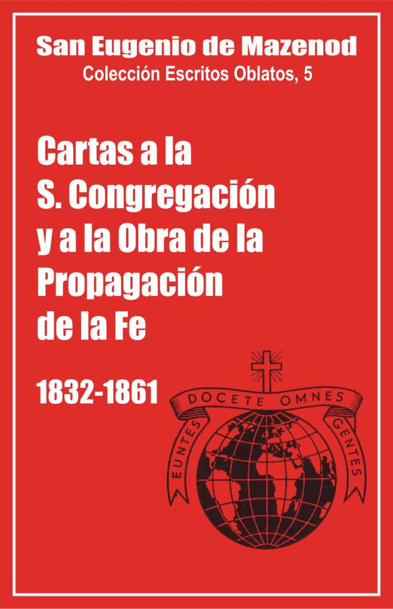

Palo Gordo
2019

San Eugenio de Mazenod
Colección Escritos Oblatos, 5
Traducción del francés por
Félix Erviti y Santiago Rebordino, omi
Postulación General O.M.I.
Via Aurelia 290 – Roma 1981
Asunción-Paraguay 2006
Palo Gordo
2019
CARTAS A PROPAGANDA EN ROMA - 1832 – 1833 - 1846 – 1847 - 1848 - 1849 - 1850 - 1851 - 1852 - 1853 - 1854 - 1855 - 1856 - 1857 - 1858 - 1859 - 1860 - 1861
CARTAS A PROPAGACIÓN EN LYON Y EN PARÍS: 1842 - 1843 - 1844 - 1845 - 1846 - 1847 - 1848 - 1849 - 1850 - 1851 - 1852 - 1853 - 1854 - 1855 - 1856 - 1857 - 1858 - 1859 - 1860 - 1861
Nota del Editor: En esta edición española damos el texto integro de las cartas que aparecen en la edición original. Pero omitimos las notas relativas a los archivos donde se hallan los originales. Omitimos también, o abreviamos, otras notas que parecen poco importante para un lector de lengua castellana.
Los cuatro primeros volúmenes de los Escritos de San C. J. Eugenio de Mazenod, fundador de los Oblatos de María Inmaculada, incluían todas las cartas, recogidas de una parte y otra hace unas decenas de años, escritas sobre todo a sus hijos misioneros en América del Norte, en las Islas Británicas, en África y en Ceilán.
Esta correspondencia hace revivir el primer impulso misionero de la Congregación, tan generosa desde sus comienzos tanto por el número de miembros que enviaba por el mundo como por el espíritu apostólico que la animaba.
Pero esas misiones no hubieran podido existir ni prosperar sin una sabia dirección proveniente de Sagrada Congregación de la Propaganda y sin las ayudas económicas de la Obra de la Propagación de la fe. Por eso publicamos, en el presente volumen, una selección de cartas dirigidas a esa S. Congregación y a esa Obra.
Cartas a la S. Congregación de la Propaganda en Roma
De las cartas enviadas por el Fundador de los Oblatos a la S. Congregación de la Propaganda, sólo publicamos las que se refieren a las misiones oblatas, es decir, más o menos la mitad de las cartas que escribió a esa Congregación. Omitimos las demás que tratan de su nombramiento al episcopado, con el título de obispo de Icosía, del proyecto de su elevación al cardenalato, de la revuelta en los Estados pontificios y las guerras de Italia, diversas cartas de recomendación y, sobre todo, las que tratan sobre las dificultades con numerosos sacerdotes orientales que buscaban refugio y dinero en Francia. Escribía sobre este punto en una de sus cartas al cardenal Fransoni: "Uno de nuestros poetas comienza una de sus elegías con estas palabras: quien me librará de los Griegos, etc." Ciertamente, yo diría con gusto lo mismo. Después de tantas molestias causadas por los obispos, monjes y sacerdotes de esas "benditas" naciones asiáticas y africanas, he aquí de nuevo un sacerdote griego que cae de la luna... [2]
En toda la correspondencia misionera del Fundador, predominan siempre dos preocupaciones: anunciar el Evangelio a los infieles y establecer la Congregación sobre bases sólidas. Todo cuanto amenaza o retrasa su realización le impacienta, todo cuanto las hace imposibles le fuerza a tomar decisiones radicales. Así, en 1850 abandona Argelia para dirigir sus misioneros hacia África del Sur, y está también a punto de retirar los Padres del Río Rojo cuando el P. Taché es nombrado coadjutor de Mons. Provencher en San Bonifacio.
Bajo la jurisdicción de obispos oblatos, de Mons. Allard en Natal, de Mons. Taché y de Mons. Grandin en el Noroeste canadiense, de Mons. Guigues en el Este, la evangelización de los infieles, la vida religiosa oblata y la instalación de la Congregación siguieron las orientaciones que quería el Fundador y no causaron ninguna dificultad. Esas misiones apenas son mencionadas en las cartas a la Propaganda. Toda la correspondencia se refiere a las misiones de Ceilán y del Oregón, bajo la jurisdicción de obispos no oblatos.
A primera vista, esas cartas dirigidas a la S. Congregación de la Propaganda, ¡están lejos de ser edificantes! Sorprenden por la dureza del lenguaje, la severidad de los juicios, la insistencia, por no decir la testarudez, de Mons. de Mazenod en proponer algunos proyectos con la esperanza de verlos admitidos por la Propaganda.
Eso se explica, en primer lugar, por la lengua en la que escribe y por el hecho de que se dirige a unos superiores, en especial a su amigo el cardenal Barnabó, secretario de la Propaganda de 1848 a 1856, luego cardenal Prefecto.
Casi todas esas cartas están escritas en italiano [3]. Ahora bien, durante muchos años, pocas ocasiones tuvo el P. De Mazenod de escribir en esa lengua. Su vocabulario lo había adquirido durante su exilio, a la edad de diez a veinte años. Pero es bien sabido que los jóvenes son extremistas por naturaleza y que gustan expresarse en un lenguaje excesivo que va, a menudo, más allá de su pensamiento. Esto puede explicar en parte, parece, la dureza de las palabras y expresiones empleadas con frecuencia en sus cartas, cuando, por ejemplo, trata de los republicanos de Roma en 1848-1850 (malvados, pillos, canallas, 30 de julio de 1849, 27 de febrero de 1850), de los Goaneses (verdaderos verdugos de almas, esa raza, esos callejeros, 11 de agosto de 1847, 20 de octubre de 1850) [4], de los obispos de Ceilán y del Oregón, de los que no deja de quejarse (prelado poco sincero, prelado tramposo y poco amigo, hombre sin lealtad, falso en exceso, prelados de esa índole, arrogancia, jurisdicción verdaderamente tiránica, oposición obstinada e injusta, 15 de junio, 8 de julio y 8 de diciembre de 1851, 28 de octubre de 1853, 12 de julio y 2 de agosto de 1855).
Además, Mons. de Mazenod escribe con frecuencia bajo la impresión de la emoción producida por algunas cartas y sin tiempo de releerlas por no perder el correo y porque está sobrecargado de trabajo. Lo dice él mismo y cualquiera puede darse cuenta por el estilo poco cuidado, las palabras francesas italianizadas, las mismas ideas repetidas en las mismas cartas. Por el contrario, el estilo y la variedad de los argumentos de la carta del 27 de marzo de 1861, por ejemplo, se diferencian de las anteriores, pero Mons. de Mazenod estaba entonces enfermo y había tenido el tiempo de releer su texto escrito por un secretario.
El fundador sabe, sobre todo, que debe hablar con franqueza a unos superiores amigos, a los que puede expresar sus sentimientos sin miramientos: "Perdonará, Eminencia, mi franqueza, escribe al cardenal Barnabó, el 28 de julio de 1858. Ud. sabe que, con Ud., yo pienso en voz alta, es decir, que manifiesto siempre mis pensamientos sin reservas. Se debe a la confianza que tengo en su bondad para conmigo y a la apertura de corazón que siempre le he manifestado desde que tuve la dicha de conocerlo". En el mismo sentido escribe el 12 de agosto de 1860: "Cuando me tomo la libertad de escribir confidencialmente a Su Eminencia es para abrirle mi corazón en el abandono de la más completa confianza. Dejo de lado todas las precauciones de lenguaje acostumbradas para decir francamente y sin ningún miramiento cuanto pienso tanto sobre las personas como sobre las cosas. Dada esta disposición de mi alma que se pone, sin miedo y con toda sencillez, al descubierto ante Ud., no debe sentirse ofendido por ninguno de mis pensamientos ni de mis juicios. Puedo equivocarme, sin duda, pero no podría ser censurado ya que cuanto más severo haya sido en mis apreciaciones, mayor prueba le hubiese dado de afectuosa confianza y amistoso abandono".
A estos diversos motivos, que explican al menos en parte los excesos de forma de esas cartas, hay que añadir la gravedad de los problemas que surgieron unos tras otros en Oregón y en Ceilán.
Los Oblatos salieron para Walla Walla, Oregón, en febrero de 1847. Si en el Este de Canadá, habían encontrado en Mons. Bourget, obispo de Montreal, un verdadero padre, muy diferentes se mostraron los hermanos Norberto y Mallorio Blanchet, respectivamente arzobispo de la ciudad de Oregón y obispo de Walla Walla. Ambos se distinguían por un espíritu eminentemente apostólico, pero eran unos hombres celosos de su autoridad, y que pretendían tener todo en sus manos: administración financiera y control del clero secular y regular. En pocos años perdieron los pocos sacerdotes seculares que los habían seguido y a los Jesuitas, que pasaron a California en 1850. El P. Accolti expresó entonces sus razones al P. Elet, provincial de los Jesuitas de Missouri: "El obispo de Walla Walla... quiere conservar obstinadamente su autoridad, entendida no según los santos cánones y las leyes de la Iglesia, sino conforme a su modo de ver las cosas totalmente ajeno a las reglas eclesiásticas; y una vez que ha hablado, es inmutable... Apenas llegado al país, se informó de los nombres de nuestros Padres que se encontraban al frente de las diferentes misiones y, sin demora, les dirigió individualmente a cada uno una carta de nombramiento como misionero-párroco del lugar, limitando la jurisdicción de cada uno a su misión y no más allá, con la cláusula: hasta revocación. Comprenderá, Rvdo Padre, las molestias y las trabas que ponía eso a los pobres misioneros y al superior que, con esa disposición, se encontraba privado de su autoridad e imposibilitado para utilizar a su gusto, según nuestras santas Reglas, a los súbditos y poder cambiarlos cuando creyera oportuno hacerlo, tanto por el bien de los sujetos como por el bien de esos desdichados Aborígenes..." Además, "los bienes de las misiones son bienes diocesanos y pertenecen al Obispo; las casas, las iglesias caen bajo el mismo derecho. El Obispo puede pedir cuenta del uso que se hace de las asignaciones de la Propagación de la fe. Toca al Obispo juzgar si una misión está bien en ese lugar o en otro... He leído mucho la historia de nuestras antiguas misiones en las diversas partes del mundo, y jamás he observado cosa semejante en este sentido".
A pesar de sus viva quejas y de la inutilidad de sus esfuerzos para lograr algunos arreglos [5], Mons. de Mazenod parece haber sido el más paciente de los colaboradores de los hermanos Blanchet; sólo consintió que los Oblatos abandonaran el Oregón, en 1858, después del incendio de sus misiones de San José y Santa Ana por los Americanos y los Indios, cuando la revuelta de los Cayusos 1855-1856.
Los Oblatos se dirigieron entonces hacia el Norte, donde Mons. Demers, obispo de Vancouver; los esperaba desde hacía unos años para evangelizar a los Indios, para proseguir, afirmaba, "la obra de su salvación iniciada en primer lugar por mí mismo, luego proseguida por los Jesuitas y finalmente abandonada por ellos sin comunicarme nada" Los Oblatos se establecieron en primer lugar en Esquimalt, en la isla de Vancouver, después se lanzaron a la evangelización de los Indios de la Columbia Británica. Aunque las relaciones con Mons. Demers fueron bastante buenas, Mons. de Mazenod estaba convencido, como muchos otros superiores religiosos de la época, de que sus hijos trabajarían con más unidad y facilidad bajo la jurisdicción de uno de los suyos; por eso recomendó vivamente a la Propaganda la creación del vicariato de Columbia Británica, confiado a un Oblato. Sus gestiones, sin embargo, no tuvieron éxito mientras vivió. Sólo en 1863, el P. d’Herbomez fue nombrado vicario apostólico del nuevo vicariato.
Las dificultades encontradas en Ceilán fueron más complicadas. En el fondo, Mons. de Mazenod estimó siempre a Mons. Bettachini y se mostró agradecido a ese vicario apostólico de Jaffna que había pedido a los Oblatos en 1847. Sin embargo, el Fundador tuvo motivos de queja con él sobre la asignación de la Obra de la Propagación de la fe, que el Vicario Apostólico quería para él en su totalidad, y sobre la oportunidad de nombrar al P. Semería coadjutor de Jaffna en 1850. Mons. Bettachini reconocía que el P. Semería era el sujeto más indicado para sucederle, pero estimaba que el nombramiento de un coadjutor era entonces "prematura e inoportuna", ya que tenía buena salud y su Vicariato solo contaba con algunos sacerdotes. Y se mantuvo firme. Por su parte Mons. de Mazenod no cesó de insistir para asegurar una posición segura para sus hijos: "No me conviene, escribía en 1852, dejar, al morir, mi Congregación en una isla alejada, en la incertidumbre de su futuro como si se tratara de un simple misionero". Mons. Bettachini perdió la paciencia y escribió una carta poco cortés al Obispo de Marsella, quien se quejó por ella a la Propaganda. El cardenal Fransoni escribió entonces al Vicario Apostólico de Jaffna, que estaba también en malas relaciones con el Vicario Apostólico de Jaffna y el Coadjutor de Colombo: "Las cartas que escribe Ud. ... están redactadas en unos términos que molestan mucho a sus corresponsales... Le exhorto, pues, con amor a que se mantenga en esa moderación cristiana que le ayudará a mitigar ese exceso de ardor o aspereza de expresiones... que solo logran enajenarle los espíritus..."
Mons. Betachini mantuvo sus puntos de vista, pero en su respuesta al cardenal Prefecto, concluye con estas palabras: "Haga como quiera; por obediencia, iré hasta el infierno". El 25 de enero de 1856 aceptó, por fin, que le dieran un coadjutor, pero recordó al Prefecto: "Sólo le ruego que no haga valer mi incapacidad o quiera convencerme con mejores argumentos que soy tonto o imbécil, porque me apena mucho pasar por tal".
El P. Semería fue nombrado coadjutor en 1856, luego Vicario apostólico de Jaffna en 1857, después de la muerte de Mons. Bettachini.
Buena parte de las cartas del Fundador a la Propaganda tratan de los problemas provocados por Mons. Bravi y el vicariato de Colombo. En ese vicariato, sin embargo, sólo había cuatro Oblatos, llegados en 1861, pedidos expresamente por la S. Congregación de la Propaganda. Mons. Bravi, italiano, coadjutor de Mons. Gaetano Musulce se opuso a su venida. Temía que la llegada de los Oblatos, ya establecidos en Jaffna, provocara una injerencia abusiva de Jaffna en los asuntos de Colombo. Además, siendo Silvestrino, esperaba poder entregar ese Vicariato a su Orden, por desgracia demasiado pobre en personal para secundar sus planes. Si no rehusó a los Oblatos que le imponían, expresó claramente sus puntos de vista sobre el particular: "Si ahora deben venir los cuatro sujetos prometidos, que vengan, pero que vengan como simples misioneros, solos, sin la menor idea de querer formar para ellos una misión y menos aún establecer para ellos una casa de su Orden".
Mons. Bravi aseguró, sin embargo, al Fundador que sería para los Oblatos un segundo padre; como contrapartida, logró que el P. Semería sólo fuera superior nominal de los jóvenes Oblatos, a los que dispersó en misiones pobres y alejadas. Poco a poco hizo cuanto pudo para desanimarlos. No le faltaba tiempo porque se llevaba muy mal con Mons. Musulce, que seguía queriendo administrar él sólo el Vicariato. Además, para ganarse la simpatía de los Goaneses, Mons. Bravi se había hecho su servidor, ocultaba su cruz, no hacía "ninguna visita, ninguna confirmación", y los apoyaba en su oposición a los Oblatos, juzgados demasiado celosos en su apostolado, en particular en la práctica de la comunión de los niños. Que los Oblatos, jóvenes y privados de guías, hubieran cometido algunas imprudencias, Mons. de Mazenod lo reconoció, pero como padre lleno de solicitud, se hizo abogado de ellos ante la S. Congregación de la Propaganda y denunció el modo de actuar de Mons. Bravi. Éste no cambió de actitud; más bien aumentó su aversión contra los cuatro Padres, quienes se declararon a favor de Jaffna en el litigio entre los dos Vicariatos sobre la propiedad de varias misiones importantes, tales como el santuario de Santa Ana de Talavita, la misión de Chilaw y más tarde la de Kurenegala.
Para arreglar ese asunto con conocimiento de causa, la Propaganda envió a Mons. Bonnand, vicario apostólico de Pondichery, como visitador apostólico. Tuvo en cuenta algunas conclusiones de su informe y, el 2 de abril de 1855, decidió que Jaffna conservaría Chilaw, se le agregaría Santa Ana, con ciertas condiciones, y se aumentarían los efectivos de los Misioneros Oblatos en la misión de Colombo "para darla exclusivamente a esa Congregación, a la que está confiada ya la de Jaffna".
Se comprende por qué, con posteridad, Mons. Bravi despegó con más ardor todavía todos sus talentos de diplomático para evitar ese proyecto y por qué, de su parte, Mons. de Mazenod presionó a la Propaganda para que se apresurara, al menos por etapas sucesivas, en la aplicación de esas decisiones. Creyó llegado el momento a la muerte de Mons. Bravi en 1859. Se lo recordó en todas sus últimas cartas al cardenal Barnabó. La Propaganda dudó, sin embargo, en retirar a los Silvestrinos de su única misión. Después de dos años de vacante, Colombo fue confiado al silvestrino Sillani. Sólo en 1883 fue nombrado para Colombo el P. Bonjean, oblato.
Cartas a la Obra de la Propagación de la fe de Lyon y París
A las cartas dirigidas a la S. Congregación de la Propaganda, agregamos las que Mons. de Mazenod dirigió a la Obra de la Propagación de la fe. Las primeras tratan de los problemas relacionados con los campos de misión, de las relaciones con los obispos y de la evangelización; las segundas hablan sobre todo de la administración financiera.
Se ha dicho con frecuencia que el dinero es el nervio de la guerra. Mons. de Mazenod, hombre realista como él era, comprendió pronto que eso valía también para las misiones. Sin dinero no se podía hacer viajar a los misioneros ni mantenerlos en regiones pobres donde había que crearlo todo. Por eso juzgó siempre indispensable la Obra de la Propagación de la fe, a la que llamaba "la Obra de las obras" (6 de agosto de 1851), "la Providencia viva de las misiones extrajeras" (17 de noviembre de 1851), "la Obra admirable" (18 de febrero de 1854), "la gran Obra... a la que ninguna otra podía parecerse" (14 de abril de 1856). Por eso acudió sobre todo a ella con reiteradas y siempre apremiantes llamadas, a medida que el número de los misioneros Oblatos aumentaba y se multiplicaban sus trabajos en los cuatro continentes.
Se han encontrado 107 cartas [6] dirigidas a la Obra de la Propagación de la fe de Lyon y de París, y dos a la Obra de la Santa Infancia. Sólo publicamos 64 para no cargar demasiado este volumen y evitar el aburrimiento de las repeticiones, en las que se trata casi únicamente de dinero y negocios. Esas cartas están todas firmadas por el Fundador y escritas en primera persona como proviniendo de él; sin embargo la escritura es con frecuencia la de secretarios que han podido escribirlas bajo su inspiración.
La Obra es bien conocida. El informe de 1842, publicado en los Anales de la Propagación de la fe, cuenta cómo empezó: "Los comienzos de la Obra son obscuros y débiles; ese es el destino de las instituciones cristianas. Dios con frecuencia prepara las cosas de tal manera que nadie pueda ser llamado su autor y no vaya ligado a ningún nombre humano. Oculta y divide su fuente como la de los grandes ríos, de los que no se puede decir en qué riachuelo han comenzado. Dos gritos de alarma, procedentes uno de Oriente y otro de Occidente, oídos por dos piadosas mujeres en una ciudad de provincia (Srta. Paulina Jaricot y Sra. Petit), inspiran el proyecto que felizmente realizado sostiene ya con una asistencia eficaz las misiones de dos mundos".
El 3 de mayo de 1822, diez apóstoles, sacerdotes y laicos, fundaron oficialmente, en Lyon, la Obra de la Propagación de la fe, unida a una asociación semejante que actuaba ya en el seminario de Misiones Extranjeras de París. El objetivo era recoger fondos y hacer rezar por las misiones. Se conservó la organización de Paulina Jaricot que había aplicado el sistema decimal a la caridad cristiana. Los miembros, agrupados por decenas, luego por centenas, se comprometían a rezar todos los días y a dar unos centavos por semana para las misiones.
La Obra se extendió muy pronto en las diócesis de Francia, luego, en menos de diez años, se extendió por Saboya, Bélgica, Italia, Alemania, Suiza, y finalmente al conjunto de los países católicos. Recogió 22.915 francos en 1823, 309.947 en 1833, 4.163.065 francos en 1843. Los ingresos permanecieron más o menos a ese nivel hasta 1860.
A partir de 1843, el Fundador hizo preparar, cada año, un informe muy detallado sobre las necesidades de las misiones oblatas. La exactitud y claridad de esas notas, preparadas habitualmente por el P. Casimiro Aubert, secretario de la Congregación, merecieron las alabanzas de los administradores de la Obra. La Congregación recibió 12.500 francos en 1843. Esa cifra aumentó en unos 10.000 francos cada año hasta llegar a los 95.000 francos en 1852. Pasó de pronto a 150.000 fr. en 1853, luego a 190.000 en 1859.
Mons. de Mazenod hacía estudiar cuidadosamente ese informe por su Consejo y siempre se interesaba personalmente, hasta en su última enfermedad. "Aunque retenido en mi lecho de dolor desde hace más de tres meses, escribía el 10 de abril de 1861, el Señor me ha hecho la gracia de poder ocuparme, en medio de mis sufrimientos, de los asuntos que me competen en mi doble calidad. He estudiado personalmente y al detalle el informe que les mando..."
Las cartas que hemos elegido son principalmente las que acompañan a esos informes o responden a necesidades particulares.
Se verá por las fórmulas que comienzan y terminan cada carta, que trata siempre con mucho respeto y estima a los administradores de la Obra, aunque no estuviera muy inclinado a fiarse de los laicos en asuntos de Iglesia. Les reitera con frecuencia el agradecimiento de la Congregación. Sin embargo, no deja nunca de ser él mismo, con una gran libertad de juicio, con una franqueza alguna que otra vez un tanto dura, con un dinamismo impulsado por el amor a Dios y a la salvación de las almas.
En 1848, por ejemplo, con ocasión del envío de cuatro Padres a Ceilán, no acepta la orientación de los administradores de Lyon que quieren darlo todo a Mons. Bettachini y nada a los Oblatos: "No son Uds., Señores, los hombres de negocios del Vicariato Apostólico de Jaffna, escribe el 24 de octubre, sino los distribuidores benévolos de las limosnas de los fieles cuyo reparto hacen conforme a las necesidades, no sólo a los Obispos y a los Vicarios Apostólicos, sino también a las Órdenes religiosas encargadas por la Iglesia de evangelizar a los países infieles..." Recibió una respuesta que consideró poco respetuosa. Se molestó y dejó de escribir un año a los Señores de Lyon. Cuando reanudó el diálogo, después de haberle dado la razón, se mostró cortés, aunque conservando su franqueza, pero sobre todo apoyó siempre sus peticiones de dinero para la Congregación, para el escolasticado de Inglaterra o para otras necesidades extraordinarias, citando ejemplos de ayudas parecidas otorgadas a otros Institutos y consignadas en los informes de los Anales.
Cuando le concedían una cantidad muy inferior a la solicitada, insistía, ya denunciando los gastos abusivos a los que era destinado el dinero recibido, ya demostrando que los Oblatos vivían en la miseria. "Les hablaré más tarde de las necesidades del Oregón, escribe el 24 de octubre de 1848. Esos misioneros recurren a Uds., dicen, no precisamente para construir hermosas iglesias como en los Estados Unidos, sino para construir casuchas, donde puedan ponerse al abrigo de la intemperie de las estaciones y para procurarse los toscos alimentos que sostienen sus fuerzas para no morir de hambre..." "Los asociados de la Propagación de la fe dan para los misioneros que trabajan para anunciar el Evangelio a los infieles, agrega el 22 de diciembre de 1850, y no para embellecer las iglesias... ni para amueblar los obispados..." En este mismo sentido, se lee en la última carta que escribió a la Obra el 10 de abril de 1861: "Les pido para nuestros misioneros, no para que lleven una vida cómoda y desahogada, sino para procurarse una alimentación bien pobre, un modo de vida bien modesto, para aguantar sus rudos trabajos y para poder hacer respetar un poco el carácter sagrado del que están revestidos y el augusto ministerio que desempeñan".
Dos veces reconoce haber exagerado en el modo de pedir más dinero, hasta el punto de haber molestado a los administradores. Presenta sus excusas con humildad y da sus explicaciones el 8 de enero de 1857: "Me entero por el Sr. Obispo de San Bonifacio y por el Sr. Obispo de Olimpia que la carta que he tenido el honor de escribirles insistiendo sobre las necesidades de nuestras misiones les había apenado. Mi secretario ha debido interpretar mal mi pensamiento si se le ha escapado alguna expresión que les haya herido. Lejos de mi espíritu y de mi corazón el querer causar la menor pena a unos hombres como Uds., dedicados al bien y para quienes tengo tanta simpatía y profeso tan gran admiración; no me he dado cuenta, al firmar la carta, que ella contenía otra cosa además de la expresión de nuestra miseria y el deseo de que vuestra caridad pudiera remediarla. No obstante, me siento tan apenado por haber podido, aún involuntariamente, haberles ofendido, que no dudo en manifestarles mi pesar y presentarles mis excusas..."
Mons. de Mazenod tuvo también quejas de la Obra a propósito de artículos publicados en los Anales. La revista sacaba ya 150.000 ejemplares en 1843, 212.000 en 1861, de los cuales 138.000 en la edición francesa. Era muy leída por el interés que suscitaban las cartas de los misioneros. Dar a conocer los informes escritos por los Oblatos era dar a conocer la Congregación y sus obras. El Fundador no dejó nunca de mandar las mejores cartas de sus misioneros. Se publicaron una o dos por año a partir de 1845, excepto en 1848 y 1853. A pesar de varias llamadas, sólo se publicó una en 1854 y otra en 1855. Y juzgó oportuno levantar la voz: "Me hubiese gustado que no se olvidaran de citar los nombres de los misioneros que salen para las misiones, observa el 17 de enero de 1854. Las diócesis que nos los dan se sorprenden cuando no se los menciona. No digo nada sobre la inclusión de las cartas que varias veces he hecho llegar a Lyon. He leído otras menos interesantes. Me parece que por el honor de las diversas Órdenes conocidas por su dedicación al ministerio de las misiones sería bueno citar por turno su correspondencia, aunque sólo fuese para probar que no están ociosas". El 14 de abril de 1856, se expresa con más fuerza: "El último número de los Anales sólo contiene cartas más o menos interesantes de las misiones de China; ¿no temen Uds. no usar bien los asuntos de la Santa Infancia hablando sólo del país al que se presenta como debiendo absorber todos los fondos destinados a la infancia, como si en las demás misiones no se bautizaran también un gran número de esas pobres pequeñas criaturas?. No creo equivocarme al persuadirme de que las cartas que yo les he hecho llegar son tal vez más edificantes que otras a las que han dado preferencia en los Anales y que además tendrían el mérito de la variedad. Termina uno por aburrirse oyendo hablar solamente de China, Cachemira y Tonkín". La lección fue tenida en cuenta. Desde 1858 aparecieron cada año en los Anales varias cartas escritas por los Oblatos.
Hemos destacado aquí algunos aspectos de esa correspondencia cuya importancia para darnos a conocer a Mons. de Mazenod e informarnos sobre la actividad misionera de los Oblatos el lector podrá comprender por sí mismo. En efecto, en esas cartas que hablan sobre todo de negocios, el Fundador no es sólo pedigüeño o administrador; le inspiran siempre la naturaleza y el fin de la Congregación, la salvación de las almas, la presencia de la Iglesia en el mundo, la gloria de Dios. Por otra parte, aunque esas cartas tratan poco de la vida religiosa de los misioneros y llevan pocos consejos y reflexiones útiles para la edificación de los Oblatos de nuestros días, son tan importantes como la correspondencia publicada anteriormente, para subrayar la extensión rápida de las misiones extranjeras de los Oblatos y el aumento del número de misioneros, sus trabajos, sus sacrificios y el espíritu que los animaba. Ojalá aparezcan, finalmente, como un monumento, muy humilde pero muy sincero, expresando todo el agradecimiento de los Misioneros Oblatos de María Inmaculada hacia la Obra de la Propagación de la fe de Lyon y de París.
Correspondencia misionera del Fundador
Con este volumen termina la correspondencia misionera del Fundador. Fiel a la orden dada a sus hijos, él mismo pone todo de su parte para asegurar la estabilidad y el progreso de las misiones confiadas a los Oblatos: reclutar personas, formarlas, estimularlas, darles unas normas de conducta valiente para el apostolado entre los infieles y procurarles los auxilios financieros indispensables; proponer a la Propaganda las mejores medidas para hacer más eficaz el trabajo apostólico y crear una atmósfera favorable para la dedicación más generosa, hasta defender, dada la ocasión, a los misioneros ante los Obispos que no los comprendían, poniendo de relieve su celo y su buena voluntad; tales son los principales temas de esa correspondencia que, confirmando lo que ya sabemos de su carácter impulsivo, denota sobre todo cómo ha sido verdaderamente misionero de alma. "Poseía ese espíritu de conquista que impulsa a los apóstoles a ir siempre hacia delante para hacer progresar el Reino de Dios. Como jefe de una Congregación dedicada a las misiones, tuvo siempre muy viva ante sus ojos la solicitud de los territorios confiados a sus hijos. El apostolado, los problemas de las diversas misiones, los esfuerzos de los misioneros, nada le era extraño. Se inclinaba, por así decirlo, sobre cada cristiandad naciente; se informaba, consultaba para poder dar a cada uno las directivas apropiadas. Desgraciadamente no tenía al alcance todos los datos que tenemos hoy día sobre los métodos y los problemas misioneros... Sin embargo, los métodos, las técnicas no lo son todo en el apostolado misionero. Lo esencial es la obsesión por el mensaje del Redentor que hay que llevar al mundo, esa caridad apostólica ardía en el corazón de San Pablo y lo lanzaba por los caminos del Imperio Romano para ganar almas para Cristo. Esa caridad ardía también en el corazón de Mons. de Mazenod... quien ha contribuido más que cualquier otro a crear el espíritu misionero de la Congregación" [7].
Yvon Beaudoin o.m.i.
N.B. Cuando este volumen está prácticamente impreso, se acaba de descubrir, al hacer investigaciones sobre el P. Tempier, un fondo de archivos de la S. Congregación de la Propaganda, que no había sido investigado por los Oblatos. Se trata del fondo: "Escritos originales... congresos generales". En los volúmenes 989 y 990, por ejemplo, se ha encontrado el original de las cartas nn. 71, 74, 77 y 78 de este volumen V de los Escritos Oblatos. Una última carta del Fundador, no publicada aquí, fue enviada al cardenal Barnabó el 15 de abril de 1861, escrita por un secretario, sin duda el P. Rey, y firmada por Mons. de Mazenod quien agrega, con una letra casi ilegible, dos líneas de saludo y dice que espera siempre "alguna buena noticia de Colombo".
1. Al cardenal Pedicini, prefecto de la S. C. de la Propaganda.
Gestiones emprendidas ante el Gobierno para enviar Oblatos a Argelia. Los sacerdotes enviados desde 1830 son poco numerosos y están mal preparados. El P. de Mazenod ofrece nuevamente los servicios de sus misioneros que estarán siempre agradecidos por el papel desempeñado por el cardenal Pedicini en la aprobación de las Reglas de la Congregación.
Marsella, 10 de abril de 1832.
Eminentísimo Señor,
Desde que Argel fue conquistado por las armas del buen rey Carlos X (4 de julio de 1830), me he dedicado a procurar a los católicos de la colonia los auxilios de nuestra religión. Abrigando, además, en mi corazón la esperanza de ver un día a muchos infieles abriendo los ojos a la luz de la fe, escribí al obispo de Marsella, mi tío, y le rogué escribiera al Primer Ministro de entonces y al cardenal Gran Capellán para obtener ayuda y protección con esa finalidad. Ese proyecto gustó mucho y me contestaron que se proveería cuanto antes a ese asunto tan importante dando a nuestra Congregación la ayuda y la protección pedidas. Mientras tanto yo me disponía a escribir al Soberano Pontífice, nuestro protector siempre magnánimo y querido (León XII), cuando de pronto se abatió sobre nosotros la desgraciada revolución (julio 1830). Esperamos entonces para ver lo que ocurriría, si Francia mantendría o no su conquista.
Las noticias que nos llegaron más tarde nos revelaron la insuficiencia, por el número de católicos que acudían en esas regiones, de los auxilios que podían prestarles algunos sacerdotes, poco habituados al ministerio sagrado. Fue entonces cuando se despertó en mi corazón el deseo de atenderles ofreciendo de nuevo la ayuda de nuestra Congregación, pero esta vez no ya al Gobierno que no tiene el mismo celo por la fe, sino a Roma que, por derecho y por amor, tiene siempre "la solicitud por todas las Iglesias". Escribí al Eminentísimo de Rohan, mi amigo [8], para que hablara de ello a su Eminencia. Entre tanto, la Propaganda envió dos sacerdotes a esas regiones. Espero que harán algo, pero no estoy seguro sean suficientes para tanto trabajo, y más cuando uno de ellos me parece débil de salud y los dos me parecen muy jóvenes.
Sea lo que sea, si Su Eminencia quiere dar más amplitud a esa misión, le ofrezco de nuevo nuestra muy pequeña Congregación, salida de algún modo, podría decir, de sus manos. En efecto, si lo recuerda, ha sido Ud. el ponente muy benévolo cuando el Papa León XII quiso aprobarla, como de hecho lo hizo en forma específica.
Mi agradecimiento y el de la Congregación viven todavía en nuestros corazones. Hasta diré que es un deber mantenerlo siempre entre nosotros, aún después de mi muerte; por eso, en el prólogo de nuestras Reglas, están impresas, "ad perpetuam rei memoriam", las palabras que siguen y es un placer para mí el transcribirlas aquí: "El muy eminente y piadoso cardenal Pedicini, que aceptó el encargo de ser el ponente de nuestra causa, se mostró incansable a lo largo de los trabajos relacionados con el muy cuidadoso examen, muy honroso para nosotros, de nuestras Constituciones".
El portador de esta carta, superior del seminario mayor de Marsella y uno de los primeros miembros de la Congregación [9], le dará todos los detalles necesarios en caso de que Su Eminencia quiera confiar la misión de Argel a los Oblatos de la Inmaculada Concepción.
De Su Eminencia, el muy humilde y seguro servidor.
Mazenod, Sup. Gen. O.M.I., vic. gen. de Marsella.
2. Notas para la S. Congregación de la Propaganda.
Los sacerdotes aislados que han ido a Argelia han hecho poco bien. Para trabajar con más unidad y buen ejemplo, convendría enviar allí religiosos como los Oblatos de María Inmaculada. El superior debería ser obispo. Cualidades del P. José Guibert. Nombre de los Oblatos que podrían acompañarlo.
Roma, 14 de septiembre de 1833.
Para ponerse de acuerdo con los puntos de vista de Mons. el Secretario de la Propaganda, consignaré en este escrito las ideas que a Su Excelencia le parecen haber agradado en la conversación que tuvimos sobre la misión de Argelia.
Como la experiencia lo ha ya demostrado, los sacerdotes, que llamaré libres, que se han presentado hasta ahora, han hecho poco bien o ninguno. Unos no han tenido éxito por falta de celo y pureza de intención, otros por falta de fortaleza y de cooperación. No hablo de los sacerdotes indignos, demasiado viciosos para ser bendecidos por Dios y que son la ruina de la Iglesia por donde quiera que pasan.
"Llamado a opinar, en mi alma y conciencia, debo decir que estoy íntimamente convencido que, siendo indispensablemente necesario el acuerdo más unánime sobre los medios a emplear y debiéndose elegir obreros llenos del espíritu de Dios, no podría hacerse nada mejor que encargar esta misión a la congregación de los Misioneros de la Inmaculada Concepción la cual, teniendo la mayor parte de sus fundaciones en las regiones meridionales y principalmente en Marsella, puede proporcionar sujetos con más facilidad y menos gastos. Estando en vigor, gracias a Dios, la disciplina regular en esta Congregación fundada por el Papa León XII, el Santo Padre tendría la garantía de la virtud ejemplar de los sujetos que fueran elegidos para esa misión. Viven en comunidad bajo la dependencia de un superior al que están acostumbrado a obedecer.
Soy totalmente de la opinión de Mons. el Secretario. Ese superior debería ser honrado con el carácter episcopal. La elección es, pues, muy importante. Por ese motivo yo le propongo a uno de los sujetos más distinguidos que conozco en Francia, tanto por sus virtudes como por sus talentos y por su notable modo de actuar que gana los corazones y somete los espíritus. Se llama José Guibert y es actualmente superior de la casa de los misioneros nombrados, situada en el célebre santuario de Nuestra Sra. de Laus en el Delfinado por donde pasan cincuenta mil peregrinos al año.
Si alguna vez Su Santidad compartiera esos puntos de vista, el Obispo de Icosía, etc. daría las más amplias informaciones que pudieran ser necesarias, pero lo que puede afirmar ya desde ahora es que el sacerdote Guibert es una persona excelente, entre los mejores, y que tiene todas las cualidades necesarias tanto para ser un excelente obispo, como para llevar a buen término esta empresa tan importante para la propagación de nuestra santa religión en África.
P, D.: Encuentro la copia de la nota que he enviado a Mons. Mai sobre la misión de Argelia y se la mando añadiendo los nombres de los misioneros que podrían ser elegidos dado el caso de que los Lazaristas reconozcan que no pueden responder a las necesidades de las misiones del Levante que les han sido confiadas y que, por tanto, no es prudente asumir la responsabilidad de una nueva misión tan importante como la de Argelia, con el riesgo de no garantizar su servicio.
No me acuerdo del nombre de bautismo de los misioneros, pero me será fácil procurármelos cuando vuelva a Francia. José Guibert, rector de Nuestra Señora de Laus, Diócesis de Gap. Es el primero y muy digno sujeto que ya he mencionado. Telmon, nacido en Barcelonnette, diócesis de Digne, actualmente en Nuestra Señora de Laus. Ricard, nacido en Allauch, diócesis de Marsella. Bernard de la diócesis de Aix. Aymar de la diócesis de Gap. Gignoux de la diócesis de Gap.
En caso de que Mons. Mai tomara la decisión de elegir algunos de esos sujetos para la misión de Argel, lo que deseo "para mayor gloria de Dios", bastaría que avisara al Sr. Obispo de Marsella, como para recomendar a esos misioneros a su caridad, sin mencionar mi nombre. Yo comprendería el asunto y haría responder a los misioneros, sin aparecer personalmente.
¡Ojalá que este asunto tan santo pueda tomar desde el principio esa buena dirección, pues esos buenos sacerdotes estarían ya trabajando!
3. Al cardenal Fransoni, prefecto de la S. Congr. de la Propaganda.
Fallecimiento de Mons. Rosati. En la "Noticia estadística de las misiones católicas en el mundo", han olvidado el nombre de la Congregación de los Oblatos. Detalles sobre la aprobación del Instituto por León XII y sobre el estado de las casas y del personal.
Marsella, 6 de noviembre de 1843.
Eminencia,
Cuando el excelente Mons. Rosati, recientemente fallecido, pasó por Marsella, tuve la dicha de hospedarlo en mi casa. Durante el poco tiempo que pasó conmigo, nos hemos unido con una estrecha amistad, lo que me hace sentir más vivamente la pérdida que la Iglesia acaba de padecer con la muerte de un obispo de tanto mérito.
Antes de irse, ese muy digno amigo me regaló un librito titulado: "Noticia estadística de las Misiones católicas en el mundo". Lo he leído con ese gusto que debe sentir un Obispo al ver la propagación prodigiosa de la fe. Pero, al mismo tiempo que agradecía a Dios por el número de Servidores que el Padre de familia había enviado a su mies, y me consolaba admirando el celo de tantos y buenos sacerdotes y religiosos dispersos por el mundo para predicar la Verdad evangélica y dar a conocer a Dios y a su Hijo Jesucristo nuestro Señor, he sentido una honda pena, se lo confieso, al ver que en esa lista gloriosa, el autor había olvidado mencionar la Congregación a la que pertenezco. Ésta ha sido aprobada, en forma específica, por el Soberano Pontífice León XII, durante su tercer año de pontificado, el 21 de marzo de 1826, por las Cartas Apostólicas "Si tempus unquam plane fuit", rubricadas con el sello del Pescador, con el nombre de Congregación de los Oblatos de la Santísima Virgen María Inmaculada. He aquí los términos exactos del Santo Padre: "Constituimos esta misma familia y la queremos designar con el nombre de Congregación de los Oblatos de la Santísima Virgen María concebida sin pecado".
Todos saben que desde su fundación los obreros de esta Congregación se dedican a las misiones, con un trabajo continuo, en Francia, en Córcega y desde hace algún tiempo en Suiza. Pero, además, se han establecido en el Canadá, desde hace dos años, y poco después en Inglaterra donde trabajan de un modo notable para la gloria de Dios y bien de las almas, especialmente con los herejes y los infieles.
Llamados al Canadá por Mons. Bourget, obispo de Montreal, predican misiones en toda esa inmensa diócesis, no sólo a los católicos sino también en los municipios, pueblos mixtos desprovistos de los auxilios de la religión, donde abundan los herejes y los apóstatas. Unos y otros son llamados de nuevo a la fe por el ministerio de los misioneros que trabajan también entre los Indígenas, cuya lengua han aprendido ya varios Padres.
En Inglaterra, Mons. Baines, vicario apostólico, fallecido recientemente, ha confiado a la Congregación de los Oblatos de la Virgen María Inmaculada la misión de Penzance, en el condado de Cornwall. Han construido ahí una hermosa iglesia, frecuentada por herejes de todas las sectas, de los cuales, cada día, algunos se convierten a la Verdad.
Otro Vicario Apostólico de Inglaterra pide también la ayuda de su ministerio, igual que otros obispos de Canadá.
Mons. Rosati se sorprendió mucho al conocer estos hechos y me prometió reparar ese olvido involuntario que comprendió tenía que ser doloroso para mi y para la Congregación. Pero he aquí que la muerte nos lleva a ese santo Obispo, y sus buenas intenciones quedarían sin efecto si no me quedara el recurso de acudir a Su Eminencia para hacer justicia, tanto más cuando la Congregación olvidada precede en antigüedad a varias familias religiosas mencionadas en la Noticia Estadística, como los Oblatos de Pinerol, los Maristas, etc., que deben el mismo favor del todo especial, que me concedió el Papa León XII de llorada memoria, al haber sido aprobadas con posterioridad.
Sería demasiado largo contarle, Eminencia, cómo el Señor ha movido visiblemente el espíritu y el corazón del Soberano Pontífice para que concediera lo que había negado hasta entonces a otros. Basta que sepa que el Santo Padre no se limitó a expresar su voluntad al arcipreste Adinolfi, que reemplazaba entonces al Secretario de la Sagrada Congregación de los Obispos y Regulares, diciéndole: "quiero aprobarla", sino que se dignó elegir personalmente a los Eminentísimos Cardenales que debían examinar las Constituciones. Por unanimidad dieron éstos un juicio favorable, el 15 de febrero de 1826, y pidieron al Santo Padre aprobara esas Constituciones con Cartas Apostólicas. El 17 de febrero de 1826 aprobó el Papa el Instituto y las Constituciones y Reglas, y ordenó la expedición de las Cartas Apostólicas en forma de breve. Como ya he dicho más arriba, esas cartas fueron enviadas el 21 de marzo de 1826.
Aunque le haya hecho a Su Eminencia un relato muy preciso de los acontecimientos, juzgo obligado, para mejor procedimiento, presentarle:
- una copia impresa de las Cartas Apostólicas de aprobación de la Congregación,
- una copia de las cartas de los diferentes Soberanos Pontífices al respecto,
- una copia del decreto del Obispo de Montreal, en el Canadá, que establece la Congregación en su diócesis.
En cuanto al número de misiones, le diré en primer lugar, como dato, aunque comprendo no sea materia de la Noticia Estadística, que la Congregación de la Santísima Virgen Inmaculada, además de las fundaciones de América e Inglaterra, tiene actualmente una casa de misioneros en la Arquidiócesis de Aix, una casa de misioneros en Marsella, donde también llevamos la dirección del seminario mayor diocesano, una casa de misioneros y un noviciado preparatorio en el santuario de Ntra. Sra. de Lumieres, en la arquidiócesis de Avignon, una de misioneros y un noviciado en el santuario de Ntra. Sra. de l’Osier, en la diócesis de Grenoble. En Córcega, tenemos una casa de misioneros en Vico y, además, la dirección del seminario mayor de Ajaccio, donde los Padres enseñan, como en el seminario de Marsella, la teología dogmática y moral, el derecho canónico, la Sagrada Escritura, la filosofía, etc.
Las misiones que llamaría extranjeras se encuentran:
En la diócesis de Montreal, en el Canadá, donde los misioneros evangelizan a los herejes en los municipios y a los Indígenas. Esta misión cuenta con ocho sacerdotes, dos diáconos que tal vez ya son sacerdotes, seis estudiantes novicios, dos profesos y cinco hermanos coadjutores.
En Penzance, Inglaterra, en el distrito de Cornwall, tenemos tres misioneros sacerdotes, tres estudiantes, un hermano coadjutor y una hermosa iglesia. Toda esa población está para convertir, pues sólo hay algunos católicos.
Termino esta larga carta, Eminencia, besándole las manos.
Su muy humilde y fiel servidor
+ C. J. Eugenio, Obispo de Marsella.
4. Al cardenal Fransoni, prefecto de la S. Congregación de la Propaganda.
Éxito del apostolado de los Oblatos en Canadá. Deseo de obtener una bendición del Santo Padre.
Marsella, 23 de diciembre de 1846.
Eminencia,
... Sin duda que ha visto ya, a esta hora, al santo Obispo de Montreal, Canadá. Por él se habrá enterado cómo el Señor bendice el ministerio de nuestros Oblatos de María Inmaculada que no sólo predican misiones en las diócesis de Montreal, Kingston y Québec, sino que evangelizan también a los Indígenas de los ríos Ottawa, San Mauricio y Saguenay y acaban de aventurarse hasta San Bonifacio en el Río Rojo y en los grandes bosques llenos de tribus indígenas.
¡Oh! Cuánto he deseado que el Santo Padre fuera informado de esto para que brotase de su corazón paternal una de esas abundantes bendiciones que hacen fructificar al ciento por uno la semilla divina en el campo del Padre de familia.
Ud. sabe, Eminencia, que el difunto pontífice Gregorio XVI, poco antes de su muerte, confirmó las Constituciones y la Congregación por Letras Apostólicas del 20 de marzo de 1846. Ésta había sido aprobada, en forma específica, por el papa León XII, de santa memoria, por las Cartas Apostólicas del 21 de marzo de 1826. Le recuerdo estos detalles, Eminencia, para que como prefecto de la S. Congregación de la Propaganda conozca la calidad de los obreros que trabajan bajo su protección en la viña del señor.
Acepte, Eminencia, la expresión habitual de los sentimientos más vivos de respeto y de afecto de su muy humilde y muy fiel servidor.
+ C. J. Eugenio, obispo de Marsella.
5. Al cardenal Fransoni, prefecto de la S. Congregación de la Propaganda.
Los Oblatos envían tres misioneros a Ceilán. Motivos y condiciones de esta decisión. Apostolado de la Congregación en diversos países. Partida de Mons. Bettachini. ¿Ha sido erigida la diócesis de Bytown?
Marsella, 11 de agosto de 1847.
Eminencia,
... No puedo dejar de hablarle una vez más de la desgraciada misión de Ceilán. Mucho hemos hablado con el excelente Mons. Bettachini. Estoy convencido de que es necesario enviar ayuda a esos pueblos dispuestos a recibir la luz de la verdad, pero, ¡ay!, descuidados por esos Goaneses, verdaderos verdugos de las almas. Es tanto más importante hacer llegar allí sacerdotes que sean lo que deben ser, verdaderos hombres de Dios, que independientemente del cisma que se puede despreciar, la herejía quiere hacer de aquello un centro del error y ya ha instalado allí un obispo anglicano. Sabe, Eminencia, cómo late en mi un corazón católico. Ese sentimiento me inspiró fundar esta Congregación de los Oblatos de María Inmaculada a la que el papa León XII dio la vida canónica de un modo que llamaría casi milagroso. Extendida no sólo por Francia e Inglaterra, donde hace tanto bien, se ha extendido también por América, del Atlántico al Pacífico, donde evangeliza a los aborígenes que viven a orillas de los ríos San Lorenzo, San Mauricio, Saguenay y Ottawa. Sus misioneros se han establecido en San Bonifacio sobre el Río Rojo y en Oregón, y ahora avanzan por el río Moose hacia la Bahía de Hudson. ¡Pues bien!, estamos preparados para aceptar las misiones de la isla de Ceilán, bajo la jurisdicción del santo Obispo de Torona al que acabo de prometer tres excelentes sujetos, uno de los cuales es superior de las misiones de Córcega donde realiza verdaderos prodigios de conversión. La única condición que pongo a ese don es que esos tres dignos misioneros no dependan del capricho de los Goaneses, sino que trabajen bajo la dirección del coadjutor, Mons. Bettachini, que me ha gustado mucho durante los dos días que ha pasado conmigo en Marsella. Ese buen prelado sale hoy en barco; pero como está bastante cansado del viaje, se detendrá unos días en Città di Castello, su patria. Espera llegar a Roma hacia el 25 de este mes. Ese descanso es demasiado corto, en mi opinión, porque necesita verdaderamente recuperar la salud.
Le rogaría ahora, Eminencia, me informara en cuanto a la decisión tomada sobre la diócesis de Bytown en Canadá. El Sr. Obispo de Montreal me había dicho que la Sagrada Congregación me mandaría las Bulas del Obispo si el Santo Padre erigía esa diócesis. Me interesa mucho saber si Su Santidad ha elegido la persona presentada por los Obispos de la provincia de Québec, ya que pertenece a la Congregación de los Oblatos de María Inmaculada. Probablemente las Bulas hayan sido enviadas por otra vía. Me gustaría, sin embargo, estar informado del hecho. Perdone la inoportunidad de mi petición y acepte el respeto con el cual soy, Eminencia, su muy humilde servidor.
+ C. J. Eugenio, obispo de Marsella.
6. Al cardenal Fransoni, prefecto de la S. Congreg. De la Propaganda.
Alegría al saber que el Cardenal acepta el envío de Misioneros Oblatos a Ceilán. Nombres y cualidades de los tres Padres que forman la primera colonia. Ruego para que se les conceda el título de misioneros apostólicos. Esperanza de enviarlos gratuitamente hasta Alejandría.
Marsella, 25 de septiembre de 1847.
Eminencia,
Me he enterado con la mayor alegría, por su preciosa carta del 7 de este mes, que acepta el ofrecimiento que le hacía de tres de nuestros misioneros Oblatos de la Santísima María Inmaculada. Según lo que he entendido, en mis conversaciones con Mons. Bettachini sobre esa misión, se trata de una gracia de la divina Providencia a favor de esos pueblos de Ceilán que tanta ayuda necesitan.
Mi preocupación, para corresponder a los proyectos de la Sagrada Congregación, ha sido la de escoger excelentes sujetos. No me ha sido difícil, ya que nuestros Oblatos de la Santísima María Inmaculada son, gracias a Dios, todos buenos, están todos dispuestos a sacrificar su vida para glorificar a Dios y trabajar por la conversión y la santificación de las almas; tal es precisamente el fin de su vocación. Entre esos buenos sujetos he elegido verdaderamente el mejor, el P. Esteban Semería. No es de mucha edad, sólo tiene 34 años, pero posee madurez en cuanto a virtudes y todas las cualidades religiosas. Desde hace varios años viene desempeñando la función de superior de las misiones de Córcega. Es increíble con qué éxito, con qué bendiciones de Dios, hasta los bandidos acuden a sus pies, y son prodigiosas las reconciliaciones que su celo y su bondad logran en ese país que todos conocen. Cuando el Obispo se entere del robo que estoy por hacerle, no sé si me lo perdonará. Pero la Congregación presta sus personas, no los da. Es muy importante poner a la cabeza de esa primera pequeña comunidad a un religioso como el P. Semería. He escogido a otro italiano, igualmente muy buen religioso, como primer compañero del P. Semería. El tercero es también un ángel por los rasgos de su cara y por sus costumbres; a éste lo he elegido entre nuestros Oblatos irlandeses por el inglés tan necesario en ese país; servirá de intérprete y de maestro a sus compañeros. El P. Ciamin, el segundo que he mencionado, empieza a hablar ya esa lengua.
Quisiera ahora suplicarle, Eminencia, hiciera un favor a esos tres misioneros. Es el de darles el título y los poderes de misioneros apostólicos. Como vivirán en la obediencia a Mons. Bettachini, a quien profeso una real estima, me interesa que nuestros Padres Oblatos no sean menos favorecidos que otros que ya están en la isla. Tenga la seguridad que no abusarán de ese favor y que harán honor al título y a las funciones que les serán dados.
Espero la respuesta del Gobierno al que he escrito para obtener el pasaje gratuito hasta Alejandría. Si no lo logro, necesitaré la ayuda de la S. Congregación que empleará mejor sus dineros dándolo para ese fin en lugar de perderlo, de algún modo, engordando a ese perezoso Macario que sólo sabe comer y pasearse. Él dice siempre que quiere irse. El otro día me ha hecho firmar una petición y escribir para lograr el pasaje a Constantinopla. Que salga, pues, ya que se ha hecho inaguantable para todos.
Acepte el homenaje afectuoso con el cual soy, Eminencia, su muy humilde y afectuoso servidor.
+ C. J. Eugenio, obispo de Marsella.
He aquí los nombres de los tres Padres Oblatos de la Santísima María Inmaculada que deben salir para la isla de Ceilán:
El P. Esteban Semería de la Colla, diócesis de Ventimilla.
El P. José Ciamin de Niza.
El P. Luis Keating de Mountmellick, diócesis de Calow en Irlanda.
Un Hermano converso (el Hno. Gaspar De Steffanis).
7. Al Sr. Canónigo Löwenbruck, en Roma.
Ordenación de religiosos italianos en Marsella. Quejas contra los hermanos Blanchet de Oregón. Convendría nombrar al P. Pascal Ricard o.m.i., obispo de Nesqualy, y a un Jesuita, vicario apostólico de las Montañas Roquizas. Comunicar confidencialmente esos proyectos a Mons. Barnabó.
Marsella, 26 de octubre de 1848.
Querido Canónigo,
Me he sentido contrariado por no poder conversar con Ud. unos instantes, cuando pasó últimamente por Marsella. Iba a ordenar sacerdote a uno de esos pobres Jesuitas que querían alistar en los ejércitos, en los Estados del Rey de Cerdeña, por más religiosos que sean, cuando no tienen las Órdenes sagradas; y la intolerancia llega hasta el punto de amenazar con los peores tratos a los Obispos que se atrevan a ordenar a los Religiosos. Ese es el motivo que lleva a todos a acudir a mí que no me dejo intimidar. He hecho una docena de ordenaciones "extra tempora" para salvar a esos buenos religiosos de la persecución, y no me quejo de ello por pesado que pueda ser.
Algo hablamos de un asunto importante para el servicio de la Iglesia y la salvación de las almas, en el breve momento que nos vimos. Voy a hablarle más ampliamente de ello, dejando a su discreción hacérselo saber a Mons. Barnabó, pero solo a él, si lo juzga conveniente. Ud. comprenderá lo importante que es, estando bien informado de lo que ocurre en Oregón, no deje nunca sospechar que ha sido informado por mí. Los Obispos de ese país que se entienden bien entre sí no se lo perdonarían a nuestros buenos Padres Oblatos de María que sufren ya bastante. En primer lugar no sé si Mons. Barnabó conoce el carácter de los dos hermanos Señores Blanchet, uno Arzobispo de Oregón-City, el otro obispo de Wala Walla. Son dos hombres de una pieza, ante quienes todo debe doblegarse; han adoptado un sistema, al que han llevado a Mons. Demers, obispo de Vancouver, que consiste en considerarse no sólo como los pastores, sin también como los dueños, los propietarios de cualquier establecimiento religioso que se erija sobre el suelo de su jurisdicción.
Al no reconocer ningún privilegio de las Congregaciones u Órdenes religiosas, desearían apoderarse de cuanto poseen, por lo menos de lo que les llega de la Propagación de la fe, y los Religiosos sólo tienen eso. De acuerdo con ese sistema los Jesuitas han sido especialmente vejados, hasta el punto de ver comprometida su misión. Ahora les toca el turno a los Oblatos de María. Esos buenos Prelados que aspiran actualmente al descanso, no se dan cuenta que queriendo asimilar las Congregaciones y Órdenes religiosas a los sacerdotes libres que tienen con ellos, destruyen el nervio de la disciplina regular y perjudican el desarrollo de los recursos de su celo por la propagación del Evangelio. No soy el confidente de los agravios de los Jesuitas, solo sé que tienen mucho de qué quejarse de los procedimientos de los Obispos, pero veo con mucha pena que esos Prelados dan también a los Oblatos de María motivos de descontento y de inquietud. Éstos, sin embargo, son personas muy abnegadas que lo han abandonado todo, parientes y patria, para dedicarse a la conversión de los infieles. Me parece que los Obispos, que ciertamente no pueden hacerlo todo por sí mismos, deberían sentirse felices por tener unos cooperadores así y deberían cuidarlos más.
Me entero que Mons. Demers, obispo de la isla de Vancouver, viene a Europa. Irá, sin duda, a Roma para hacer aprobar varios proyectos por la S. Congregación. Entre otros, para mantener esa especie de monopolio que los Obispos han establecido en Oregón, propondrá a un sacerdote canadiense (son todos Canadienses) para la diócesis de Nesqualy. Esto sería el colmo de la desgracia. Entonces, tanto los Jesuitas que han hecho ya tanto bien, como los Oblatos de María Inmaculada, podrían retirarse; porque las pretensiones de esos Obispos son intolerables. ¿Cómo remediar ese desorden? Que se convenzan bien que no hay otro remedio sino nombrar para la sede de Nesqualy a un miembro de una de las Congregaciones religiosas que evangelizan esas regiones. Los Jesuitas dicen que su Instituto no les permite aceptar una sede episcopal, entonces convendría elegir ese sujeto entre los Oblatos de María, y la elección debería necesariamente recaer en el superior actual que es un hombre muy piadoso, lleno de sentido común y dedicado por entero al servicio de la Iglesia, se trata del P. Ricard, nacido en Allauch, diócesis de Marsella, el 16 de mayo de 1805, ordenado sacerdote en 1931, superior provincial de la Congregación de los Oblatos de María Inmaculada en el Oregón. Con esa sabia medida los Regulares tendrían un protector y tanto los Jesuitas como los Oblatos podrían con toda libertad ejercer su celo sin verse expuestos a toda clase de trabas que encuentran en las singulares pretensiones de los Obispos canadienses que se han apoderado de todo ese extenso país. Si me atreviera aún a dar mi opinión sobre lo que convendría hacer con relación a los Jesuitas, sería de la idea de nombrar a uno de ellos Vicario Apostólico de las Montañas Roquizas. Sería la única forma de librarlos de las trabas que hallan en el ejercicio de su santo ministerio.
Ud. comprende, querido Canónigo, que cuanto más le hablo a corazón abierto y buscando únicamente el bien, más precauciones debe tomar para que nunca jamás los Obispos de Oregón puedan enterarse de las gestiones que hago por su intermedio ante Mons. Barnabó. Recuerde que sólo a él debe hablarle de eso, cuya discreción me inspira la mayor confianza. Sé por experiencia que no se guardan secretos en las oficinas y secretariados, y comprenda que se perdería todo, si la S. Congregación no adoptara el proyecto que propongo, y los Obispos se enteraran de ello. Me atengo totalmente a su sabiduría.
Cuántas cosas podría decirle aún sobre otras misiones, pero me basta lo dicho. Pienso haber hecho mucho por la gloria de Dios y la salvación de los pobres Aborígenes si alcanzara la propuesta de la que acabo de hablarle. Si pudiera algún día ir a Roma, como lo deseo hace tiempo, hablaría con Mons. Barnabó, a quien tengo un gran deseo de dar a conocer muchas cosas interesantes sobre este asunto.
Adiós, querido Canónigo, acepte la nueva seguridad de mi afectuosa adhesión y de mi tierna amistad.
+ C. J. Eugenio, obispo de Marsella.
8.A Mons. Barnabó, secretario de la S. Congreg. de la Propaganda.
Deseo de ir a Roma. Mensaje confiado al canónigo Löwembruck. Convendría nombrar a un religioso para la nueva sede de Nesqualy: al P. Pascal Ricard. Súplica de no comunicar estas reflexiones a los Obispos de Oregón.
Marsella, 23 de noviembre de 1848.
Muy venerado Monseñor,
Había esperado siempre poder ir a Roma para presentar mis homenajes a nuestro santo Pontífice hacia el cual me llevan todos los sentimientos de mi corazón, pero las circunstancias cada día más desfavorables me han retenido forzosamente en mi diócesis [10]. Siento además mayor pena porque alimentaba también un gran deseo de conocerlo a Ud., muy venerado Monseñor, de quien no sólo conozco el nombre, por haberlo leído en los papeles de la Propaganda, sino sobre todo los méritos referidos por gente que conozco y que han tenido la ventaja de tratar con Ud. Llegarán sin duda días mejores que me permitan emprender ese viaje. Mientras tanto, aprovecho la ocasión que tengo de escribir a su eminencia el cardenal Prefecto para incluir en el sobre esta cartita a su dirección para hacerle una confidencia. No me atrevía a hablarle directamente de ello. Por eso escribí al misionero apostólico Löwenbruck, canónigo honorario de mi catedral, para que se entrevistara con Ud. y le comunicara lo que le digo sobre la misión de Oregón. Mientras tanto, he recibido una carta de ese Löwenbruck, escrita el día de su salida de Roma. Habiendo comprendido que mi carta no le había llegado aún, me ha parecido oportuno encargar al Sr. Ferrucci [11] retirara mi carta del correo para enviársela a Ud. para que la lea. Siento tener que actuar con esa libertad, pero, en los asuntos que interesan a la gloria de Dios y a la salvación de las almas, no está mal confiarse con sencillez y hablar a corazón abierto. Lo examinará y lo pesará todo ante Dios; lo que Ud. decida luego estará bien hecho.
Me parece que el proceder seguido por los Obispos de Oregón no está bien. Considero que, si los otros obispos que sean nombrados son elegidos en Canadá, entre los amigos de los obispos actuales, se establecerá un monopolio tal al que no se le podrá poner remedio. La idea de dar un protector a los Regulares, así como a las Congregaciones religiosas, nombrando en una de las sedes a un religioso de esas Congregaciones es ciertamente algo bueno para mantener un justo equilibrio y alcanzar un bien mayor. Si el sistema actual de los Obispos continúa y se consolida con un nuevo refuerzo, llegará el día en que los Jesuita y los religiosos de las otras Congregaciones se verán obligados a retirarse y entonces las misiones confiadas a sacerdotes seculares, más o menos edificantes, irán muy mal. Considere luego que un obispo tomado de una Congregación religiosa, acostumbrado a la vida común y regular, no buscará sus gustos y sus comodidades, sino que seguirá siendo misionero y marchará a la cabeza de los suyos en busca de las ovejas perdidas.
Si estas reflexiones tienen algún efecto en su ánimo y juzga más oportuno nombrar, por ejemplo, para la diócesis de Nesqualy, a un misionero de los Oblatos de María Inmaculada, el superior provincial, hombre de edad madura, de gran piedad, de doctrina suficiente, de mucho sentido común y de un celo a toda prueba, sería el religioso que me atrevería a proponer a la S. Congregación. Los Padres Jesuitas de S. Francisco Javier, si no me equivoco, de Vancouver podrían proporcionarle los testimonios más favorables sobre el sujeto que le propongo, pero hay que esperar largo tiempo para obtener las noticias de ese lejano país. Sin embargo, tengo esa seguridad porque he leído una carta de esos Padres, escrita en este sentido. El nombre de ese Provincial es Pascal Ricard, nacido en Allauch en la diócesis de Marsella, bautizado el 16 de mayo de 1805 y ordenado sacerdote en 1831.
Ud. comprenderá, Monseñor, cuánto importa que los Obispos de Oregón no se enteren nunca que he hablado con Ud. con tanta franqueza, con toda confianza y según mi conciencia, por el bien de esa importante misión; pues los Obispos lo tomarían a mal y ¡ay de los pobres misioneros!
Acepte los sentimientos de estima y veneración con los cuales soy, muy venerado Monseñor, su humilde y afectuoso servidor.
+ C. J. Eugenio, obispo de Marsella.
9. A Mons. Barnabó, secretario de la S. Congreg. de la Propaganda.
Alegría por haber recibido respuesta a la carta del 23 de noviembre y al saber que Mons. Barnabó comparte sus puntos de vista sobre la oportunidad de nombrar un religioso en Nesqualy. Cualidades y virtudes del P. Semería al que un Jesuita inglés quería suplantar ante Mons. Bettachini. Los Jesuitas se establecerán en Ceilán. Convendría no establecerlos en Jaffna. Noticias del Papa que ha escrito personalmente y podría venir a Marsella.
Marsella, 30 de diciembre de 1848.
Muy venerado Monseñor,
Me ha causado gran consuelo recibir su amable respuesta. A causa de las circunstancias presentes, temía que pudiera verse obligado a ceder ante la tempestad; en cuyo caso ¡qué desgracia para las pobres misiones que tanto necesitan de su sabia dirección!
Veo con agrado que no rechaza la solución que me parece la mejor para mantener la paz y procurar el bien de las misiones lejanas. De otra forma, esos "benditos" obispos se verían reducidos, para su desgracia y más aún para la de las almas, a permanecer solos con algunos sacerdotes seculares, llegados allí sólo Dios sabe cómo, no pudiendo las Congregaciones religiosas soportar por largo tiempo tal despotismo y unas pretensiones tan poco conformes al derecho canónico.
Eligiendo un obispo entre los religiosos de una Orden o de una Congregación, se mantendrá el equilibrio y se obtendrá para las Congregaciones esa justa libertad, conforme siempre a los santos cánones y necesaria para mantener la dependencia de los superiores, la fidelidad a las Reglas y el fervor indispensable para el bien de las almas. Con eso basta para el Oregón.
Pero ya que me anima a decirle siempre sinceramente lo que pienso de las misiones, no me negaré a hacerle otra confidencia, esta vez sobre las misiones de la isla de Ceilán.
Sabe que Mons. Bettachini ha llevado algunos misioneros de la Congregación de los Oblatos de María Inmaculada, entre ellos al P. Esteban Semería, una persona verdaderamente completa que le recomiendo de manera especial si algún día debiera escoger un vicario apostólico entre los misioneros.
Mons. Bettachini lo estima tanto que lo ha hecho, se puede decir, su secretario, ya que es un buen teólogo, escribe bien y es hombre de gran piedad y excelente carácter. Pero ¿qué quiere que le diga? Cierto Jesuita inglés, demasiado celoso de su Orden, de acuerdo con dos misioneros españoles o italianos, se ha dedicado a apartar del obispo al buen P. Semería para hacerse dueño del terreno. Felizmente su conjura ha fracasado, pues Monseñor se ha negado a tomar una medida tan contraria a su delicadeza como a sus propios intereses. Sin embargo los Jesuitas entrarán probablemente en la isla como lo están deseando hace tiempo. ¡Ojalá fueran todos profetas! Pero me parecería muy importante repartir las misiones de suerte que se eviten las disensiones. En ese caso le rogaría se confiara Jaffna y sus alrededores a la Congregación de los Oblatos de María Inmaculada y se asignara otra misión a los Padres Jesuitas que llegaron después.
Esa división sería tanto más oportuna, pues si con posteridad Mons. Bettachini sucediera al Vicario Apostólico de Colombo, la S. Congregación podría nombrar al superior de los Oblatos de María Inmaculada vicario apostólico de Jaffna, que sería ya la misión confiada a esa Congregación. No sé si abuso de la libertad que me ha dado de comunicarle mis ideas con franqueza y sencillez, por el mayor bien de las misiones. Discúlpeme si me he extralimitado, aunque de viva voz tendría muchas otras cosas que decirle.
Ciertamente le agradará enterarse de algunas noticias del Santo Padre. No contento con haberme dado una prueba de su bondad, al mandar escribirme por intermedio de su eminencia el cardenal Antonelli, ha llegado al colmo de su grandísima benevolencia, escribiéndome él mismo una carta de las más paternales, que me ha emocionado hasta las lágrimas. Su salud era buena. Quién sabe si no tendré la suerte de postrarme a sus pies y de apretarme sobre su pecho en el que late un corazón tan bueno. Explique esta frase de su preciosa carta: "... pero espero tener la ocasión de poder manifestarle de modo más consolador, a Ud. mismo y su pueblo, los sentimientos de nuestro corazón, así como ahora le concedemos, con mucho afecto, la bendición apostólica".
Lo hubiese venerado con mucho gusto en Roma, pero si las disposiciones de la divina Providencia lo llevan a Francia, ¡cuál no sería mi alegría de recibirlo en mi propia casa! ¡Ah! ¡qué cosas no haríamos para suavizar las penas de un Pontífice como él y de un padre tan amado!
Acepte, veneradísimo Monseñor, el homenaje de los sentimientos de estima y de verdadero afecto con los cuales me declaro su muy humilde servidor.
+ C. J. Eugenio, obispo de Marsella.
10. A Mons. Barnabó, secretario de la S. Congr. de la Propaganda.
Liberación de Roma. Los Jesuitas como los Oblatos proponen al P. Ricard como futuro obispo de Nesqualy. Pobreza y fatiga de Mons. Demers y de los hermanos Blanchet. En Ceilán el Sr. Reinaud espera ser obispo. Conviene más bien nombrar al P. Semería. Un misionero de Ceilán alaba a los Oblatos y desea que se establezcan en el vicariato de Colombo.
Marsella, 30 de julio de 1849.
Esperaba con verdadera impaciencia, el feliz momento de la liberación de nuestra querida Roma, oprimida por esa banda de malhechores que han dejado tantas ruinas [12]. He preguntado a menudo, en esos tiempos de calamidad, si se había escuchado que les ocurriera algo desagradable a su dignísima persona. Se me ha respondido que Ud. vivía escondido en Roma, y ciertamente, no caí nunca en la tentación de llamar la atención de esos malvados sobre su nombre. Durante ese tiempo, siempre he mantenido correspondencia con Gaeta. No sabría alabar lo suficiente la bondad del Santo Padre y la complacencia de los Ministros que me han transmitido rápidamente las órdenes o favores que he solicitado a Su Santidad. Ayer mismo, he recibido una carta muy amable de su eminencia el cardenal pro-secretario de Estado y una dispensa enviada por el inquisidor. Pero algunos asuntos deber ser tratados directamente con Ud. Monseñor, especialmente los que se refieren a las misiones. He esperado, pues, la liberación de Roma de toda la canalla que la asolaba para reanudar con Ud. la correspondencia iniciada sobre ese asunto.
Hablaré en primer lugar de Oregón y le recordaré lo que le ha escrito a Ud. el Padre General de los Jesuitas. Le ha comunicado las noticias recibidas de sus súbditos que le muestran el estado miserable de los misioneros, sometidos verdaderamente a las vejaciones de esos "santos" obispos. Las cartas que he recibido yo mismo de mis Oblatos confirman plenamente los relatos de los Padres Jesuitas. Las pretensiones del Arzobispo y las de su hermano, obispo de Walla Walla, son verdaderamente increíbles. El Arzobispo se ha endeudado con cientos de miles de francos y quisiera ahora sacar sangre de la remolacha [13].
Esos Prelados quisieran que todo les pertenezca y quitan las fuerzas y el ánimo a quienes se sienten dispuestos a hacer el bien a las almas que han ido a buscar en esa extremidad de la tierra. El único remedio a tantas molestias y a unos procedimientos tan repugnantes sería crear un vicario apostólico sacado de entre los Oblatos de María Inmaculada. Tal es precisamente la opinión expresada por los Jesuitas que viven allí. Y hasta agregan que el sujeto que debería ser propuesto a la S. Congregación es justamente aquél de quien ya le he hablado en mis cartas, es decir, el superior, P. Ricard. Le corresponderá a Ud., muy venerado Monseñor, decidir si conviene nombrarlo vicario apostólico u obispo titular de Nesqualy. Este último título, haciéndolo co-provincial de la provincia eclesiástica del Oregón, haría de contrapeso al sistema adoptado por esos tres obispos, oriundos los tres del Canadá y que desearían probablemente asociarse a otro canadiense para oprimir más todavía a los que no piensan como ellos.
Comprende, Excelencia, hasta qué punto este discurso es delicado; le ruego, pues, insistentemente no diga ni palabra a Mons. Deluquet quien, según me dicen aquí, lo daría a conocer a esos Prelados, corresponsales suyos. Mons. Demers no tardará en venir a Europa para hacer aprobar los planes acordados para el Oregón. Aunque sea, me dicen, el más moderado de los tres Obispos, sin embargo, hay que desconfiar de sus preocupaciones, en los informes de los que es portador. Puede ocurrir que Mons. Blanchet, poco satisfecho de su diócesis de Walla Walla, pida su traslado a Nesqualy, que Mons. Demers quiera ser coadjutor del Arzobispo y que presenten a alguien de su gusto como sucesor de Mons. Blanchet para Walla Walla. De acuerdo a los sentimientos de los misioneros, sería un mal irremediable acceder a los puntos de vista de los tres Prelados y perder la ocasión de dar un protector a los misioneros y un campo a su celo, reservando Nesqualy para un obispo misionero.
Me queda añadir una reflexión que me repugna confiar al papel y que preferiría comunicarle de viva voz, pero que le confío en secreto, y es que los Obispos actuales están cansados y buscan un poco de descanso más que las fatigas de las misiones. Le ruego, Monseñor, no me traicione y que nadie sepa nunca la confidencia que mi conciencia me inspira hacerle a Ud. solo. No será ese el caso del P. Ricard. Su elección no cambiará sus costumbres de celo y de sacrificio. Será siempre un humilde religioso, dedicado principalmente a su ministerio apostólico. Los misioneros, tanto Jesuitas como Oblatos de María Inmaculada, recuperarán el ánimo y de ello resultará un gran bien para la propagación de la religión en esas regiones abandonadas. Tengo que decirle que los Misioneros Oblatos han comenzado ya a establecerse en Nesqualy, donde se han acercado a los Aborígenes que comienzan a instruirse a viva voz. Piense todas estas cosas, Excelencia, y decida.
Después de Oregón, quiero hablarle de Ceilán. Existen en esa isla envidias y pretensiones que Ud. habrá sabido ya discernir. Entre otros, siempre he pensado que un tal Reinaud, que debe volver a Roma antes de ir a Ceilán, arde en deseos de ser obispo. Pienso, por el contrario, que en esa misión convendría poner en una situación, no digo más independiente, sino más libre a la Congregación de los Oblatos de María Inmaculada, reservando a su celo una parte de la isla bajo un Vicario Apostólico elegido entre sus filas.
Creo que ese es el pensamiento de Mons. Bettachini y de aquellos que desean el bien de la isla. En ese caso, sería el excelente P. Semería quien podría serle presentado a Ud. y a la Sagrada Congregación. Respondo de su mérito bajo todos los aspectos, ciencia, bondad, celo, capacidad y virtud sólida. Seguro que Mons. Bettachini le habrá hecho su elogio. Recibo una carta inesperada de un muy digno misionero, llamado Domingo Priori, que se expresa en estos términos: "Hablo de esos queridos Padres que Ud. ha enviado al Vicariato del Norte de la isla. Estoy convencido, los Oblatos de María Inmaculada dan grandes esperanzas para que la situación de los cristianos de esas regiones mejore próximamente. Quiero decir que los Indígenas son como los Cretenses: bestias malas, perezosos y mentirosos; pero, edificados por la conducta de sus Padres, guiados por sus instrucciones, frenados por su severidad templada de prudencia y amor, como el Señor nos lo manda, perderán o al menos modificarán, para bien de sus almas, esa naturaleza que entre ellos no sólo está corrompida como en el común de los mortales, sino también afectada por sus muchos prejuicios enraizados en su orgullo. Siento la alegría, Monseñor, de anunciarle que esta gran obra de mejora de la isla ha comenzado ya con éxito no despreciable en Jaffna donde está el muy digno P. Semería y en Manar donde está el P. Ciamin. La aplicación constante de los Padres Mouchet, Leydier y Lobescou al estudio de la lengua tamul, su perseverancia en el estudio de la moral y del dogma, así como en los ejercicios religiosos, no me deja ninguna duda de que las cristiandades a las que sean enviados gozarán de las mismas ventajas. No hay que sorprenderse de que esos Religiosos hagan ese bien porque todos tienen ante los ojos, etc. (aquí se encuentran algunos elogios a mi persona, que no quiero repetir), y con frecuencia me ha gustado observar en silencio al querido P. Semería que con su ejemplo recomendaba esa imitación a sus hermanos. De poder escribir más, ¡con qué gusto lo haría! Pero estoy todavía enfermo... Añado simplemente que estoy decidido a llevar a cabo la obra iniciada que consiste en procurar conseguir que se establezca una casa oblata en nuestro vicariato del Sur."
He ahí, Excelencia, lo que quería referirle, para probarle la estima en que tienen al P. Semería y a sus compañeros tanto los buenos sacerdotes como el Obispo que tienen puesta su mirada sobre todo en Dios y en el bien de las almas.
Acepte, muy venerado Monseñor, el homenaje de mis sentimientos de respeto y de afecto con los que me declaro su seguro servidor.
+ C. J. Eugenio, obispo de Marsella.
11. A Mons. Barnabó, secretario de la S. Congr. de la Propaganda.
Epidemia de cólera en Marsella. Creación de equipos de socorro. Salida del cura griego de Marsella y de Macario Spiro. Recuerdo de las ventajas que tendría nombrar al P. Semería coadjutor de Mons. Bettachini en Jaffna y al P. Ricard, obispo de Nesqualy. Pureza de intención de sus proposiciones. Envío de un informe sobre las misiones de Oregón.
Marsella, 8 de octubre de 1849.
Muy venerado Monseñor,
Su última y muy encantadora carta ha llegado a Marsella cuando me encontraba fuera de la diócesis. Vuelto deprisa a causa de la epidemia de cólera, he estado tan ocupado que apenas he tenido el tiempo de respirar. El azote cae siempre sobre mi pobre Marsella y a pesar de las 80.000 almas que han abandonado la ciudad, contamos todavía a diario de 30 a 40 víctimas de esta horrible enfermedad. Como los centros de asistencia, compuestos solo de hombres, que cuidan de los enfermos por celo o por otros motivos, han sido para mí con frecuencia objeto de inquietud, cuando eran llamados para las personas del otro sexo, he formado yo mismo varios centros compuestos únicamente de mujeres, encargadas ellas solas en delante de las atenciones caritativas a las afectadas de cólera de su sexo. ¡Oh! qué contento estoy de haber tomado esa medida. Sólo la caridad mueve esas hermosas almas, inspiradas por la religión y enviadas por su Pastor, cuando, antes de eso, la filantropía organizada por el laicismo no sabía reprimir el vicio más descarado que se ocultaba bajo ese manto.
Tenía otras cosas que decirle, pero sin darme cuenta mi corazón se ha aliviado un poco de todo aquello que lo llena. Quería hablarle en primer lugar de nuestro cura melquita que ha regresado moribundo a su patria. Sabe, Excelencia, que tengo aquí en Marsella una iglesia griega de rito melquita. Hasta el presente el párroco ha sido elegido siempre entre los monjes del Monte Líbano. Como se ha marchado el titular, tengo que nombrar a otro para evitar la supresión de ese título reconocido por el Gobierno. Pero es mucho más importante para mi no admitir en mi diócesis a un eclesiástico, a un párroco poco edificante, a un hombre como hay tantos en Oriente. Le rogaría, pues, me indicara algún buen sacerdote de ese rito, conocido y aprobado por la Propaganda.
No sé si le dicho que Macario Spiro se ha marchado. No aguantaba más en Marsella. Le digo, con toda sinceridad, que, a pesar de haber tenido que desembolsar una suma bastante importante para pagarle el viaje y proporcionarle algunas cosas que necesitaba, me siento liberado y aliviado al no tenerlo más encima. Le he dado cartas de recomendación para el Arzobispo de Esmirna y para Mons. Hillereau para que tenga en quién apoyarse cuando regrese a esas tierras. Me lo ha agradecido desde Atenas, donde se ha detenido antes de llegar a Constantinopla.
A estas horas habrá visto ya al sacerdote Reinaud. He recibido nuevas cartas de Ceilán, de Mons. Bettachini y del P. Semería. Nadie aprueba los proyectos de ese sacerdote. Por lo demás, el Santo Padre ha zanjado la cuestión.
Recuerda, Excelencia, el ruego que le hice a favor del P. Semería, dado el caso de tener que dar un coadjutor a Mons. Bettachini, como lo han hecho ya con Mons. Gaetano. Será el medio más eficaz para asegurar mejor el bien futuro y hasta el presente de esta importante misión.
Permítame le recuerde también el Oregón. Me han venido las lágrimas a los ojos al leer las últimas cartas recibidas de esas misiones. Esté bien seguro que los Jesuitas por una parte y los Oblatos por otra lo hacen todo. Pero ¡qué vida de privaciones y de mortificación heroica!, ¡cuántas fatigas y peligros! Y luego ningún consuelo de parte de los Obispos; diré más bien únicamente procedimientos repugnantes y contrariedades. Considero, pues, como muy importante que el P. Pascal Ricard, superior provincial de los Misioneros Oblatos de María Inmaculada sea nombrado obispo de Nesqualy, donde ya reside, dispuesto con los suyos a servir a los Aborígenes de esa región. , así como a los Europeos y Americanos que tienen ahí diversos puestos. La independencia que adquirirá favorecerá la prosperidad de esas misiones que necesitan un lugar fijo para no perder el ánimo.
Créame, querido Monseñor, soy obispo y creo comprender los grandes deberes de mi carácter sagrado; daría mil veces mi vida para procurar la gloria de Dios y la salvación de las almas y desearía se paralizara mi mano antes de escribir una sola sílaba que no fuera dirigida a ese fin, único objetivo de todos mis pensamientos.
No logro explicarme, querido Monseñor, la facilidad con que le abro mi corazón; debe ser a causa de la profunda estima y de la íntima confianza que tengo hacia su digna persona. ¡Este sentimiento que confieso será la excusa de lo que haya dicho de excesivo, si juzga que he cometido algún exceso! Acepte, sin embargo, el respeto afectuoso con el que me declaro, Excelencia, su humilde y devoto servidor
+C. J. Eugenio, obispo de Marsella.
P. S. Para darle una idea de las misiones de los Oblatos de María en Oregón, adjunto a esta carta un informe enviado por uno de los misioneros a su superior, el P. Ricard. Creo que le gustará.
No he visto a la Hermana del Buen Pastor, de la que me habla en su carta, ni al sacerdote que debía acompañarla. De haberse presentado, los hubiese recibido con las consideraciones que tendré siempre para cualquier persona que me recomiende.
12. A Mons. Barnabó, secretario de la S. C. de la Propaganda.
Mons. Demers va a Roma. Pide el traslado de Mons. Magloire Blanchet a la sede de Nesqualy donde debería ser nombrado el P. Ricard. Informe de Mons. Luket.
Marsella, 29 de diciembre de 1849.
Mons. Demers va a Roma para pedir el traslado del Obispo de Walla Walla a Nesqualy. Si logra hacer prevalecer esa pretensión de Mons. Blanchet, nada bueno auguro para las misiones de esa región. Recordará lo que le he escrito a ese propósito. Los Oblatos de María están ya establecidos en Nesqualy, han hecho gastos y han trabajado con ahínco para ponerse al abrigo de las intemperies y otros peligros, se encuentran entre los Aborígenes a quienes deben catequizar, están en condiciones de hacer mucho bien, con tal que no sean molestados como lo fueron los Jesuitas y como lo han sido ellos mismos.
Nunca será posible adoptar los principios del famoso memorial hecho por Mons. Luket [14], proclamado por esos Obispos y por Mons. Pompalier [15]. Repito, pues, que sería necesario poner un contrapeso a esas doctrinas anticanónicas e injustas, contrarias a la equidad y al buen orden, nombrando un Obispo que pertenezca a una de las Congregaciones que evangelizan el Oregón. El P. Ricard sería el que convendría, y Nesqualy, donde están establecidos los Oblatos, le sería atribuido a él más oportunamente, en mi opinión, que a Mons. el Obispo de Walla Walla.
Sé que Mons. Demers hará valer otro argumento porque va con la misión de lograr ese traslado.
Cuántas cosas le podría decir de viva voz que me son imposible escribir. Me abstengo, pues, hasta el día en que tenga la dicha de verle en Roma cuando el Santo Padre regrese ahí, pero sería demasiado tarde si la S. Congregación aceptara inmediatamente las propuestas de los Obispos de Oregón.
Perdóneme, escribo deprisa con la esperanza de hacer llegar mi carta a bordo antes de la salida del barco. El Obispo está ya embarcado.
Acepte, muy venerado Monseñor, los sentimientos afectuosos con los que me siento su muy humilde y seguro servidor.
+ C. J. Eugenio, obispo de Marsella.
13. A Mons. Barnabó, secretario de la S. Congreg. de la Propaganda.
El P. Lespron ha salido para Roma. Motivos que han apresurado su salida. Relaciones más bien tensas entre Mons. Bettachini y Mons. Bravi que quita al pobre vicario de Jaffna la rica misión de Santa Ana. Ventajas que habría confiando el vicariato de Jaffna a los Oblatos. Breve del Santo Padre que sigue en Gaeta. Deseo de ir a Roma.
Marsella, 27 de febrero de 1850.
Muy venerado Monseñor,
No he esperado a su última carta para desembarazarme del pobre P. Lespron [16]. Me he puesto de acuerdo con un barco para embarcarlo cuanto antes. Era imposible dejar más tiempo a ese pobre hombre en Marsella. Lo conocían todos porque a cualquiera repetía: "ego sum episcopus" (yo soy obispo); y luego ese pobre "episcopus" (obispo) se dejaba atontar con un simple vaso de vino. Se le ha visto borracho más de una vez. Una de las veces no volvió al convento donde lo había colocado por haber encontrado a uno de esos "honestos" hombres que lo habían liberado en Roma. Ese pillo lo halagó de buenos modos, lo llevó no sé dónde, con gente de la misma especie que le hicieron beber un poco de alcohol, lo suficiente como para enturbiarle el espíritu. ¿Qué sucedió después? Al día siguiente el pobre Lespron se despertó en un establo entre mulos y caballos. Fue eso lo que me decidió a hacerlo salir al campo. Aceptó mi reprimenda sin dificultad. A decir verdad, ese pobre hombre me da lástima, por su poco juicio.
Le he dado estos detalles, Excelencia, para que tome las medidas que juzgue oportunas, por el honor de la religión. Creo que no debe permitirle salir solo de la casa. Es tan débil de carácter que el primer malandrín que lo halle podría llevarlo a hacer tonterías.
En cuanto a los gastos de viaje, he logrado, gracias a mis relaciones, reducirlos un poco. No tengo en cuenta las ayudas en efectivo que le he entregado a la salida, como lo he hecho durante su permanencia en la diócesis; todo eso corre por mi cuenta. La travesía en barco de Marsella a Civitavechia cuesta 65 francos. El Cónsul pontificio pagará esa cantidad si recibe dinero del Santo Padre; si no, no hay prisa.
Ya que tengo ocasión de escribirle, no puedo dejar de decirle una palabra sobre Ceilán. Tengo buenas razones para pensar que existe una gran frialdad entre Mons. Bettachini y el nuevo obispo, Mons. Bravi [17], tanto más cuanto que este último parece querer tomarlo todo y reducir al otro a la miseria, en la división de los dos Vicariatos. No digo más. La Sagrada Congregación debe estar suficientemente informada y saber que si el vicariato de Jaffna pierde la provincia del Noroeste, en la que se encuentra la iglesia de Santa Ana, no tendría los medios necesarios para atender a las necesidades de sus misioneros. Mientras que los cristianos del vicariato de Colombo son mucho más numerosos, mucho más ricos y más generosos, y dado que el Gobierno da 100 L. Esterlinas al año para las escuelas de ese Vicariato y no da nada absolutamente para las escuelas del vicariato de Jaffna.
El proyecto que quisiera someterle sería obtener de la S. Congregación que el vicariato de Jaffna fuera enteramente atendido por los Misioneros Oblatos de María Inmaculada y que un Oblato, por ejemplo el P. Semería, de quien he hecho con tanta frecuencia el elogio, fuera elegido coadjutor del Vicariato Apostólico actual, con futura sucesión. Me parece que esa medida aseguraría el bien de ese Vicariato que podría progresar, gracias a la unidad de la disciplina y a la conformidad de los proyectos. Se podría entonces dar más importancia a la propagación de la fe, establecer una casa de formación y, dado el caso, un seminario. Todo eso es posible con una Congregación religiosa, pero muy difícil con unos sacerdotes aislados y sin lazos de unión entre ellos. Varios Misioneros Oblatos de María Inmaculada trabajan ya en el Vicariato, dos más están a punto de ir, otros seguirán. Se produciría así una mejoría notable sin el menor trastorno. Confío esos pensamientos a su corazón, Ud. obrará en conformidad con lo que Dios le inspire.
He recibido estos días un muy amable Breve del Santo Padre. ¡Cuándo podré agradecerle de viva voz tanta bondad! Pero comprendo que no es todavía el momento de ir a exponerse a la inconstancia de un pueblo extraviado. Iré a arrodillarme a sus pies únicamente cuando lo vea de regreso en Roma sobre su trono independiente y soberano.
Tendré entonces la ventaja de conocerle a Ud., Excelencia, y expresarle de viva voz los sentimientos de alta estima que de momento debo contentarme con expresarle por escrito.
Su muy humilde y afectuoso servidor.
+ C. J. Eugenio, obispo de Marsella.
14. A Mons. Barnabó, secretario de la S. Congreg. de la Propaganda.
La Congregación acepta el envío de Misioneros a Natal, bajo la dirección de un vicario Apostólico oblato. Los Padres trabajarían mejor en Ceilán y en Oregón si un territorio les fuera confiado enteramente. El P. Carlos Bellon es la persona mejor calificada para ser Vicario Apostólico.
Marsella, 30 de marzo de 1850.
Muy venerado Monseñor,
La Sagrada Congregación encontrará, al menor signo, a los Misioneros Oblatos de María Inmaculada siempre dispuestos. Obedecerán siempre con alegría si pueden realizar la tarea que se les proponga.
Ud. sabe ya con qué celo esos hijos de María trabajan por la conversión de los infieles y de los herejes en Inglaterra, en Ceilán, en el Bajo y Alto Canadá, en el Vicariato del Sr. Obispo de Juliópolis en el Río Rojo, por último también en la Bahía de Hudson, en medio de tribus que nunca habían oído hablar de Dios, y en Oregón en los Estados Unidos. Tengo, pues, motivos para esperar que, con la gracia de Jesucristo, harán el mismo bien en la nueva misión que me proponen. Veo igualmente con mucho gusto que Ud. se propone formar un Vicariato Apostólico particular que sería confiado a la Congregación de los Misioneros Oblatos de María Inmaculada. Ud. conoce lo que yo pienso sobre el particular. Nunca se podrá comparar el bien que puede hacer una Congregación que trabaja bajo la dirección de un Vicario Apostólico elegido en su seno, y el que se le permite hacer, con dificultad, en las misiones donde muy a menudo se encuentran Obispos que no saben evitar algunas prevenciones y ciertos prejuicios, muy nocivos para el bien de las almas, a la paz y la tranquilidad que deberían poder gustar Religiosos fervorosos que abandonan su familia, su patria, todas las comodidades de nuestros países civilizados para sacrificarse de un modo que me atrevería a decir heroico.
Ese es el motivo de mi insistencia ante Ud. para que la Sagrada Congregación confíe la misión de Nesqualy en Oregón a los Misioneros Oblatos de María y para que elija un Vicario Apostólico entre sus miembros. Recordará que yo le había propuesto igualmente para ese cargo al P. Pascal Ricard, superior de la misión. Sé con certeza que los Padres Jesuitas habían manifestado idénticos sentimientos a su Padre General y estaban de acuerdo sobre el mismo principio y sobre la misma persona. Lo mismo pensaba para Ceilán. Por eso cuando Mons. Bettachini me escribió para decirme que tenía la intención de pedir al P. Esteban Semería como coadjutor; aprobé totalmente ese proyecto y se lo recomendé. Creía que sería muy útil, cuando la Sagrada Congregación lo juzgara oportuno, que el vicariato de Jaffna fuera confiado totalmente a la Congregación de los Oblatos de María.
Puede ocurrir que Mons. el Obispo de Vancouver, excelente hombre sin duda, pero poco dotado, como se habrá dado cuenta, haya llegado a Roma con un proyecto muy distinto, elaborado de acuerdo con sus dos colegas del Oregón, que se han mostrado con poca prudencia en su administración (me expreso con tanta franqueza solamente con Ud.). Él le habrá expuesto a Ud. unos principios totalmente diferentes. Toca a la Sagrada Congregación decidir, con su sabiduría, si las conveniencias particulares de esos Prelados, hermanos y amigos, deben ser preferidos al bien de esa misión.
Por su parte, el sacerdote Reinaud le habrá hablado también a su modo en defensa de sus intereses particulares que Ud. no ha tenido en cuenta. Yo le digo la verdad, inspirado únicamente en la mayor gloria de Dios y en el bien de las almas que hay que convertir a la fe.
Para volver al proyecto que me ha expuesto en su carta del 18 de marzo, le contesto que si le agrada a la Sagrada Congregación confiar el nuevo Vicariato de Natal a la Congregación de los Oblatos de María Inmaculada, lo acepto esperando hacer el bien allí. En ese caso, le propondría como vicario apostólico, un religioso de gran mérito por su virtud y ciencia. Aprender las lenguas es para él un entretenimiento. Se lo llama el pequeño Mezzofanti [18]. Conoce el hebreo y no sé qué otra lengua oriental, el latín evidentemente, el francés, el provenzal, el inglés, el alemán, el italiano, el español, creo que también el portugués. Pero como es aún más humilde que sabio, si la Sagrada Congregación lo elige, haría falta nada menos que una orden del Santo Padre para que acepte ser obispo. El sujeto de quien le hablo se llama Carlos Bartolomé Bellón, de 36 años, sacerdote de mi diócesis, religioso desde hace 15 años en la Congregación de los Misioneros Oblatos de María Inmaculada, actualmente superior del noviciado de la Congregación en Inglaterra. Es estimado como lo merece tanto en el Instituto como fuera, pero, lo repito, para ser obispo haría falta nada menos que una orden del Papa y la certeza de seguir siendo hijo de la Congregación. Olvidaba decirle que ha sido profesor de teología en los seminarios de Ajaccio y de Marsella.
Esto es lo que creo deber contestar a su carta. Solo me queda presentarle los sentimientos de afecto y respeto, con los cuales quedo, Excelencia, como su afectísimo y muy seguro servidor.
+ C. J. Eugenio, obispo de Marsella.
15. A Mons. Barnabó, secretario de la S. Congreg. de la Propaganda.
El P. Bellon, de salud muy delicada, no puede ser nombrado Vicario Apostólico de Natal. Presentación del P. Francisco Allard, hombre virtuoso e instruido. Éxito de las misiones en Inglaterra, tanto entre los protestantes como entre los católicos.
Marsella, 24 de mayo de 1850.
Muy venerado Monseñor,
En una carta del 30 de marzo, en respuesta a la suya en la que me proponía el vicariato en la tierra de Natal, aceptaba su proyecto con la esperanza de procurar la gloria de Dios y el bien de las almas, fin principal del Instituto de los Oblatos de María Inmaculada, y tenía el honor de presentarle a la persona que me parecía más apta para hacerse cargo de la misión. Pero he aquí que llega hasta mí el Visitador de las ocho misiones oblatas de Inglaterra. Me informa que la salud del P. Bellon, ese religioso que había presentado a la Sagrada Congregación, es tan delicada que le sería imposible resistir la menor fatiga, el menor viaje.
Me veo, pues, obligado a escribirle de nuevo para presentarle otra persona igualmente llena de méritos. Se llama Francisco Allard, sacerdote profeso de 42 años, de los cuales diez en religión. Ha sido profesor de teología y es actualmente superior de la comunidad de los Oblatos de la diócesis y ciudad de Bytown en el Alto Canadá y, al mismo tiempo, maestro de novicios de esa misma provincia.
El P. Francisco Allard es un religioso instruido y de probada virtud. Sus varias actividades en el seno de la Congregación son una prueba de su mérito. No sabría cómo presentar suficientemente su elogio. Por donde ha pasado se le ha considerado como la Regla viviente de la perfección eclesiástica y religiosa. Estimo que es digno del carácter sagrado que corresponde a un vicario apostólico y que cumplirá perfectamente el ministerio al que le llama la Santa Sede.
Las noticias que me trae el Visitador de la provincia de los Oblatos de María en Inglaterra son de las más consoladoras. Esos misioneros han dado dos misiones en Manchester y en Liverpool con resultados milagrosos. El informe del Visitador es extremadamente interesante. Tanto en Liverpool como en Manchester, además del bien inmenso que esos misioneros han hecho a todos los católicos que tienen necesidad de tanta ayuda espiritual y que ocupaban todo su tiempo, día y noche, han obtenido 25 abjuraciones; por otra parte, donde quiera que residen, hacen ingresar cada día a algunos herejes en el seno de la Iglesia. Le digo todo eso para su consuelo, ya que es Ud. el padre de todas las misiones.
Acepte, muy venerado Monseñor, los sentimientos de afecto y respeto con los que me siento su muy humilde y afectísimo servidor.
+ C. J. Eugenio, obispo de Marsella.
16. Al card. Fransoni, prefecto de la S. Congreg. de la Propaganda.
Estado de la Congregación de los Oblatos en el mundo. Pesar por el traslado de Mons. Magloire Blanchet a la sede de Nesqualy. Imposible de aceptar un campo de misión en Melanesia. Hacer saber cuanto antes si el P. Allard es nombrado Vicario Apostólico de Natal. Sería una desgracia para los católicos ingleses si Mons. Wiseman, nombrado cardenal, fuese llamado a Roma para residir allí.
Londres, 25 de julio de 1850.
Eminencia,
Contesto a su preciosa carta, desde Londres, y con bastante retraso, después de una gran gira por toda Inglaterra.
Como siempre, debo empezar agradeciéndole sus benévolas intenciones para con esta muy pequeña Congregación de los Oblatos de María Inmaculada. Más que nunca puedo atestiguar que la bendición apostólica, concedida por el Santo Padre León y por todos los Soberanos Pontífices que le siguieron, ha producido frutos de salvación que nadie podía prever. Once comunidades en Francia para el servicio de las misiones y de los seminarios, seis casas en Inglaterra aseguran el servicio de doce misiones, noviciado y casa de estudio en los dos Reinos. En el Canadá, dos comunidades en la diócesis de Montreal para las misiones urbanas y rurales; una comunidad en el Saguenay, diócesis de Québec, para las misiones entre los colonos y los Aborígenes, el servicio completo, se puede decir, de la diócesis de Bytown donde los Oblatos de María Inmaculada tienen un noviciado, aseguran la buena marcha del seminario, van a las misiones de los Aborígenes del Abitibi y del Temiscamingue y evangelizan los obrajes, es decir, grupos de centenas de hombres que viven gran parte del año en los bosques para talar árboles; hasta el presente eran más brutos que cristianos, pero han venido a ser diferentes desde que los Oblatos los visitan a costa de muchas miserias y fatigas. Además, la Congregación de los Oblatos asegura casi totalmente el servicio del vicariato de San Bonifacio en el Río Rojo y llegan aún hasta la isla de la Crosse y hacia la Bahía de Hudson. En los Estados Unidos, el Sr. Obispo de Búfalo los ha establecido en su diócesis para las misiones y el seminario. La Congregación se ocupa también de las misiones aborígenes del Oregón, en Walla Walla, Vancouver y Nesqualy donde los pobres misioneros han construido con sus manos una casa de madera pasable y cultivan una huerta, a costa de un trabajo increíble para procurarse patatas a fin de no morir de hambre. Dios quiera que el traslado del Obispo de Walla Walla a la nueva sede de Nesqualy no vaya a perturbar a los misioneros en su miserable casa. Sabía que Mons. Blanchet, prelado sin duda muy digno, era también un hombre con el que no es fácil vivir en paz.. Había hecho llegar mis reflexiones a la Propaganda sobre este asunto. Veo, por la mención que Ud. hace del traslado, que mis observaciones no han prevalecido en el Consejo de la Sagrada Congregación [19].
Para completar ese cuadro que he querido poner ante sus ojos, Eminencia, le recordaré que diez misioneros Oblatos trabajan en el vicariato de Jaffna, en Ceilán, y que otros seguirán, cuando se digne la Santa Sede confiar ese Vicariato a la Congregación, no sólo para facilitar los medios de extender el campo de acción de la actividad misionera para la conversión de los idólatras, sino también para la fundación de escuelas y de un seminario.
Si agrego a todos esos ministerios el vicariato de la tierra de Natal, que he aceptado, verá, Eminencia, que la más pequeña y la última de las Congregaciones de la Iglesia de Dios da una prueba suficiente de su buena voluntad. Hacer otra cosa o más estaría por el momento por encima de sus fuerzas. Me veo, pues, obligado a rehusar el vicariato de Melanesia que me propone en Oceanía [20]. No tengo bastantes sujetos, pero si los tuviera no la aceptaría, no puedo alardear de lograr algo donde han fracasado los Maristas, quienes ciertamente no están desprovistos de celo ni de personal, ya que me dicen que quieren establecerse en Inglaterra.
Espero nuevas órdenes de la Sagrada Congregación para el vicariato de Natal. Las personas están preparadas. Si al Santo Padre le parece bien nombrar Vicario Apostólico al religioso que he creído deber presentarle, convendría que me avisaran cuanto antes, ya que tendré que hacerlo venir de Canadá, donde es profesor de teología y maestro de novicios. Sabe que, aunque el viaje sea rápido, ya que en adelante se hace en barco a vapor, harían falta no obstante casi dos meses para prepararlo todo.
Como escribo desde Londres sentiría casi escrúpulos si no le dijera que, si es cierto, como se me dice aquí, que Mons. Wiseman, creado cardenal, debe dejar Londres, todos los buenos católicos consideran esa medida como una desgracia irreparable para la religión en Inglaterra, donde Mons. Wiseman es más apreciado que cualquier otro por los Protestantes y el Gobierno. Con igual mérito, cualquier otro Prelado podría cumplir tan bien como él en Roma, mientras que ninguno lograría reemplazarlo en el puesto que ocupa en Inglaterra. No hablo a título personal, solo repito lo que oigo decir a los católicos que son numerosos y buenos en Inglaterra.
Salgo mañana, y pasaré una semana en París para asuntos de mi diócesis. Espero llegar a Marsella para la fiesta de la Asunción. Podrá, pues, dirigir allí sus cartas, si tiene alguna comunicación que hacerme.
Le ruego, Eminencia, acepte el respeto con el que me siento su muy humilde y devoto servidor.
+ C. J. Eugenio, obispo de Marsella.
17 .A Mons. Barnabó, secretario de la S. Congreg. de la Propaganda.
Envío de un extracto de una carta del P. Semería. Epidemia de cólera en Jaffna. Cisma de los Goaneses. Invitación a confiar a los Oblatos un Vicariato en Ceilán; empezarían entonces la evangelización de los infieles.
Marsella, 20 de octubre de 1850.
Muy querido Monseñor,
Tal vez no le disgustará tener noticias recientes de la misión de Ceilán. Acabo de recibir una carta del P. Semería que le informará cómo se han comportado los nuestros y el Vicario Apostólico con ocasión del cólera que azota esa pobre isla... [21]
En esa misma carta pongo de relieve que los sacerdotes Goaneses continúan su indigna oposición. Uno de nuestros Oblatos fue enviado a Mantote para oponerse al cisma y lograr, gracias a Dios, recuperar una buena parte de los que habían sido presa del enemigo y mantener los demás en la unidad. Algunos de esos sacerdotes hacen unos esfuerzos increíbles para continuar sus actividades contra la autoridad del Vicario Apostólico; otros, que no se han quitado todavía la máscara, son sospechosos de alimentar ideas cismáticas. Sería, pues, un gran bien si se encontrara un medio de expulsar esa raza. Ahora que los misioneros europeos son suficientes para reemplazar a esos vagos y que estamos en situación de mandar más gente, en caso de necesidad, mi deseo más vivo sería enviarlos en número suficiente para emprender la conversión de los infieles que pasan del millón. Esto, claro está, cuando la S. Congregación haya tomado una decisión sobre mi petición de confiar un vicariato apostólico de la isla a la Congregación de los Oblatos.
Estimo que la obra emprendida quedará imperfecta mientras el celo de los misioneros no pueda lanzarse a la conquista de tan gran número de idólatras. Sé perfectamente que se ha hecho algo en los pueblos donde existe una cristiandad, pero desearía que los misioneros fueran bastante numerosos y bastante libres para penetrar en medio de las poblaciones enteramente paganas. Pienso, por otra parte, que la empresa no sería tan difícil, por lo menos no estaría por encima de la voluntad y del ánimo de nuestros buenos Oblatos de María, que ponen toda su confianza en Dios y en la protección de su buena Madre, María.
Acepte, querido Monseñor, el homenaje de mi afecto y de mi amistad.
+ C. J. Eugenio, obispo de Marsella.
18 .A Mons. Barnabó, secretario de la Congreg. de la Propaganda.
Numerosas ocupaciones del Obispo de Marsella. Agradecimiento a Mons. Musulce y a Mons. Bravi que desean Oblatos en Colombo. Próximo viaje a Roma.
Marsella, 18 de diciembre de 1850.
Querido y muy venerado Monseñor,
Mil gracias por su exactitud en contestar, a pesar de sus pesadas y numerosas ocupaciones, a mis cartas más bien raras, aunque a menudo necesarias, precisamente para no molestarle demasiado. Sé por experiencia lo que son las exigencias de algunos cargos. Aquí, yo no tengo un momento libre. Con las ceremonias religiosas, que son muy numerosas en una gran ciudad practicante como la mía, y que reclaman la presencia del Obispo para satisfacer a los fieles; con las visitas frecuentes; con los prelados extranjeros que van y vienen y a los que con frecuencia tengo que darles hospitalidad, por lo menos a algunos, según las conveniencias debidas a hermanos en el catolicismo y en el episcopado; con la confirmación de los moribundos, etc., ya no sé para dónde darme vuelta. Esa es la razón del retraso de mi respuesta a su carta del 15 de noviembre.
La propuesta del Sr. Obispo de Usula (Mons. Gaetano Antonio Musulce), vicario apostólico de Colombo, inspirada sin duda por Mons. Bravi, suscita nuestro agradecimiento. La Congregación de los Oblatos se estimará ciertamente feliz por ser llamada a hacer en ese Vicariato el bien que hace en el de Jaffna. Por el contrario, no comprendo bien por qué capricho Mons. Bravi excluye de modo poco cortés a los misioneros franceses que, sin embargo, no son menos celosos que los demás. Este buen Prelado no está de acuerdo en eso con el juicio del Papa Gregorio, del que, por discreción, no recuerdo las palabras. Sea lo que sea, no me asustaría mucho su resolución y no me sería imposible satisfacerla, a pesar de su actitud un tanto rara. Por lo demás, estaba ya informado de ese prejuicio de Mons. Bravi y no me molesta.
Tendría, sin embargo, Monseñor, que hacerle personalmente otras reflexiones que tal vez sería mejor dejarlas para el viaje que próximamente haré a Roma. No quiero tardar más en postrarme a los pies del Santo Padre para expresarle los sentimientos de mi corazón y ofrecerle el homenaje de mi afecto. Ningún obispo ha tenido la ocasión de poder acoger en su propia casa a ese Padre amado y perseguido. Esta alegría me ha sido negada. Quiero, sin embargo, compensarme contemplando su rostro, besando su mano y recibiendo de su boca las palabras de bendición que su corazón le inspire para mi bien. Espero salir a mediados de enero.
Acepte, mientras tanto, los sentimientos de mi alta estima y el afecto que tendré el gusto de expresarle de viva voz y de corazón a corazón, yo que soy su afectuoso y obediente servidor.
+ C. J. Eugenio, obispo de Marsella.
19. A Mons. Barnabó, secretario de la S. Congreg. de la Propaganda.
Los misioneros destinados al Vicariato de Colombo han salido ya. Carta de Mons. Bettachini que no quiere enseguida un coadjutor en Jaffna. Conviene que los Oblatos trabajen en Ceilán con la seguridad de quedarse allí y evangelizar a los infieles.
Marsella, 15 de junio de 1851.
Muy querido Monseñor,
... Siempre llego tarde para hablarle de las misiones [22]. Sin embargo, tendría que decirle algunas cosas al respecto. He enviado los cuatro misioneros que había prometido, todos perfectos religiosos. ¿Cómo los recibirá Mons. Bravi? Lo sabremos más tarde, pero algunos trozos de cartas no me anuncian nada bueno. Ese Prelado, poco sincero, se queja de todos y ni siquiera exceptúa a la S. Congregación de la Propaganda.
La respuesta de Mons. Bettachini a la carta que Ud. me aconsejó le escribiera me ha gustado muy poco. Considerando siempre las cosas únicamente bajo su punto de vista, persiste en decir que por el momento no tiene necesidad de un coadjutor. Suponiendo siempre el caso posible de su muerte, adivine la hermosa expresión que emplea: "a eso respondo que, a mi muerte, habrá un tonto menos en el mundo, además la S. Congregación conoce mi intención". Se queja de que no me fío de su palabra que siempre ha sido disponer las cosas de tal suerte que el Vicariato sea confiado un día a los Oblatos, pero que de momento no ve la necesidad de elegirse un coadjutor, que me es suficiente conocer sus intenciones, etc. A decir verdad, no me basta conocer su intención. En adelante tendrá en la isla 13 misioneros de nuestra Congregación. Estoy dispuesto a enviar otros para perfeccionar la obra, pero, ciertamente, no quedaré tranquilo hasta que vea a un Oblato de María dispuesto a tomar las riendas de la misión en cuanto quede vacante el puesto de vicario apostólico. En mi opinión, es una necesidad. Podría aportar varias razones, entre otras, la confesión (no sacramental) de un joven Jesuita (el P. Strickland), de paso por aquí, que se tiró a mis pies para pedirme perdón por haberse sentido culpable, con otros dos misioneros ceilaneses, de intentar hacer salir a los Oblatos de la isla. Dio como excusa su juventud, su poco experiencia, etc. El complot era, pues, cierto y uno de esos misioneros sería el que espera llegar a ser vicario apostólico. Comprenderá perfectamente que es imposible a una Congregación, que sacrifica sus miembros en una misión, pedirles que vivan, por así decir, como condenados a muerte.
Pido, pues, insistentemente a la S. Congregación comprenda esta posición y, le agrade o no, dé al vicario apostólico de Jaffna un coadjutor tomado entre los Oblatos, no tanto por la necesidad del Vicario actual sino por el honor y la seguridad de la Congregación de los Oblatos de María, ciertamente más capacitados que unos misioneros elegidos de aquí y allá para propagar magníficamente la fe en esa isla.
Querido Monseñor, el asunto merece que Ud. lo tenga en cuenta. Hay que cortar cuanto antes el nudo gordiano, si no las intrigas y las envidias saldrán a relucir. Preferiría retirar a todos nuestros misioneros antes que verlos bajo la espada de Damocles y siempre inseguros de su futuro.
Acepte, querido Monseñor, mis saludos más amistosos y créame su verdadero servidor y amigo.
+ C. J. Eugenio, obispo de Marsella.
20. A Mons. Barnabó, secretario de la S. Congreg. de la Propaganda.
Envío de cartas y de una Súplica del Consejo municipal de Marsella al Papa a propósito del palio. Próxima consagración de Mons. Allard que saldrá pronto para Inglaterra y África. Mons. Norberto Blanchet prohíbe a sus sacerdotes hacerse religiosos. Intención de retirar a los Oblatos de Oregón.
(Marsella), de visita a San José, el 8 de julio de 1851.
Muy querido Monseñor,
Sólo dos palabras para aprovechar la salida de dos excelentes sacerdotes de Grenoble. Estoy seguro habrá recibido un pliego que había confiado al Cónsul pontificio. En ese pliego, además de una carta que le era destinada, había metido la carta del Alcalde de Marsella y la Súplica del Consejo municipal a Su Santidad. Como el Alcalde me había encargado transmitiera al Papa su carta y su súplica, he creído deber mío añadir unas palabras. El conjunto está dirigido a Ud.
Poco después de ese envío, he recibido una carta del Papa, llena de bondad para conmigo, y otra para el Cabildo de mi catedral.
El Vicario Apostólico de la tierra de Natal (Mons. Allard) ha llegado de Canadá. Pienso ordenarlo obispo el domingo. Antes de su salida, me gustaría saber si la Propaganda tiene instrucciones para él. Pasará por Inglaterra para ver si el Gobierno tiene algo que decirle. Me han dicho que el Gobernador de Natal es un convertido.
Los Obispo de Oregón se mantienen en sus posiciones. Tendría muchas cosas que decirle si debiera contarle sus pretensiones exorbitantes. Figúrese que ese "santo" varón, por no decir ese "tipo" de arzobispo (Mons. Norberto Blanchet) ha amenazado con suspender "a sacris" a uno de nuestros religiosos, profeso desde hace uno o dos años, si no deja su comunidad para ir junto a él. Ese Padre (se trata del P. Jayol que había profesado el 8 de diciembre de 1849) reside en la nueva diócesis de Nesqualy que la S. Congregación se ha dejado persuadir para confiarla al Obispo de Walla Walla. Si me atengo a ciertas intenciones del Obispo de Nesqualy, manifestadas durante su visita a la comunidad de los Oblatos establecidos en esa diócesis antes de su traslado, veo la tempestad que se prepara y oigo la tormenta que ruge. Me parece difícil poder vivir con unos Prelados de esa clase. Pero qué pena para esa pobre misión si los Obispos se reducen a contar solo con algunos sacerdotes seculares, todos ellos muy descontentos los unos con los otros.
Evidentemente esos Obispos abusan de las facultades que han recibido de la Propaganda para torturar a los Religiosos. ¿No es una enormidad querer dar un efecto retroactivo a la prohibición de hacerse religioso cuando una vocación suficientemente probada y, tal vez, necesitada de preservarse de los peligros de su alma, en ese país de gran libertad, han decidido a un sacerdote a ponerse a cubierto?
¡Oh! cuántas cosas tendría que decirle. Pero necesitaría una conversación de varias horas y no una simple carta. De todos modos, si los obispos Blanchet continúan persiguiendo a los Oblatos de esa manera, no puedo abandonar a mis hijos a su arrogancia (le hablo confidencialmente y sin miramientos); antes de verlos empujados a la desesperación, los haría bajar a California o a otro lugar, donde puedan hacer el bien, con el corazón en paz.
Mil respetos y afectos.
+ C. J. Eugenio, obispo de Marsella.
21. A Mons. Barnabó, secretario de la S. Congreg. de la Propaganda.
Noticias de Ceilán. Mons. Allen Collier de Port Louis invita a los Oblatos a establecerse en las Islas Seychelles. Pide una dispensa de edad para la ordenación del P. l’Hermite.
Marsella, 6 de agosto de 1851.
Muy querido Monseñor,
Cada vez que le escribo tendría que comenzar siempre agradeciéndole por su amabilidad y su incansable benevolencia, a pesar de las molestias que no ceso de causarle. Pero ¿a quién podría dirigirme si no es al amigo a quien estaría dispuesto a ayudar a mi vez si me fuera posible ir en su ayuda de algún modo?
Nada digo de Ceilán. Las últimas palabras de su amable carta del 8 de julio me tranquilizan completamente. Pienso que están enterados en la Propaganda que Mons. Bettachini ha salido para pasar unos meses en el continente. Se decía en Ceilán que tenía la intención de ir a Roma. Mientras tanto, ha dejado amplias facultades al P. Semería, prueba de la estima que le profesa.
Mons. Bravi habrá recibido ya a los cuatro misioneros Oblatos de María que la S. Congregación me había pedido. Son excelentes personas, pero sólo uno es italiano, si Córcega pasa por tal; sin embargo, éste y los demás valen mucho por sus virtudes y sus capacidades.
Hace unos días he recibido una carta de Mons. Allen Collier, obispo de Port Louis. Le mando una copia para que me dé una opinión sobre la proposición que me ha hecho. Me inclinaría a decir sí, si la Congregación da su aprobación, ya que las Islas Seychelles están sólo a un poco más de seiscientas o setecientas leguas de Port Natal y que bastaría de momento enviar dos misioneros [23].
Según la carta del Obispo, esas islas, demasiado alejadas de Mauricio para ser visitadas por él mismo, podrían ser erigidas en Vicariato Apostólico confiadas a la Congregación.
Me queda pedirle un servicio. Quisiera ordenar a un Diácono con dispensa de dieciséis meses. Sabe que las facultades particulares que el Santo Padre me ha concedido para nuestros misioneros no pasan de un año y son para casos urgentes que no me den tiempo de acudir a Roma. Le ruego, pues, me obtenga esta dispensa de dieciséis o diecisiete meses a favor del diácono Marcos Melchor Tristán de l’Hermite, Oblato de María Inmaculada, que necesito para el servicio de la Iglesia en los ministerios confiados a la Congregación.
Acepte, querido Monseñor, el afecto con el que me declaro servidor y amigo.
+ C. J. Eugenio, obispo de Marsella.
22. A Mons. Barnabó, secretario de la S. Congreg. de la Propaganda.
Saludos. Paso por Marsella de Mons. Prince, coadjutor de Mons. Bourget. Dificultades con Mons. Blanchet en Oregón.
Marsella, 2 de diciembre de 1851.
No me es posible, querido Monseñor, dejar salir al buen coadjutor de Montreal, que ha pasado unos días en mi casa, sin confiarle dos líneas solamente para mandarle saludos. Escribiré más tarde a su eminencia el cardenal Fransoni sobre los asuntos de Oregón que van muy mal a causa de la actitud inconsiderada, por no decir arrogante, de Mons. Blanchet. Hoy sólo quiero renovarle la expresión de mis sentimientos más amistosos.
+ C. J. Eugenio, obispo de Marsella.
23 A Mons. Barnabó, secretario de la S. Congreg. de la Propaganda.
Presentación de Mons. Taché que sale para Roma. Sacrificios soportados por los misioneros de la Bahía de Hudson. Envío de dos misioneros a Jaffna, donde el P. Semería debería ser nombrado coadjutor. Un vice-superior debería ser nombrado en Colombo. Mons. Allard salió para África. Nuevos límites de su Vicariato. Los Oblatos de Oregón irán a otro campo de misión. Calma en Marsella.
Marsella, 8 de diciembre de 1851.
Muy querido Monseñor,
Me quedan unos instantes para escribirle dos líneas, aprovechando la salida de Mons. Taché, obispo de Arath, coadjutor de Mons. Provencher, al que he consagrado hace quince días. No necesito recomendar a su bondad a este muy amable Prelado. Para mí, él y sus compañeros, los Oblatos de María, son verdaderos héroes de celo y toda clase de sacrificios. La naturaleza humana no está hecha para soportar las privaciones de su espantosa misión. Hace falta nada menos que una gracia inmensa de la bondad divina para ayudarles en una vida miserable, hasta diría horrible, que deben aguantar en esas regiones glaciales de la Bahía de Hudson, donde no hay nada, ni siquiera el pan del que los misioneros, incluido el obispo, no han probado bocado desde hace más de cinco años. Le rogaría procure a Mons. Taché la ocasión de postrarse a los pies del Santo Padre. Después que el Prelado le haya informado sobre su misión, podrá divertirle un momento, cantándole algunas canciones cortas aborígenes y recitándole el Padre Nuestro y el Ave María en la lengua de los Montañeses y de los Cris para probarle que la profecía del rey David "todos los pueblos alabad al Señor" se realiza en nuestros días.
No deseo más que agradarle a Ud. en todo. Haré todo lo posible para enviarle a Mons. Bettachini los dos misioneros que pide, aunque me sea difícil encontrar al Inglés que desea, ya que lo necesito mucho en Inglaterra donde las misiones progresan en importancia y en número.
Sólo necesitaba sus palabras tranquilizadoras para serenarme sobre la suerte de nuestras misiones en Ceilán, pero me es imposible comprender las dificultades de Mons. Bettachini sobre el tema de un coadjutor, nombramiento sobre el que tengo tanto interés para tranquilidad de la Congregación y la paz de los misioneros.
He escrito a Mons. Bravi, como lo deseaba Ud. Me veo obligado a dejar el superiorato de todos los Misioneros Oblatos de María en la Isla al tan benemérito P. Semería, pero consiento que haya un vice-superior en el vicariato de Colombo que, por lo menos aparentemente, no dependerá del superior que reside en Jaffna.
Mons. Allard había salido ya cuando llegó la carta que le enviaba Ud. No sé cuando se la haré llegar. Será cuanto antes, pero puede ocurrir que, hasta entonces, ejerza su jurisdicción conforme a los primeros breves en las regiones portuguesas que en adelante le son quitadas.
Aprovechando la misma ocasión, escribo a su eminencia el cardenal Prefecto para quejarme amargamente de la conducta inaguantable de los Monseñores Blanchet. No es posible aguantar una arrogancia así. Después de haber torturado a los Jesuitas, ahora y desde los comienzos, la emprenden con los nuestros. En cuanto a mi toca, no puedo aceptar una situación así con unos hombres que han hecho tantos sacrificios por la gloria de Dios, no quiero abandonarlos al capricho de Prelados que abusan de su poder hasta ese punto. Lo más sencillo es dejarlos dueños absolutos del terreno e ir a otra parte para hacer el bien que no se puede realizar bajo su jurisdicción verdaderamente tiránica.
Me parece que he contestado a sus diversas preguntas. Sólo me queda asegurarle de nuevo mi sincero afecto, de su humilde servidor y amigo.
+ C. J. Eugenio, obispo de Marsella.
P. D.: Todo está tranquilo en Marsella, como si nada hubiese pasado en París (alusión al golpe de estado de Luis-Napoleón del 2 de diciembre de 1851. Hubo en París, el 3 y 4 de diciembre, un principio de insurrección que fue reprimido rápidamente). Cumplo y he cumplido ayer y hoy todas mis funciones las más visibles y públicas sin la menor molestia. Ayer, yo mismo he dado la sagrada comunión a novecientos hombres.
24. Al cardenal Fransoni, prefecto de la S. Congreg. de la Propaganda.
Quejas contra Mons. Blanchet quien, aprovechando un privilegio de la Propaganda, prohíbe a los sacerdotes seculares de su diócesis hacerse religiosos. Los sacerdotes europeos que van con los Obispos en América quedan libres y su compromiso no es comparable con el de los estudiantes de la Propaganda.
Marsella, 8 de diciembre de 1851.
Monseñor,
Cuando me enteré en Roma que Su Eminencia había concedido a los Obispos de Oregón el enorme privilegio de oponerse, cuando les pareciera bien, a la vocación religiosa de los sacerdotes que se encuentran en sus diócesis, no pude impedirme de expresar mi pena a Mons. Barnabó y le anunciaba que esos Prelados no tardarían en abusar de semejante concesión. No ha faltado eso. Mons. Blanchet, dando un efecto retroactivo a ese decreto, ha utilizado inmediatamente esa poderosa arma para intimar a un sacerdote, que había hecho ya su profesión religiosa en la Congregación de los Misioneros Oblatos de María, a que dejara su comunidad y volviera con él, y eso bajo pena de suspensión (el P. Jayol). Ese Padre, convencido de las obligaciones que le imponían sus votos y su juramento, no debió obedecer las exigencias de ese Prelado que habría hecho de él un apostata. Entonces Mons. Blanchet se volvió contra otro sacerdote que había tomado el hábito y que solo era novicio y lo intimó, por carta que transcribo aquí, a salir del noviciado para ir al puesto que le había asignado. Esta carta va dirigida al superior: "Tengo el honor de prevenirle que ha agradado a la Santa Sede declarar que los sacerdotes seculares no pasarán a la vida religiosa sin el permiso de los Obispos de la Provincia"; y en otra carta al mismo superior: "Le anuncio que ha agradado a la Santa Sede determinar para el Oregón que no habrá noviciado ni entrada en las Órdenes regulares para los sacerdotes diocesanos... Consecuentemente le prevengo que el Sr. Leclaire (el novicio aludido, que entró al noviciado el 14 de agosto de 1850) sigue perteneciendo a la diócesis y debe esperar recibir un destino".
El pobre superior, fulminado por esta sentencia, ha dejado salir del noviciado al sacerdote que vino buscando un asilo, y el Arzobispo, después de despojarlo del santo hábito, lo ha colocado sin consideración alguna a sus repugnancias y a su vocación. El superior me ha informado de esos hechos tan graves para mi consideración. A mí, Monseñor, solo me queda tomar una decisión: pedir justicia a Su Eminencia. Los dos hechos que acabo de denunciar a Su Eminencia son de tal calibre que sólo me queda tomar una decisión, la de retirar a mis misioneros del Oregón, si han de soportar ahí tales procedimientos. ¿Qué confianza quieren que tenga una Congregación religiosa con unos Obispos que se portan de ese modo con ella? Más vale retirarse para ir a hacer el bien a otra parte sin tantos obstáculos. ¡Poca estima deben tener esos Obispos de las instituciones religiosas y muy poco agradecimiento por el bien que hacen en sus misiones para llegar a contristarlos así a propósito de dos humildes miembros quienes, temiendo los peligros del ministerio, quieren fortalecerse con la práctica de los consejos evangélicos para hacer el bien con más mérito y menos peligros para ellos! ¿Por qué serían de peor condición que los otros sacerdotes que han podido dejar el Oregón para volver a Europa o a otra parte? ¿Es que esos sacerdotes, consintiendo seguir a los Obispos en su misión, han comprometido su libertad y se han puesto al servicio de esos Obispos como criados o mercenarios? ¡Nunca jamás! La mayoría de esos sacerdotes han demostrado muy bien que se sentían libres ya que habían tomado su decisión al reconocer con qué clase de Prelados tenían que tratar. ¿Y no será loable a los que tienen más celo y más abnegación entrar en una Congregación religiosa cuyos miembros consagran su existencia a las mismas tareas que los Obispos quieren imponerles, arrancándolos de la comunidad que han escogido por deber de conciencia para realizar mejor el mismo trabajo y sin peligro para su propia salvación? ¡Es demasiado fuerte!
¡Y que no comparen la situación de esos sacerdotes con los alumnos de la Propaganda! Estos han sido tomados en sus países siendo ordinariamente muy jóvenes, sabiendo muy bien que sólo se los elegía para formarlos como misioneros en su patria. Se les pagan los gastos de sus viajes, de su educación, de su mantenimiento durante varios años. Hacen el juramento de cumplir la misión a la que se han comprometido, etc. Nada de eso pasa con el sacerdote que deja Europa para seguir a un Obispo en América. No se compromete con nada, a no ser ver si ese ministerio le conviene. Cuando ha visto que no va con él, se retira. ¿Qué derecho tiene el Obispo para retenerlo? ¿Será porque le ha pagado el viaje? ¿Pero, lo ha pagado de su bolsillo? Todos saben que los gastos de esos viajes son pagados por la Propagación de la fe, que da ese dinero sin pretender imponer una condición de servilismo que nadie aceptaría, por lo menos en Francia. Así que la pretensión de los Obispos para con aquellos que, queriendo asegurar su salvación, al trabajar por la conversión de los pueblos que por sus costumbres exponen a tantos peligros, han entrado en la vida religiosa, es una injusticia que no podemos tolerar. Hablo sólo de esto porque es lo único que me concierne. Por lo demás, lo que pasa en esa provincia eclesiástica tan especial, compuesta por ocho obispados [24] para 1500 católicos dispersos por todo el Oregón, no es asunto mío.
Quedo con todo respeto, de Su Eminencia, el muy humilde y obediente servidor.
+ C. J. Eugenio, obispo de Marsella.
25. A Mons. Barnabó, secretario de la S. Congreg. de la Propaganda.
Súplica al Santo Padre: el Hno Berthelemy, de las Escuelas Cristianas, desea entrar en los Oblatos. Mons. Taché ha salido para las misiones del Río Rojo con cuatro misioneros; otros tres saldrán para Ceilán.
Marsella, 8 de febrero de 1852.
Muy querido Monseñor,
Vengo a rogarle presente al Santo Padre la súplica que adjunto a mi carta. Verá que el Hermano José Barthelemy pide poder pasar de la Congregación de los Hermanos de las Escuelas Cristianas a la de los Oblatos de María Inmaculada; el ministerio de ésta es más conforme a su verdadera vocación que le impulsa a consagrarse al servicio de las misiones extranjeras.
Debo agradecerle todas sus atenciones con el Obispo de Arth. Ha salido hacia su muy sufrida misión. Otros cuatro Misioneros Oblatos lo acompañan, movidos por un celo que no se echa atrás ante ninguna privación. Otros tres saldrán dentro de poco para Jaffna. Mons. Bettachini no duda de nada. Olvidando sus rechazos obstinados, cuando debería comprender mi profundo descontento, se adelanta siempre a pedirme nuevos miembros; y yo soy tan tonto que no se los niego.
Le renuevo, mi querido Monseñor, la expresión de mi afectuosa amistad.
+ C. J. Eugenio, obispo de Marsella.
26. A Mons. Barnabó, secretario de la S. Congreg. de la Propaganda.
Petición de informaciones sobre el sacerdote H. J. Roth, profesor de lengua en Marsella. Celos entre los dos Vicariatos de Ceilán. Dificultades de los Padres de Colombo con Mons. Bravi. Mons. Bettachini deja siempre para más tarde la presentación del P. Semería como coadjutor. La Propaganda debe pronunciarse sobre el modo de actuar de los Obispos de Oregón que impiden a los sacerdotes diocesanos hacerse religiosos.
Marsella, 16 de abril de 1852.
Muy querido Monseñor,
Le ruego me dé algunas informaciones sobre un alumno de la Propaganda, llamado Herman José Roth, de la diócesis de Treves. Este joven sacerdote no ha logrado entenderse con el Obispo de Argelia (Mons. Dupuch) y, como tantos otros de todo el mundo, ha venido a refugiarse en Marsella donde vive hace más de un mes. Lo he visto ayer por primera vez, con motivo del permiso de estancia que ha venido a renovar en la cancillería. De este modo he podido pedirle algunas explicaciones que no me han satisfecho del todo. ¿Cómo puede ser que un alumno de la Propaganda deje la misión que, yo supongo, le ha sido asignada en Argelia, para venir a establecerse en Marsella donde no sabemos qué hacer con él? ¿Cómo puede ser que un sacerdote joven tenga que procurarse aquí su subsistencia enseñando lenguas? Me parece que no ha sido ese el fin de la educación dada, a costa de grandes gastos, a un alumno de la Propaganda. He notado, además, que Roth es un joven elegante, bastante esmerado en su cabello y en su vestir, aunque lleva la sotana prescrita en la diócesis, la barba cortada a estilo oriental, con modales graciosos, las palabras y todo su comportamiento seductores. ¿Qué quiere que le diga? Temo que ese oficio de maestro de lenguas sea peligroso para él. Y luego no comprendo cómo un alumno de la Propaganda no tenga otra misión que la de dedicar los más hermosos años de su vida a una ocupación así.
No me sorprende la hoja muy lacónica firmada por el Obispo de Argelia. Dice simplemente que no conoce si Roth ha incurrido en alguna censura. Puede ser que el Prelado, descontento por la salida del joven sacerdote, no ha querido darle una recomendación, pero el conjunto de hechos me preocupa; por lo que le ruego me dé las informaciones necesarias para mi conciencia en este caso.
He recibido cartas de Ceilán. Subsisten los celos más que nunca entre los dos Vicariatos. Mons. Bravi se excede en las precauciones dictadas por lo que llama su política. Ya sabe Ud. que le he hecho todas las concesiones posibles, permitiéndole que los Oblatos de María de su Vicariato no aparezcan exteriormente dependiendo del superior que reside en Jaffna. No quisiera que empuje demasiado lejos en su dirección, porque quiero efectivamente que el P. Semería sea realmente el superior de todos los Oblatos de la isla. Creo comprender que el Prelado no manifiesta todos los motivos que le llevan a exigir una separación demasiado completa. Me imagino que teme se conozca demasiado bien en Jaffna cuáles son los recursos de las misiones de Colombo; no quiere, pues, dar armas contra sus pretensiones de extensión del Vicariato. Lo que me lleva a dar esta explicación es la decisión, en mi opinión muy injusta, de limitar los recursos de los Misioneros Oblatos de su Vicariato a las limosnas de las misas, cuando las encuentran, y privarlos de los derechos de estola de los que gozan todos los otros misioneros. Espero más amplia información; si no cambia de actitud, haré mis primeras reclamaciones al Prelado, luego inmediatamente a la S. Congregación.
Mons. Bettachini está convencido que Mons. Bravi es demasiado astuto y tal vez poco sincero. En cuanto a él me parece fundamentalmente bueno; está, sin embargo, ofuscado porque me he quejado de su obstinación, y sostiene que sus cartas, groseras pero sinceras, son preferibles a los cumplidos de otros Prelados. Sin embargo, no cambia de ideas: gran estima por el P. Semería, deseo constante de presentarlo a la S. Congregación, pero demora en la ejecución de ese proyecto. Hallará adjunta una copia de la penúltima carta que le he escrito.
Me quedaría hablar del Oregón, pero espero primero que la S. Congregación y su venerable Prefecto den algunas satisfacciones a mis reclamaciones sobre las pretensiones de esos graciosos Obispos que quieren oponerse a la vocación de los sacerdotes, a los que no podrían impedir que regresaran a Europa si les place, pero a los que quieren impedir su ingreso en una Congregación cuyos miembros trabajan en sus diócesis, para no poner su salvación en peligro. No tengo ningún interés en esa misión, cuya aceptación me fue casi arrancada después de varias negativas.
Acepte, mi muy querido Monseñor, la expresión de mi muy sincera amistad.
+ C. J. Eugenio, obispo de Marsella.
27. A S Eminencia Monseñor el cardenal Fransoni.
Envío de una carta al Obispo de Perth. Conversaciones realizadas por los Oblatos de Ceilán. Dos Padres salen para el Vicariato de Jaffna; el de Colombo tendría necesidad de muchos más misioneros, a pesar de las dificultades que encuentran con los Goaneses y con los Obispos.
Marsella, 1 de marzo de 1953.
Eminentísimo Señor,
No sé por qué motivo la carta del Obispo de Perth me ha sido dirigida a mí para remitírsela a Ud. Se encontraba en un sobre sellado con un enorme sello de cera de España que ha roto el papel pegado al sello del primer sobre dirigido a mí. No necesito decirle que el secreto ha sido respetado, a pesar de ese accidente. Sólo yo he tocado esa carta y hubiera sentido escrúpulos leyendo una sola línea.
Tal vez convenga le cuente a Su Eminencia el bien que los Oblatos de María hacen en las misiones de Ceilán. He recibido con frecuencia noticias de lo más consoladoras. De hecho, parece que el Señor ayuda de modo especial a los misioneros. Estoy convencido que tienen una cierta participación en el milagro de Pentecostés; ¿cómo explicar sino que sean capaces, en tan poco tiempo, de conocer suficientemente esas lenguas difíciles para instruir y confesar a los indígenas de ese país? Los últimos llegados al Vicariato de Colombo han hecho tal vez demasiado a los ojos de los Goaneses que no hacían nada. De todos modos, un solo Padre ha convertido a nuestra santa fe a ciento once protestantes, y otro, ochenta y dos budistas. Tendría mucho que decirle sobre la oposición que han encontrado de parte de los Goaneses que indispusieron contra ellos al anciano obispo G. Antonio (Mons. Gaetano Antonio Musulce, vicario apostólico de Colombo). Se les reprochaba como un crimen haberse ocupado de la pobre juventud abandonada y de haber admitido a la primera comunión a gran número de jóvenes de doce, quince, veinte años y más. No era esa la costumbre de los Goaneses que dejaban morir a la gente sin haber hecho la primera comunión. Nuestros misioneros se han convencido de que los jóvenes eran muy capaces de instrucción y que era importante dársela a cualquier precio. Sobre ese particular, me han contado hechos capaces de hacer llorar de devoción y de ternura. Estoy convencido, Eminencia, que no son cuatro los Oblatos que hacen falta en el Vicariato de Colombo, sino diez y más aún, si fuera posible. Pero...
Mons. Bettachini me pide dos más para el Vicariato de Jaffna; saldrán inmediatamente después de Pascua: Uno de los misioneros ceilaneses ha fallecido santamente, el año pasado, víctima de su celo por los enfermos del cólera. Con la llegada de los dos que van a salir, habrá doce Oblatos de María Inmaculada en el vicariato de Jaffna. Si se añaden los cuatro del vicariato de Colombo, llegaremos a dieciséis de los nuestros en la isla; ¡pero piensa Ud. que las necesidades son menores en Colombo que en Jaffna!
No dudo que Mons. Bravi le habrá hablado favorablemente de los cuatro Padres que trabajan bajo su jurisdicción. En cuanto a mí, puedo asegurarle que son cuatro ángeles. Por eso el Señor bendice de ese modo su ministerio. Uno de ellos ha logrado, con sus humildes oraciones, dos curaciones verdaderamente milagrosas. Creo que Mons. Bravi lo llama su pequeño Javier.
He pensado que estos pequeños detalles le gustarían a Su Eminencia; escribiría un volumen si tuviera que contar los trabajos de todos nuestros misioneros en las diversas partes del mundo.
Acepte, Eminencia, los sentimientos de respeto y de veneración con los que me declaro su muy humilde y seguro servidor.
+ C. J. Eugenio, obispo de Marsella.
28. Al cardenal Fransoni, prefecto de la S. Congreg. de la Propaganda.
Los Oblatos seguirán en Oregón como lo desea la Propaganda, aunque los Obispos no se comporten como padres y los misioneros estén desanimados. Ventajas que hay confiando los Vicariatos a las Congregaciones religiosas; hacerlo cuanto antes en Jaffna.
Marsella, 8 de abril de 1853.
Eminentísimo Señor,
El menor de sus deseos será una orden para mí. Es verdad, sin embargo, que el extraño comportamiento de los Obispos con los misioneros colocaba a éstos casi en la imposibilidad de hacer el bien en Oregón. En lugar de ser tratados paternalmente y con esa atención indispensable que parece exigir el sacrificio inmenso que hacen para dedicar su vida a un ministerio tan desagradable a la naturaleza, los misioneros que habían abandonado su patria, familia y amigos, por obediencia y no por capricho o interés, eran considerados como hombres sospechosos y hasta diría, casi como enemigos.
Su Eminencia cree que las cosas irán mejor en el futuro. Esperémoslo. Yo había comprendido que poco se puede hacer en esas regiones y eso, además, ¡con detrimento para mis pobres hijos! Por eso estaba de acuerdo con ellos para que fueran a otra parte a ejercer su celo. ¡Nos llegan tantas peticiones! Pero la S. Congregación nos pide sigamos ahí, entonces seguiremos. Escribo en ese sentido al superior, que está muy desanimado, pero dispuesto a continuar su sacrificio.
Todos esos desacuerdos no existen allí donde una Congregación está encargada de un vicariato. Sin eso no se puede contar con la estabilidad tan necesaria para realizar un bien que exige tiempo. Por ese motivo y por otras razones de conveniencia, que Su Eminencia y el dicasterio de la Propaganda habían comprendido cuando mi última estancia en Roma, había hecho tantos esfuerzos para obtener que el P. Semería, tan benemérito, fuera elevado a la dignidad episcopal con por lo menos el título de coadjutor del Vicariato Apostólico de Jaffna. Eso me parecía indispensable para afianzar el bien, el gran bien ya hecho y el que se puede esperar en el futuro.
Esa decisión, a mi parecer, justa y muy sabia, tranquilizaría a los Misioneros Oblatos de María y a la Congregación entera que tomaría siempre con más interés la prosperidad de la misión donde hay tanto que hacer. No quisiera, Dios me guarde de ello, mostrarme decepcionado por ese largo retraso en la ejecución de un proyecto tan razonable, aprobado hace tres años, pero tengo que decir que ese retraso va en contra del mayor bien que se podría hacer en esa isla.
Acepte el respeto y el afecto con los que me declaro, Eminencia, su muy humilde y seguro servidor.
+ C. J. Eugenio, obispo de Marsella.
29. A Mons. Barnabó, secretario de la S. Congreg. de la Propaganda.
Los Oblatos seguirán en Oregón. Nombrar al P. Semería coadjutor de Jaffna. Mons. Bravi se queja del celo demasiado emprendedor de los Padres jóvenes de su Vicariato.
Marsella, 8 de abril de 1853.
Muy querido Monseñor y amigo,
Escribo hoy a Su Eminencia el cardenal Prefecto, contestando la carta en la que me pedía no abandonáramos la misión del Oregón. ¡Obedezco las órdenes de la S. Congregación, a pesar de estar convencido que poco bien se puede hacer en esas regiones con esos "santos" Obispos! Había rechazado esa misión a Mons. N. Blanchet, arzobispo, pero, por así decirlo, me fue impuesta a la fuerza en Canadá, por su hermano quien convenció a los nuestros de ese país. Siempre me arrepentí de haber cedido con demasiada facilidad a las peticiones que me fueron hechas entonces, sobre todo cuando conocí de cerca el carácter del Obispo de Walla Walla, desgraciadamente más tarde obispo de Nesqualy donde se habían establecido los nuestros antes de su llegada.
He recordado al Prefecto el proyecto considerado como favorable para la estabilidad de los Oblatos en la isla de Ceilán. Mando dos misioneros más al vicariato de Jaffna. Ellos no van a buscar fortuna; van por obediencia, sin más motivo que el celo por la gloria de Dios y la salvación de las almas. He comprendido que en el vicariato de Colombo otros misioneros, que probablemente no tienen motivos tan puros como los religiosos de una Congregación, causan preocupaciones a Mons. Bravi. Lo comprendo por el miedo que manifiesta el Prelado de ver que los nuestros se dejen convencer por aquellos. Mons. Bravi no deberá temer nunca una oposición semejante de los Oblatos. Parece estar muy contento con ellos, podría sospechar, sin embargo, que no escribe tal vez en ese sentido. Se queja que dos de los nuestros, uno, entre otros, al que llama el pequeño Francisco Javier, hacen demasiado. Pero ¿cómo es posible seguir las huellas de esos sacerdotes goaneses que dejan las almas pudrirse en la ignorancia y en los vicios más horrorosos, considerándolas incapaces de instrucción, mientras que los nuestros han reconocido que, con un poco de fatiga, esos pobres cristianos verdaderamente muy abandonados, eran muy capaces de recibir la absolución y tenían las disposiciones necesarias para la comunión? Han logrado con los jóvenes actos verdaderamente heroicos y están convencidos que el apostolado de la juventud es el único medio para dar a esa cristiandad la vida que le falta a causa del sistema abominable seguido hasta el presente. ¡De ahí las iras! Por otra parte, he recomendado a los nuestros atenerse a las prescripciones de Mons. Bravi que no exigirá, sin duda, como el Obispo negro (Mons. Musulce) cosas contrarias a lo que la conciencia dicte.
Quisiera decir más, pero el Padre Pasionista, portador de mi carta, viene a buscarla y saldrá enseguida.
Reciba, mi querido Monseñor y amigo, la expresión de mis sentimientos más afectuosos.
+ C. J. Eugenio, obispo de Marsella.
30. A Su Eminencia el Señor cardenal Fransoni, prefecto de la S. Congreg. de la Propaganda.
Salida de los misioneros para el vicariato de Jaffna. 16 Oblatos en Ceilán. Quejas del Vicario Apostólico de Colombo contra los Oblatos que se ocupan demasiado de la juventud. Salida de varios misioneros para África y el Canadá. Éxito del apostolado de los Oblatos en todas partes.
Marsella, 28 de abril de 1853.
Eminentísimo Señor,
Es mi deber darle a conocer que han salido para la isla de Ceilán dos nuevos misioneros de la Congregación de los Oblatos de María Inmaculada. Están destinados al vicariato de Jaffna donde, a su llegada, habrá 12 Oblatos. Con los cuatro que trabajan en el vicariato de Colombo, formarán un grupo de 16 misioneros de la Congregación.
Creo que la S. Congregación de la Propaganda recibe informes del bien que se hace en los Vicariatos. Los informes que me llegan me llevan a bendecir al Señor desde el fondo de mi corazón. El buen vicario G. Antonio se queja, es verdad, de que, según él, los Oblatos hacen demasiado; pero lo cierto es que el celo de los misioneros, que no ahorran esfuerzo, produce frutos evidentes de salvación y que el método que han adoptado, ocupándose mucho de la juventud, instruyéndola bien, dándole el gusto de los sacramentos que no recibía nunca, producirá un cambio total en esa cristiandad que hasta ahora de cristiana solo tenía el nombre. Por eso sus miembros desobedecen tan fácilmente, se rebelan y se dejan llevar por el cisma. Sin embargo, he recomendado a los misioneros obrar con prudencia; a los de Colombo he pedido se atengan a los consejos de Mons. Bravi. Creo que lo tienen en cuenta, pero no los convenceré nunca de que, por no disgustar a los sacerdotes Goaneses, deban dejar a esa pobre juventud sumirse en el vicio y la ignorancia con la convicción de que no puede ser admitida a los sacramentos a los quince, veinte o treinta años. Los misioneros han visto lo que pueden lograr, gracias al celo infatigable que los lleva a sacrificarse para instruir y animar a esas pobres gentes. Me han contado hechos verdaderamente heroicos de esa juventud que demuestran de qué virtud es capaz.
He querido, Eminencia, darle estos detalles porque supongo que el buen vicario apostólico, G. Antonio, lleno de prejuicios y mal aconsejado, se habrá quejado del celo pretendidamente excesivo de nuestros misioneros. Éstos, ciertamente, no podrán nunca contentarse con una vida de brahmán en medio de una cristiandad que tiene una necesidad extrema de instrucción y buen ejemplo, en una palabra, de vida espiritual.
Unos días después de la salida de esos misioneros Oblatos para Ceilán, he enviado otros tres a Natal y saldrán otros para Canadá dentro de tres días. Cuatro habían sido enviados al Río Rojo, es decir, a la diócesis de San Bonifacio. Así es como nuestra pequeña familia procura la gloria de Dios y la salvación de las almas más abandonadas en países lejanos, mientras trabajan denodadamente en Francia y en Inglaterra con el mismo objetivo y con el mismo éxito, efecto inconcebible de la bendición de Dios.
Estas noticias, Eminencia, serán agradables para su piedad, por eso me he permitido dárselas a conocer.
Me queda presentarle el homenaje de mis sentimientos más afectuosos y declararme su muy humilde y seguro servidor.
+ C. J. Eugenio, obispo de Marsella.
31. A Su Eminencia el Señor cardenal Fransoni.
Envío de una carta del P. Semería. Pesar de Mons. Bettachini por el triste estado de su Vicariato. No conviene enviar más Oblatos a Ceilán si el P. Semería no es nombrado coadjutor.
Marsella, 21 de julio de 1853.
Eminentísimo Señor,
Recibo una carta de nuestros misioneros del vicariato de Jaffna en la isla de Ceilán; contiene otra para Ud., escrita por el P. Semería. Este modesto y prudente religioso me pide que decida si su carta debe serle enviada a Ud. o no. Conviene, me parece, que Ud. reciba informaciones de todas partes para tomar una decisión mejor en el importante asunto de que se trata. Lo que yo puedo afirmar es que el P. Semería es un hombre sin prejuicios, prudente y justo, celoso por la gloria de Dios, el honor de la Iglesia y la salvación de las almas, pero también humilde y obediente; Su Eminencia puede, pues, estar seguro de que las palabras de ese santo religioso se ajustan ciertamente a la verdad.
Por su parte Mons. Bettachini me escribe una carta de desolación para ponerme al corriente del estado desesperado en el que ve a su Vicariato. No me toca a mí meterme en esas dificultades. Mis observaciones, sin embargo, son que, si el vicariato de Jaffna está en ese estado de miseria que tanto preocupa a Mons. Bettachini, no conviene enviar más misioneros a su Vicariato. Si, por su parte, Mons. Bravi, que ha consentido con dificultad recibir cuatro Oblatos de María en su vicariato de Colombo, no quiere más y prefiere llamar a su lado a los Silvestrinos, entonces será necesario renunciar a la esperanza que me había dado la Propaganda de llenar poco a poco la isla de nuestros misioneros para ir al asalto de los infieles a los que se ha dejado pudrir hasta el presente en sus errores. Puede estar seguro que mis misioneros no se quejarán nunca. Van allí donde la obediencia los manda. No tienen que preocuparse si el campo de apostolado da mucho o poco. Sólo piden para ellos el alimento y el vestido, lo que encuentran en todas partes. Me dejan decidir lo que conviene o no, y Ud. sabe, Eminencia, lo que pienso sobre la situación moral de los nuestros en la isla de Ceilán.
Veo, no sin pena, alejarse el momento en que la existencia de la Congregación de los Oblatos de María en la isla debiera ser afianzada con el nombramiento del superior como coadjutor del Vicario Apostólico (de Jaffna), con futura sucesión. La cosa me parecía tan natural que me cuesta comprender que esa medida tan prudente haya sido diferida a causa de la fútil dificultad expresada por Mons. Bettachini. Que no haya sentido la apremiante necesidad de tener a su lado a un igual por el carácter sagrado, aunque ciertamente complaciente y obediente, lo comprendo; pero comprendo aún más que la Congregación de los Oblatos, que aporta generosamente todos los miembros solicitados, desee fijarse de modo estable en la isla fecundada con sus sudores y diré, de buen grado, con su sangre. En efecto, uno de los suyos se ha sacrificado y ha perdido la vida al servicio de los enfermos del cólera, y otro va a morir víctima de ese aire malsano que se respira en esas misiones donde él había hecho tanto bien.
Temo, Eminencia, que esta repetición del mismo tema pueda cansarle, pero sabrá excusarme al comprender bien que incumbe al superior de una Congregación exponer francamente sus ideas sobre aquello que puede asegurar mejor y afianzar el bien ya realizado y el que seguirá haciendo con la gracia de Dios.
Acepte el homenaje del afecto y del respeto con los que me declaro, Eminencia, su muy humilde y seguro servidor.
+ C. J. Eugenio, obispo de Marsella.
32. A Su Eminencia el Señor cardenal Fransoni.
Extracto de una carta del P. Semería. Los misioneros siguen trabajando con los jóvenes aunque no hayan recibido el don de hacerlos impecables.
Marsella, 30 de agosto de 1853.
Eminentísimo Señor,
Ya que la carta que el P. Semería me había pedido hacerle llegar, si lo juzgaba oportuno, no le ha disgustado, creo que le gustará también conocer algunos detalles recibidos de Jaffna a comienzos de julio. Como conoce muy bien el francés me ahorro el trabajo de traducir el párrafo que me parece oportuno transcribirle... [25]
He ahí lo que me escribe el buen P. Semería al respecto. Me habla luego del bien que hacen nuestros misioneros en todas partes, aunque no hayan recibido de Dios el don de conceder la impecabilidad a cuantos llevan a la conversión. Desgracia para uno de nuestros más santos misioneros de Colombo porque una pobre chica ha recaído, ¡ay!, en el pecado después de haber sido admitida a recibir los sacramentos. ¡Ciertamente una desgracia así no le hubiese ocurrido a los sacerdotes Goaneses que tenían como principio no admitir a nadie a los sacramentos, de donde la indiferencia más desoladora y la ignorancia crasa que reina en esa pobre cristiandad!
¡Sé que hay que ir lentamente y con precaución, pero los misioneros no pueden aceptar que los fieles lleguen a los 30 años sin haber recibido una sola comunión¡ Están convencidos que trabajando con celo y perseverancia lograrán un cambio notable de las costumbres en los niños descuidados y en los jóvenes abandonados. Estos serán instruidos; ¡nunca lo han sido! Con la ayuda de la gracia de Dios y los sacramentos se corregirán, se entregarán a la práctica de las virtudes cristianas como muchos lo han hecho ya. Es cierto que no se volverán impecables, pero no por eso hay que dejar de trabajar con ellos. Lo que yo puedo decir, sabiendo el bien que se hace, es desear a Mons. Bravi un gran número de misioneros semejantes a los que le he dado, obedeciéndole a Ud.
Acepte el homenaje de respeto y de afecto con los que me declaro, Eminencia, su muy humilde y seguro servidor.
+ C. J. Eugenio, obispo de Marsella.
33. Al cardenal Fransoni, prefecto de la S. Congreg. de la Propaganda.
Los Oblatos del vicariato de Colombo se han negado a firmar una petición pidiendo la anexión de la misión de Santa Ana al vicariato de Colombo; motivos de ese rechazo.
Marsella, 20 de septiembre de 1853.
Eminentísimo Señor,
Me parece que es mi deber ponerle a Ud. al corriente de unos hechos que nuestros misioneros de la isla de Ceilán ponen en mi conocimiento. Sin embargo me preocupa una sola cosa, temo puedan creer en la Propaganda que quiero intervenir en los asuntos de la exclusiva competencia de Su Eminencia y de la Sagrada Congregación. Le ruego, pues, crea que, si le escribo sobre eso, lo hago llevado por el deseo del bien de esas misiones confiadas en parte a la Congregación de los Oblatos y por la obligación que me dicta mi conciencia de proporcionarle cuantos datos me llegan para que Ud. pueda juzgar la situación real de las cosas. Le diré también que me callo, por discreción, algunas circunstancias que me repugna comunicarle a no ser de viva voz y confidencialmente.
Los Padres me escriben que Mons. Bravi, en su deseo de lograr sus fines a toda costa, ha propuesto a los misioneros de su Vicariato firmar una petición a la Sagrada Congregación, conforme a sus proyectos. Los Oblatos se han negado porque su conciencia les prohibía afirmar cosas que sabían no eran conformes a la verdad, nocivas al bien de la religión y hasta contrarias a la justicia. Sólo uno, ignorando la verdadera situación, ha firmado, pero, informado mejor, se ha retractado. El Padre cuya misión limita con Chilaw, me dice que está en condiciones de afirmar que sería un gran mal unir ese distrito al vicariato de Colombo. Emplea expresiones de las más fuertes para hacerme comprender por qué no ha querido firmar la circular de Mons. Bravi. Dice que quiere salvar su alma y que no podía, en conciencia, hacerse culpable de mentira y de injusticia para complacer al Vicario Apostólico. Todos reconocen que el vicariato de Colombo es rico, mientras que el de Jaffna es verdaderamente pobre; quitarle la misión de Santa Ana sería quitarle el pan de la boca; hasta piensan que eso favorecería el cisma.
Nuestros pobres Misioneros Oblatos de María comprenden bien que su negativa a aceptar la voluntad del Vicario Apostólico atraerá sobre ellos la desgracia, pero no han podido vencer su repugnancia a cometer lo que consideran una mala acción. Puede entonces ocurrir que el Vicario Apostólico se queje ante Ud., pero creo que Ud. hará justicias a la delicadeza de conciencia de esos misioneros que no quieren a ningún precio comprometer su conciencia; y en eso yo no puedo censurarlos.
26 de septiembre
Nuevas cartas me llegan de Ceilán. No puedo menos de mandar a Su Eminencia un extracto de ellas. Importa mucho que esté informado de todo. No juzgo, pero me sorprende lo que oigo. ¡Pobre misión! Y, sin embargo, se podría hacer mucho bien; nuestros misioneros lo sienten, ellos, a quienes sólo interesa la gloria de Dios y la salvación de las almas, pero ¿cómo lograrlo con la conducta adoptada en el vicariato de Colombo? Los goaneses parecen no tener fe ni costumbres. Es inútil esperar ganarlos. Detestan a los Europeos y quieren llegar a apoderarse de todo. Son arrogantes hasta el punto de haber obligado a Mons. Bravi a ocultar su cruz pectoral. El pobre Obispo no se jacta de eso porque quiere utilizar por encima de todo la diplomacia. Son sus propias expresiones en las cartas que me ha escrito, y eso sin duda buscando el bien, pero son vanas ilusiones. Estoy seguro que los sacerdotes goaneses desconfían de él, convencidos de que no es sincero; lo desprecian abiertamente, burlándose de su pretendida diplomacia que consideran un engaño.
Tal vez yo haya dicho demasiado, aunque no lo he dicho todo, pero tendría escrúpulos, al escribirle, de no manifestarle al menos en parte lo que conozco de fuente segura. Además, Eminencia, si quiere saber cuál es mi sentimiento, le diré que, de acuerdo a los conocimientos que tengo de las misiones de Ceilán, harían falta otros cuatro Misioneros Oblatos en el vicariato de Colombo, a pesar de la repugnancia del Vicario Apostólico y tal vez también de su Coadjutor a pedirlos a la S. Congregación. Además, prescindiendo de mi posición y sin mirar a las conveniencias, porque importa decir la verdad cuando se habla en la presencia de Dios al que lo representa, debo afirmar que por varios motivos son precisamente los Misioneros Oblatos de María los exigidos por las necesidades del vicariato de Colombo, con preferencia a todos los demás. Al hablar de esta manera, por deber de conciencia, me pongo en un gran aprieto, porque si la S. Congregación me pidiera ahora unos sujetos, me vería mal para proporcionarlos. Los Oblatos han sido llamados este año para dirigir el seminario mayor de Valence y han sido encargados además de las misiones en la diócesis. Están igualmente a punto de establecerse en otra gran diócesis de Francia para asegurar el servicio de las misiones parroquiales y dar vida a un santuario de la Virgen célebre en otro tiempo y hoy abandonado (Ntra. Sra. de Tálense, Burdeos). Han tomado también posesión del santuario de Sion, en la diócesis de Nancy, donde han combatido la herejía de los hermanos Baillard, sacerdotes apóstatas que defendían los errores de Vintras [26].
Sólo me queda lugar para besarle las manos, Eminencia, y manifestarme una vez más como vuestro verdadero servidor.
+ C. J. Eugenio, obispo de Marsella.
34. A Mons. Barnabó, secretario de la S. Congreg. de la Propaganda.
Fallecimiento de Mons. Provencher, obispo de San Bonifacio. Posición incierta de los Oblatos de Colombo que han rehusado firmar la petición de Mons. Bravi. Los Obispos del Oregón sólo tienen a los Oblatos como colaboradores. ¿El P. Semería será nombrado coadjutor de Jaffna?
Marsella, 5 de octubre de 1853.
Confidencial
Muy querido Monseñor,
... [27]He recibido cartas de Mons. Taché, obispo de Arath, coadjutor de San Bonifacio. Me anuncia la muerte de Mons. Provencher, obispo de San Bonifacio, y me ruega lo haga saber a la S. Congregación.
He escrito últimamente al cardenal Prefecto para comunicarle las noticias recibidas de Ceilán. Nuestros misioneros del vicariato de Colombo, entre los cuales está el que Mons. Bravi llama su pequeño S. Francisco Javier, temen ser mal vistos por los Obispos del Vicariato por haberse negado a firmar la petición que, según ellos, pedía una cosa injusta y afirmaba, creo, falsedades. Todo eso no les asusta, pero comprenden que su posición es muy delicada. Tendría muchas cosas para contarle. Mejor es callarse.
Y la misión del Oregón. Sabe, Excelencia, que todos los sacerdotes seculares se han ido y también los religiosos. De haberse marchado los nuestros, los Obispos quedarían solos. ¡Que Dios venga en ayuda de esa misión!
A riesgo de parecer inoportuno quisiera, muy querido Monseñor, que me dijera confidencialmente ¿si las promesas que me han hecho varias veces a propósito del buen P. Semería, promesas de las que depende la permanencia y la extensión de la Congregación de los Oblatos de María Inmaculada en la isla, van a quedar en letra muerta? Es muy importante para mí conocer la intención de la Sagrada Congregación, porque si los Silvestrinos deben conservar la jurisdicción, como se dice por allí, difícilmente podrá hacer el bien otra Congregación. Sería igualmente inútil multiplicar los Oblatos que podrían ser expulsados un día o, por lo menos, no podrían realizar nunca el sueño de emprender la conversión de los infieles tan numerosos en la isla, más de un millón. Por otra parte, sabría cómo comportarme ante las peticiones de los Obispo de Francia que insisten ante mí para conseguir Oblatos tanto para sus seminarios como para las misiones. Tengo como prueba las cartas de los Obispos que los elogian. Hábleme con franqueza, muy querido Monseñor, en dos pequeñas líneas confidenciales, escritas por Ud. fuera de la diplomacia de los dicasterios. Continúe siempre deseándome el bien; le aseguro que tiene pocos amigos que le estimen y le quieran como yo.
+ C. J. Eugenio, obispo de Marsella.
35. A Mons. Barnabó, secretario de la S. Congreg. de la Propaganda.
Mons. Bravi, que falta a la lealtad, llama a los Franciscanos. Mons. Bettachini está en Roma.
Marsella, 28 de octubre de 1853.
Muy amado Monseñor,
Importa que lo sepa todo. Uno de nuestros misioneros me escribe: "Mons. Bravi, después de haber pedido Silvestrinos a Roma, sin haberlos podido obtener, se ha dirigido a los Franciscanos y ayer, por el correo, ha llegado un misionero de China a Colombo para ponerse de acuerdo con Monseñor sobre las condiciones para llamar a otros. No sé si se quedará o no, pero está lejos de ser nuestro amigo. Lo conozco personalmente. Como el P. Reinaud ha pedido dejar la misión, es probable que éste lo reemplace en Kandy. Yo sigo aún en Galles, pero Mons. Bravi me ve ahí con poco agrado, ya que por ese medio la presencia de la Congregación de los Oblatos se hace demasiado visible. Como actualmente no podría cambiarme sin exponerse a ver de nuevo la cristiandad revuelta como yo la encontré, aguanta pacientemente esperando misioneros. Le informo de estas cosas, Monseñor, para que pueda obrar con más conocimiento de causa. Mons. Bettachini podrá darle todas las informaciones necesarias sobre este punto, Su Excelencia ha descubierto el misterio y me lo ha manifestado para que le avisara".
He escuchado que Mons. Bettachini está en Roma. Ese Prelado podrá informar a la S. Congregación sobre todo lo referente al bien de la misión en Ceilán.
En cuanto a mí, si cotejo las palabras y los actos de Mons. Bravi, no puedo dejar de reconocer con dolor que merece, ¡ay!, la fama de la que goza entre los insulares y sobre todo entre los Europeos, la de ser un hombre desleal, astuto en exceso, en el sentido que se da a esa palabra en nuestra lengua; en consecuencia la S. Congregación tendrá que desconfiar mucho de sus afirmaciones en los litigios que se han suscitado entre él y Mons. Bettachini, hombre de otro carácter y con el cual, lo sabe, no tengo ninguna obligación ya que siempre se ha opuesto a mi muy justa petición, aprobada por Ud., a favor de nuestro P. Semería y de la Congregación que tanto hacía por él y por la isla.
Acepte, querido Monseñor, la expresión de la sincera amistad que profeso por Ud. en mi corazón.
+ C. J. Eugenio, obispo de Marsella.
36. Al cardenal Fransoni, prefecto de la S. Congreg. de la Propaganda.
Detalles sobre el Sr. Lempfrit, ex-oblato, infiel a su vocación en Oregón.
Marsella, 24 de noviembre de 1853.
Eminentísimo Señor,
Es por desgracia cierto que ese Lempfrit del que me habla es un sacerdote indigno. Me parece, sin embargo, que el Arzobispo de Oregón-City , al comunicarle esta triste noticia, debía haber precisado que ese desdichado sacerdote había dejado de pertenecer a la Congregación de los Oblatos desde hace bastante tiempo. Añado que ese sujeto no ha sido formado en la Congregación, que se arrepiente de haberlo recibido a una edad ya avanzada, creo que 44 años, fiándose de los años pasados en la Orden de los Cartujos en la que Lempfrit había ocupado, según decía, cargos importantes como el de maestro de novicios, etc. Movido por un gran fervor a la conversión de los infieles, pidió y obtuvo de la Santa Sede salir de la Orden de los Cartujos para entrar en otra familia religiosa dedicada a ese sagrado ministerio. Dudó entre los Dominicos y los Oblatos. Desgraciadamente dio preferencia a estos últimos. Fue acogido con agrado, lo confieso francamente, porque se lo consideraba a ese religioso como un don del cielo, Cartujo desde hacía más de diez años, que había conseguido de Roma el permiso para seguir los impulsos de su celo. Además, era un hombre maduro, de buenos modales, lleno de talentos naturales. Conocía doce o quince oficios y tenía bastantes conocimientos médicos. Hubiésemos creído perjudicar a un religioso así que, como he dicho, había sido maestro de novicios en su Orden, tratándolo como a un alumno ordinario. Su deseo de volar a la conversión de los infieles era tan ardiente que logró se abreviara su noviciado oblato en seis meses. Salió para el Oregón, considerada la misión más dura. Hizo maravillas al principio, ayudado por sus conocimientos médicos y por sus talentos en diversos oficios, pero no tardó en sustraerse a la obediencia del superior de la misión, quien dejó desde entonces de ser responsable de las decisiones de un sujeto así. Nosotros, aquí, puestos al corriente de los hechos, lo expulsamos de la Congregación, a la que por consiguiente no pertenece ya.
Se lo repito, por el honor de la Congregación, Lempfrit no es discípulo de los Oblatos. Ese indigno sujeto sólo hizo seis meses de noviciado. Nos engañaron los antecedentes de ese religioso, recientemente salido de la Cartuja, con los permisos requeridos y atestaciones falsas. Sin embargo, con una gran pena he oído hablar de los excesos de ese miserable que sin duda engañará a otras personas en California por sus hermosas palabras y sus modales seductores. No es joven; nacido en 1803, está en los cincuenta.
Una precisión. Llegó con un hermano coadjutor (De Steffanis), cartujo como él. Este hermano es un santito que hace mucho bien en la misión de Ceilán. Así que Dios une el consuelo con el dolor para ayudar a sobrellevarlo.
Acepte el respeto con el que soy, Eminencia, su muy humilde servidor.
+ C. J. Eugenio, obispo de Marsella.
37. Al cardenal Fransoni, prefecto de la S. Congreg. de la Propaganda.
Envío de un extracto de cartas de los Oblatos del vicariato de Colombo. Molestias causadas por los Goaneses. Los Padres han tenido que comparecer ante el tribunal del Vicariato. Mons. Bravi busca otros misioneros distintos de los Oblatos que podrían, sin embargo, volver a dar vida a esas cristiandades y penetrar entre los infieles.
Marsella, 18 de diciembre de 1853.
Eminentísimo Señor,
Mons. Bettachini le habrá puesto ya, a estas horas, al corriente de toldos los asuntos de Ceilán así como de los desórdenes que los Goaneses y tal vez también algo la pretendida diplomacia de Mons. Bravi, han provocado en los dos Vicariatos Apostólicos. Sin embargo, y a pesar de todo cuanto he podido comunicarle, no puedo dejar de mandarle un extracto de las últimas cartas de nuestros misioneros que ejercen el santo ministerio en el vicariato de Colombo.
Había previsto, desde los comienzos, que serían punto de mira de la envidia de los Goaneses y poco protegidos por Mons. Bravi. Aunque ese Prelado me haya asegurado que sería para ellos un padre, tanto como pudiera serlo yo mismo. El hecho es que Mons. Bravi, después de mil dificultades para impedir la llegada de los Oblatos al vicariato de Colombo, no hizo casi nada para protegerlos contra las exigencias más que ridículas del anciano Vicario inspirado por sus Goaneses, hombres sin principios teológicos y la mayoría disolutos y escandalosos.
No hay que sorprenderse que hombres de esa calaña vean mal a nuestros misioneros que sólo tienen en vista la gloria de Dios y la salvación de las almas que han ido a buscar tan lejos, y a costa de tantos sacrificios, siguiendo su vocación. Que los Goaneses se ofendan, se comprende, pero que los Obispos, el uno abiertamente, como G. Antonio, el otro tácitamente, lleguen al extremo de hacer comparecer a esos buenos y celosos misioneros ante el tribunal (si no frenara mi indignación diría ante el tribunal de Caifás), para condenar públicamente su conducta tan perfectamente conforme, sin embargo, a los principios de la sana teología, hacerles reproches y amenazas, ¡es demasiado! y faltaría a mi deber si no me quejara a Ud., Eminencia.
Las cartas de nuestros misioneros dicen que el Obispo de Colombo y su Coadjutor lo hacen todo para desanimarlos, que siempre, pero especialmente desde que se han negado a firmar el escrito poco verídico destinado a ser enviado a Roma, han sido hostigados de mil modos, con la intención manifiesta de agotar su paciencia. Sin duda, Monseñor espera atraer más fácilmente a sus ideas a unos misioneros aislados y sin disciplina regular. Y sin embargo nuestros misioneros hacen un bien inmenso y siguen adelante sin quejarse; apenas si se permiten poner en mi conocimiento su situación para encontrar en mí un poco de ánimo. Prescinden de las molestias que les causan, y buscan únicamente lograr la salvación de las almas con su asiduo ministerio. Su único deseo es que aumente el número de los misioneros, convencidos como están, debo decirlo, que los Oblatos hacen más y mejor que los demás.
Mons. Bravi no se atiene a esa evidencia. Antes que aumentar el número de los Oblatos ¡llamaría a cualquiera! Así es como ha hecho venir a un Capuchino al que ha dado la mejor misión de su Vicariato, mientras ha elegido las peores para los Oblatos. No comprendo ese modo de obrar; me parece tan raro que me resistiría a creerlo si no conociera sus procedimientos con el bueno de Mons. Bettachini que no ha podido aguantarlo por más tiempo y ha venido a Roma para pedir justicia.
¡Lástima no hubiera en el vicariato de Colombo diez misioneros Oblatos de María en lugar de cuatro, pronto se vería a esa pobre cristiandad moribunda recuperar la vida y, lo que tanto me interesa, a los misioneros penetrar entre los infieles que no resistirían el ejemplo de su vida regular y los esfuerzos de su celo! Me escribía un Padre que en poco tiempo había tenido el consuelo de convertir 47, otro que había recibido la abjuración de un centenar de protestantes. No digo más. Mons. Bettachini, ahora en Roma, y el misionero Cassinelli podrán responder a todas sus preguntas.
Acepte el respeto con el que soy, Eminencia, su muy humilde servidor.
+ C. J. Eugenio, obispo de Marsella.
38. A Su Eminencia el Señor cardenal Fransoni.
Siguiendo las órdenes del Prefecto de la Propaganda, dos Padres saldrán cuanto antes para Jaffna. Éxito del apostolado de los Oblatos en Ceilán.
Marsella, 4 de mayo de 1854.
Eminentísimo Señor,
Siguiendo las órdenes de Su Eminencia, he tomado las medidas para que cuanto antes vayan dos misioneros al vicariato de Jaffna, en Ceilán. Saldrán probablemente antes que Mons. Bettachini se haya decidido a escribirme, pero me basta haber recibido una orden de Ud. Pagaré el viaje con parte de la asignación de la Propagación que tengo en mi posesión.
He recibido últimamente un informe sobre el gran bien que nuestros misioneros de Ceilán han hecho desde el año pasado hasta el presente. Tenemos motivo para dar gracias a Dios. Imagínese que en las misiones donde hacía estragos el cólera atroz, todos los cismáticos, uno tras otro, han querido morir en el seno de la verdadera Iglesia y han recibido los sacramentos de manos de nuestros misioneros. No puedo decirle lo contento que estoy de la regularidad y el fervor de esos buenos Padres. Viven verdaderamente como unos ángeles y el Señor los recompensa bendiciendo su ministerio más allá de toda medida. Los de Colombo no se desaniman por las dificultades que encuentran y van adelante con la ayuda de Dios.
Acepte los sentimientos de respeto con los que soy, Eminencia, su muy humilde y seguro servidor.
+ C. J. Eugenio, obispo de Marsella.
39. A Su Eminencia el Señor cardenal prefecto de la Propaganda.
La Congregación de los Oblatos no puede aceptar de momento nuevos campos de misión. Recientes salidas de varios Padres para Canadá, Inglaterra, Natal y Ceilán. Gastos de viajes para Ceilán. La Obra dela Propagación de la fe ¿no debería proporcionar ornamentos litúrgicos, vasos sagrados, etc., a los misioneros?
Marsella, 8 de junio de 1854.
Eminentísimo Señor,
Contesto con algo de retraso a su preciosa carta del 16 de mayo, ya que estaba de visita pastoral cuando llegó a Marsella.
Muy agradecido por haber pensado en acudir a la pequeña Congregación de los Oblatos de María Inmaculada cuando se trata de propagar nuestra fe en los países infieles, quisiera estar en condiciones de responder a su deseo; pero es imposible por el momento añadir algo a los numerosos servicios que la Congregación presta con todo el celo posible. Es muy importante proporcionar a todos los refuerzos necesarios para dar satisfacción a todas las necesidades. Es lo que intento hacer siempre. Hace poco he enviado tres misioneros a San Bonifacio y al Canadá. Poco antes, había enviado dos misioneros y un hermano coadjutor a la tierra de Natal. Han salido cuatro para las misiones de Inglaterra y otros dos están preparados para dirigirse hacia el Oregón, a pesar de que Mons. Blanchet, obispo de Nesqualy, se ha permitido difundir por el Canadá, su patria, un escrito insultante para los Misioneros Oblatos de su diócesis. Esta semana también dos excelentes sujetos, sacerdotes de la Congregación, han salido para Ceilán. He tenido que contentarme con mandar sólo dos, porque Mons. Bettachini no pedía más. Hasta recomendaba no pasar de los tres mil francos para el viaje. Recomendación imposible de respetar. El simple pasaje de Suez a Galles costará 3000 francos, a pesar de que uno de los Padres se hace pasar como sirviente del otro para disminuir en la mitad el gasto. Los Ingleses tienen el monopolio del Mar Rojo. Hacen pagar 80 libras esterlinas en primera y 40 en segunda clase que solo conceden a los sirvientes de los pasajeros de primera. Sin eso los misioneros hubiesen elegido con gusto la segunda clase. Y luego, para el resto del viaje, de Marsella a Alejandría, de Alejandría al Cairo, de Galles a Jaffna, ¿cómo procurarse el alimento, si no tienen dinero?
Sobre esto quisiera, Eminencia, que decida si no sería más justo que se saque de la asignación dada por la Propagación de la fe al Vicariato Apostólico de Jaffna el dinero necesario para los ornamentos litúrgicos, vasos sagrados, etc. que cada misionero debe llevar con él. Hasta el presente la Congregación ha provisto con dificultad a los Oblatos que salen, pero es un peso inaguantable e injusto. ¿Los misioneros que salen de Roma no reciben esos ornamentos de la Propaganda? ¿Por qué imponer ese gasto a la Congregación que hace ya bastante dando sus miembros?
Acepte el respeto con el que soy, Eminencia, su muy humilde y muy obediente servidor.
+ C. J. Eugenio, obispo de Marsella.
40. Al cardenal Fransoni, prefecto de la S. Congreg. de la Propaganda.
Bendiciones de Dios sobre las misiones de los Oblatos en Ceilán, en especial en Colombo.
Marsella, 18 de octubre de 1854.
Eminentísimo Señor,
Las noticias que me llegan de nuestros Misioneros Oblatos de María Inmaculada de Ceilán son cada vez más consoladoras y edificantes. Los del vicariato de Colombo, entre otros, hacen un bien inmenso aunque tal vez poco apreciado por aquellos que no tienen ganas de imitarlos. Las gracias de Dios que acompañan su penoso ministerio son, estimo yo, verdaderamente prodigiosas; las compararía con gusto a la asistencia palpable del Espíritu Santo en los comienzos de la Iglesia. Sería demasiado largo hacerle un informe preciso. Creo, sin embargo, que leerá con agrado un extracto de la última carta escrita por el P. Policani a su padre. Es cierto que nuestros misioneros son ángeles de virtud, especialmente este que acabo de nombrar; todos, hasta Mons. Bravi, lo llaman el santo. Por eso sería una verdadera desgracia apartar esos buenos obreros de esas misiones en las que hacen tanto bien y que, sea dicho con toda discreción, iban muy mal antes de que les fueran confiadas a ellos.
Acepte, Eminencia, el afectuoso respeto con el que soy su afectísimo servidor.
+ C. J. Eugenio, obispo de Marsella.
41. A Monseñor Barnabó.
Exceso de trabajo de Mons. de Mazenod a su regreso de Roma. Envío de una carta al P. Semería. Rigor del clima en la diócesis de San Bonifacio. Agradecimiento al Santo Padre.
Marsella, 26 de enero de 1855.
Muy amado Monseñor,
Desde mi regreso a Marsella puedo decir que no he tenido un momento de descanso. Mis queridos diocesanos me hacen pagar los atrasos de los servicios de los que han sido privados durante mi estancia en Roma. No me quejo. Hace tiempo que he gravado en mi memoria estas palabras de San Pablo (2 Cor. 4, 5): "Nos autem servos vestros per Jesum" (nosotros siervos vuestros por Jesús). Ayer mismo el Arzobispo de París, de paso por Marsella, vino al Obispado, celebró la misa en mi capilla, desayunó y se fue sin que le pudiera ver porque estaba administrando la confirmación en la casa de los jóvenes detenidos donde he dado la comunión a 300 de esos jóvenes que la religión instruye y transforma..
He recibido noticias de Ceilán. Mons. Bettachini ha llegado por fin. Los nuestros hacen prodigios de caridad en las epidemias que reinan en ese país. El bueno, el excelente P. Semería me ha enviado su informe con su habitual sencillez. He pensado que le gustaría a Ud. mismo, al eminentísimo cardenal Prefecto y a Mons. Buratti, conocer cómo van las cosas; quedarán edificados, como he quedado yo mismo, del celo y de la abnegación de nuestros buenos Oblatos de María. Le mando una copia de la carta del P. Semería, pidiéndole me perdone el borrón que no he logrado eliminar.
Las noticias de las demás misiones son consoladoras por el bien que se hace, pero Dios sabe lo que cuestan a la naturaleza. Las cartas de Mons. Taché, obispo de San Bonifacio, asustan cuando se considera lo que los misioneros tienen que aguantar a causa de esos hielos y de ese frío de 40 grados bajo cero. No se quejan de eso, pero yo lo adivino y lo admiro.
En su próxima audiencia le ruego exprese de nuevo al Santo Padre, mis sentimientos de gratitud y de amor. Lo repito aquí cada día, pero quisiera no cansarme de hacérselo oír al mismo Papa, porque esos sentimientos no son circunstanciales sino permanentes en mi corazón, como también mi afectuosa amistad con Ud. del que soy y seré siempre el servidor y el amigo más adicto.
+C. J. Eugenio, obispo de Marsella.
42. A Su Eminencia el cardenal Fransoni, prefecto de la S. Congreg. de la Propaganda, en Roma.
La diócesis de Vancouver necesita misioneros: difícilmente los pocos Padres del Oregón podrán ir allí. Carta de la Propaganda a Mons. Allard que ha empezado la evangelización de los Cafres.
Marsella, 12 de marzo de 1855.
Eminentísimo Señor,
Recientemente he recibido su carta del 6 de febrero; no hubiese tardado en contestarle, pero unos imprevistos me lo han impedido hasta el presente. Ciertamente nada me gustaría tanto como responder a los deseos de la S. Congregación de la Propaganda, sobre todo cuando se trata de dar a conocer el Evangelio en todas partes.
No desconocía lo que me dice de la diócesis de Vancouver, en la provincia del Oregón, en particular del número insuficiente de misioneros para evangelizar algunas tribus que, por otra parte, parecen bien dispuestas. Más de una vez nuestros misioneros y el Obispo de Vancouver mismo me habían hablado de esa lamentable situación. Para responder a las necesidades de la provincia del Oregón, he enviado recientemente dos obreros para ayudar a sus hermanos que trabajan ya en esa porción del campo del Padre. Sin embargo, como la mies es tan abundante temo que su número seguirá siendo inferior a las necesidades y que ninguno de ellos podrá pasar a la diócesis de Vancouver. Por eso no me atrevería a dar a Mons. Demers alguna esperanza de ayuda de nuestra parte.
En cuanto a la dispensa concedida a Mons. Allard, vicario apostólico de la tierra de Natal, en África, procuraré hacérsela llegar sin demora al digno Prelado. Hace unos días, he recibido una carta suya en la que me describe ampliamente la situación de esas misiones y me dice que los nuestros han emprendido ya la conversión de los Cafres al Evangelio. Conociendo bien el celo de Ud. por la expansión de la fe, encomiendo a sus oraciones esa obra tan difícil.
Pido a Dios que le conserve mucho tiempo al servicio de la Iglesia. Su muy humilde y afectísimo hermano y servidor.
+ C. J. Eugenio, obispo de Marsella.
43. A Mons. Barnabó, secretario de la Propaganda.
Mons. de Mazenod siente no haber aprovechado más su estancia en Roma. Los Oblatos de Oregón se vanaglorian de haber ganado ante el Papa el pleito contra los Oblatos sobre unas propiedades de la Congregación. El Obispo de Nesqualy pide cambie al superior de los Oblatos. Desconfiar más en la Propaganda de los hermanos Blanchet. Los Oblatos seguirán difícilmente en Oregón.
Marsella, 29 de marzo de 1855.
Amadísimo Monseñor,
Estando en Roma, últimamente, le compadecía mucho por el trabajo incesante que le daban esos numerosos Obispos que iban a verle para tratar asuntos de sus misiones. Cuantas veces me ha ocurrido privarme del consuelo de ir a verle a la Propaganda por temor a molestarle. Me arrepiento ahora, pero desgraciadamente demasiado tarde. En efecto, yo también tenía asuntos importantes que tratar y ¿por qué, por excesiva discreción, los he dejado para más tarde? Necesitaba, sin embargo, conocer lo que los Obispos del Oregón habían dado a entender y tal vez logrado con sus intrigas, ¡aunque en Roma debieran ser bastante conocidos para que sus propósitos causaran o debieran causar alguna impresión! Y como sus injustas quejas no se referían solamente a los Jesuitas, sino tal vez más aún a los Oblatos de María, convenía que pudiese responder a sus acusaciones y hacer valer mis razones. Sabe, Excelencia, que hace tiempo deseo abandonar esa misión a causa del carácter detestable de los dos Prelados Blanchet, sobre todo del Obispo de Nesqualy. Nadie ha podido nunca vivir con él. Sólo los nuestros quedan en esa misión porque la S. Congregación lo ha pedido. Pero comprendo que ya no será posible seguir allí, ahora que ese Obispo se vanagloria de haber aplastado bajo sus pies a los pobres misioneros a los que quiere tratar como esclavos.
Casualmente ha caído en mis manos un pasaje de una carta escrita por uno de los Obispos Blanchet. Se la transmito con exactitud: "Los Obispos han ganado. Todo se ha desvanecido como el humo. Facta evanescere se me ha dicho; facta excludi (no entiendo lo que significa ese facta excludi) ¿ha sido dicho al Obispo de Nesqualy con la carta del Santo Padre?. La Santa Sede ha controlado las pretensiones de los Padres Oblatos. No tienen más que la vida y la residencia. El resto es para las misiones. Nada como ciudadanos".
¡No puedo creer que todas esas hermosas cosas hayan sido decididas sin que ni siquiera se me haya preguntado, ni se me haya escuchado; y he estado dos largos meses en Roma sin que nadie me haya dicho nada! Las consecuencias de esas pretensiones exorbitantes son demasiado graves para creer que dicen la verdad. Además, el Sr. Obispo de Nesqualy me ha escrito una carta impertinente a la que tendré que contestar con moderación, ciertamente, pero como conviene a un obispo de mi edad y de mi carácter.
No sé lo que los Obispos Blanchet han logrado de la Santa Sede, pero lo cierto es que si sus pretensiones han sido aprobadas, eso proviene de una exposición falsa. Antes de ser abandonados a la tiranía de esos Prelados o reducidos al penoso estado que quieren imponer a esos obreros infatigables que tanto han sufrido ya en esa misión, estoy seguro que los misioneros me pedirán volver a Europa o salir de la Congregación. Comprendo perfectamente la repugnancia que provoca en ellos el indigno comportamiento de ese Obispo de Nesqualy y que siento ya en mí mismo como una injusticia, una ingratitud insoportable.
Ese Obispo se queja del poco respeto de los Oblatos, como su hermano se quejaba del P. Accolti. ¿Quién tiene la culpa? Son bien excusables esos hombres que Ud. mismo maltrata, que desprecia y a los que quiere desposeer, si en su defensa sobrepasan un tanto los límites de una estricta conveniencia. Sea lo que sea las cosas no pueden continuar así. El Obispo, envalentonado con las pretendidas decisiones de Roma, lanza invectivas y castiga. Rechaza como superior de los Oblatos al que he confiado dicho cargo, no quiere tampoco tratar con el otro Oblato al que había nombrado como vice-superior. Por mi parte, yo estimo a ese superior al que impuse el sacrificio de encargarse de esa misión que le ha costado tantos sufrimientos desde el principio y con la que ha sufrido tanto hasta perder la salud; no quiero cambiarlo, tanto menos que no encontraría alguien que aceptara reemplazarlo para tener que tratar con un Obispo como Mons. Blanchet.
Puede ocurrir que el P. Ricard, superior, no tenga los buenos modales que Mons. Blanchet exige y que con frecuencia ha obrado como para no obtenerlos, pero ese Padre es un excelente sacerdote, el primero de los nuestros llegado al Oregón hace diez años; con mucho sacrificio se puede decir que ha creado todo de la nada y goza también de la confianza y estima de todos los misioneros. Si se marcha, se marcharán todos, y Mons. Blanchet se quedará con su responsabilidad ante Dios y ante los hombres.
No quiero empezar a responder a ese extracto de carta que he copiado más arriba. Tal vez tendría que hablar demasiado. Ese "nada como ciudadanos", por ejemplo, me hace suponer algún manejo de esos Obispos que tienen la manía de enriquecerse a expensas de los demás. "¡nada como ciudadanos!" ¿Y con qué derecho? Los Oblatos no son monjes, ni Regulares propiamente dichos; son, si no lo saben nuestros Señores los Obispos, según la expresión misma de la Regla: Sacerdotes seculares unidos como hermanos que habitan un mismo lugar. Por eso la Regla, aprobada por la Iglesia agrega: Cada uno de los nuestros retiene el derecho de sus bienes. Por lo tanto puede disponer de ellos por testamento, etc.
De donde resulta que los Oblatos poseen legítimamente y nadie tiene el derecho de despojarlos de sus bienes, que son verdaderamente su propiedad, de los que sólo renuncian al usufructo a favor de la Congregación. Dicho esto, el día que el Oblato se retira de la Congregación, se va con sus bienes de "ciudadano" u otros. De esto no se puede dudar, a no ser en el embrollo de esos Obispos que no teniendo de qué ocuparse en sus diócesis desiertas se agitan creando dificultades de las que temo que Roma no haya desconfiado lo suficiente, aunque tenga motivos más que suficientes para no prestar oídos a unos hombres que le habían engañado groseramente cuando quisieron hacerse nombrar obispos en familia y hacer erigir una provincia eclesiástica de ocho diócesis allí donde un Vicariato Apostólico bastaba para todo el Oregón.
Casi me enfadaría hablando de esos déspotas; mejor es que termine, tanto más que no me queda más papel y que apenas me queda lugar para renovarle mis homenajes y la expresión de mi sincera y tierna amistad. Su muy humilde servidor y amigo,
+ C. J. Eugenio, obispo de Marsella.
44. A Mons. Barnabó, secretario de la S. Congreg. de la Propaganda.
Calumnias de Mons. Bravi contra los Oblatos. Encuesta del P. Semería. Viaje a Francia del P. Mola. Defectos de Mons. Bettachini; sigue rehusando la ayuda de un coadjutor.
Marsella, 12 de julio de 1855.
Monseñor y muy querido amigo,
Si se pudiera ir a Roma en 24 horas por ferrocarril como se puede ir de Marsella a París en 18 horas, no dudaría ciertamente en hacer el viaje para hablar con Ud. de los asuntos de Ceilán.
Es difícil tratar ciertos asuntos por escrito, sobre todo cuando hay que quejarse de personas dignas de atención y que merecen respeto y consideración. Siempre teme uno pasarse de los justos límites. Sin embargo, a veces es necesario explicar cosas desagradables y con frecuencia poco honorables. Entonces ¿qué hacer?
Faltaría a mi deber si no le pusiera al corriente de la oposición obstinada e injusta de Mons. Bravi a nuestros misioneros a los que no perdona haber entrado en el vicariato de Colombo contra su voluntad. Después de tantas molestias ocasionadas a los nuestros, ahora presta también atención a toda clase de calumnias inventadas por individuos envidiosos del bien realizado por los Oblatos y que otros no habían podido ni querido hacer. El P. Semería me escribe ocho páginas para demostrar la falsedad de los hechos que Mons. Bravi debía haberle expuesto antes de divulgarlos sin verificación. Con toda la prudencia que lo distingue, el P. Semería ha tomado todas las medidas posibles para conocer la verdad; ha quedado convencido de la perfecta inocencia de los inculpados. Imagínese que se trataba, entre otros casos, de la acusación contra un misionero de haberse emborrachado con cierta bebida alcohólica del país. ¿Qué ha constatado el P. Semería durante la investigación hecha sobre el caso? Que el pobre misionero, después de haber viajado durante todo el día sin comer y haber llegado agotado y medio muerto, consintió en beber un vasito de esa bebida a la que no estaba acostumbrado y que le produjo vómitos. He ahí la pretendida borrachera.
Pero ese buen misionero se había creído obligado en conciencia a informar al coadjutor de algunos hechos inmorales de un Silvestrino. ¡De ahí la cólera! Y luego la carta recibida de la Propaganda a propósito de la censura contra los Oblatos que hacían hacer la comunión a "niños y niñas" ha indispuesto aún más a Mons. Bravi que quería evitar el reproche endosándolo al Obispo goanés. Y lo peor aún que, para excusarse y hacerse valer en Roma, con esa astucia de la que presume, ese Obispo adoctrina a un individuo descontento y que vuelve a Italia, para que hable a favor suyo. Y lo ha hecho otras veces. Tengo motivos para creer que cierto P. Mola ha recibido esta vez esa comisión del Prelado. Aquí haría falta una conversación y no los caracteres fríos de una carta. Ese P. Mola ha sido tratado durante varios años con toda clase de consideraciones, tanto por el P. Semería como por los otros Oblatos. Quedó tan edificado y agradecido que sintió el deseo de agregarse a la Congregación. Censuraba entonces la política de Mons. Bravi, etc. Algunos disgustos con Mons. Bettachini hacen que el P. Mola vuelva a Europa. Pero he aquí que Mons. Bravi ha tenido el talento de insinuar sus prevenciones en el espíritu del misionero que se había detenido en Colombo. Olvidando toda la edificación que había recibido durante su estancia entre los Oblatos, ahora el P. Mola escribe a uno de sus compañeros, un dignísimo misionero muy amigo de los Oblatos a los que estimaba mucho, para disuadirlo de la idea que tenía de ingresar a la Congregación. Un comportamiento tan desleal ha obligado al P. Semería a escribir al P. Mola una carta llena de caridad pero en la que le hace los reproches que merece y de algún modo lo castiga recordándole las cartas que había escrito, cartas llenas de estima a la Congregación y a los Misioneros Oblatos.
Le escribo todo esto para que esté en guardia en caso de que el P. Mola se comprometa a cumplir el encargo de Mons. Bravi. Figúrese que la injusticia ha llegado hasta el punto de querer hacer creer que nuestros misioneros de Colombo ni siquiera saben celebrar la misa. Que sepan que en Francia no se ordenan sacerdotes si no han estudiado la teología dogmática y moral, al menos durante tres años, y han pasado varios exámenes sobre las materias enseñadas. Es cierto que nuestros Padres no saben celebrar la misa en un cuarto de hora; si le dedican veinticinco o treinta minutos no es porque dudan sino para realizar esa gran acción con el respeto y la calma convenientes.
Mucho más tendría que decirle todavía. Basta esto de momento. Y Mons. Bettachini, llamado insolentemente granuja por cierto misionero, es a la verdad un niño al que le falta juicio práctico y muchas otras cualidades. Feliz él de tener un colaborador como el P. Semería. Pero ¡qué paciencia heroica debe tener ese buen Padre, verdadero santo! Parece increíble que ese Mons. Bettachini, olvidando todo lo que me había escrito sobre ese punto y sin duda también lo que haya podido decir a la Propaganda, haya tenido el valor de afirmar que no era él el que no quería coadjutor, sino la Sagrada Congregación que hasta le había prohibido viniera a Francia para evitar una entrevista conmigo, con la certeza que yo no dejaría de insistir para que él pidiera el coadjutor que la S. Congregación no quería conceder. Pero ¡qué clase de hombres tenemos!
Ud. sabe, Excelencia, es Prelado que decía no tener dinero para llamar a uno o dos misioneros más, lo ha logrado en suficiente cantidad para llevarse con él a dos profesores de música. Lo que me sorprende es que esos profesores han querido abandonar a Mons. Bettachini en cuanto llegaron a Colombo para irse con Mons. Bravi; ¡no sabiendo a quien culpar, el Vicario Apostólico de Jaffna acusó a uno de los nuestros de haberles dado ese consejo! La cosa es absolutamente falsa. Le cuento todas estas miserias para hacerle comprender lo importante que es fortalecer el gobierno de esa isla con una decisión rápida y eficaz.
Sólo el deber impuesto por mi cargo me ha animado a aburrirle con esta larga carta.
Para concluir, reciba el homenaje del tierno afecto con el que soy, Excelencia, su muy humilde servidor y amigo.
+ C. J. Eugenio, obispo de Marsella.
45. A Mons. Barnabó, secretario de la S. Congreg. de la Propaganda.
La Congregación de los Oblatos no puede enviar misioneros a Vancouver. Necesidades de las demás misiones oblatas. Conversión de Goaneses cismáticos en la misión de Mantote.
Marsella, 2 de agosto de 1855.
Queridísimo Monseñor,
Cuando esperaba de Ud. o de Su Eminencia el cardenal Prefecto una respuesta muy deseada a propósito de la misión de Ceilán, respuesta que por buenos motivos me lisonjeaba tenía que ser favorable, recibo su pliego del 23 de julio pasado en el que me pide nuevos misioneros para Vancouver. Quisiera poder corresponder a la inmensa caridad de la S. Congregación, pero la pequeña familia de los Oblatos de María Inmaculada no es bastante numerosa para remediar tantas necesidades. Me es absolutamente imposible proporcionar misioneros para Vancouver. Que lo sepa el Sr. Obispo para buscar fortuna en otro lugar. Ya está bien, se hace ya demasiado por el Oregón. El vicariato de Natal pide ayuda, ahora que nos instalamos entre los Cafres. El Obispo de San Bonifacio no queda satisfecho con los que le enviamos cada tanto. Ceilán desearía le reemplazáramos por lo menos los que el Señor ha llamado a sí [28], aunque Mons. Bettachini se obstina en no querer desembolsar para su viaje, mientras que emplea el dinero de la Propagación de la fe para comprar candeleros y no sé qué otras cosas. Nuestros seminarios y nuestras comunidades de Francia y de Inglaterra no me dejan en paz esperando lograr algunos miembros. "Ad impossibile nemo tenetur" (nadie está obligado a lo imposible). No tengo otra respuesta para Mons. el Obispo de Vancouver.
Después de haber llorado a uno de nuestros misioneros, muerto al servicio de los afectados de cólera, he recibido noticias muy consoladoras de Ceilán. El P. Semería me transmite una carta del P. Vivier, misionero Oblato, en la que cuenta cómo, con la gracia de Dios, ha logrado en la misión de Mantote, centro del cisma, la conversión de por lo menos 100 familias cismáticas de la casta de los "Cadeier", y espera hacer ingresar pronto en el seno de la santa Iglesia a todos los miembros de esa numerosa casta.
Estas son las respuestas que nuestros buenos, muy buenos misioneros, aportan a las calumnias y a la envidia de algunos que hacen tal vez llegar hasta Roma su veneno oculto bajo la apariencia de miel.
Acepte los sentimientos con los que soy, Excelencia, su verdadero servidor.
+ C. J. Eugenio, obispo de Marsella.
46. A Mons. Barnabó, secretario de la S. Congreg. de la Propaganda.
Advertencia contra Mons. Bravi, de visita en Roma. Extracto de cartas de Ceilán sobre sus malas disposiciones para con los Oblatos. Mons. Bettachini está descansando. El P. Semería, encargado del Vicariato, debería ser nombrado coadjutor.
Marsella, 2 de agosto de 1855.
Confidencial
Queridísimo Monseñor,
A la carta oficial quiero agregar ésta, confidencial. Ya está en Roma Mons. Bravi. ¿Qué se puede esperar de ese prelado astuto y tan poco amigo nuestro, todo lo contrario... Conoce Ud. su conducta para con nuestros misioneros. Se diría que, a pesar de los hermosos cumplidos que me hizo al principio, nunca ha perdonado ni olvidado que los Oblatos de María le fueron impuestos, y siempre está temiendo que lleguen otros que le harían perder la esperanza de llamar a cualquiera, con tal que no sean Oblatos. ¡Sólo Dios sabe cómo maniobrará en la Propaganda para lograr sus fines! Sé que Ud. sabrá distinguir la verdad. Pero el buen cardenal Prefecto escuchará sus chismes sin ponerse en guardia contra sus engaños. Los engaños puestos en juego por este hombre son increíbles. Se podría escribir un volumen sobre ellos. Uno de nuestros misioneros en Colombo escribía al P. Semería: "... Últimamente, habiendo ido a Colombo para ver al anciano obispo enfermo, Mons. Bravi me abrazó fuertemente diciéndome: ¡P. Lallemant seamos siempre buenos amigos!. Monseñor, le respondí, no veo ninguna razón para ser enemigos. Mons. Bravi me dijo luego que uno de sus amigos íntimos le había escrito que unos misioneros iban a salir de Roma para el vicariato de Colombo. Después de haber dicho eso Monseñor se levantó, me dio un golpe en la espalda diciendo: ¡P. Lallemant, por fin he ganado!
Otro misionero de Colombo, el P. Duffo, escribía igualmente que Mons. Bravi, contando siempre con el envío de otros misioneros, había dicho desde la llegada de los Oblatos a Colombo: "serán los primeros y los últimos, aunque tenga que ir a buscar misioneros al último rincón de la China"
Después de esas confidencias, el excelente P. Semería me decía: "Vea, Monseñor, dónde nos encontramos. Con todo esto ¿nos puede sorprender que nuestros pobres Padres estén más o menos molestos y arden con el deseo de ver su situación mejorada? Si se quejan a veces del modo como se les trata, a pesar del engaño de ciertas demostraciones externas de amistad, yo no puedo condenarlos del todo en mi corazón, aunque no ceso de encomendarles la paciencia, la prudencia, y de animarlos a confiar siempre en el Señor que, lo espero, no tardará en venir poderosamente en nuestra ayuda".
Ahí se ve el buen carácter del querido P. Semería. De estar ese Padre en Roma para contestar a Mons. Bravi e informar a la S. Congregación sobre la verdad de los hechos y sobre las verdaderas necesidades de la isla, estaría tranquilo. Pero cuando veo sólo al astuto Bravi, con la autoridad que le confiere el carácter episcopal y decidido a lograr su objetivo como sea, no puedo quedar tranquilo, en el sentido francés e italiano del término.
Mientras tanto, nuestros pobres misioneros están agobiados por estar sobrecargados de trabajo. No sé cómo aguanta el buen P. Semería. Imagínese que Mons. Bettachini no se le ha visto en Jaffna desde su regreso de Roma. Ha caído enfermo y, para curarse, se ha ido a las montañas de Kandy. ¿Quién lleva la responsabilidad del Vicariato mientras tanto? El pobre y humilde P. Semería. Pido justicia y no una gracia. Si en la Propaganda todos comprendieran la situación como Ud., no viviría con la ansiedad que me atormenta el espíritu y el corazón. Por gracia, haga un último esfuerzo para terminar este asunto.
He querido hacerle por carta particular esta comunicación confidencial; así evitamos cualquier indiscreción.
Sólo me queda pedirle disculpas por la molestia de mis propósitos, pero comprende que por el mayor bien conviene que Ud. lo sepa todo.
Acepte, Excelencia, la nueva expresión de mis sentimientos más afectuosos.
+ C. J. Eugenio, obispo de Marsella.
47. A Mons. Barnabó, secretario de la S. Congreg. de la Propaganda.
Petición de una dispensa de quince meses para la ordenación de J. J. Mauran. Se retrasa una eternidad la decisión sobre la situación de los Oblatos en Ceilán. Mons. Bettachini quiere relegarlos al fondo del Vicariato. Tentación de abandonar Ceilán ante el escaso agradecimiento y aún oposición de los Obispos.
Marsella, 15 de noviembre de 1855.
Muy querido Monseñor,
Le ruego logre del Santo Padre una dispensa de 15 meses para que el diácono Santiago José Amaran, religioso Misionero Oblato de la Santísima Inmaculada María, pueda ser ordenado sacerdote en diciembre. La necesidad de la Congregación obliga a esa dispensa. Las facultades otorgadas al Obispo de Marsella no pasan de los 12 meses, debo, pues, acudir a su bondad para lograr lo que me hace falta.
No le hablaría más del asunto de Ceilán, después de tantas promesas desde hace cuatro años, si no me diera cuenta que el problema va cada vez peor por la lentitud verdaderamente eterna para ejecutar una decisión justa y razonable.
Puesto al corriente sin duda de las buenas disposiciones de la S. Congregación para con el P. Semería y tal vez instigado por un tal García, misionero español, he aquí que ahora el buen Mons. Bettachini se deja llevar por un sentimiento de envidia, aparta de él al P. Semería al que había pedido hasta el presente toda clase de servicios y le hace la propuesta ridícula de relegar a los Oblatos a un rincón del Vicariato, reservándose con otros dos o tres misioneros la misión de Chilaw y la mejor parte del Vicariato. Propone además tomar para él y sus tres o cuatro misioneros independientes la mitad de la asignación de la Propagación de la fe y dejar solamente la otra mitad a los Oblatos, por lo menos dos veces más numerosos y encargados de las misiones más pobres, las más alejadas unas de otras, las más costosas por los viajes largos, penosos y caros. El P. Semería no ha querido aceptar una propuesta como esa sin consultarme. Por mi parte, me parece raro, tal como están las cosas, que Mons. Bettachini haga los repartos como le parezca bien, cuando la S. Congregación está justamente reorganizando las misiones de la isla.
Si agrego a esos detalles enojosos la enemistad de Mons. Bravi, su astucia para lograr sus fines, su influencia sobre el cardenal Prefecto y sobre otros a quienes sabrá convencer con sus bellas palabras, sin que la parte contraria pueda contestarle, me siento casi abatido y me viene a la cabeza la idea de ceder el lugar a esos Señores que aprecian tan poco los grandes servicios y los sacrificios de los Oblatos de los que tres han perdido ya la vida por el martirio de la caridad, mientras ellos, más sagaces y prudentes se han mantenido en buena salud. De regresar a Europa nuestros misioneros no quedarían inactivos; no puedo atender a las peticiones de los Obispos de Francia que desearían tenerlos en sus diócesis en las que hay tantos infieles ya bautizados pero necesitados de conversión.
Tenga piedad, Excelencia, de mi dolor verdaderamente insoportable y no deje de creerme, con todo el corazón, su afectuosísimo servidor y amigo.
+ C. J. Eugenio, obispo de Marsella.
48. A Mons. Barnabó, secretario de la S. Congreg. de la Propaganda.
Agradecimiento por el envío del rescripto solicitado y por el anuncio de una decisión inminente sobre Ceilán. Confianza en la amistad de Mons. Barnabó y esperanza que será nombrado cardenal.
Marsella, 13 de diciembre de 1855.
Queridísimo Monseñor,
Mil millones de gracias por el rescripto obtenido del Santo Padre y por la buena noticia que me da de una decisión cercana sobre el gran asunto de Ceilán.
De haber sido más joven y sin una diócesis que no deja un día de descanso, hubiese ido a Roma para contestar a todas las afirmaciones que, me figuro, han sido expuestas por el que sabe a veces maltratar la verdad. Me he confiado a la bondad de Dios y a su perspicaz benevolencia; siempre le he considerado a Ud. como un amigo tan sincero como justo. Espero, pues, en paz el resultado tan deseado para el bien de una misión que me cuesta demasiado como para no amarla.
¿Sabe Ud. cuál era mi miedo cuando veía el asunto tardar tanto? Que a mi amigo Barnabó lo hicieran cardenal antes de terminarlo. En cada consistorio me parecía imposible que tantos servicios prestados a la Iglesia tardaran tanto en ser recompensados.
Acepte, mi queridísimo amigo, los sentimientos de mi tierno afecto y créame su muy seguro servidor y amigo.
+ C. J. Eugenio, obispo de Marsella.
49. A Mons. Barnabó, secretario de la S. Congreg. de la Propaganda.
Acogida hecha al Obispo de Nesqualy a su paso por Marsella. Mons. Blanchet ha aparecido muy distinto de cómo lo hacían ver sus cartas.
Marsella, 18 de diciembre de 1855.
... Tal vez reiría Ud. Excelencia, al enterarse que Mons. Blanchet ha recibido hospitalidad en mi propia casa. Es más, le aseguro que lo he tratado como me lo inspiraba la caridad, como a un hermano; lo he paseado en mi coche y he intentado ser lo más amable posible, como si nada hubiese pasado entre nosotros. Ciertamente y para ser justo, debo decir que he quedado contento con él. Me ha hablado con mucha reserva de los asuntos y de las dificultades ocurridas entre él y los misioneros.
... Aunque haya comprendido que el extracto de la carta de la que le había hablado en mi última carta venía de él o de su hermano, me he abstenido de reprochárselo, limitándome a combatir la aplicación de los principios. En resumen, Mons. Blanchet se ha manifestado muy diferente de cómo lo mostraban sus cartas. Es cierto que si queremos trabajar por la gloria de Dios, cada uno ha de poner su parte de modo que se pueda decir: "los Obispos son padres para los misioneros y no enemigos. Me parece que el Obispo de Nesqualy lo ha comprendido.
He ahí lo que he querido decirle, queridísimo Monseñor, para darle a conocer que, si en la defensa de los misioneros, a veces he lanzado invectivas contra las pretensiones que me parecían injustas, la caridad reina, sin embargo, en mi corazón; he dado pruebas estos días.
Acepte...
+ C. J. Eugenio, obispo de Marsella.
50. A Su Eminencia el Señor cardenal Fransoni.
Agradecimiento por los informes dados sobre el sacerdote Serra y por el anuncio de una decisión inminente a favor de los Oblatos del vicariato de Jaffna.
Marsella, 25 de enero de 1856.
Eminentísimo Señor,
Le agradezco el parecer que me da sobre el sacerdote Serra. El Obispo de Heraclea ha sido mal informado si cree que ese sacerdote está al servicio de mi diócesis como párroco. Estoy, por desgracia, bien situado para no tener mucha confianza en todos esos vagabundos que pasan por Marsella. Todo lo más, cuando sus papeles están en regla, les permito celebrar la misa, primero por algunos días, luego por algunos meses. No pasan nunca dos meses sin que tenga que expulsar alguno. ¡Es para morir! En mis registros sólo hallo dos Serra que han pasado por aquí, ambos me han dado motivos más que suficientes para rogarles que siguieran viaje, casi diría para hacerse ahorcar en otro sitio, pero ninguno de ellos es el ex-jesuita Serra del que me habla. Sin embargo tendré en cuenta sus méritos si alguna vez viniera a Marsella a probar fortuna.
Le agradezco igualmente, Eminencia, la buena noticia a propósito de la próxima decisión que interesa a nuestras misiones de Ceilán, digo bien de Ceilán aunque solo me habla de Jaffna. No estaría muy satisfecho si nuestros misioneros se vieran relegados al vicariato de Jaffna, tan penoso y tan difícil de evangelizar, hasta el punto de no esperar ser llamados a Colombo, donde siempre me he sentido halagado, apoyado en los alientos de la Propaganda, de ver a los Oblatos de María Inmaculada enviados a la conquista de los infieles.
De todos modos espero con respeto la decisión suprema y me declaro, Eminencia, con los sentimientos de afecto y de veneración, su muy humilde y seguro servidor.
+ C. J. Eugenio, obispo de Marsella.
51. A Mons. Barnabó, secretario de la S. Congreg. de la Propaganda.
Reproches a Mons. Barnabó que no escribe más. El Prefecto había anunciado en enero una decisión inmediata sobre Ceilán, pero ninguna noticia directa ha venido de Roma desde entonces. Copia del discurso pronunciado por el Obispo de Marsella cuando pasó el cardenal Legado. Felicitaciones por la elevación de Mons. Barnabó al cardenalato; esperanza de que sea prefecto de la Sagrada Congregación.
Marsella, 7 de junio de 1856.
Monseñor y querido amigo,
Me apresuro a regañarle antes de que le sea conferida la dignidad que impondrá silencio a mi gran enfado. ¿Es posible que me haya olvidado como lo ha hecho? A mí que siempre le tengo presente en mi pensamiento, que diariamente rezo por Ud., colocándole entre mis mejores amigos, Ud. me deja de lado hasta el punto de pasar meses y meses sin darme señales de vida, sin mandar escribir siquiera una palabrita sobre los asuntos que Ud. sabe me interesan sobremanera.
Después de una espera de varios años, recibo por fin una carta del cardenal Prefecto de la Propaganda, refrendada por Barnabó, en la que me anuncian la pronta o por mejor decir la próxima definición de los grandes intereses de la misión de Ceilán en estos términos: "Por la misma le prevengo que en la próxima audiencia con el Santo Padre, se informará a Su Santidad del estado de la misión de Jaffna y de las disposiciones que se han tomado en consideración. Me reservo darle a conocer el resultado consiguiente y le encomiendo, mientras tanto, guarde para Ud. lo que le anuncio".
La fecha de esta carta es del 12 de enero. Ya estamos en junio, es decir han pasado seis meses desde ese aviso, sin que haya pasado nada. Sin embargo, parece que no han sido tan discretos con otros, ya que en Ceilán y sobre todo en Colombo todo el mundo conoce las decisiones tomadas.
Confieso que me ha sorprendido no haber sido informado yo también al menos entonces. ¿No le parece que se hace demasiada abstracción de mi cargo en todo este asunto? Sin embargo hubiese sido extremadamente agradable para mí conocer si la S. Congregación se había decidido a dar la coadjutoría de Jaffna o de Colombo al P. Semería, en el supuesto de que Mons. Bravi no debiera volver a la isla. En ese caso le hubiese rogado me mandaran a Marsella las Bulas o Cartas Apostólicas de su institución, ya que en ese caso, teniendo que venir ese Padre aquí para el Capítulo General de la Congregación, nos hubiéramos encontrado tres Obispos pertenecientes a la Congregación de los Oblatos de María para consagrarlo, lo que sería motivo de gran consuelo para todos nosotros.
He tenido la dicha de recibir en mi casa a S. E. El cardenal Legado [29] y a los tres Prelados de su séquito. Han llegado muy a punto para evitar el terrible vendaval que les hubiera cansado mucho en el mar. Les han rendido aquí todos los honores apropiados. Pensé que convenía dirigirles un pequeño discurso a la puerta de la iglesia para manifestarle nuestros sentimientos hacia el jefe de la Iglesia con ocasión de la misión de su representante. Le mando una copia de esa corta alocución para que tenga la bondad de presentarla al Santo Padre, a la que tal vez guste echarle un vistazo. Siempre viene a mi pensamiento querer, en presencia de todas las autoridades y en medio de mi pueblo, rendir un homenaje público de mis sentimientos a la Santa Sede y al Soberano Pontífice, a fin de dirigir todos los corazones hacia el centro común de nuestra fe y de nuestros afectos.
Permítame antes de terminar mi carta dirigirle mis felicitaciones por la dignidad a la que próximamente va a ser elevado. Me alegro por ser justa recompensa a tantos trabajos realizados por la Iglesia, aunque mi alegría queda mitigada por un secreto dolor si Ud. tuviera que renunciar a la alta dirección de la Propaganda. Espero todavía que el Santo Padre, que conoce mejor que nadie los servicios que nadie mejor que Ud. sabrá prestar en esa parte tan importante del gobierno de la Iglesia, le hará pasar de ser secretario muy meritorio de la Congregación, a ser Prefecto. Entonces todo irá a la medida de mis deseos. Formulo esos deseos bien sinceros, y se lo expreso con mi abandono habitual para con Ud., como una nueva prueba de mi respeto y de mi amistad más afectuosa.
+ C. J. Eugenio, obispo de Marsella.
52. Al cardenal Barnabó.
Felicitaciones por su elevación al cardenalato. Petición para que el P. Semería sea consagrado en Marsella aprovechando el Capítulo de los Oblatos. Mons. de Mazenod ha sido nombrado senador pero el Emperador hubiese preferido presentarlo para el cardenalato.
(París), 30 de junio de 1856.
Eminentísimo Señor,
He recibido su preciosa carta del 14 de junio con mucho retraso en París donde estoy retenido por los asuntos del Senado. Ese es el motivo del retraso de mi respuesta. Además tenía que ofrecerle mis felicitaciones más sinceras y amistosas por la alta dignidad que le ha sido conferida por el Santo Padre. Me inclino a creer que pronto podré también alegrarme al conocer que ha sido nombrado Prefecto de la S. Congregación de la que ha sido siempre la mano obrera. Nuestras relaciones continuarán, pues, como antes y esa es la aspiración de todos mis deseos.
Acudo inmediatamente a Ud. para que me conceda las primicias de sus favores permitiéndome imponer las manos a mi querido en Jesucristo el santo, me atrevo casi a llamarlo así, el santo P. Semería. Lo encontraré en Marsella a donde, de conformidad con la Reglas del Instituto, ha tenido que venir para asistir al Capítulo General de la Congregación de los Oblatos.
Por esa misma carta del 14 de junio me entero que los Breves pontificios han sido enviados a Ceilán. Pero como el interesado no se encontrará ya allí, y yo, su anciano padre, así como otros dos Obispos también hijos de la misma Congregación, estaremos reunidos para el Capítulo en Marsella, Ud., Eminencia, que me quiere tanto, comprenderá el consuelo indecible que sería para mí consagrar a ese querido P. Semería a quien he recibido de niño en la Congregación, al que he educado y orientado hacia las misiones en las que, gracias a Dios, ha logrado tanto éxito. El Santo Padre que tiene tan buen corazón comprenderá el sentimiento que me mueve y que me da la confianza de lograr la gracia que solicito con la ayuda y mediación del cardenal Prefecto, el mismo que era mi amigo cuando era secretario.
A esta primera petición, agrego una segunda que sería me enviaran lo antes posible a Marsella esta autorización que espero de su bondad. El Capítulo se reunirá la primera quincena de agosto; por poco que tenga la amabilidad de apurar el asunto, esa autorización podría llegar durante el Capítulo. Si tardara algo, tendría aún conmigo a los dos Obispos, de los cuales uno irá a Roma después de la ceremonia.
Cuantas cosas podría decirle si pudiera hablar con Ud. de viva voz. He sido nombrado senador por sorpresa; el día anterior no sabía nada. Ni siquiera he sido recibido por el Emperador ni antes ni después de mi nombramiento. He tenido que agradecérselo por carta, cuando se iba a los baños. Luego, lo que me ha gustado es que me han asegurado que el Emperador, conociendo mis relaciones amistosas con Roma, ha querido presentarme para el cardenalato y que a falta de eso me ha hecho senador. Le digo esto a Ud. solo, confidencialmente. Estoy agradecido ciertamente de este último favor, pero lo estoy mas de la primera intención por el motivo que la inspiraba.
Acepte una vez más la expresión de mi incansable y afectuosa amistad y créame de todo corazón, Eminencia, etc.
+ C. J. Eugenio, obispo de Marsella.
53. Al cardenal Barnabó, prefecto de la S. Congreg. de la Propaganda.
Instancia para lograr del Santo Padre la facultad de consagrar al P. Semería en Marsella.
Marsella, 21 de julio de 1856.
Eminencia, pero siempre querido y queridísimo amigo,
A mi regreso a Marsella encuentro con un placer indecible al buen P. Semería llegado, como se lo había dicho en mi última carta desde París, para asistir al Capítulo General de la Congregación de los Oblatos de la Santísima María Inmaculada. De habérseme aparecido San Francisco Javier no hubiese sentido tanta ternura ni tan viva emoción. Volver a encontrar, después de diez años, a un hijo ordenado sacerdote por mí y que ha adquirido tanto méritos en la difícil misión en la que ha dado tantas pruebas de su capacidad y de sus virtudes, volverlo a encontrar sencillo, humilde, siempre dispuesto para cualquier sacrificio, se lo digo, me ha conmovido hasta las lágrimas.
Ahora acudo a suplicarle de nuevo me logre el mayor consuelo que yo pueda sentir; sería una delicadeza que nunca podría agradecerle bastante. Se trata de lograr del Santo Padre, cuyo corazón es tan tierno y comprenderá muy bien el sentimiento que me anima, lograr, dije, la autorización para consagrar yo mismo, asistido por otros dos Obispos de la Congregación de los Oblatos, que se encuentran ahora conmigo para el Capítulo, a este excelente hermano Esteban Semería.
Concediéndome este favor el Santo Padre me procurará una grandísima alegría a mí mismo y a todos esos buenos misioneros venidos de todas partes, llenos de méritos por lo penosas de sus misiones. Gracias a su caritativa y amistosa protección ante el Santo Padre, espero que no me negarán ese favor que pido con tanta insistencia.
Añadiré que es útil e importante que el P. Semería vuelva a su misión ya consagrado obispo. Desde hace algún tiempo la salud de Mons. Bettachini se ha debilitado; repetidas veces y aún últimamente ha tenido enfermedades graves que han puesto su vida en peligro. El anciano Vicario Apostólico de Colombo no tiene tal vez la suficiente lucidez para atreverse a un acto tan serio como una consagración episcopal. Podría ocurrir que, a su regreso a Ceilán, resulte difícil y hasta imposible para el elegido hacerse consagrar. Que Su Eminencia haga valer todos esos motivos para obtener del Santo Padre el favor solicitado.
Creo también que le agradará a Ud. que el nuevo Obispo vaya a Roma para recibir sus directivas y proporcionarle al mismo tiempo, de vida voz, las informaciones detalladas sobre las misiones de toda la isla. Al dar una respuesta a mi carta que espero favorable, podría darme su parecer sobre el viaje de que acabo de hablarle.
Acepte la expresión más sincera de mi respeto y tierno afecto con el que soy, Eminencia, su muy humilde y seguro servidor y amigo.
+ C. J. Eugenio, obispo de Marsella.
54 Al cardenal Barnabó, prefecto de la S. Congreg. de la Propaganda.
Agradecimiento por haber logrado el favor de consagrar al P. Semería. Cualidades y virtudes del nuevo obispo. Misioneros del vicariato de Colombo. Esperanza de que los Oblatos evangelizarán un día a toda la isla de Ceilán.
Marsella, 30 de agosto de 1856.
Eminencia, querido Señor y amigo,
Tengo prisa para decirle lo agradecido que le estoy por el favor que me ha logrado de consagrar a ese pequeño santo, nuestro P. Semería, hoy obispo de Olimpia. Ha sido un consuelo indecible para mí y un gran motivo de edificación para los asistentes. Es difícil ver tanta modestia y humildad unidas a otras virtudes. Lo verá cuando hable con él. No es de bella presencia, pero se nota en su mirada esa dulzura y esa inocencia que dejan transparentar la hermosura de su alma. Está instruido y tiene un raro sentido común que ha probado en las dificultades sobrevenidas en Ceilán a causa de las pretensiones de Mons. Bravi. ¡Éste ha debido hacer de las suyas durante su larga estancia, que sigue todavía, en Roma!
Le diré con sencillez que me hubiese gustado conocer las resoluciones tomadas por la S. Congregación a propósito de esas diferencias que afectan a mi Congregación. ¿Qué pasará con Colombo? ¿Habrá tenido razón Mons. Bravi luchando por encontrar el modo de impedir que nuevos Misioneros Oblatos de María Inmaculada sean enviados al vicariato de Colombo, cuando sería sobre todo deseable que los Oblatos penetraran poco a poco en ese Vicariato mucho más importante que el de Jaffna y que se tomen las medidas deseadas para que, en un momento dado, toda la isla fuese evangelizada por la misma Congregación? Eso llevaría no sólo al servicio de los cristianos sino también a la conversión de los numerosos infieles que llenan el país [30].
No digo más, ignorando como ignoro las decisiones de la S. Congregación. Mons. Semería, veraz y sin prejuicios, le dará todas las informaciones necesarias sobre el estado y las necesidades de la misión de toda la isla que él conoce bien.
Le ruego acepte, con su habitual bondad para conmigo, los sentimientos de amor inagotable y de respeto con el que soy, Eminencia, su humilde y afectuosísimo servidor y amigo.
+ C. J. Eugenio, obispo de Marsella.
55. Al cardenal Barnabó, prefecto de la S. Congreg. de la Propaganda.
Agradecimiento por el envío de una dispensa. El P. Ricard, superior de los Oblatos del Oregón, ha regresado a Europa. Abandono de algunas misiones en Oregón a causa de la guerra.
Marsella, 18 de junio de 1857.
Eminentísimo y querido amigo,
No quiero emprender mi gran viaje a Inglaterra, Irlanda y Escocia sin agradecerle su amabilidad por enviarme a tiempo la dispensa que había solicitado de su bondad. Será un gran consuelo para mí y para el diácono que debo ordenar, por lo que le estoy muy agradecido...
El P. Ricard, ese superior que se entendía mal con Mons. Blanchet, obispo de Nesqualy, ha regresado de su misión del Oregón. Su salud no aguantaba más el clima. El informe que me ha presentado del bien que hacen los Oblatos allí me ha consolado mucho. Tuvieron que abandonar la misión de Cayouses y la de Yakimas, a causa de la guerra de los Americanos contra los Aborígenes, los misioneros se han replegado a su casa cerca de Olimpia, en la Bahía de Puget, desde allí han visitado esa región con gran provecho para la fe de los Aborígenes, pero la zona está poco tranquila de parte de los Americanos.
Reciba, Eminencia, los sentimientos inagotables...
+ C. J. Eugenio, obispo de Marsella.
56. Al cardenal Barnabó, prefecto de la S. Congreg. de la Propaganda.
Viaje a Inglaterra, Escocia e Irlanda. Impresiones. Buena acogida de los protestantes y entusiasmo de los católicos. Los Oblatos hacen un buen trabajo por todas partes. Parroquia y escuela en Liverpool. Bendición de la nueva iglesia de Leeds en presencia de Wiseman y de Manning. Establecimientos de Galashiels en Escocia y de Dublín. Habría que nombrar cardenal a un obispo irlandés.
Marsella, 1 de octubre de 1857.
Eminentísimo Señor,
De regreso de mi viaje a Inglaterra, Escocia e Irlanda, me agrada transmitirle las impresiones que he recibido e informarle de la situación en la que he encontrado las misiones de nuestros Oblatos de la santísima María Inmaculada..
¡Cosa sorprendente! Puedo decir que mi viaje a ese país hereje ha sido un triunfo continuo. No creo haber encontrado una sola cara hostil ni visto una burla entre los herejes; entre los católicos había la expresión más viva de respeto que nada podía contener, hasta tal punto que en Liverpool y en Leeds como en Dublín los gritos de alegría y los vivas entusiastas se hacían oír en la lengua de la región, en cuanto yo aparecía. No hablo de las atenciones públicas en las manifestaciones, siempre en honor de nuestra santa religión católica, sin preocuparse por los herejes que se dejaban llevar, me atrevo a decirlo, a hacer coro con los católicos. Verdaderamente, es una cosa notable que tanta libertad no excite la menor represalia y no produzca ningún efecto malo. Por el contrario, muchos heterodoxos y también muchos ministros llenan nuestras iglesias, escuchan las instrucciones de nuestros sacerdotes y asisten con reverencia a nuestros ejercicios religiosos y a nuestras ceremonias.
Pasando de esas consideraciones generales a la situación de la Congregación de los Misioneros Oblatos de la santísima María Inmaculada en los tres reinos británicos, le diré con gran consuelo que he visto, y todos me lo han asegurado, que los Oblatos hacen un trabajo inmenso. La provincia de Inglaterra, que comprende también Escocia e Irlanda, se compone de momento de cinco casas, de cuales una es noviciado. En Liverpool los Oblatos atienden no sólo una parroquia populosa que les ha sido confiada, sino que también han construido una escuela que ha preservado de la seducción a cientos de niños católicos que frecuentaban las escuelas protestantes con gran peligro para la fe.
En Leeds, donde fui invitado para bendecir una hermosa iglesia nueva, construida por ellos, los Oblatos en muy poco tiempo han hecho ingresar en el seno de la Iglesia católica a más de 400 protestantes, ahora fervorosos católicos. Sí, con ocasión de la inauguración de ese nuevo templo católico, confiado a los Oblatos, con los alrededores que forman una parroquia, el cardenal Wiseman vino a predicar por la mañana en la misa pontifical que yo celebraba, y el excelente doctor Manning predicó por la tarde. Igualmente otros ministros convertidos, enseñando la verdad donde antes habían enseñado el error, predicaron todos los días de la octava con mucha edificación.
No sé si los periódicos romanos han informado de todas estas ceremonias que se puede decir han sido magníficas. Viendo esos arcos de triunfo, esas banderas, ese inmenso pueblo con alegría y de fiesta, los mismos protestantes mezclados con los católicos para honrar ese día durante el cual no quisieron trabajar, ¿quién habría podido imaginar nunca que estábamos en un país habitado por 200.000 protestantes, sobre todo cuando yo salí y miles de voces gritaron en inglés: ¡viva! ¡viva!?
En Escocia los Oblatos se han establecido en Galashiels, pueblo situado cerca de las tierras de los herederos de Walter Scott, que se hicieron católicos. La hermosa iglesia que acaban de construir, costeada por esta familia, para que los Oblatos puedan asegurar el culto divino de una manera conveniente, prueba la generosidad de su fe y dará una superioridad material que será provechosa para el ejercicio de la religión católica en una región donde no sé si había católicos antes de la llegada de los Oblatos.
Por último, en Irlanda, no sabría decirle lo que más tendría que alabar. Antes de establecerse los Oblatos en Dublín habían predicado una misión en la iglesia de los Carmelitas [31]. El bien realizado fue tan prodigioso que esos buenos religiosos, y sobre todo uno de sus obispos, antiguo vicario apostólico de Madrás, hicieron mil instancias para que los Oblatos se establecieran en Dublín. El Arzobispo se mostró no sólo satisfecho, sino que quiso instalarlos inmediatamente en un barrio de la ciudad que tenía gran necesidad de atención espiritual. Los nuestros han hecho ya ahí tanto bien que el Prelado quiere crear ahí una parroquia que les confiará. El pueblo, transportado de alegría, se ha puesto inmediatamente a trabajar y los obreros en una semana construyeron una hermosa iglesia de madera, capaz de contener más de 1200 personas. La he visto con mis propios ojos, he celebrado ahí la misa y he dado la comunión a más de mil personas preparadas por los misioneros.
Dublín es una ciudad verdaderamente notable, no solo por el número de sus habitantes y por su fe, sino también por los numerosos establecimientos religiosos que la enriquecen. Irlanda merecería verdaderamente algún favor particular de la Santa Sede. Si estuviera entre los consejeros del Santo Padre, le propondría tratar a ese país al menos igualmente que a Inglaterra y le aconsejaría al Papa elegir a uno de los Prelados irlandeses para nombrarlo cardenal. En igualdad de méritos, la posición del Arzobispo de Dublín en medio de una ciudad muy poblada, la principal de la isla, debería, al parecer, darle la preferencia. Veo desde aquí que le hago reír, pero ¿no dice el proverbio, cuando uno tiene razón: ¡Ud. ha hecho un papa!? Pues bien, en mis sueños, he hecho un cardenal.
Perdone mi juego, Eminencia, y acepte el respeto afectuoso con el que soy su muy seguro servidor y amigo.
+ C. J. Eugenio, obispo de Marsella.
57. Al cardenal Barnabó, prefecto de la S. Congreg. de la Propaganda.
Varios Oblatos de Jaffna están enfermos: clima insalubre del Vicariato. ¿No podrían algunos Padres trabajar en el vicariato de Colombo para recuperar la salud y prepararse poco a poco para encargarse de esas misiones. Los Silvestrinos son poco numerosos.
Marsella, 21 de octubre de 1857.
Eminentísimo Señor,
Ud. sabe con qué confianza estoy habituado a hablarle en todo momento. Me permitirá, pues, que le abra mi corazón en esta circunstancia. Las últimas cartas que he recibido de Jaffna me han convencido que ese Vicariato es en gran parte muy insalubre. Los misioneros, atacados casi todos por la fiebre, deberían poder cambiar de aire de vez en cuando, según las necesidades de su salud. Esa necesidad se ha hecho desear varias veces, desde que me dieron la esperanza en la Propaganda, de que nuestros misioneros fueran empleados también en el vicariato de Colombo, región sana y mil veces preferible al miserable vicariato de Jaffna. Mons. Bravi me había dado la esperanza de ver un día realizados mis sueños. Prometió a Mons. Semería que, si no podía asegurar el servicio del Vicariato con los Silvestrinos, sólo llamaría en su ayuda a los Oblatos. La realización de esa promesa habría asegurado la prosperidad de esa misión, sobre todo si volvía a la idea de un solo Vicariato Apostólico para toda la isla a la muerte o a la salida de Mons. Bravi. Pero, desgraciadamente, parece imposible fiarse de las palabras de ese "bendito" Mons. Bravi. A falta de los Silvestrinos, demasiado poco numerosos, y tal vez de buena gana, para las necesidades del Vicariato de Colombo, Mons. Bravi no tiene prisa en llamar a los Oblatos, lo que facilitaría mucho el servicio por su relación con las misiones de Jaffna. Es más, oigo decir que intenta traer misioneros de Australia para su vicariato de Colombo. Se diría que ese Prelado, a pesar de sus hermosas palabras, siente una repugnancia invencible hacia los Oblatos. No logro explicarme la razón, ya que no puede ignorar con qué celo y con cuántos sacrificios atienden sus misiones miserables y cómo Dios bendice su ministerio.
Digo que esta disposición de Mons. Bravi es un mal y que la S. Congregación debería remediarlo de algún modo. ¿No se podrían arreglar las cosas de tal suerte que los pobres Oblatos que hayan sufrido durante varios años en el miserable vicariato de Jaffna, puedan encontrar en las misiones más fáciles, menos pesadas y más sanas de Colombo una ocasión de recuperarse un poco para poder trabajar de nuevo con más fuerza y más vigor? Me acuerdo que Mons. Buratti me ha dicho varias veces: "No lo dude Ud. , un día toda la isla de Ceilán será atendida por los Oblatos" ¿Por qué no disponer las cosas desde ahora en lugar de llegar más tarde a ese término que sería verdaderamente el más razonable? Que Mons. Bravi vaya a descansar a Roma. ¿Qué puede hacer en la misión con esa obesidad excesiva? Que Mons. Semería sea trasladado a Colombo. Las cosas se arreglarán por sí mismas poco a poco, sin esfuerzos, sin desorden, poco a poco, "suaviter" (suavemente).
He oído decir a un misionero italiano que regresaba de Ceilán que está visto que la división de la isla en dos vicariatos no ha sido oportuna y que sería mejor volver a la situación anterior. Según ese misionero, que ha vivido varios años en Ceilán y que ha visto de cerca cómo trabaja cada uno, sería preferible que la Congregación de los Oblatos fuera llamada a procurar el bien, gracias a un ministerio uniforme para toda la isla. Yo sería de la misma opinión, por eso le hablo con sencillez...
58. Al cardenal Barnabó, prefecto de la S. Congreg. de la Propaganda.
Nombres del P. Grandin, designado coadjutor de San Bonifacio. Ruego de enviar cuanto antes ese nombramiento que necesitará tiempo para llegar al Río Rojo.
Marsella, 16 de noviembre de 1857.
Eminentísimo Señor,
He recibido respuesta sobre los nombres del P. Grandin, elegido por el Santo Padre coadjutor de San Bonifacio. Sí, se llama Vidal, luego Justino y no Julián. Así pues, se llama: Vidal Justino Grandin. Le ruego añada: de la Congregación de los Misioneros Oblatos de la Santísima María Inmaculada, como se dice en las Cartas Apostólicas de León XII que han aprobado al Instituto, y en los demás escritos de Gregorio XVI y de Pío IX para confirmarlo: "eamque nomine Congregationis Oblatorum Sanctissimae Virginis sine labe concepta volumus insignitam" (y la queremos inscripta con el nombre de Congregación de los Oblatos de la Santísima Virgen concebida sin pecado).
En cuanto me haya transmitido las Cartas de nombramiento del nuevo Prelado me tomaré el trabajo de enviarlas a ese hermoso país, a donde el correo sólo llega dos veces por año, verdadero país de los osos blancos, con 45 grados bajo cero durante un invierno que dura al menos nueve meses.
Le escribo para otros asuntos en otra hoja.
Acepte, etc.
59. Al cardenal Barnabó, prefecto de la S. Congreg. de la Propaganda.
Enviar cuanto antes el nombramiento de Mons. Grandin. Fiesta en Marsella para inaugurar el monumento a la Inmaculada.
Marsella, 9 de diciembre de 1857.
Eminentísimo Señor,
Un Misionero Oblato de María Inmaculada, inglés, sale para Roma; aprovecho la ocasión de su viaje para rogarle que no tarde, si es posible, en enviar a Marsella el nombramiento del coadjutor de San Bonifacio. Sabe, Eminencia, que las cartas sólo pueden llegar dos veces al año al fondo de esa inmensa diócesis, a la isla de la Crosse, donde se encuentra el elegido. Hay que apurarse si se quiere aprovechar el correo de esta estación, si no no hay otro medio hasta el verano.
¡Oh! qué hermosa fiesta hemos tenido ayer con la bendición de la estatua monumental que hemos levantado sobre una columna de mármol de Carrara. Es imposible para la lengua humana expresar el entusiasmo religioso de toda una población de trescientas mil almas que tomaban parte en la fiesta, en ese triunfo de María. ¡Qué misa ha sido la mía en un altar colocado al pie del monumento! Cuando levanté la santa hostia, adorada en silencio por esa masa de gente, no podía decidirme a depositarla sobre el altar; otro tanto ocurrió con el cáliz. Me invadía el pensamiento de la gloria que recibía el divino Redentor de todos nuestros corazones que lo adoraban y le daban gracias. Es algo que no se puede expresar; no hay ciudad como la nuestra.
El P. Linch quiere salir; dejo de escribir, pero tengo lleno el corazón.
Acepte el respeto y el afecto con los que soy, muy querida Eminencia, su muy humilde y seguro servidor y amigo.
+ C. J. Eugenio, obispo de Marsella.
60. A Su Eminencia el Sr. cardenal Barnabó.
La superiora de las Hermanas de San José de la Aparición sale para Roma. Enviar sin tardar las cartas de nombramiento de Mons. Grandin. Deseos de un buen año.
Marsella, 20 de diciembre de 1857.
Eminentísimo Señor,
Habiendo oído decir que deseaba Ud. que la superiora de las Hermanas de San José de la Aparición vaya a Roma, me hice el deber de animarla a hacer ese viaje un poco costoso para las pobres finanzas de esta pequeña familia. Espero que esté contento de esa Hermana y de las informaciones que recibirá de ella.
No sé si el Misionero Oblato inglés, a quien he dado una carta para Su Eminencia, se la habrá entregado. Le repito, pues, que es importante me envíe el rescripto del nombramiento del coadjutor de San Bonifacio a fin de aprovechar el único correo de invierno que puede llegar a la isla de la Crosse donde se encuentra el futuro Prelado. Si perdemos esta ocasión, habrá que esperar el correo del verano ya que, como ya se lo he dicho, llegan solamente dos correos por año a esas regiones muy lejanas que, incluso, no pueden tener contacto con San Bonifacio durante el invierno interminable. Sin embargo, se puede tener correspondencia entre Europa y San Bonifacio una vez por mes.
No termino esta carta sin ofrecerle mis mejores deseos de santas fiestas y muy feliz año.
Acepte de nuevo, Eminencia, los sentimientos de respeto y de inagotable amistad de su muy humilde y muy seguro servidor y amigo.
+ C. J. Eugenio, obispo de Marsella.
P. D. – He pensado que le agradaría al Santo Padre conocer la admirable fiesta que hemos celebrado en Marsella en honor de la Inmaculada. Le he hecho un breve relato. Le ruego no olvide mis reflexiones y mis recomendaciones sobre Ceilán. Para mí todo podría arreglarse nombrando a Mons. Semería coadjutor de Colombo.
61. Al cardenal Barnabó, prefecto de la S. Congreg. de la Propaganda.
Informe del Visitador del Oregón. Las misiones de los Yakimas y de los Cayuses, arruinadas por la guerra, no pueden recuperarse. Los misioneros podrían ir a Vancouver o formar un nuevo vicariato en Nueva Caledonia. Enfermedad de Mons. Blanchet. Bautismos y matrimonios en 1857. Dispensa de edad para la ordenación de un diácono.
Marsella, 28 de abril de 1858.
Eminentísimo Señor,
Antes de contestar su carta del 2 de diciembre de 1857, quise esperar el informe que debía entregarme el Visitador enviado a Oregón (P. F. Bermond omi) para conocer a fondo la situación de esa misión. Ese informe me ha llegado hace unos días. Quería conocer la magnitud de los desórdenes ocasionados por una guerra fatal entre Blancos y Aborígenes, y si había alguna esperanza de poder reanudar las misiones de los Yakimas y de los Cayuses, arruinadas por esos saqueadores poseídos del demonio. Ese proyecto se ha visto imposible. En ese caso los misioneros, que habían fundado esas misiones ahora destruidas, estarían disponibles y hubiera podido enviarlos hacia Vancouver. Sin embargo, el Visitador me sugiere, como medio necesario para lograr algún resultado, pedir a la S. Congregación formar en la Nueva Caledonia un vicariato apostólico confiado todo él a la Congregación de los Oblatos de María Inmaculada. En esa inmensa región se encuentran numerosas tribus indígenas cuya lengua conocen ya los Oblatos. Ese vicariato se extendería del grado 49 de latitud hasta las posesiones rusas (Alaska) que se encuentran en ese extremo de América. Según el Visitador, la ventaja más importante de esa nueva organización sería poner fin a las continuas molestias con las que los Obispos de Oregón abruman a los misioneros con peligro de perder el ánimo y la vocación. Además, oigo decir que Mons. Demers, que no ha podido hasta el presente conseguir para él sacerdotes que le ayuden, iría con gusto a Nesqualy si Mons. Blanchet, que dicen está muy enfermo, llega a morir. Mientras tanto, el informe que recibo de los Oblatos indica para el pasado año un total de 625 bautismos de adultos y 200 bautismos de niños, un total de 234 matrimonios, y más de 30 bautismos solo para el mes de enero de este año.
Me queda rogarle ahora, Eminencia, conceda la dispensa de edad de 18 meses para ordenar sacerdote al diácono Juan Gallo, Oblato profeso de la Congregación de los Misioneros Oblatos de María Inmaculada. Ha nacido en San Remo, diócesis de Veintimiglia, el 17 de diciembre de 1835. Tengo mucha necesidad de su ministerio para asegurar las ayudas espirituales a los veinticinco mil Genoveses que tengo en mi ciudad, sin contar los Napolitanos y los Piamonteses cuyo número no sabría decirle. En cuanto a nuestro diácono, para el que pido la dispensa, puedo asegurar que es un ángel de piedad, tiene talento y ha terminado el curso regular de teología dogmática y moral.
Acepte los sentimientos de respeto y de afecto con los que soy, Eminencia, su más humilde y seguro servidor.
+ C. J. Eugenio, obispo de Marsella.
62. Al cardenal Barnabó, prefecto de la S. Congreg. de la Propaganda.
Mons. de Mazenod dejaba a sus hijos en el insalubre vicariato de Jaffna con la esperanza de enviarlos un día a evangelizar toda la isla. Trabajan con éxito, pero varios están enfermos. Copia de una carta en la que se ve la oposición de Mons. Bravi a los Oblatos y la voluntad de organizar el vicariato de Colombo sin su participación. Escándalo que provocará en la isla la vista de dos vicariatos demasiado diversos, uno rico y el otro muy pobre. Religiosos que van a las misiones por vocación valen más que sacerdotes aislados, atraídos con frecuencia por motivos poco apostólicos.
Marsella, 3 de diciembre de 1858.
Confidencial
Eminentísimo Señor,
Le he escrito por el mismo correo para los asuntos de las Hermanas de San José de la Aparición. Esta otra carta me concierne a mí. Le he considerado siempre como un amigo que sabe corresponder al gran afecto que le profeso; mi confianza cordial con Ud. es demasiado grande para no hablarle, como se dice en Francia, con el corazón abierto.
Me había jactado siempre, apoyándome en palabras bien precisas que podría recordarle, que llegaría el día en que toda la isla de Ceilán sería confiada al celo de la Congregación de los Misioneros Oblatos de María Inmaculada. Tenía necesidad de alimentar en mí esa esperanza para soportar con resignación las incomodidades y las penosas dificultades del desgraciado vicariato de Jaffna. Tres de los nuestros han muerto ya en la tarea y veo aún otros agotados de cansancio a causa de la dispersión de las misiones y de las fiebres de ese clima insalubre. Cierto es que su ministerio no es como el de tantos otros que saben hacer muy poco y descansar; ellos realizan un trabajo verdaderamente apostólico. Si los informes que me envían, y que me hacen llorar de ternura y de admiración, fueran menos extensos, se los enviaría para su edificación y su alegría de cardenal Prefecto de la Propaganda. Esos misioneros, se puede decir, tratan de propagar la fe. Gastan su salud y su vida para ganar las almas para Cristo; gracias a Dios, logran hacer prodigios de conversión no solamente entre los católicos, que han olvidado sus deberes desde hace tantos años, sino también entre los herejes y los paganos. Así en la misión de Baticaloa, en la de Trincomali y en otras partes. Si fuera menos viejo me gustaría ir a Roma únicamente para hablar con Ud., que representa en todas esas regiones al Jefe de la Iglesia, los grandes intereses de la religión en los países sometidos a su jurisdicción. No me sería difícil persuadirlo, pues creo que ya lo está, de la diferencia que existe entre los misioneros que van a la misión para situarse o para ganar un poco de dinero y descansar luego tranquilamente, sin trabajar mucho, por no decir nada, y otros misioneros, movidos por el único celo de la salvación de las almas, enviados por obediencia y que trabajan por la gloria de Dios sin ningún provecho personal: "ex fructibus eorum cognoscetis eos" (los conoceréis por sus frutos).
Le repito que me había jactado, no sin razón, de ver un día la Congregación ejercer su celo en los dos Vicariatos que con gusto hubiera reducido a uno solo, para el mayor bien de las almas y por el de los misioneros. En efecto, los que están cansados o enfermos podrían así pasar, según las necesidades de su salud, del insalubre vicariato de Jaffna al de Colombo.
¡Pero qué! Según lo que he oído decir, la diplomacia, de la que tanto se jactaba Mons. Bravi, ha triunfado. ¡Sólo Dios sabe si es para mayor bien de las almas! Un misionero de experiencia, que me escribe de Alejandría, no lo cree, ni yo tampoco. He aquí un pasaje de su carta:
"En Alejandría, en el convento de Tierra Santa, me he enterado que el Prelado, que Mons. Bravi lo había hecho venir de Roma para hacerlo su coadjutor y su sucesor, es el sacerdote Sillani de San Stefano del Cacco. El buen fraile que hablaba de él estaba convencido de que estaba ya consagrado. Esto me prueba que Mons. Bravi no oculta sus intenciones y que el sacerdote Sillani no habla tal vez menos explícitamente de ello. Un tal P. Cingolani, que volverá a Ceilán después de año y medio de ausencia, ha pasado por Alejandría; tiene la misión de buscar misioneros de cualquier nación y color para el vicariato de Colombo, demasiado miserablemente desprovisto de obreros evangélicos. Todo esto me lleva a una serie de reflexiones que no son de las más alentadoras ni de las más agradables. Si el vicariato del Sur se consolida y se afirma en el estado en el que está actualmente, temo que esta querida isla de Ceilán ofrezca a la Iglesia el espectáculo de dos cristiandades diametralmente opuestas en el espíritu que las anima y en los principios que las rigen. Conozco la mentalidad del Sur. Este contraste entre los dos Vicariatos, no me hago ilusiones sobre eso, de ningún modo podría procurar alguna gloria a Dios, a no ser la gloria que Él sabe sacar de la miseria misma y de la perversidad de los hombres. ¿Cómo, por ejemplo, esos Indios pobres y groseros reaccionarán cuando vean ante ellos dos Vicariatos Apostólicos, uno rico con todos los recursos humanos, centelleante, que me perdonen la palabra, de gloria exterior, orgulloso de su habilidad y ventajas, con una sonrisa en los labios, diría casi de piedad insultante para el otro Vicariato del Norte, que se extiende a todo lo largo del litoral y en amplios espacios desiertos y áridos, pobre en recursos humanos y que renuncia por principio a todas las ventajas que podría procurarle una actitud menos timorata, bello en su pobreza y su sencillez, pero con una belleza oculta que gusta a los ángeles pero que no descubren esos Indios incultos En todo eso hay ciertamente algo muy consolador para nosotros, pero no puedo dejar de pensar que por mucho tiempo o por un tiempo indeterminado la lucha del espíritu de Cristo contra el que no es de Cristo mantendrá en suspenso a las almas. Durante largo tiempo los vencedores tendrán la apariencia de vencidos y antes de que la victoria llegue habrá que sufrir mucho. Paciencia, pero habrá también muchas ofensas contra el Señor y eso es insoportable".
¿Qué más puedo añadir? Mi convicción es inquebrantable. Lo digo ante Dios con toda sencillez. Cuando se trata del bien a hacer por la conversión de las almas, no hay comparación posible entre una Congregación establecida con esa finalidad en el seno de la Iglesia, para responder a unas necesidades precisas, y esas vocaciones improvisadas de hombres que nunca habían pensado en ello antes que se les hiciera considerar las ventajas temporales que podrían sacar de ahí, tales como la independencia, el provecho, los honores, etc. De hecho, ¿cuándo un Silvestrino se ha hecho Silvestrino para ir a las misiones entre infieles? Si no me equivoco los Silvestrinos son una pequeñísima rama de Religiosos que, me han dicho en Roma, tienen poco que hacer y que hacen en realidad muy poco. Llegados a las misiones, según tengo entendido, no viven ya como religiosos y actúan como los otros que son sacerdotes seculares muy poco fervorosos.
No pierdo de vista que hablo como Obispo, con toda confianza, a un cardenal Prefecto, y a nadie más. Me imagino que verán pronto a Mons. Bravi volver a Roma para descansar en sus laureles. ¡Que le pregunten cuántas conversiones ha hecho! ¡No importa! ¡Ha logrado poner en marcha su pretendida política! Queda por saber si en su Vicariato el reino de Jesucristo ha progresado mucho.
Mientras tanto, a causa de la obstinación de Mons. Bravi en no querer llamar más Oblatos, aparte de los cuatro que la Propaganda le obligó a aceptar, he tenido que volver a llamar a uno, excelente persona cuando lo envié, pero incapaz de resistir el aislamiento. Me he abstenido de reemplazarlo, por no haber tenido ninguna petición en ese sentido por parte del Vicario al que no le importa probablemente procurar a los misioneros los medios para mantenerse fervorosos, ya que priva a los míos de la ayuda de un compañero muy útil a sus vecinos.
Puede ser que me equivoque, hasta deseo haberme equivocado, pero me he permitido hablarle como lo siento, con toda confianza y sencillez. A Ud. le toca juzgar y, si hace falta, poner los remedios necesarios.
Imposible ser breve cuando hay tanto que decir. Sin embargo le pido perdón por la extensión de esta carta.
Perdonándome Ud. me dará una prueba más de su bondad para con su viejo y afectuosísimo servidor y amigo.
+ C. J. Eugenio, obispo de Marsella.
63. Al Eminentísimo cardenal Prefecto de la Propaganda.
Participación en los sufrimientos del Santo Padre a causa de los acontecimientos de Italia. Los Padres de Ceilán están cansados. El vicariato de Colombo está demasiado favorecido por algunos empleados del dicasterio de la Propaganda. Informe del Visitador del Oregón. Habría que entrar en la Nueva Caledonia antes que los Protestantes.
Marsella, 12 de julio de 1859.
Eminentísimo Señor,
Debería haberle escrito hace varias semanas sobre los asuntos de nuestras misiones, pero lo cierto es que me faltó valor para escribir a Roma sólo sobre lamentos y dolores [32]. Puede imaginarse la angustia que he experimentado al saber que el Santo Padre, la Santa Sede, Ud. mismo en particular y tantos otros en Roma están sumidos en el duelo y presa de graves inquietudes causadas por las circunstancias. No sabía hacer otra cosa que rezar y hacer rezar. Sin embargo, tengo que decirle que, contrariamente al sentir de algunos, tenía confianza en las promesas del Emperador, única ancla de salvación que Dios dejaba a mi esperanza en la noche de la infernal malicia que envolvió por todas partes al país y a personas tan queridas para mi corazón. La última encíclica del Santo Padre eleva al colmo mi dolor. He considerado inmediatamente como un deber entrar en los puntos de vista del Soberano Pontífice prescribiendo oraciones especiales por él y para consolar en cuanto posible el corazón de tan buen padre, le escribí en respuesta una carta filial, expresándole mis sentimientos. No en vano el Santo Padre descansa sobre el Episcopado y busca consuelos en él. Vivimos todos de su vida y cuando la cabeza sufre todo el cuerpo se resiente y padece.
Querida Eminencia, repita todo eso de mi parte al Santo Padre para aliviar un poco la angustia de su corazón.
Pasando a otra cosa le diré que por mi parte siento también un verdadero disgusto por lo que oigo sobre la misión de Ceilán. Desearía que se tuviera algo más de consideración con el santo obispo Semería y sus misioneros que tanto bien hacen en su miserable vicariato. ¿Por qué cansarlos siempre con nuevas amarguras? No me explico esa predilección del dicasterio de la Propaganda por el vicariato de Colombo ya demasiado favorecido en comparación con el pobre vicariato de Jaffna. Los misioneros no se quejan por el trabajo excesivo ocasionado por la distancia de sus misiones y por la pobreza de los lugares, sino que se afligen más bien por las nuevas pretensiones de Colombo que se vuelven siempre en desventaja para ellos. Me parece que bastaba ya con la habilidad de Mons. Bravi que sabe sacar partido en todas las ocasiones y convencer de que siempre tiene razón. ¡Pero no, faltaba todavía que acudiera a Roma el P. Cingolani como el abogado incansable y demasiado escuchado por algunos miembros del dicasterio (permítame decírselo) favorables al Vicario y al vicariato de Colombo, y siempre opuestos al vicariato de Jaffna.
No sabría decirle hasta qué punto la última pretensión de tomar posesión de Kurunegala ha disgustado a nuestros misioneros. Si las cosas continúan así, preveo que, en lugar de ver un día toda la isla evangelizada por la Congregación de los Oblatos de María, éstos deberán retirarse para dejar el campo a los favoritos de esos con quienes Ud. tiene que contar a causa de las excesivas ocupaciones de su supremo cargo.
Me he alargado demasiado sobre la misión de Ceilán. Otra vez le hablaré de la de Vancouver, sobre la cual me he conformado a su deseo.
Tendría que darle a conocer el informe del Visitador que había enviado allí. Se trata, si es posible, de introducirse en Nueva Caledonia antes de que los ministros protestantes hayan tomado posesión de esos lugares. Mons. Demers tiene más de lo que puede hacer en Vancouver. Sería oportuno, parece, sacar de su jurisdicción la Nueva Caledonia, a donde no puede mandar a nadie, pues solo tiene un sacerdote con él, para formar un vicariato apostólico atendido por los Oblatos. Le digo esto de paso, porque tengo prisa por terminar esta carta ya demasiado larga en la que le hablo con franqueza y confianza según mi costumbre.
Acepte los sentimientos de respeto y de constante afecto con los que soy, Eminencia, su muy humilde y afectísimo servidor y amigo.
+ C. J. Eugenio, obispo de Marsella.
P. D. : Le mando una copia de la carta escrita por uno de nuestros misioneros a quien había pedido aclaraciones. Será importante que la lea.
64. Al cardenal Barnabó, prefecto de la S. Congreg. de la Propaganda.
Imposibilidad de mandar misioneros a Mons. N. Blanchet, arzobispo de Oregón-City. Los Oblatos de Nesqualy se han pasado casi todos al servicio de Mons. Demers en Vancouver. Pronto habrá que crear un vicariato más al norte.
París, 16 de marzo de 1860.
Eminentísimo Señor,
Con esta segunda carta contesto a la suya del 7 de marzo en la que me invitaba a mandar algunos Misioneros Oblatos al Arzobispo de Oregón-City para ayudarle en el servicio de su diócesis. ¡Su Eminencia conoce qué "benditos" Señores son esos prelados Blanchet! No es fácil ponerse de acuerdo con ellos. Ciertamente no es por falta de virtud pero, de acuerdo a lo que oigo decir, tienen un carácter difícil de aguantar. Lo sé al menos por experiencia en lo que se refiere a uno de los dos, obispo de Nesqualy, pero me dicen que tanto el uno como el otro no logran conservar junto a ellos a un solo sacerdote, ni siquiera a las religiosas. Esta consideración bastaría para disuadirme de enviar a esa especie de martirio a alguno de los nuestros, si los tuviera disponibles; el hecho es que no puedo hacer frente a las necesidades de nuestras misiones que, gracias al celo de los misioneros, no cesan de progresar. El Obispo de Satala, coadjutor de San Bonifacio, me lleva seis para su misión, horrible para la naturaleza, con 49 grados de frío y donde se sufre de todo, hasta de hambre. ¡Pues bien! en esa misión hay 30 oblatos, de los cuales 22 son sacerdotes, todos contentos de su suerte por una gracia especial del Señor que paga su sacrificio con grandes consuelos espirituales.
No podría, pues, de momento proporcionar la menor ayuda al Sr. Arzobispo de Oregón-City. Es más. En razón de las dificultades incesantes con el Sr. Obispo de Nesqualy, sólo queda en esa diócesis ingrata una misión atendida por los Oblatos. Para obedecer a su deseo, ante la petición que le había hecho el Obispo de Vancouver, le mandaré parte de los misioneros que estaban en Nesqualy y mandaré otros desde aquí para ayudar a Mons. Demers que, creo, tenía un solo sacerdote como compañero y para evangelizar los Aborígenes de esas regiones.
La experiencia de nuestros misioneros ha hecho nacer un proyecto que debiera someter a su juicio. No puedo arriesgarme a explicarle sus ideas ya que, aquí en París, no tengo los escritos que tendría que consultar para hablarle con propiedad. Se trataba de formar un vicariato apostólico en las partes más alejadas de esas posesiones inglesas. Se extendería hasta las Montañas Rocosas y limitaría con la inmensa diócesis de San Bonifacio, evangelizada totalmente por nuestros Oblatos. Pero no puedo explicarme suficientemente a falta de los documentos que tendría que consultar. Sólo sé que esa creación me es presentada como muy importante para la propagación de la fe en esas regiones donde los protestantes no tardarán en llegar si no lo han hecho ya.
Acepte el respeto con el que soy, Eminencia, su muy humilde y afectísimo servidor.
+ C. J. Eugenio, obispo de Marsella.
65. A su Eminencia el Sr. Cardenal Barnabó.
Los Oblatos trabajan en las colonias inglesas al norte de Vancouver. Mejores disposiciones de Mons. Magloire Blanchet. Situación de los Oblatos en Jaffna. Que el cardenal Barnabó sea en Roma el protector de Mons. Semería y de sus misioneros. Pesar por no haber sido llamado a Roma.
Marsella, 15 de abril de 1860.
... [33] ¡Qué hermosas noticias recibo de Vancouver! Los Oblatos de María han penetrado en Columbia para adelantarse a los ministros protestantes. En Oregón, el Obispo de Nesqualy se ha vuelto más humano; ha propuesto a los Oblatos algo aceptable. Mi dificultad está en proveer a tantas necesidades. Se puede hacer un gran bien en las posesiones inglesas; los Aborígenes llaman a grandes gritos a los misioneros.
Pero en Asia nuestra pobre misión de Jaffna sigue siempre donde, para mejor hablar, padece las persecuciones de es "bendito" Mons. Bravi siempre demasiado poderoso en la S. Congregación de Roma. No quiero referirme a Su Eminencia, sino a otros que escuchan demasiado al enviado de Bravi, muy amigo de algunos. Acudo a Ud., por el contrario, para que proteja especialmente al Vicario Apostólico y a sus misioneros de Jaffna que tienen mucho más mérito que otros ante Dios y ante la Iglesia por su modo de obrar en provecho de las almas y por las incomodidades a que están expuestos y que deterioran mucho su salud. La prueba está en que tres o cuatro han fallecido ya en el trabajo y que otro está moribundo, si es que no ha muerto desde la última carta que he recibido. Apuesto que no ha muerto ninguno en Colombo. Es para pensarlo. Mi conciencia me impone el deber de comunicarle estos pensamientos. Repito que hay que hacer algo para llegar a un mayor bien en la isla de Ceilán.
Si mi cardenalato no hubiera quedado en suspenso [34] y me hubiesen llamado a Roma, tal vez hubiese propuesto dejar el campo libre a Mons. Bravi y a los suyos, si no hay esperanza de sucederle y hacer un solo vicariato para toda la isla, dirigido con el mismo espíritu y con el mismo celo.
Acepte, muy querida Eminencia, los sentimientos de respeto y de afecto de su muy humilde, afectísimo y verdadero servidor.
+ C. J. Eugenio, obispo de Marsella.
66. A Su Eminencia el Sr. Cardenal Barnabó.
Envío de una carta de Mons. Allard. La evangelización de los Cafres se presenta difícil. Noticias consoladoras de todas las otras misiones.
Marsella, 14 de mayo de 1860.
Eminentísimo Señor,
He interrumpido un día mi visita pastoral para aprovechar el viaje del Sr. Obispo de Arras (Mons. Pedro Luis Parisis) que sale para Roma.
Incluyo en este pliego una carta del Vicario Apostólico de Natal [35] para el difunto Prefecto de la S. Congregación (el cardenal Fransoni muerto en 1856). Ignora aún su muerte y la elección de Su Eminencia.
Los misioneros encuentran grandísima dificultad para lograr la conversión de los Cafres. Esos infieles se apoyan en la decisión del Obispo y de los Ministros protestantes que han pensado que no era necesario obligar a los Cafres a tener una sola esposa, ya que los patriarcas vivían con varias.
Pero aunque es aún difícil hacer el bien en esa misión, en todas las otras el bien que se hace es inmenso. Si no estuviera en plena visita pastoral, le daría algunos detalles que le darían un gran consuelo a su corazón. Si las tristes circunstancias en que nos encontramos no me hubieran impedido el viaje que tenía que hacer a Roma, hubiera hablado con Ud. de todos esos asuntos de todas las misiones de los Oblatos de María Inmaculada. Me reservo escribirle sobre este punto un poco más tarde...
67. Al cardenal Barnabó, prefecto de la S. Congreg. de la Propaganda.
Envío de la carta de Mons. Allard, olvidada en la anterior. No tomar ninguna decisión sobre Ceilán antes de recibir el informe del Visitador.
Marsella, 19 de mayo de 1860.
Eminentísimo Señor,
Me doy cuenta que con las prisas de enviar a tiempo mi última carta al Obispo de Arras, no he incluido la del Vicario Apostólico de Natal a la que hacía alusión. Hoy quiero reparar ese error pero sin tratar el asunto de las misiones. Sólo suplico a Su Eminencia no decida nada sobre los litigios entre los vicariatos apostólicos de Ceilán antes de haber recibido el informe del Obispo Visitador (Mons. Bonnand). Tengo motivos para creer que el abogado de Mons. Bravi en Roma (el P. Cingolani) presiona en sentido contrario, sintiéndose fuerte con el apoyo de algunos miembros de su dicasterio; pero es precisamente ese motivo el que me impulsa a pedirle no tome decisiones antes de haber recibido las informaciones. Tendría muchas cosas para contarle, pero me falta tiempo. Tengo que retomar mis visitas pastorales que hago sin sentir cansancio como si tuviera cuarenta años y tengo 78.
Soy, con respeto y afecto, Eminencia, su muy humilde servidor.
+ C. J. Eugenio, obispo de Marsella.
P. D. – No olvide los Ordenandos.
68. Al cardenal Barnabó, prefecto de la S. Congreg. de la Propaganda.
Un secretario de la S. Congregación ha dado a conocer a Mons. Bravi el contenido de las cartas de Mons. de Mazenod al cardenal Barnabó. Defectos de Mons. Bravi y oposición creciente a los Oblatos.
Muy confidencial
Marsella, 4 de julio de 1860.
Monseñor,
Permítame que escriba a Su Eminencia en mi lengua materna. Me parece que dominaré mejor las expresiones de mis graves quejas a transmitirle sobre Mons. Bravi y sus adictos en su dicasterio.
Sabía sin dudar de ello que había en ese dicasterio alguna persona adicta a los intereses o mejor a las pretensiones de Mons. Bravi, pero nunca hubiera querido creer que esa adhesión, ya poco equitativa, fuese llevada hasta la traición. Pues bien, Monseñor, denuncio a Su Eminencia esa traición formal. Tengo la certeza de que un secretario empleado en su dicasterio ha dado información a Mons. Bravi de mi correspondencia con Su Eminencia, de mis juicios sobre ese Prelado, de los proyectos que yo había comunicado a Su Eminencia, y entre otras cosas, del parecer que con toda confianza expresaba escribiéndole confiara los dos vicariatos al celo y a los desvelos de los Misioneros Oblatos de María Inmaculada.
El fogoso Mons. Bravi se ha permitido, en su cólera y aún a sangre fría, los despropósitos más inconvenientes sobre mí y sobre el verdaderamente santo y no suficientemente apreciado Mons. Semería, jurando que eso no ocurriría nunca jamás. No se ha contentado con rechazar obstinadamente y sin ninguna razón aparente a que envíe a su Vicariato un cuarto Misionero Oblato que yo juzgaba necesario para bien de la disciplina regular, sino que al mismo tiempo que me contestaba que su Vicariato no necesitaba de esa ayuda, intentaba procurarse donde fuera misioneros, de los cuales algunos no habían dado pruebas de gran celo por la salvación de las almas. Es necesario decirle, Monseñor, que se hace muy poco por la salvación de las almas en ese Vicariato de Colombo. Los sacerdotes que prestan el servicio en él llevan impropiamente el nombre de misioneros. Son hombres que ocupan unos lugares, para ellos, de descanso, que siguen una rutina insuficiente para conseguir la conversión de los infieles o de los herejes y que se molestan muy poco dejando corromperse en su ignorancia y en todas las consecuencias de la misma a los desdichados cristianos que de hecho lo son sólo de nombre. Que comparen esa inacción con todo cuanto inspira el celo a esos verdaderos misioneros del pobre vicariato de Jaffna. Si le mandaran a Ud. el relato de los prodigios que se realizan por su ministerio se convencería cada vez más que los intereses de la gloria de Dios y de la salvación de las almas serían evidentemente que esos hombres verdaderamente apostólicos que no buscan "quae sua sunt" (lo suyo), fuesen encargados de evangelizar toda la isla. No dejaré de decirlo porque estoy convencido que es así. ¿Qué me importaría insistir sobre este punto? ¿Es que la Congregación de los Oblatos no tiene otros campos suficientemente amplios para cumplir los designios que la Iglesia ha tenido al fundarla? Francia, Inglaterra, Irlanda, Escocia, el Alto y Bajo Canadá, los Estados Unidos, México, el Oregón y hace podo el país de los Cafres, y por último, el inmenso Noroeste de América están siendo regados con su sudor y se puede decir que con su sangre ya que varios han sacrificado sus vidas y han muerto agotados por un trabajo excesivo como cuatro de los suyos han muerto en Ceilán en el desempeño más activo de su ministerio.
No es algo odioso ver la antipatía que les profesa en esa isla ese Prelado injusto e inconsiderado, y le diré más, Monseñor, envidioso y de mala fe, que sigue obstinadamente un plan preconcebido que defiende por amor propio y del que no se apartará nunca, jactándose de estar apoyado y aprobado por la Sagrada Congregación en la que, por medio de sus amigos, ha sabido conseguir protectores que son sin duda alguna los cómplices de una muy mala pasión que neutraliza el bien en un punto importante del globo. ¿Cree Ud. que ese imprudente Obispo, que tiene con demasiada frecuencia el prurito de hablar, ha tenido la temeridad de afirmar "que las antiguas relaciones de amistad y de confianza que habían existido entre Su Eminencia y un servidor habían dejado de existir actualmente?" ¿Qué pensar después de esto de un Prelado tan inconsiderado, por no decir tan malo, si ha inventado una suposición tan indigna? ¿O tenemos que creer que sus amigos de Roma, para animarlo en el camino detestable que sigue, le habrán inspirado esa odiosa invención?
Para precisar mejor mi concienzuda inculpación, voy a citarle a Su Eminencia los hechos que han llegado a mi conocimiento por un camino que no es el de los Oblatos.
Un día, en la mesa, el P. Cingolani (ese mismo Padre que tanto ha hecho en Roma durante dos años por Mons. Bravi, con la idea tal vez de ser un día el coadjutor) el P. Cingolani dice que "Mons. Bravi en una gira tenía o debía bautizar cinco o seis familias budistas, y añadió que anualmente el número de los bautismos de adultos en el Vicariato de Colombo era de cinco, seis o setecientos. Que, sin embargo, el Obispo de Marsella no cesa de reclamar en Roma el vicariato de Colombo presentando a los Benedictinos como incapaces de administrar esa misión" El P. Cingolani añadió "¡que sabía eso por uno de los secretarios de la Propaganda que se lo había dicho en Roma!"
Esto es cierto; se lo he dicho y se lo he escrito a Su Eminencia. ¿Pero qué se puede pensar de ese secretario que se ha atrevido a hacer una confidencia así al P. Cingolani? Para responder a la afirmación de ese Padre sobre esos grandes éxitos en el Vicariato de Colombo, añadiré lo que dice la carta que me ha informado de ello: "Quedamos mudos ante esa salida, cuya inconveniencia era manifiesta, tanto más cuanto que los bautismos de adultos de los que se jactaba el P. Cingolani, eran fruto de los trabajos de los Oblatos que ejercen el ministerio en el Vicariato de Colombo". No importa, Mons. Bravi se lo agradece tan poco que, hablando un día a un misionero no Oblato, le aseguró que nunca cedería a los Oblatos su Vicariato y que si no pudiera hallar en su Congregación los sujetos necesarios, llamaría a los Jesuitas o a cualquiera otra Orden.
Ahí tiene, Monseñor, mis quejas que expongo con toda confianza ante Vuestra Eminencia. Es todo cuanto debo hacer. Si las circunstancias no hubiesen dejado en suspenso la decisión bondadosa del Santo Padre para conmigo, hubiera tenido la ocasión, al ir a Roma, de defender a viva voz la causa de los verdaderos intereses de la religión en Ceilán, pero Su Eminencia conoce de sobra los hechos para no dejarse sorprender por los alegatos más que atrevidos de un Prelado que cree, en lo que él llama con complacencia su política, que todos los medios son buenos para lograr sus fines.
Acabo de releer mi carta. Es severa, pero no retracto nada de cuanto he dicho. He tenido que hablar con franqueza y sin rodeos dirigiéndome a Su Eminencia ante quien nada debe ocultarse de cuanto interesa a las misiones de las que es el gran moderador, el verdadero jefe y el padre.
Acepte el profundo respeto y el tierno afecto con los que soy, de Su Eminencia, el afectísimo servidor y amigo.
+ C. J. Eugenio, obispo de Marsella.
PD. – Transmito a Su Eminencia un ejemplar de la Circular que he creído un deber publicar a favor del empréstito del Papa. Aprovecho todas las ocasiones para promover entre mis diocesanos el amor que deben tener al Santo Padre y el interés que deben poner en todo lo concerniente a él.
69. A Su Eminencia el Sr. Cardenal Barnabó.
Un quinto Oblato está gravemente enfermo en Jaffna y todos los misioneros sufren fiebres. Es urgente confiarles algunas misiones en el Vicariato de Colombo. Imponer esa obligación a Mons. Bravi o llamarle a Roma. Tres Padres salen para Ceilán.
Confidencial
Marsella, 20 de julio de 1860.
Monseñor,
Permítame volver sobre la cuestión que he tratado en mi última carta confidencial que he mandado a Su Eminencia. Se trata, en opinión de los médicos, de una cuestión de vida o muerte para nuestros Oblatos que prestan sus servicios en el Vicariato de Jaffna. Hemos perdido ya cuatro y otro más está condenado, sin la menor esperanza de curación. Todos los demás, sin exceptuar al Vicario Apostólico, están más o menos enfermos y casi todos atacados sucesivamente por las fiebres intermitentes que reinan en las regiones malsanas que evangelizan. El único remedio indicado para remediar los graves inconvenientes de ese estado de cosas, sería el cambio de aire y la estancia temporal en un clima mejor. No habría cosa más fácil para lograr ese feliz y tan deseado resultado. Sería tener algunas misiones en el vicariato de Colombo donde reina en todas partes una excelente temperatura. Pero no nos engañemos, mientras Mons. Bravi gobierne despóticamente ese Vicariato, aunque mueran todos los misioneros de Jaffna, jamás consentirá por sí mismo confiar algunas de sus misiones a los Oblatos. Es un enemigo encarnizado de esos santos misioneros. Lejos de llamar a alguno, emplea todos los resortes de lo que él llama su política, y que yo llamo su intriga, para que en el futuro los Oblatos sean descartados del vicariato de Colombo. Y Dios sabe la necesidad que tiene ese vicariato de hombres de celo y de abnegación como son nuestros misioneros.
Sin embargo, el estado de cosas que doy a conocer a Su Eminencia es demasiado grave, puede tener consecuencias tan desastrosas que no me queda otro recurso que acudir a su autoridad para remediarlo.
Sería necesario sin duda que los dos Vicariatos fueran confiados a los Oblatos que harían pasar a sus misioneros de un Vicariato a otro según las necesidades. Para eso bastaría llamar a Italia a Mons. Bravi que está en Ceilán por testarudez, ya que no puede ocultar que su salud está gravemente comprometida y que, independientemente de su mal, debe temer que su enorme obesidad puede jugarle una mala partida.
A falta de esa medida radical que produciría un bien inmenso para las almas tan mal atendidas en el vicariato de Colombo, pido a Su Eminencia que ordene a Mons. Bravi entregar al menos dos misiones de su Vicariato a los Oblatos para que su superior pueda enviar allí a los sujetos que tienen la necesidad más urgente de cambio de aire y habitar en una región sana. Tenga la seguridad de que las almas tienen todas las de ganar, porque los misioneros Oblatos no son hombres que se queden sin trabajar. Pero, se lo repito, hace falta que Su Eminencia emplee su autoridad para vencer la testarudez y la mala voluntad de Mons. Bravi al que conviene doblegar ante la necesidad extrema de los infatigables obreros del Vicariato de Jaffna. Dentro de unos días voy a enviarles la ayuda de tres nuevos misioneros. Pero el corazón sangra cuando hay que decir a sujetos excelentes a quienes se podría utilizar muy ventajosamente en otras partes: "Id a un país que os va a devorar en muy poco tiempo".
Toda mi esperanza está en Ud., Monseñor, pero preste atención contra las sutilezas y la astucia de Mons. Bravi y de sus secuaces que he aprendido a conocer.
Cuando pienso que en uno de mis viajes a Roma Mons. Buratti me decía: "No lo dude, toda la isla será para los Oblatos", y que veía a Su eminencia inclinarse por esa idea, y veo ahora los manejos puestos en juego para poner calladamente trabas que se espera sean insuperables, me indigno, menos por el mal que causarán a los Oblatos, cuanto por el bien que se dejará de hacer. Mis relaciones necesarias con esa misión me han demostrado, sin poder dudar de ellos, que los misioneros de Colombo no alcanzan la sombra de los de Jaffna ni en celo por la salvación de las almas ni en la abnegación para toda clase de bien con un desinterés personal heroico. Agrego que lo mejor que se hace en el vicariato de Colombo lo hacen los tres Oblatos que fueron colocados allí por la autoridad de la S. Congregación de Propaganda.
Pongo la mano en el fuego que el Prelado Visitador a quien Ud. había encargado la inspección de las misiones de Ceilán no me desmentirá. Mi deseo es que vaya a Roma para informarle personalmente de todo cuanto ha podido ver con sus propios ojos y que tal vez dudará expresarlo por escrito.
Insisto tal vez demasiado. Y es que no puedo impedir sentir una gran solicitud por una misión atendida por tan gran número de mis Oblatos sobre cuya salud debo velar como también sobre su santificación y el gran bien que puedan hacer.
Acepte, Monseñor, el acostumbrado homenaje de todos mis sentimientos más afectuosos y el respeto con el que soy, de Su Eminencia, el afectísimo servidor y amigo.
+ C. J. Eugenio, obispo de Marsella.
70. A Su Eminencia el Sr. Cardenal Barnabó.
Qué sentido dar a las cartas confidenciales. Las misiones del Vicariato de Colombo que se confiaría a los Oblatos, para permitirles cambiar de aire, quedarían bajo la jurisdicción de Colombo.
Marsella, 12 de agosto de 1860.
Monseñor,
Cuando me tomo la libertad de escribir confidencialmente a Su Eminencia, es para abrirle mi corazón en el abandono de la más total confianza. Dejo de lado todas las precauciones acostumbradas de lenguaje para decir francamente todo cuanto pienso tanto sobre las personas como sobre las cosas. En esta disposición de alma que se pone al descubierto ante Ud., sin miedo y con toda sencillez, no debe molestarse por ninguno de mis pensamientos, por ninguno de mis juicios. Puedo equivocarme, sin duda, pero no podrán censurarme ya que, cuanto más severo haya sido en mis apreciaciones, mayor afectuosa confianza y amistoso afecto le habré demostrado.
Íntimamente convencido de no haber dicho sino la verdad en las comunicaciones que he hecho a Su Eminencia, no hubiera vuelto sobre este asunto si no me hubiese dado cuenta de que Ud. no había comprendido mi pensamiento en la propuesta que había creído un deber hacerle de que llamara con su autoridad a dos Oblatos más para dos misiones del vicariato de Colombo. Me ha sorprendido demasiado ver por dos veces a Mons. Bravi tener la pretensión de apropiarse de dos distritos del Vicariato de Jaffna, haciéndome caer a mí mismo en el mismo inconveniente. No, yo no he pedido que quiten dos misiones de la jurisdicción del Sr. Vicario de Colombo. Lo que quise expresar era solamente que Su Eminencia insinuara o mandara que fuesen reservadas dos misiones cualesquiera que fuesen en el vicariato apostólico de Colombo para ser atendidas, claro está bajo la jurisdicción del Vicario Apostólico de Colombo, por dos misioneros Oblatos. El motivo que había expuesto a Su Eminencia, no lo repito. Pero insisto afirmando que la mayor parte de las misiones del vicariato de Jaffna son insanas y excesivamente agotadoras, que nuestros Padres, sin exceptuar al Vicario Apostólico, se han contagiado de fiebres, lo que daña su salud y acaba por matarles. No se ha dicho que Mons. Bettachini haya sido víctima de ellas como aquellos de nuestros Padres que han muerto y como el que está a punto de morir.
Es, pues, natural que yo, Padre de la familia que me ha sido confiada, velando por su existencia, me alarme al verlos diezmados por el aire malsano y por el exceso de trabajo. Pido que se asignen algunas misiones en el saludable vicariato de Colombo para que le sea posible al superior de los Oblatos hacer pasar allí algún tiempo a aquellos que necesiten cambiar de aire. Cualquier otro Obispo que no sea Mons. Bravi habría encontrado esa medida sencillísima y la habría facilitado, procurando caritativamente un alivio a hombres abnegados que se sacrifican por obediencia al servicio de esos pobres Indios, y empleando buenos obreros en la santificación de las almas que les han sido confiadas.
He dicho bastante para explicar lo que pienso...
71. Al cardenal Barnabó, prefecto de la S. Congreg. de la Propaganda.
Muerte de Mons. Bravi. Ventajas que ofrecería confiar a los Oblatos las misiones de Ceilán. Los niños católicos del vicariato de Colombo frecuentan escuelas protestantes. Mons. Semería debería ser nombrado Vicario Apostólico de Colombo con un pro-vicario en Jaffna.
Marsella, 13 de septiembre de 1860.
Monseñor,
Al bajar del altar en el que acabo de ofrecer el santo sacrificio por el alma del difunto Mons. Bravi (Mons. Bravi murió en un navío y fue enterrado cerca de Suez), tomo la pluma para hablar a Su Eminencia de los grandes intereses de la importante misión de Ceilán. Su Eminencia no verá mal que me ocupe del bien de una misión atendida en parte por los Padres de la Congregación de la que soy el superior y padre.
¡Pues bien!, Monseñor, hablando a Su Eminencia ante Dios y con el conocimiento profundo que tengo de la misión de Ceilán, la mano en la conciencia, le repito que conviene esencialmente aprovechar la circunstancia de la muerte de Mons. Bravi para confiar la dirección de la misión de toda la isla a los Misioneros Oblatos de María, sea conservando los dos Vicariatos, sea tal vez mejor conservando el antiguo estado de cosas poniendo toda la isla bajo la jurisdicción de un único Vicario Apostólico.
Su Eminencia debe estar de sobra informado del estado de esas misiones para no haber reconocido que el funesto sistema seguido por Mons. Bravi ha hecho un mal horroroso al Vicariato que le estaba confiado. De sobra lo sabía yo, pero la Memoria cuya copia envío a Vuestra Eminencia le prueba mejor aún con los detalles en los que ahí se entra. Le ruego tome conocimiento de ese Memorial así como de la carta cuya copia también le mando. El asunto es demasiado importante en estos momentos para no dotarse de todos los conocimientos que ayuden a dar un juicio decisivo.
Que Dios tenga misericordia del pobre Mons. Bravi, pero lo cierto es que lo que llamaba su política ha perjudicado enormemente al bien de su Vicariato. No hay que sorprenderse de que nunca se le haya querido adoptar en el vicariato de Jaffna donde el Vicario y los misioneros, verdaderos hombres de Dios, no querían actuar sino con miras sobrenaturales. También qué diferencia en los resultados obtenidos.
Ahora bien, todo el mundo debe admitir que es deplorable que en una misma isla, bajo el mismo gobierno, en lugar de la unidad de acción y la conformidad de principios, reine ahí una divergencia tan grande de opiniones y de conducta. Es que Mons. Semería nunca ha podido adoptar en conciencia los principios defendidos por Mons. Bravi y seguidos en su Vicariato. Cómo consentir esa tolerancia culpable que lo hacía tan agradable a los protestantes en las escuelas a las que consentía que los niños católicos fuesen con perjuicio de su fe en lugar de preocuparse por establecer escuelas católicas como ha sabido hacerlo el Vicariato Apostólico de Jaffna con infinitamente menos recursos de los que habría podido procurarse en Colombo. Es que a Mons. Bravi le gustaban los elogios que le hacía la prensa protestante que él subvencionaba para no ser atacado y que por eso hacía su elogio, lo llamaban: "el popular doctor Bravi, el amable Obispo de los católicos de Ceilán" y le alababan sus puntos de vista liberales y esclarecidos en materia de educación según palabras, increíbles en la boca de un Obispo, pronunciadas en el comité de Educación.
Su Eminencia verá, en las notas(de los PP. Duffo y Mola) que siento un deber enviarle, el poco celo que Mons. Bravi había puesto para proveer a las necesidades espirituales de su Vicariato por el pequeño número y la calidad de los misioneros con que se contentaba. Creo habérselo dicho a Su Eminencia, al contestar él al ofrecimiento que yo le hacía de enviarle algunos Oblatos para ayudar a sus hermanos, que él no necesitaba misioneros, y retenía a su paso a hombres desconocidos que habían abandonado Australia en desacuerdo y tal vez expulsados por sus Obispos.
¡Y luego qué debilidad para atender a los que lograba se quedaran a fuerza de mimos! Los dejaba sin hacer nada y no se preocupaba ni siquiera de exigirles que aprendieran las lenguas del país; son, por otra parte, un número demasiado pequeño y varios son incapaces. Eso explica porqué se hace tan poco por la instrucción y edificación de las almas y por consiguiente por el progreso de la misión en ese Vicariato. Compare eso con el celo y la abnegación de todos los Oblatos, con el mérito trascendente de varios de ellos y con las virtudes verdaderamente apostólicas de Mons. Semería cuya santidad nadie conoce mejor que yo. ¡Ah!, Monseñor, no dudo en decirle a Su Eminencia para tranquilidad de mi conciencia que es a él a quien debe nombrar Vicario Apostólico de Colombo, si desea ver progresar esa misión. Nombrará un pro-vicario si le parece bien en Jaffna, pero confiará los dos Vicariatos solo a la Congregación de los Oblatos. Mons. Semería es la dulzura misma, no tiene que temer que actúe de una manera incorrecta con los misioneros que encuentre en Colombo. Algunos cumplen una tarea demasiado triste, otros tratarán de imitar el celo de los Oblatos o se retirarán pacíficamente. He ahí la causa que hubiera ido a defender ante Ud., aún a Roma, si mi delicada situación me lo permitiera, pues no es mi elevada edad la que me apartaría de emprender un viaje que me haría esperar un resultado tan ventajoso para la gloria de Dios y la salvación de las almas.
En este mismo momento envío tres misioneros y un catequista a Ceilán; van con la misma dedicación que sus predecesores y espero que el Señor bendecirá sus trabajos.
Ojalá pudiera hacer que la buena noticia que yo espero de la decisión de la Sagrada Congregación los siguiera pronto.
Acepte... etc.
+ C. J. Eugenio, obispo de Marsella.
72. Al cardenal Barnabó, prefecto de la S. Congreg. de la Propaganda.
Envío del informe del Visitador del Oregón: proyecto de formar un vicariato en Columbia Británica. Los Obispos del Canadá proponen a un Oblato como sucesor de Mons. Demers en Vancouver. Ya es hora de tomar una decisión sobre Ceilán: nombrar a Mons. Semería en Colombo y volver a un solo vicariato.
Marsella, 6 de octubre de 1860.
Monseñor,
¿Le hablaré ahora de lo que tenía que comunicarle? Me falta tiempo para discutir el asunto importantísimo que tenía que tratar; ruego a Su Eminencia tome conocimiento de la Memoria o informe que me ha impulsado a escribirle. Se lo había anunciado a Su Eminencia en varias de mis cartas. Se trataba de formar un Vicariato apostólico en la Columbia Británica y reducir la diócesis de Vancouver a la misma isla. El informe explica el asunto tan bien como podría hacerlo yo. Debo añadir que destaco de la correspondencia de los misioneros, que están aún en el lugar, que están todos perfectamente de acuerdo con lo expresado por el Visitador cuyo informe envío a Su Eminencia. Me escriben del Canadá que a la petición hecha por Ud. al Obispo de Montreal de designar al que juzgara apto para suceder a Mons. Demers que quiere retirarse, los Obispos del Canadá le habían presentado a un Oblato. Suponiendo que Su Eminencia acepte esa idea que me parece en efecto la más conveniente, eso no impediría la formación del Vicariato Apostólico propuesto por nuestros Padres Oblatos. Sería una misión permanente concedida a los Oblatos con todas las ventajas que resultan indudablemente de una medida así. La diócesis de Vancouver reducida a unas proporciones suficientes para un Obispo que se vería obligado a procurarse sacerdotes, lo que no es fácil en esas regiones, esa diócesis, digo, podría ya ser atendida por los Oblatos transitoriamente durante el episcopado del Prelado elegido en su Congregación y aún después si le conviene al sucesor que venga después de él.
Verdaderamente no sé cómo tengo ánimo para hablar asuntos en las circunstancias dolorosas en que nos encontramos, mi corazón está afligido. Es preciso verse obligado a proveer a las necesidades de las misiones para decidirse a afrontar esa clase de problemas. Pediré, sin embargo, a Su Eminencia me conteste algo sobre este asunto para que sepa a qué atenerme frente a nuestros misioneros que se sienten tentados de acusarme de negligencia al dar mucha importancia a la decisión de este asunto considerado capital para el éxito de su obra. Me presionan tanto en su correspondencia que se diría que la decisión depende de mí.
No terminaré esta carta sin insistir una vez más ante Su Eminencia sobre el importantísimo asunto de la misión de Ceilán. Ha llegado el momento de establecer en esa isla la unidad de principios, de doctrinas y de disciplina; es inútil hacerse ilusiones, la experiencia está hecha. Hablo como obispo y no como superior interesado, los Oblatos de María han merecido la confianza y la preferencia que esperan de la justicia de la Sagrada Congregación y de su Eminente Prefecto. Asegurará Ud. un bien inmenso en la isla confiándola en su totalidad a su celo comprobado. La mejora tan deseable en el vicariato de Colombo se realizará sin sacudida, con sabiduría y mucha prudencia nombrando, como se lo he propuesto a Su Eminencia, a Mons. Semería vicario apostólico de ese vicariato, a no ser que nombre un pro-vicario en Jaffna si quiere conservar ese vicariato separado de Colombo, lo que no sería necesario, si encargase a la Congregación de los Oblatos de toda la isla, cosa que considero decisiva para la conservación de la fe entre los cristianos y para la conversión de los infieles. Me disculpará, Monseñor, que le hable con tanta franqueza y sencillez. Es que hablo ante Dios y por obligación de conciencia, conociendo la situación como la conozco. Si mi cardenalato no se hubiese quedado en proyecto y, honrado con esa dignidad, hubiese formado parte de la Congregación de la Propagación de la Fe, hubiese hablado en ese sentido con más autoridad, pero no con más razón de la que tengo siendo lo que soy y sabiendo lo que sé.
Ruego a Su Eminencia quiera aceptar el homenaje del respeto y de los sentimientos afectuosos con los que soy de Su Eminencia el muy afectuoso servidor y amigo.
+ C. J. Eugenio, obispo de Marsella.
73. Al cardenal Barnabó, prefecto de la S. Congreg. de la Propaganda.
Envío de una carta de un misionero de Ceilán: estado de salud de Mons. Semería que debería ser nombrado Vicario apostólico de Colombo. Nueva circular del Obispo de Marsella sobre los Estados Pontificios.
Marsella, 18 de octubre de 1860.
Monseñor,
Desde que escribí a Su Eminencia, aprovechando el paso del Sr. Obispo de La Rochelle por Marsella, he recibido nuevos informes de Ceilán. Entre otros, una carta de uno de nuestros misioneros, sacerdote muy distinguido, de eminente virtud y de gran capacidad (el P. Bonjean). Me ha parecido conveniente enviar una copia a Su Eminencia. Los juicios de un hombre de su experiencia merecen ser tenidos en consideración. La primera página la dedica a darme información del estado de salud de Mons. Semería. Verá ahí la estima que le tienen a ese santo Prelado. A continuación expone las razones en apoyo de lo que solicito a Su Eminencia, es decir, del traslado a Colombo del actual Vicario Apostólico de Jaffna. Es una preferencia que ciertamente merecen las cualidades personales de Mons. Semería, los servicios asiduos de la Congregación de los Oblatos desde hace tantos años, la pérdida de cuatro de sus misioneros que han sucumbido al trabajo y a las inclemencias del clima. Sea cual sea la decisión de la Sagrada Congregación de la Propaganda sobre los Vicariatos Apostólicos de la isla de Ceilán, ya conserve los dos Vicariatos o ya los restablezca en uno solo, sigo insistiendo en el traslado de Mons. Semería a Colombo. Lo pido como un favor, hasta diré como un acto de justicia del que las almas sacarán el mayor provecho. Este asunto es incontestable. Uno tendría que ser ciego para no darse cuenta. No creo que sea posible comparar el mérito y el valor de Mons. Semería con el mérito y el valor de cualquiera de los misioneros, actualmente en el vicariato de Colombo. No mandará Ud. uno de Roma teniendo allí un Vicario Apostólico preparado cuyos servicios merecen ser recompensados y su salud cuidada.
Tengo conciencia de que pido algo justo e infinitamente ventajoso para el bien de la religión, insistiendo como lo hago en el traslado de Mons. Semería a Colombo. Negarme ese favor sería más que entristecerme, sentiría un profundo dolor, un desaliento que no podría superar. Cuento con su espíritu de justicia, con el conocimiento que Ud. tiene del estado y de las necesidades de la misión de Ceilán; permítame añadir con su amistad para conmigo para hacer valer ante los que tienen que dar su parecer, la conveniencia, las ventajas y la justicia de la medida que solicito en mi doble calidad de Obispo y de Superior General de la Congregación de los Oblatos de María Inmaculada.
Acabo de escribir otra circular con ocasión del último discurso del Santo Padre [36]. Creo haber asumido las ideas de Su Santidad. Él sabe por la última carta que he tenido el honor de escribirle que no me limito a predicar por los tejados la verdad, sino que la hago llegar sin miedo hasta los oídos de aquellos que no están acostumbrados a oírla. Dios quiera abrir sus corazones y dirigir su voluntad.
Dígnese, Monseñor, aceptar el homenaje del profundo respeto y de los sentimientos afectuosos con los que soy, de Su Eminencia, el muy seguro servidor.
+ C. J. Eugenio, obispo de Marsella.
74. Al cardenal Barnabó, prefecto de la S. Congreg. de la Propaganda.
Proyecto de formar un vicariato apostólico en Columbia Británica. El P. Sillani, Silvestrino de Colombo, no habla inglés.
Marsella, 29 de noviembre de 1860.
He escrito extensamente al Cardenal Barnabó en respuesta a su carta del... en la que me pedía, de acuerdo con la idea que le habían manifestado los Obispos de Canadá, asociar al obispo Trudeau, designado para la diócesis de Vancouver, a nuestros Oblatos de María.
Le expongo el parecer del P. Visitador de las misiones de Vancouver, que es formar un vicariato apostólico con las dos diócesis de Coleville y de la Reina Carlota e islas adyacentes. Agrego que, cuando el P. Visitador emitió ese parecer, la diócesis de Vancouver no estaba vacante, pero que hoy día sería de la opinión que la misma diócesis de Vancouver fuera anexada al vicariato apostólico. Convendría dar a ese vicariato desde el grado 49 de latitud hasta las posesiones rusas, tomando en longitud todas las islas y el continente hasta las Montañas Rocosas.
Hablé también algo al Cardenal sobre el estado del vicariato de Colombo, donde el P. Sillani, único sacerdote para atender la iglesia frecuentada por soldados irlandeses y todas las personas que hablan inglés, no conoce ni una palabra de esa lengua, cosa que destacan hasta los periódicos protestantes.
75. A Su Eminencia el Sr. Cardenal Barnabó.
Envío de un croquis de la Columbia Británica.
Marsella, 10 de diciembre de 1860.
Eminentísimo y querido amigo,
... Creo que agradará a Su Eminencia tener un pequeño plano de la Columbia Británica. Es un trabajo muy imperfecto, pero da una idea de esa región alejada. Si hiciera falta, podríamos pedir algo más perfecto a ese misionero que me ha mandado esa muestra. Él ha bautizado por su parte 600 niños indígenas y tiene una gran confianza de poder obrar mucho bien entre esas tribus, sobre todo si erigen el vicariato apostólico cuyo proyecto ha sido sometido a Su Eminencia.
Acepte, Monseñor, el profundo respeto con el que soy, de Su Eminencia, el muy afectuoso servidor.
+ C. J. Eugenio, obispo de Marsella.
76. Al cardenal Barnabó, prefecto de la S. Congreg. de la Propaganda.
Carta pastoral de Mons. Semería. Folleto del P. Bonjean sobre la educación. Ese Padre haría mucho bien en Colombo si Mons. Semería fuese nombrado su Vicario Apostólico. Éxito de las misiones populares en Jaffna. Envío a Ceilán de cuatro misioneros, dos de los cuales hablan inglés.
Marsella, 15 de diciembre de 1860.
Acabo de recibir una carta pastoral de Mons. Semería en tamul y en inglés. Es un documento curioso que, supongo, el Prelado habrá hecho llegar a Su Eminencia. Ud. verá en ella una prueba del celo esclarecido de ese precioso Obispo que se ha librado de la muerte gracias al amor y a la admiración de todos aquellos que le conocen por una enfermedad muy peligrosa contraída en sus giras apostólicas en regiones horriblemente malsanas de su vicariato de Jaffna. Por el amor de Dios, sáquelo de allí. Terminará sucumbiendo y no será fácil encontrar un hombre de su valor.
Sin embargo, debo decirle que tenemos en esa misión unos misioneros de primer orden, entre otros el P. Bonjean que era el número uno en capacidad y virtud de la diócesis de Clermont. Acaba de publicar un folleto en inglés, una de las seis o siete lenguas que conoce perfectamente. Han debido mandar un ejemplar a Su Eminencia. Este folleto ha sido considerado necesario para remediar el abandono de Mons. Bravi sobre la educación católica. Ha causado muy buena impresión y producirá, se espera, excelentes resultados. Si Su Eminencia se decide, como no cesaré de rogarle, a trasladar a Mons. Semería a Colombo, el P. Bonjean estaría llamado a hacer un bien infinito en ese Vicariato verdaderamente muerto.
Cuando se presten en el vicariato de Colombo los cuidados que se dan en el de Jaffna, se podrá contar con una renovación de la fe en esta parte importante de la isla en la que esta fe se apaga visiblemente por el abandono y el mal sistema que se ha seguido hasta el presente y que se seguirá si la Sagrada Congregación no toma la decisión que no me canso de solicitar y que ciertamente le será sugerida por el prelado Visitador Apostólico (Mons. Bonnand), que ha visto las cosas de cerca y sin prevención.
Su Eminencia se sorprendería y ciertamente bendeciría al Señor si pudiera hacerle llegar los informes que recibo de las misiones que dan en Ceilán nuestros Oblatos de María. Los frutos son verdaderamente prodigiosos. Nunca he visto nada parecido en el vicariato de Colombo donde se sigue un sistema de tranquilidad que deja a cada uno sumirse en su ignorancia y en todas sus miserias. En las misiones de los Oblatos Dios hace conversiones sorprendentes. No sólo son renovados los cristianos, sino que un buen número de Budistas entran en el seno de la Iglesia y, cosa sorprendente, hasta unos Musulmanes han abierto los ojos a la luz.
Acabo de reforzar esa misión con cuatro obreros evangélicos, de los cuales uno es inglés y otro, al que hice pasar varios años en las misiones de Inglaterra, y que habla la lengua como un Inglés. Y eso es lo que falta en el vicariato de Colombo y de lo que se quejan abiertamente. Estaría en condiciones de proporcionarles otros sin demora para mayor satisfacción de los principales habitantes de la capital de ese Vicariato.
He creído, Monseñor, que era mi deber agregar esos informes a los que había entregado anteriormente a Su Eminencia. Creo que no insistiré bastante en preparar los caminos a un resultado deseado y considerado como decisivo para el progreso del bien de la isla de Ceilán por todas las personas que están en condiciones de juzgar los verdaderos intereses de la religión en ese país.
Permítame que le renueve la seguridad del respetuoso apego con el que soy, de Su Eminencia, siempre el más adicto de sus servidores.
+ C. J. Eugenio, obispo de Marsella.
77. Al cardenal Barnabó, prefecto de la S. Congreg. de la Propaganda.
Envío de un mapa de la Columbia Británica en la que habría que formar un Vicariato Apostólico confiado a los Oblatos. Envío de extractos de cartas de Ceilán. Informe de Mons. Bonnand. Deseos de feliz año.
Marsella, 28 de diciembre de 1860.
Monseñor,
He encontrado el mapa del que hablé a Su Eminencia en mi última carta. Me lo ha enviado uno de nuestros Misioneros Oblatos de María Inmaculada. Muestra bastante bien el territorio que debería comprender el Vicariato Apostólico que parecieran reclamar las necesidades del gran número de poblaciones de esas regiones.
A excepción de un sacerdote, o a lo más dos, que están allí de paso, y esperando haber hecho su pequeño peculio, esa inmensa región es evangelizada sólo por los Oblatos. Su Eminencia ha comprendido qué importante sería que ejerciesen su ministerio bajo la dependencia de un Vicario Apostólico elegido por la Santa Sede entre ellos. Siendo confiado el Vicariato a la Congregación de los Oblatos, se acabaría con todas las miserias que provienen de las relaciones con los Obispos de ese país cuando se trabaja en sus diócesis. Las cosas llegan al punto que habría que dejarlos solos moviéndose a su aire, como puedan, por lo molestos e inaguantables que son. Hablo sobre todo de los Señores Blanchet. Mons. de Nesqualy ha podido quejarse tal vez por su parte; pero si Su Eminencia tuviera ante los ojos mi correspondencia, lo juzgaría ciertamente tan severamente como yo. Nadie puede aguantarlo, sólo su Vicario General, que tal vez espera ser coadjutor; yo no lo sé, pero lo digo con sencillez a Su Eminencia a quien no oculto ninguno de mis pensamientos.
He pensado que le agradarían algunos detalles sobre algunos trabajos de los Oblatos de Ceilán. He hecho copiar el extracto de una o dos cartas que acabo de recibir.
No puedo explicarme cómo no le ha llegado todavía el informe del Sr. Obispo Visitador. Sería muy importante que Su Eminencia esté informado por esa vía del estado de las cosas en la isla.
Pueden guardar en Roma en los archivos de la Sagrada Congregación el mapa de la Columbia Británica que incluí en mi carta. He sacado una copia para mí.
Sólo me queda desearle unas santas fiestas a Su Eminencia, pues con el dolor que nos oprime no nos atrevemos a desear un feliz año. Sin embargo, no puedo arrancar de mi corazón la esperanza de un futuro mejor. ¡Si supiera cuanto rezamos! Me atrevo a decirle que nuestras iglesias, en las cuarenta horas, no se vacían ni de día ni de noche.
Acepte...
+ C. J. Eugenio, obispo de Marsella.
78. Al cardenal Barnabó, prefecto de la S. Congreg. de la Propaganda.
Agradecimiento por el interés manifestado por el Cardenal y por el Santo Padre durante la enfermedad de Mons. de Mazenod. El P. Trudeau, a pesar de muchas cualidades, no es el hombre apto para Obispo de Vancouver. Para uno de los futuros obispados de la Columbia Británica, la Congregación de los Oblatos puede proponer varios nombres. Esperanza de una solución próxima, favorable a los Oblatos, de los problemas de la Iglesia de Ceilán.
Marsella, 29 de marzo de 1861.
Monseñor,
Acabo de recibir su carta del 21 del corriente; antes de contestar a los asuntos serios que contiene, siento la necesidad de agradecerle todo cuanto Su Eminencia me hizo llegar de bueno y de afectuoso por Mons. Jeancard, mi auxiliar, así como lo que ha añadido de su mano en la última carta. En esta circunstancia como siempre me ha probado la sincera y profunda adhesión que me tiene. Le ruego crea que de mi parte los sentimientos de estima afectuosa que Su Eminencia me ha inspirado siempre siguen inalterables. Mis fuerzas van volviendo muy lentamente, pero espero que poco a poco, con la ayuda de Dios, podré reponerme bastante.
Me ha conmovido también profundamente lo que el Santo Padre le ha encargado me diga y la bendición apostólica que ha tenido la bondad de concederme. ¡Ay! está en el calvario ese padre muy amado; si la expresión filial de la parte que tomo en sus tribulaciones puede dulcificar la amargura de su dolor, le agradecería asegure a Su Santidad que mi corazón de hijo comparte todas sus penas y pide al Señor abrevie los días de tribulación y haga triunfar por fin la justicia y la verdad en la persona de su más augusto representante.
Viniendo al asunto por el que le escribo, le pido permiso para escribirle con la franqueza que Ud. ya conoce en mí y que muchas veces no le ha disgustado. Sólo miro el mayor bien en todas las comunicaciones que he tenido el honor de tener con Su Eminencia. Y en este asunto como en los demás me mueve el mismo motivo.
En primer lugar estoy muy agradecido a los Obispos de Canadá que han elegido y a Su Eminencia que ha aceptado para la sede de Vancouver a ese sacerdote de la Congregación de los Oblatos de María cuyo fundador y padre soy. Esa señal de estima no puede dejarme indiferente. Si, pues, he rogado a Su Eminencia no nombre para esa sede al P. Trudeau que había sido ya designado, lo he hecho cumpliendo un deber de conciencia que me era impuesto por las comunicaciones confidenciales y totalmente íntimas que ese Padre ha creído deber hacerme como a su superior; ante Su Eminencia mis observaciones deben tener necesariamente el carácter particular que se sigue del conocimiento profundo que tengo de la persona. No me sorprende en absoluto que el Sr. Obispo de Montreal, juzgando sólo por las cualidades externas, tenga otra opinión e insista para hacer aceptar esa elección. Pero no puede igualarse mi opinión con la de ese digno Prelado; partimos de un principio diferente y, mientras uno habla de las cualidades externas, el otro habla de las disposiciones interiores. Y esas disposiciones me obligan a insistir de nuevo para que el P. Trudeau, en quien me complazco en reconocer excelentes cualidades, no sea elevado al episcopado. Insistiendo así ante Su Eminencia sólo obedezco al deseo que me ha expresado por su confesor en una carta posterior a la que el R. P. Tempier le escribiera sobre eso. Digo todo esto a Su Eminencia para justificar mi insistencia, pero me tomo la libertad de hacerle observar que es sólo a Ud. a quien confío todo eso. No podría, sin traicionar la confianza que ha puesto en mí ese religioso, consentir que los miembros de la Sagrada Congregación se enteren de todo cuanto he tenido el honor de decirle sobre eso. Me atrevo, pues, a esperar que, tomando en consideración mis nuevas insistencias, Su Eminencia no seguirá con el nombramiento del P. Trudeau para la sede de Vancouver.
Tampoco debo disimular a Su Eminencia la pena que me causaría si se nombrara para esa sede a un sacerdote Irlandés. El Sr. Obispo de Montreal no encuentra en todo el Canadá quien pueda ser propuesto para ello. Pero hay uno en Vancouver y es el único sacerdote secular que tiene Mons. Demers en su diócesis. Ese sacerdote ya se ha dado a conocer y su elevación al episcopado haría imposible el ministerio de nuestros misioneros Oblatos en esa diócesis. El Sr. Obispo de Vancouver los ha llamado allí, la Sagrada Congregación de la Propaganda me ha mandado se los envíe. Lo he hecho con diligencia como lo haré siempre. Su ministerio ha sufrido muchas lentitudes, dificultades, contrariedades; ciertamente había algunas inherentes a la misma situación, a la clase de ministerio, pero había muchas otras que eran provocadas; han sido vencidas en parte, pero solamente al cabo del tiempo se ha podido triunfar, y todavía de una manera incompleta, de todas las molestias suscitadas por ese sacerdote que ejerce una grandísima y pésima influencia sobre el carácter de Mons. Demers, irresoluto por naturaleza. Ese sacerdote Irlandés como muchos otros de su país ha ido a esa misión para hacer el bien sin duda, pero también, y quizás sobre todo, buscando una buena posición. Sólo puedo atribuir a esa preocupación el avance de la proposición que Mons. Demers hace a Su Eminencia; le ha sido sugerida por ese sacerdote que quiere ser obispo con el fin sin duda de poder realizar en una escala más amplia lo que no puede hacer hoy de una manera más modesta e inferior a sus deseos. Yo sé que Su Eminencia reprueba ese tipo de intenciones y estoy convencido que dárselas a conocer es detenerlas. Con pensamientos semejantes de dinero y ambición no sólo no se hace el bien, sino que se impide realizarlo. Y es lo que en parte ha ocurrido y lo que ocurriría del todo sin la perseverancia de una parte y sin ciertos sentimientos de respeto con la opinión pública del otro.
No tendría ciertamente ninguna dificultad que oponer al nombramiento para esa sede de un sacerdote canadiense verdaderamente digno del episcopado y sobre todo para un cargo como ese. Pero no puedo dejar de ver profundamente debilitadas por la experiencia las razones que da el digno Obispo de Montreal. Mons. Demers es canadiense; no es el único obispo canadiense en la provincia del Oregón. Ahora bien, hace veinte años que esa provincia está ocupada por obispos canadienses, el apuro de los sacerdotes de Canadá para ir a engrosar sus filas me ha parecido escasa. Para la diócesis de Vancouver sobre todo no hay ninguno y si los ha habido han sido poco numerosos y no se han quedado mucho tiempo. Los Padres de la Congregación de los Oblatos constituyen casi todo el clero de es inmensa pero desgraciada diócesis. Era uno de los principales motivos que llevaban a elegir al P. Trudeau para esa sede. ¿No le parece a Su Eminencia que sólo se trataría de cambiar la persona y elegir a otro sacerdote Oblato para ocupar esa sede que por otra parte no tiene nada que envidiar?
Ignoraba la petición que había dirigido a Su Eminencia Mons. Demers cuando, por mi parte, pedía la erección en vicariato apostólico de la Columbia Británica constituida por dos títulos episcopales que han sido unidos al de Vancouver. Yo hacía esa petición para dar, por fin, a nuestras misiones un poco de estabilidad, para preservar a nuestros misioneros de muchas molestias que los cansan y los desaniman, para reunir en la misma mano todos los poderes a fin de imprimir a todas las obras más visión de conjunto, más unidad y más actividad y para trabajar con más ardor en la conversión de un gran número de tribus aborígenes que hasta el presente han estado casi abandonadas. He dicho a Su Eminencia y debo repetírselo aún que los enredos y las molestias terminan por cansar el celo más fuerte y que nuestros misioneros que sólo piden dedicarse con generosidad y abnegación a esos trabajos necesitan tener ante ellos una perspectiva distinta a la que han tenido hasta ahora. Me atrevo a esperar que, asumiendo el medio que indico, Su Eminencia podría asegurar lo que ya se ha hecho y preparar lo que queda por hacer para el bien. Ahora bien, lo que queda por hacer es mucho más considerable que lo que se ha hecho.
Lo que me tomo la libertad de proponer a Su Eminencia ha sido ya realizado, me atrevo a decir, con éxito en la misión del Río Rojo; esa misión tan ingrata y tan difícil, prospera hoy día. ¿Por qué no podría ocurrir otro tanto en esta inmensa diócesis de Vancouver, compuesta de tres diócesis, y donde abundan sobre todo las poblaciones aborígenes y esperan la Buena Noticia? La diócesis de San Bonifacio, al ser confiada a los Oblatos, está lejos de ser abandonada por los obispos, los sacerdotes y las poblaciones del Canadá. Me atrevo a esperar que podría ocurrir otro tanto en Vancouver y no creo ser temerario en mi confianza.
Si Su Eminencia se digna tomar en consideración lo que he tenido el honor de exponerle y me hace la petición, podría designarle uno o varios sujetos que podrían ser presentados para ocupar esa sede.
No podría terminar esta larguísima carta que siento no poder escribirla toda de mi propio puño, como he tenido la dicha de hacerlo tantas veces, sin decir a Su Eminencia cuánto me han consolado en mis sufrimientos las disposiciones tan benévolas que me ha dado a conocer para nuestra misión de Ceilán [37]. Espero con una impaciencia muy paternal esa solución que Ud. me hace esperar estará conforme con mis deseos. Su Eminencia habrá añadido un título más a todos aquellos que tiene ya en el respetuoso agradecimiento de todos mis queridos Oblatos y sobre todo de nuestros misioneros de Ceilán y de su digno Vicario Apostólico. En cuanto a mí, Ud. habrá satisfecho uno de los deseos más queridos de mi corazón y si mi afecto y mi estima hacia Ud. pudieran aumentar, se acrecentarían especialmente con este nuevo testimonio de su benevolente interés. Acepte...
+ C. J. Eugenio, obispo de Marsella.
A Mons. Choiselat, presidente del Consejo de la Propagación de la fe, Plaza San Sulpicio, en París.
Apostolado de los Oblatos en Canadá. Petición de ayuda para enviar allí dos misioneros.
Marsella, 31 de julio de 1842.
Monseñor,
El Consejo de la Propagación de la fe ha debido enterarse con interés del bien que ha hecho ya en el Canadá la presencia de los misioneros de la Congregación de los Oblatos de María Inmaculada llamados por el Sr. Obispo de Montreal. Puestos a trabajar desde el mismo momento de su llegada, no han dejado de ejercer su santo ministerio, y los periódicos nos han informado de las bendiciones que el Señor ha derramado sobre sus trabajos apostólicos. A las innumerables conversiones de pecadores han tenido el consuelo de ver unirse numerosas abjuraciones y la vuelta de numerosos apóstatas. Los Aborígenes desearían también beneficiarse de la abnegación de esos hombres incansables, ¿pero cómo llegar a lo que está más allá de las fuerzas humanas? Tanto para ayudarles como para procurarles el medio de extender todavía más el reino de Jesucristo, me he decidido a poner en práctica, un poco antes de lo que hubiera creído, la promesa que había hecho al Sr. Obispo de Montreal de añadir dos misioneros a los cuatro que le había cedido anteriormente [38]. Sería urgente se pongan en camino. Pero para emprender ese viaje, necesitamos la ayuda de la Propagación de la fe. La petición que debería hacerles el Sr. Obispo de Montreal retrasaría demasiado su salida que no podría quizás realizarse hasta el próximo año con gran daño para el bien de las almas. Creo, pues, deber hacerle yo mismo esa petición, tratándose de misioneros que pertenecen a una Congregación de la que soy el superior. Espero que el Consejo, a la propuesta que le encomiendo hacer, concederá a nuestros dos misioneros la cantidad necesaria para su viaje de Marsella a Montreal, en Canadá, desde donde Mons. Bourget los encaminará a donde sea necesario. Estimo que necesitarán unos 1200 francos para cada uno. Tenga la bondad de informarme de la decisión del Consejo en cuanto lo hayan decidido, para que encamine inmediatamente a nuestros dos misioneros hacia El Havre donde tendrán que embarcarse.
Me alegro de poder saludarle de nuevo con motivo de un asunto tan digno de su piedad. Aprovecho la ocasión para encomendarme a sus oraciones asegurándole los sentimientos con los cuales tengo del honor de ser su muy humilde y obediente servidor,
+ C. J. Eugenio, obispo de Marsella.
80. A Mons. Choiselat, tesorero del Consejo central de la Propagación de la fe, en París.
Observaciones relativas a la negativa de conceder una asignación para el viaje de dos misioneros. El Obispo de Marsella es Superior General de una Congregación aprobada canónicamente, distinta de los Oblatos de María, llamados de Pignarol. Los Oblatos de María Inmaculada enviados al Canadá son verdaderamente misioneros y la Congregación no ha recibido nunca asignación.
Marsella, 20 de agosto de 1842.
Señor,
La respuesta que me ha hecho el honor de dirigirme a la petición que había hecho para que la Obra de la Propagación de la fe sufragara los gastos de viaje de dos misioneros enviados al Canadá exige por mi parte algunas observaciones.
Los motivos por los cuales piensa que no se va a conceder asignación alguna a esos dos misioneros, no le son, en mi opinión, aplicables.
1° No son unos misioneros aislados, van a unirse a varios de sus hermanos que salieron el año pasado para Canadá; pertenecen a una Congregación aprobada canónicamente por la Iglesia y son enviados por el Superior General de esa Congregación al mismo tiempo que han sido llamados por el Sr. Obispo de Montreal.
2° La Obra de la Propagación de la fe no concedería la asignación de que tratamos si se tratara de un Obispo de Francia en cuanto tal, pero se trata de un Obispo encargado de misiones. Yo he presentado mi petición en cuanto Superior General de la Congregación de los Misioneros Oblatos de María Inmaculada, y porque algunos de nuestros miembros trabajan en las misiones extranjeras; creo que no pensarán que yo esté en peores condiciones que el superior de la casa de Misiones Extranjeras de Parías o que el P. Provincial de los Jesuitas. No puede ser ese ni el espíritu ni la letra de las reglas de que me habla y que me aplica en su respuesta por ignorar mi verdadera situación con relación a los misioneros para los que solicito la benevolencia del Consejo de la Obra.
3° Comprendo que las diócesis de Québec y de Montreal no reciban ninguna ayuda de la Propagación de la fe para los sacerdotes que ejercen en esas regiones el ministerio ordinario de las parroquias con la población católica y civilizada que habita ahí, pero me parece que no se les puede comparar con los misioneros europeos establecidos en lugares alejados y cercanos a los habitantes indígenas cuyo objetivo es la conversión o la dirección espiritual de esos pobres indígenas más que la de los colonos. El ministerio de esos misioneros entra de lleno en la categoría del que es ayudado por los recursos de la Propagación de la fe, y es precisamente ese ministerio el que les he recomendado solicitando además una suma bastante módica, ya que sólo se trata de pagar los gastos de viaje de dos sacerdotes que van a dedicarse a ese penoso apostolado.
4° Me dice que la Congregación de los Oblatos ha recibido este año por primera vez 32.000 fr. Y muy recientemente 10.000 fr. Permítame que le diga que comete Ud. un error. Es posible o por mejor decir es cierto que las dos cantidades de las que Ud. me habla han sido recibidas por los Oblatos de María, llamados de Pignerol, pero los "Misioneros Oblatos de María Inmaculada", por los que yo le he escrito, forman una Congregación diferente de la de Pignerol; ha sido fundada anteriormente y sus establecimientos de misiones extranjeras están sólo en el Canadá; ella no ha recibido el dinero cuya cantidad menciona en su carta y por consiguiente no existe el temor de ser demasiado generoso con ella.
Espero que el Consejo general de París, al que le ruego tenga la bondad de enviar la presente carta con la primera que he tenido el honor de dirigirle, tomará en cuenta las observaciones que le hago en respuesta a sus objeciones y accederá a mi petición. Le agradezco, además, que, antes de cualquier decisión del Consejo, haya querido darme a conocer los motivos que le parecían oponerse a la adjudicación que solicitaba. Me ha dado con eso la ocasión de aclarar los hechos ignorados y de evitar errores casi inevitables.
He visto que el objeto de mi primera carta sólo consideraba al Consejo central de París, el único llamado a decidir la cuestión que le proponía, pero Ud. me habla de dos Consejos [39]; como sólo le he escrito a Ud., Señor, le rogaría comunicara mis dos cartas a cada uno de esos dos Consejos que tengan que ocuparse de ese asunto.
Contando con su celo complaciente tengo el honor de ser con mi distinguida consideración, Señor, su muy humilde y obediente servidor.
+ C. J. Eugenio, obispo de Marsella.
81. Al Señor Choiselat, plaza de San Sulpicio, París.
Agradecimiento por la asignación solicitada. Éxito del apostolado de los Oblatos en Canadá. El P. Casimiro Aubert pasará por París; pedirá ayuda para las misiones del condado de Cornualles y del principado de Gales.
Marsella, 3 de junio de 1843.
Señor,
La buena Providencia me permite agradecer el beneficio que la Propagación de la fe ha otorgado a nuestros misioneros. Estoy por mandarle tres mil francos y algunos céntimos. Tenga la bondad de decirme si debo mandarlos a París o a Lyon o si es suficiente que entregue esa suma a nuestro tesorero en Marsella [40].
Creo que pronto podrán ver a uno de nuestros misioneros de Canadá [41]. Él les contará todas las maravillas realizadas por su ministerio. Han hecho volver al redil a gran número de herejes y el que, creo, tiene que venir a Europa sólo por unos meses ha confundido a cinco o seis ministros en una disputa pública que tuvieron la temeridad de provocar.
Hay otro misionero de misma Congregación de los Oblatos de la Inmaculada Concepción que se presentará a Uds. También este les contará maravillas de su misión en Irlanda e Inglaterra en el condado de Cornualles. No he tenido tiempo de enviarle una carta de recomendación para Uds., pero se recomienda lo suficiente por sí mismo. Es un sujeto de los más distinguidos que ya se ha ganado la estima y la confianza de los Obispos de Irlanda y de Inglaterra con los que se ha relacionado. Esos Obispos ponen en él y en sus compañeros las mayores esperanzas para la conversión de los herejes del condado de Cornualles y del Principado de Gales. Se llama el P. Aubert. Ha abierto ya una iglesia en Penzance, donde desde hace 300 años no se había visto ni un solo rito exterior de nuestra santa religión. Diez abjuraciones han sido el preludio de lo que la gracia hará en esas regiones. Pero necesitará ayuda de su Consejo. Espero de su bondad sabrá defender la causa de esos pobres herejes que sólo esperan el momento de la gracia para volver al redil. La comunidad del P. Aubert consta actualmente de tres sacerdotes y de cuatro novicios; viene a Francia para pedirme otros sujetos en mayor número que le son necesarios para abarcar las provincias dispuestas a recibirlo y a responder así a las apremiantes insistencias de los Obispos que han puesto sus esperanzas en él. El P. Aubert les explicará mejor su situación y cómo están las cosas. Creo que Uds. verán que está en condiciones de aprovechar la ayuda de la gran obra.
Acepte, Señor, los sentimientos afectuosos con los cuales tengo el honor de ser su muy humilde y obediente servidor,
+ C. J. Eugenio, obispo de Marsella.
P. D. Permítame incluya en su carta una palabrita para el P. Aubert. Olvidaba decirles que los dos misioneros que debían salir para Canadá han sido retenidos por la enfermedad justo cuando tenían que embarcarse. Irán a su destino con uno que espero y que volverá en el mes de agosto. Caso que haya pasado ya el P. Aubert, le ruego queme el billetito.
82. Al Señor Choiselat Gallien, tesorero de la Obra de la Propagación de la fe, en la iglesia de San Sulpicio, París.
Desarrollo de la Congregación de los Oblatos en Canadá. Proyectos de fundación en Inglaterra. La ayuda de la Obra de la Propagación de la fe es indispensable.
Marsella, 15 de junio de 1843.
Señores,
La Congregación de los Misioneros Oblatos de María Inmaculada, de la que soy Superior General, después de haber evangelizado durante bastantes años, desde su aprobación por la Santa Sede, gran número de diócesis del sur de Francia, ha emprendido hacer fundaciones allende los mares. Hace dos años algunos han salido para el Canadá; son ya allí siete sacerdotes y seis hermanos coadjutores [42]; han recibido allí, en el noviciado, a jóvenes eclesiásticos que quieren asociarse a su ministerio. El bien que han hecho en la diócesis de Montreal y diócesis limítrofes ha causado gran sensación en esas regiones. Si el Sr. Obispo de Montreal anima sus esfuerzos a favor de sus fieles entre los cuales se han establecido, los demás obispos les piden también que vayan a establecerse en sus diócesis. Los solicitan sobre todo, a este efecto, los Prelados del Alto Canadá. Pero su crecimiento en esas regiones depende mucho de los recursos puestos a su disposición.
La misma Congregación ha abierto un establecimiento en Inglaterra, en el condado de Cornualles. Esta obra comienza con la esperanza fundada de ser un poderoso medio para la conversión de la población protestante del condado. Todo se anuncia ya de la manera más feliz y varias conversiones han inaugurado de algún modo una obra que ha logrado en el país desde su nacimiento una simpatía casi general. La iglesia de los misioneros construida en Penzance es espaciosa, pero no está todavía pagada del todo; para eso no se puede pedir nada a los protestantes, que, sin embargo, asisten gustosamente a los oficios de la Iglesia Católica y escuchan las instrucciones de nuestros sacerdotes. (Además hay que construir la casa habitación y dejar de ser inquilinos). Este primer éxito ha dado lugar a la próxima apertura de una nueva fundación en el país de Gales, conforme a los deseos del Vicario Apostólico de ese distrito. Se pueden esperar felices frutos de salvación en Inglaterra.
No obstante me ha parecido bien aceptar la apertura de otro establecimiento en Cork, Irlanda [43]. Además, nuestros misioneros, que ya han hecho ensayos en ese país, serán auxiliares útiles para el clero indígena, ya que el espíritu que les es propio los hace particularmente aptos para un ministerio que se agrega a la acción del clero irlandés; es necesario a los nuestros reclutar en ese clero obreros para el Alto Canadá, donde se habla inglés y para las misiones de Inglaterra. No faltarán sujetos para eso y realizarán perfectamente su vocación, si se los recibe aún bastante jóvenes para formarlos bien en la educación religiosa de un buen noviciado.
Sin embargo las empresas de allende los mares son demasiado amplias para que nuestra Congregación pueda bastarse con sus recursos únicamente. Necesita la ayuda de la Obra de la Propagación de la fe, y pido esa ayuda con tanta mayor confianza cuanto que lo que ya hemos hecho ha adquirido hoy día bastante importancia y extensión para que no se nos deje de lado en el reparto de los fondos destinados a las misiones extranjeras. Espero que desde este año se nos asigne una ayuda que nos permita llevar a bien lo que el Señor nos ha concedido iniciar con el efecto visible de su bendición.
Acepte la seguridad de la alta consideración con la cual tengo el honor de ser, Señores, su muy humilde y obediente servidor.
+ C. J. Eugenio, obispo de Marsella, S. G.
83. Al Consejo de la Propagación de la fe, Lyon [44].
Estado de la misión de Penzance y de sus necesidades. Proyectos y esperanzas. Próxima fundación en el principado de Gales.
Marsella, 26 de julio de 1843.
"... La Congregación de los Oblatos acaba de abrir una misión muy importante en el ducado de Cornualles en Penzance, una de las ciudades más importantes del país y que es como el centro de todo el distrito oeste de ese ducado. La misión abarca un radio muy extendido hacia el noreste en una región muy poblada donde hay cinco o seis ciudades y un gran número de aldeas. La población total de Cornualles es de más de 400.000 habitantes pertenecientes a diversas sectas del protestantismo existentes en Inglaterra. Hay muy pocos católicos en toda la extensión de la misión y generalmente son pobres. En Pezance su número no llega a cien; y en las otras localidades lo son en menor proporción. Los recursos de la misión son muy pequeños o, por mejor decir, son nulos, ya que los pocos católicos que se encuentran allí, lejos de poder sostenerla con sus contribuciones, tienen necesidad de que se les ayude a ellos. En tal situación, nos hemos visto obligados a dotar ese establecimiento con un personal muy restringido. Pero como la regla quiere que los misioneros sean por lo menos dos, hemos colocado, mientras tanto, ese número en Penzance con un Hermano lego para servir a los Padres y cuidar las cosas de la iglesia, etc. Los gastos anuales consisten en la alimentación, el cuidado y el alojamiento de esa pequeña comunidad, lo que puede llegar a cien libras esterlinas (2900 fr.), sin incluir los gastos de mantenimiento de la iglesia, ornamentos sagrados, etc. Los gastos extraordinarios provienen de las deudas contraídas para la construcción de la iglesia que no está aún totalmente terminada. Esas deudas, incluidos los gastos que hay que hacer aún, pueden llegar a la suma de mil libras esterlinas (25.000 fr.), de los cuales, por lo menos 10.000 francos, deberían pagarse en el presente año.
Las esperanzas que nos da esta misión son muy consoladoras. Las poblaciones parecen estar dispuestas de la manera más feliz a favor del catolicismo y como esos pueblos están en el error sólo por ignorancia o por prejuicios de nacimiento, se puede esperar que aceptarán la verdad en cuanto la conozcan. El gran número de sectas establecidas en el país y cierta libertad de conciencia que resulta de ello facilitarán mucho el progreso del catolicismo. Desde que se abrió la misión de Pezance hace poco, han tenido lugar unas quince conversiones. Más o menos trescientos protestantes siguen regularmente los ejercicios que se hacen en la capilla católica, lo cual hace esperar una mies abundante. Pero como los católicos de esa misión son pobres y la religión no puede manifestarse en el esplendor que le conviene, esto será un obstáculo que detendrá a muchos. Ciertamente se haría un mayor bien si se tuviera los recursos para elevar el esplendor del culto, fundar en el país una escuela católica y establecer una biblioteca pública para la lectura y una especie de librería provista de obras que se distribuirían gratuitamente para iluminar a los protestantes y hacer caer sus prejuicios religiosos.
La otra misión para la que la Congregación de los Oblatos de María Inmaculada pediría ayuda a la asociación para la Propagación de la fe es la que le ha sido ofrecida en el principado de Gales. También ése es un país casi totalmente abandonado donde se han podido fundar pocas misiones por falta absoluta de recursos. Ese establecimiento debería ser a la vez casa central de misiones para ese vasto distrito que tiene una circunferencia de más de cien leguas, y llegaría a ser también con el tiempo una especie de seminario menor y mayor para educar a los jóvenes de esa región abandonada y para formar ahí sacerdotes dignos de su vocación. Pero sería suficiente que la asignación que se pide a la Propagación de la fe con ese fin se incluyera en el ejercicio de 1844, ya que el establecimiento no podrá abrirse este año. Al principio, los gastos ordinarios serían los mismos que los de la misión de Pezance, es decir, cien libras esterlinas para dos misioneros y un hermano lego. En cuanto a los gastos extraordinarios serán más elevados ya que la casa que habrá que construir para cumplir el doble objetivo enunciado antes, por modestas que sean sus proporciones, costará por lo menos dos mil libras esterlinas, de las cuales se deberá pagar una cuarta parte este año..."
84. Carta del 19 de septiembre de 1843, al Consejo de la Propagación de la fe de Lyon.
El fundador agradece al Consejo por una suma asignada a favor de la misión de Pezance.
CARTA OMITIDA [45]
85. Al Señor Choiselat Gallien, calle Pot de fer, París
El P. Casimiro Aubert pasará por París y tomará la suma asignada para Penzance. El Consejo de Lyon se niega a pagar el viaje de los misioneros destinados a la diócesis de Montreal.
Marsella, 26 de septiembre de 1843.
Señor,
Aunque estoy en el momento fuerte de nuestro retiro eclesiástico, tomo un momento para escribir dos líneas por la salida de nuestro excelente Padre Aubert que vuelve a su misión de Penzance en Cornualles. No es tanto para acreditarlo ante Uds. para que pueda cobrar la suma que ha sido concedida a su misión por el Consejo, como para agradecerles sus buenas gestiones en esta ocasión.
Los Señores de Lyon me han escrito que no podían pagar el viaje de los misioneros que he enviado al Canadá para evangelizar a los Aborígenes. Esta decisión deja a mi cargo la enorme suma de cinco mil francos que he tenido que desembolsar para no dejar hundirse esa misión tan interesante. He comprendido las razones que determinan esa negativa [46]. Sin embargo, como aún no se ha dicho que nuestros misioneros no irán más allá de la diócesis de Montreal en sus giras apostólicas, me parece que se hubiera podido extender un poco la correa sin faltar a la justicia. ¿Qué piensa Ud.? Si el Sr. Obispo de Montreal no viene en ayuda nuestra, seremos nosotros las víctimas del pequeño litigio que existe entre él y el Consejo de la Propagación de la fe. Espero que Dios, para quien trabajamos todos, dará una solución a esa dificultad.
Acepte, Señor, la seguridad de los sentimientos afectuosos con los cuales tengo el honor de ser su más humilde y obediente servidor.
+ C. J. Eugenio, obispo de Marsella.
86. Carta del 6 de febrero de 1844 al Consejo de la Propagación de la fe, en París [47].
Envío de una carta del P. Aubert sobre las necesidades de Pezance. Excusas por la suma muy elevada pedida por el superior de Penzance, pero es preciso terminar cuanto antes la iglesia.
CARTA OMITIDA
87. Al Consejo de la Propagación de la fe, en Lyon.
Establecimiento de los Oblatos en Bytown en la diócesis de Kingston. Petición de ayuda para el viaje de dos misioneros.
Marsella, 5 de mayo de 1844.
Señor,
Los éxitos extraordinarios que han logrado, con la gracia de Dios, los Misioneros Oblatos de María Inmaculada en la diócesis de Montreal han llevado al Sr. Obispo de Kingston a llamarlos a su diócesis para confiarles la misión entre los Aborígenes. Les destina la residencia de Bytown a orillas del Ottawa (río). Desde allí se desplazarán entre los pobres idólatras para llevarlos al conocimiento del verdadero Dios y de su hijo nuestro Señor Jesucristo. Los sujetos que anteriormente he mandado al Canadá están todos trabajando en la amplia diócesis de Montreal. Me veo, pues, obligado a responder a la invitación del Sr. Obispo de Kingston, a mandar desde aquí por lo menos a dos buenos misioneros de la Congregación de los Misioneros Oblatos de María Inmaculada que irán directamente a Bytown donde uno de sus hermanos ha tomado posesión ya de la importante misión que les ha sido confiada [48]
Recurro a Uds., Señores, para que tengan la bondad de adjudicar la suma necesaria para los gastos de ese largo viaje. Calculo que harán falta por lo menos 1.200 francos por cabeza. Eso es lo que más o menos me han costado los que envié el año pasado a Montreal, y Bytown está más o menos a cien leguas tierra adentro. Me propongo hacer salir a nuestros dos misioneros a finales de este mes. Les agradecería tuvieran la bondad de dar satisfacción a mi petición cuanto antes.
Acepten, Señores, la seguridad de la consideración muy distinguida, etc.
+ C. J. Eugenio, obispo de Marsella.
PD. Me permito recordarles una vez más las necesidades de la misión de Penzance, en el Cornwall. Me atengo a la nota que les había enviado.
88. Al Consejo de la Propagación de la fe, en Lyon.
Insistencia del Fundador para obtener inmediatamente la asignación para la misión de Penzance. Extractos de una carta del P. Daly sobre su apostolado con los protestantes.
Marsella, 21 de julio de 1844.
Señores,
"...Aprovecharé esta ocasión para recordarles las necesidades apremiantes y muy apremiantes de la misión de Penzance en Cornualles. El P. Daly, que dirige esa misión con un éxito siempre creciente, se halla en un gran apuro. No solo le faltan medios para subsistir él y sus dos compañeros, sino que está urgido por los obreros que han trabajado en la construcción de la iglesia y que no quieren esperar más el pago de los anticipos que se les había prometido para una fecha ya pasada. Les ruego, pues, Señores, quieran activar pronto el pago de la asignación que el Consejo había concedido para la misión de Penzance. Había encargado al P. Aubert les escribiera sobre eso. Aunque lo haya hecho, no me disgusta exponerles yo mismo la necesidad de esa misión, para la que les pediré algo más que el año pasado, sea para liquidar cuanto antes la deuda muy considerable contraída para la construcción de la iglesia, sea para dar a los misioneros los medios de extender su misión más allá de la ciudad de su residencia como han empezado a hacerlo con gran provecho de las almas.
He aquí lo que me escribe el P. Daly en su estilo un tanto inglés. "Me da mucho gusto darle noticias de nuestra misión que, gracias a Dios, no pueden ser más consoladoras. Hemos abierto dos nuevas misiones, una en un pueblo que se llama San Justo y otra en un pueblo donde vive una de nuestras familias convertidas; se llama Goldsithney. He abierto la misión de San Justo el 9 de este mes. Fui a pie con el Hno Dowling y uno de nuestros pobres católicos. Hemos sido bien recibidos por las buenas gentes de San Justo que trabajan todos en las minas. Son gente sencilla, pero su espíritu está envenenado por las malas doctrinas de sus sectas y por consiguiente tienen muchos prejuicios contra nuestra santa religión. Apenas entrado en una casa, me han rodeado mujeres y niños. Yo era para ellos un verdadero espectáculo porque nunca habían visto un sacerdote católico. La dueña de la casa es hermana de una de nuestras convertidas, me ha recibido muy bien y se prepara ella también para el bautismo. He pasado el día muy agradablemente, he ido de casa en casa visitando a los habitantes del pueblo. En general he sido bien recibido. Acordamos que el sermón sería a las seis de la tarde, y volví a la casa donde debía predicar. A las cinco las mujeres comenzaron a preparar la casa. De todas partes traían sillas y bancos, pronto se llenó de las personas más respetables del pueblo, y como no cabían en la casa, tuvimos que quitar las ventanas, y he predicado a cerca de mil personas que han quedado todas muy contentas. Desde entonces, varios han venido a decirme que eran católicos de corazón. El próximo domingo bautizaré diez personas, dos familias enteras... He bautizado a una anciana de 90 años... desde mi última carta he recibido a otras cinco personas... El domingo pasado dos han hecho su primera comunión: una chica de 18 años y un joven de 21. La chica será una santa... Hay muchas otras cosas muy interesantes relativas a la misión, pero me falta tiempo, se lo contaré en mi próxima carta.
... Hace unos días he recibido una carta del Rev. Dr. Wiseman que nos ruega tomemos una misión en su distrito. He respondido a Monseñor lo contento que estaría, etc.".
Ven, Señores, cuan importante es mantener tan felices comienzos. La mies será muy abundante en todo ese país hasta hoy abandonado; pero todo estaría perdido si el misionero no hiciera honor a las obligaciones contraídas. Les ruego, pues, tomen a pecho este asunto. Confío en su celo. Acepten de antemano mi agradecimiento así como todos los sentimientos con los que tengo el honor de ser su muy humilde y obediente servidor,
+ C. J. Eugenio, obispo de Marsella.
En una carta anterior el P. Daly me decía: "Las cosas van de maravilla en Penzance. Es verdaderamente consolador ver nuestra hermosa iglesia llena de gente todos los domingos; casi nunca menos de trescientos a cuatrocientos protestantes de diferentes sectas vienen para oír predicar las verdades de nuestra santa religión. Los templos protestantes están casi abandonados, y nuestra iglesia está siempre llena aunque haga mal tiempo. Algunos vienen por curiosidad, pero salen siempre edificados y contentos, y vuelven a venir. Hay en estos momentos una tendencia extraordinaria hacia nuestra santa religión. Los espíritus están todos en movimiento y buscan la verdad con una avidez inexpresable... El santo día de Pascua ha sido verdaderamente un día hermoso para nosotros. (Después de haberme dado los detalles de esa fiesta, añade): Los protestantes estaban encantados de todo cuanto han visto y oído, pero por la tarde, desde las dos, la iglesia se ha llenado de la gente más recomendable; había por lo menos 500 personas en los bancos y 250 de pie; en medio de esta multitud, casi toda protestante, reinaba siempre el silencio más profundo, no hubo el menor desorden. Después del sermón y la bendición, he bautizado una familia completa de seis miembros. No puedo describirle, etc."
Releyendo la carta del P. Daly, veo que me habla de la escuela que han empezado a construir. Tenían ya 30 niños entonces y esperaban recibir un gran número hasta de protestantes. Nuevo motivo para determinar al Consejo a conceder a esa preciosa misión una suma más cuantiosa que la concedida el año pasado.
89. Carta del 13 de agosto de 1844. "A los Señores del Consejo de la Obra, en Lyon"
Recuerdo de las necesidades de Penzance a donde muy pronto será enviado un tercer misionero.
CARTA OMITIDA
90. Al Consejo de la Propagación de la fe, en Lyon.
Necesidades del establecimiento de Bytown y de la misión de Bahía de Hudson que se aceptará pronto. Apostolado de los Padres en los campos de trabajo y con los Indios.
Marsella, 23 de diciembre de 1844.
Señores,
... Aprovecharé esta ocasión para decirles algo de la importancia y de las necesidades del establecimiento que nuestra Congregación acaba de abrir en Bytown, en la diócesis de Kingston, así como del que se abrirá la próxima primavera en el distrito de la Bahía de Hudson. Además de los servicios que prestan a los católicos de la ciudad, cuya atención les está confiada, y a las otras parroquias de la diócesis a donde van a predicar misiones, los Padres de la comunidad de Bytown están también encargados de prestar ayuda espiritual a las personas que trabajan en los obrajes. Esos obreros de los obrajes, miles en número, están diseminados por grupos en los bosques, donde pasan la primavera ocupados en la explotación de la madera. Privados hasta ahora del servicio religioso, se entregaban a excesos de toda clase y venían a ser la plaga de las parroquias a las que volvían después de los trabajos. Para paliar a un mal tan grande, el Obispo de la diócesis quiso que los misioneros de Bytown se encargaran de visitar los diversos obrajes, para ofrecer el servicio de su ministerio a esos grupos.
El establecimiento que los Oblatos de María tienen en esta parte del Alto Canadá, sería, pues, de la mayor importancia, aunque sólo abarcara los diversos ministerios de los que acabo de hablar. Pero los Padres de la casa de Bytown se ocupan también de trabajos que no son menos interesantes en sí mismos ni menos útiles a la religión. Quedarán encargados en delante de una manera especial de las misiones con los Aborígenes de todo el nordeste canadiense. Es por consiguiente de suma importancia que este establecimiento sea apoyado e implantado sobre una base sólida. Cuenta ya con cuatro misioneros; se le añadirán pronto otros dos, y cuando las circunstancias lo permitan, se aumentará más el personal. La iglesia parroquial de Bytown, que les ha sido confiada, está sin terminar y cargada de deudas. Los Padres no tienen casa propia, y el ingreso que les ha sido asignado apenas alcanza para la manutención de tres Padres necesarios para la parroquia. En este estado de cosas, nuestros Padres de América me han escrito varias veces, para que dé a conocer sus necesidades a la Propagación de la fe, cuya ayuda generosa es la única que puede ponerlos en condiciones de realizar parte del bien que se puede hacer. Una suma de por lo menos cuarenta mil francos les sería necesaria, treinta mil de los cuales serían para adquirir el terreno y levantar cuanto antes la casa donde viviría la comunidad; los otros diez mil francos serían para el sustento de los Padres encargados especialmente de los obrajes y de las misiones con los Aborígenes, así como para la construcción de capillas destinadas a recibir a los neófitos, y atraer más fácilmente a los infieles.
Pienso, Señores, que lo dicho será suficiente para exponerles las necesidades del establecimiento de Bytown y su importancia en razón de los diversos ministerios que desarrollan los misioneros que lo componen, importancia que aumenta cada día, dada la situación de esta ciudad como centro de comunicaciones entre el Alto y Bajo Canadá, los Estados Unidos y el norte de esta parte de América. El celo bien conocido que los anima a Uds. y les hace participar en cualquier empresa que tenga como objetivo la propagación de la fe, el bien y la religión, la generosidad con la cual han concedido Uds. abundantes limosnas a diversos establecimientos fundados en los Estados Unidos y otros lugares por otras Sociedades de Misioneros, la bondad, por último, con que han acogido nuestras peticiones a favor de la misión de Cornualles, de la que están encargados los Oblatos de María Inmaculada de Inglaterra, todo me hace esperar y me garantiza que querrán Uds. tomar bajo su protección nuestros nuevos establecimientos de América y ponerlos entre las misiones sostenidas por la Obra admirable que administran con tanta sabiduría y abnegación.
Antes de terminar, debo decirles, Señores, que contando por anticipado con su buena voluntad de acudir en nuestra ayuda, he aceptado la propuesta de Mons. Provencher, obispo de Juliópolis, que nos llama a su Vicariato Apostólico de la Bahía de Hudson. Así, la Congregación de los Oblatos de María Inmaculada ve cómo se abre un nuevo campo a su celo y abarcará en adelante todas las misiones de las amplias posesiones de Gran Bretaña en América septentrional. El nuevo establecimiento reclama también las limosnas de la asociación para la Propagación de la fe y no puede iniciarse sin, por lo menos, unos diez mil francos.
Si fueran necesarios más detalles y más amplias informaciones, tengan la bondad, Señores, de hacérmelo saber; pero deseo tener cuanto antes una respuesta sobre las disposiciones del Consejo de la Obra sobre las peticiones a favor de Bytown y de la Bahía de Hudson, para informar a nuestros misioneros de América que necesitan saber a qué atenerse sobre ese importante asunto.
Acepten, Señores, la seguridad reiterada de mi afecto y mi perfecta consideración, etc.
+ C. J. Eugenio, obispo de Marsella.
91. Al Sr. Presidente del Consejo de la Obra de la Propagación de la fe, en Lyon, Ródano.
Fundación de una misión en Saguenay, en la diócesis de Québec. Éxito de la misión en Penzance que se extiende a los pueblos vecinos. Harían falta más sujetos para responder a todos los pedidos.
Marsella, 6 de febrero de 1845.
Señores,
El Sr. Obispo de Québec me ha escrito el 27 de octubre pasado: ..."Le ruego acepte la expresión de mi más profundo agradecimiento por el beneficio que ha concedido a mi diócesis cediéndole algunos miembros de su excelente Congregación de los Oblatos de María. El P. Honorat ha salido con tres de sus hermanos, hace tres semanas, para fundar una casa de su Instituto en la Gran Bahía, a orillas del Saguenay. Ese puesto está más o menos en el centro de los establecimientos que se forman a orillas de ese gran río y al alcance de los diferentes puestos frecuentados por los Aborígenes. Resultará una gran ventaja para la religión la fundación de esta casa, sobre todo si los miembros pueden ir aumentando a medida que crezcan las necesidades, etc."
El Padre que cumple las funciones de Provincial (Guigues) me escribía por su parte que el Sr. Obispo de Québec se encargaba de los gastos del primer establecimiento, que daría para eso 250 luises, lo que tal vez no sea suficiente, y que daría 200 luises anualmente para el mantenimiento de los misioneros y de la casa. Eso les explica a Uds. por qué el Obispo de Québec ha mencionado en la carta que les ha escrito a Uds. los gastos de fundación de los Oblatos de María Inmaculada en su diócesis.
Sobre este particular temo que, en un país donde todo está tan caro, esas cantidades no sean suficientes y que los misioneros se vean obligados a añadir algo.
En cuanto al viaje de los misioneros, intento explicármelo, y he aquí cómo. Para satisfacer a las peticiones del Arzobispo de Québec tuve que añadir un misionero a los dos que enviaba para ayudar a la fundación de la casa de Bytown en la diócesis de Kingston. Pero como hacían falta cuatro misioneros para la diócesis de Québec, y el Provincial ha tenido que elegir entre los que habían hecho el viaje a América pagado por la Congregación, supongo (es una suposición, pues nada se me ha escrito sobre ese punto) que el Provincial se habrá hecho rembolsar por el Arzobispo el gasto de los viajes de los misioneros que le daba.
Esas son, Señores, todas las explicaciones que puedo darles de momento, en respuesta a la carta que han tenido el honor de escribirme el 25 de enero.
He recibido noticias muy satisfactorias sobre la misión de Penzance en Inglaterra. Esa misión se extiende a todas las regiones colindantes que acogen al misionero con verdadera solicitud; las conversiones se multiplican, me escribe el P. Daly, añadiendo que si pudiera construir capillas, vaciaría los templos como en Penzance. En esta última ciudad la escuela se puebla, los protestantes no tienen reparos en enviar allí a sus hijos que se preparan así a ser católicos. En cuanto llegue la próxima primavera tendré que enviar un nuevo misionero en ayuda de los que se agotan por el exceso de trabajo. No tardaré en enviarles el presupuesto de esa interesante misión recordándoles las necesidades apremiantes de Bytown, diócesis de Kingston, de la que les he hablado ya. Lejos de temer importunarles, desearía tener suficientes sujetos para hacerles nuevas peticiones, porque sé el valor que Uds. otorgan a la propagación del reino de Jesucristo.
Acepten, Señores, la nueva seguridad de los sentimientos con los cuales tengo el honor de ser su muy humilde y obediente servidor.
+ C. J. Eugenio, obispo de Marsella.
92. A los Señores miembros del Consejo central del Midi para la Obra de la Propagación de la fe.
Envío de dos notas preparadas por el P. Casimiro Aubert, sobre las misiones de Inglaterra y del Canadá. Sólo a la Obra de la Propagación de la fe deben su existencia las misiones de Cornualles y de ella esperan las de América su desarrollo y su prosperidad. Importancia de las futuras misiones de la Bahía de Hudson y del Río Rojo. Próxima salida de cuatro misioneros. Ruego de publicar en los Anales los relatos enviados sobre las misiones con los Indios de América. Agradecimiento por los beneficios de la Obra.
Marsella, 18 de marzo de 1845.
Señores,
Tengo el honor de transmitirles dos notas adjuntas relativas, una a las misiones de los Oblatos de María Inmaculada en el condado de Cornualles (Inglaterra) y la otra a sus misiones de América septentrional. Esas dos notas, redactadas por el P. Aubert, fundador de nuestro primer establecimiento en Inglaterra y procurador de nuestras misiones del Canadá, darán satisfacción, lo espero, a sus puntos de vista y sus deseos sobre las informaciones y los detalles que deben tener presentes cada vez que se solicita una asignación a la Obra cuya administración superior les está confiada. El conocimiento personal que ese Padre tiene de nuestras misiones de Cornualles, las relaciones especiales que mantiene con las que hemos fundado en América del Norte, garantizan del modo más satisfactorio la exactitud de su exposición.
Podrán comprender fácilmente, Señores, por el contenido de esas notas, la importancia de las diversas misiones que la Congregación de los Oblatos de María Inmaculada tienen en el extranjero y cuánto merecen todo el interés de la Obra de la Propagación de la fe, a la que las de Cornualles deben su existencia y de la que las de América esperan su desarrollo y su prosperidad. Creo que será superfluo que yo añada personalmente nuevas consideraciones a lo que prueban tan claramente los documentos que le envío. Me limitaré a hacerles observar que sin las generosas ayudas que Uds. conceden a esas diversas misiones, todo el bien ya alcanzado y el bien, mayor aún, que se puede esperar, quedaría totalmente destruido. Eso es rigurosamente cierto para las misiones de nuestra Congregación en el condado de Cornualles, ya que sólo tienen como recursos, aún para la subsistencia de los misioneros, las limosnas de la Propagación de la fe. En cuanto a nuestras misiones de América que reclaman la asistencia de esa Obra tan útil para la religión, su existencia quedaría gravemente comprometida si las ayudas solicitadas no pudieran concederse. El establecimiento de Bytown, en la diócesis de Kingston en el Alto Canadá, quedaría entonces totalmente a cargo del Obispo y se vería reducido constantemente a dos o tres misioneros, absorbidos por los servicios a dar en la parroquia de la ciudad que les ha sido confiada y a los católicos del distrito. Habría, por consiguiente, que renunciar al ministerio de los obrajes y a las misiones con los Aborígenes de todo el noroeste de Canadá, obras, sin embargo, tan interesantes y que no podrían abandonarse sin grave perjuicio para la religión en esas regiones, donde, por otra parte, hay tanta necesidad bajo ese aspecto.
El establecimiento que nuestra Congregación ha aceptado en el distrito del Sr. Obispo de Juliópolis (Mons. Provencher) y que debe llevarse a cabo al comienzo del verano, estaría en condiciones aún peores, sin la asignación que pedimos a su favor. Por consiguiente, las misiones proyectadas entre los Aborígenes de la Bahía de Hudson, del Río Rojo y con otras tribus desconocidas que habitan en el interior de esas tierras, serían también abandonadas o postergadas por tiempo indefinido. Insisto tanto más sobre la necesidad de favorecer ese establecimiento, cuanto que yo mismo he recibido las más vivas instancias sobre él, no sólo de parte del Sr. Obispo de Juliópolis, sino también del Arzobispo de Québec y del Obispo de Montreal, quienes me la han presentado como una obra de la mayor importancia.
Por eso, Señores, la Congregación de los Oblatos de María Inmaculada se dirige a Uds. con plena y total confianza y les presenta sus peticiones de ayuda a favor de esas misiones en países extranjeros. La generosidad con la que Uds. han tratado a nuestra misión de Cornualles, me asegura que querrán continuar con el mismo interés, sobre todo ahora que sus necesidades aumentan con su importancia. La benévola acogida que han hecho a mi carta de principios de año sobre nuestros establecimientos de Bytown y de la Bahía de Hudson me persuade igualmente de que no me ilusiono demasiado contando con la asignación que les he pedido para esas misiones.
En las dos notas que encontrarán aquí incluidas, el R. P. Aubert no hace mención de los gastos de viaje para dos sacerdotes y un hermano que me propongo mandar, dentro de unos meses, al Canadá, y para otro de nuestros Padres que saldrá pronto de Marsella para las misiones de Cornualles. Hemos pensado que estaría mejor hacer esa petición a la salida de esos diversos misioneros, como se ha hecho en años anteriores.
Me permitiré, Señores, recordarles aquí la promesa que me han hecho de publicar, en el número de los Anales de mayo próximo, los relatos de nuestros Padres sobre sus misiones entre los Aborígenes de América septentrional, con la reseña que debe servir de introducción a esas notas. Tengo razones para desear que esa publicación no sea dejada para más tarde.
No quiero terminar mi carta sin ofrecerles la expresión de un agradecimiento vivamente sentido por el favor con el que Uds. han acogido las peticiones de ayuda que les han sido dirigidas varias veces por la Congregación de los Oblatos de María Inmaculada. Debo decirles también lo satisfecho que estoy por nuestra correspondencia, por todo lo que se refiere a mi personalmente en sus cartas.
Acepten, Señores, la nueva seguridad de los sentimientos distinguidos con los cuales tengo el honor de ser su muy humilde y obediente servidor.
+ C. J. Eugenio, obispo de Marsella.
93. Al Señor Choiselat, plaza de San Sulpicio 8, París.
Recuerdo de las necesidades de las misiones oblatas de Inglaterra y Canadá. El sacerdote Muller se queja de que no se hace buen uso de las limosnas de la Propagación de la fe en los Estados Unidos.
Marsella, 13 de mayo de 1845.
Señores,
Les mando al P. Perron que va a unirse a sus hermanos de Penzance. Las necesidades de esa misión han exigido ese refuerzo. El P. Perron se encargará de sus comisiones para Inglaterra. Aprovecho esta ocasión para recomendarles esa misión de Penzance que va extendiéndose a todo el distrito y que está en vías de progreso, gracias a Dios. Les rogaría también no olvidaran la de Bytown en la diócesis de Kingston en Canadá y la del Río Rojo confiadas una y otra a nuestros Oblatos de María Inmaculada. Los dos Consejos tienen los informes de esas misiones; espero que atraerán la atención de esos Señores. Como no tengo el honor de conocerlos personalmente, me dirijo directamente a Ud. para que tome en su mano esa causa y logre toda la asignación solicitada porque es realmente necesaria dada la situación en que se encuentran nuestros misioneros. Han llegado a tiempo para las misiones con los Aborígenes que estaban sufriendo mucho. El establecimiento de Bytown es de la mayor importancia, y las proposiciones hechas para los diversos puestos contribuirán a levantar la moral de esas poblaciones que lo están necesitando.
Acabo de ver al sacerdote Muller, misionero en los Estados Unidos. No sé exactamente lo que ha querido decirme, pero he recogido de su propia boca que había dicho al Papa que no se utilizaban bien los dineros de la Propagación de la fe en los Estados Unidos. Quiero creer que ese sacerdote exagera el mal, pero he visto como un gran inconveniente que haya, por así decir, denunciado ante el Papa a los Obispos de ese país. Eso tiende a inspirar en Roma sospechas, inquietudes que podrían ser desfavorables para la Propagación de la fe francesa. Me he creído obligado a prevenirles para que se pueda descubrir si el descontento de ese sacerdote no lo hará ser injusto. Quise que me precisara algunos hechos, pero manteniéndose en vaguedades se contentó con decirme que dejaban que los misioneros carecieran de todo. Ese Muller es de la diócesis de Nancy. No me nombren si Uds. quieren tomar algunas informaciones, pero sobre todo paren el golpe del lado de Roma.
Acepte, Señor, la seguridad de los sentimientos afectuosos con los cuales tengo el honor de ser su muy humilde y obediente servidor.
+ C. J. Eugenio, obispo de Marsella.
94 Al Sr. de Jesé, presidente del Consejo central de la Propagación de la fe, en Lyon.
Recomendación de Mons. J. Hiliani. Recuerdo de las necesidades de las misiones oblatas. Viajes demasiado frecuentes de Mons. Trioche.
Marsella, 26 de junio de 1845.
Señor,
Mons. J. Hilani, Arzobispo católico de Damasco del rito siríaco, me ha pedido le autorizara a hacer una colecta en Marsella para su diócesis. He tenido que contestarle que me había impuesto como norma no permitir ninguna de esas colectas para no desviar la caridad de los fieles de la gran obra de la Propagación de la fe. En compensación de mi negativa, prometí al Prelado escribirles para recomendarle al celo del Consejo. Únicamente le he prevenido que les agradaría a Uds. fuese recomendado también por la Propaganda de Roma. No es que tenga la menor duda sobre la identidad de su persona. Me ha sido presentado por unos comerciantes de su nación que me son perfectamente conocidos, pero he pensado que convenía tener un documento auténtico que pudiera exhibir para darse a conocer. No tardará en recibir tal documento, ya que ha escrito a Roma para pedirlo a su paso por Civitá Vechia cuando venía de Constantinopla a Marsella.
Ya que tengo ocasión de escribirles, les rogaría no olviden las necesidades de nuestras misiones del Canadá y de Inglaterra; espero de su caridad que las coloque en primera línea.
Las últimas cartas que he recibido de Penzance son de lo más consoladoras, las conversiones se multiplican por decenas, últimamente un predicador metodista ha ingresado en el seno de la Iglesia. Así es que los Protestantes comienzan a sorprenderse, y en algunas familias tratarían de apartar con amenazas y malos tratos a los que vuelven a la verdadera fe. Una joven hostigada por su madre le dijo con fuerza que la podían matar, pero nunca apartarla del buen sendero que quería seguir, que se sentiría feliz muriendo por la fe.
En cuanto a las misiones del Alto Canadá, son de tal importancia que no pienso se las pueda querer asimilar con las de Estados Unidos, y sin embargo ¿qué ayuda no ha proporcionado la Propagación de la fe a éstas? Yo no tengo abogados en Lyon ni en París para defender los intereses de las misiones de nuestros Oblatos de María Inmaculada, me atengo totalmente al espíritu de justicia y a la benevolencia de los dos Consejos.
He aquí una vez más a Mons. Trioche (obispo de Babilonia); si sus viajes corren a cargo de la Propagación, me será permitido encontrarlos demasiado frecuentes.
Acepte, Señor, la consideración más distinguida con la cual tengo el honor de ser su muy humilde y obediente servidor,
+ C. J. Eugenio, obispo de Marsella.
95. Al Sr. Jesé, presidente del Consejo central de la Propagación de la fe, en Lyon, Ródano.
Los Padres Molloy, Bermond y Chevalier salen para el Canadá; harían falta 4.000 francos para su viaje y 300 para el del P. Perron a Inglaterra. Recuerdo de las necesidades de las misiones oblatas.
Marsella, 26 de junio de 1845.
Señores,
Tres miembros de nuestra Congregación de María Inmaculada van a salir pronto para las misiones del Canadá; son el P. Molloy, de origen irlandés, para Bytown en la diócesis de Kingston, y los RR. PP. Bermond y Chevalier de la diócesis de Gap, para nuestro establecimiento de Longueuil, cerca de Montreal. La Obra de la Propagación de la fe ha querido encargarse de los gastos de viaje de nuestros misioneros enviados al extranjero, quiero hoy pedir al Consejo que forma su administración superior, un favor similar al que nos fue concedido en años anteriores. La salida de la nueva colonia será, a más tardar, hacia la mitad de julio; sería, pues, de desear poder contar con la cantidad asignada para su viaje para esa época. Les rogaría, Señores, me hicieran saber cuanto antes el modo elegido para el pago, es decir, si los misioneros cobrarán esa asignación en París de manos del Sr. tesorero de la Obra, o bien, lo que sería mejor para nosotros, nos hicieran llegar el total por medio de un efecto negociable en Marsella. Me permito hacerles observar que la suma de mil doscientos francos asignados hasta ahora para cada misionero no alcanza para cubrir todos los gastos de sus viajes por tierra y la travesía del océano, y que la Congregación se ha visto siempre obligada a añadir para cada uno de 100 a 150 francos. Uds. juzgarán, con su sabia imparcialidad, si no convendría que la asignación concedida por la Obra de la Propagación de la fe fuese aumentada en esa cantidad, para que cubriera todos los gastos. La cantidad pedida para los tres misioneros, que saldrán pronto para el Canadá, sería entonces de cuatro mil francos.
En una de mis cartas, les había hablado de uno de nuestros Padres que tenía que enviar a Inglaterra para aumentar el personal de la misión de Cornualles. Ese misionero salió el mes pasado. La caja de nuestra Congregación ha adelantado los gastos de viaje. Pienso que su Consejo no se negará a sacar de los fondos de la Obra una pequeña limosna para ese gasto que sólo es de 300 francos.
Les agradecería, Señores, que en su respuesta me dijeran algo sobre las peticiones de ayuda que les ha dirigido la Congregación de María Inmaculada para sus misiones extrajeras, cuándo el tesorero de la Obra podría contar, todo o una parte de las asignaciones solicitadas. Las necesidades urgentes de nuestro establecimiento de Bytown en el Alto Canadá, y la situación bastante molesta en la que están nuestros misioneros de Cornualles, me obligan a renovarles hoy esas peticiones.
Acepten, Señores, la seguridad de mi agradecimiento y de mi distinguida consideración,
+ C. J. Eugenio, obispo de Marsella.
S. G. De los Oblatos de M. I.
96. A los Señores Miembros del Consejo central del Midi para la Obra de la Propagación de la fe, en Lyon.
Agradecimiento por los subsidios generosos concedidos a la misión de Cornualles y por el anticipo. ¿Por qué han reducido tanto la asignación pedida para Bytown? ¿Se debe permitir la Obra de la Santa Infancia en Marsella?
Marsella, 27 de octubre de 1845.
Señores,
He recibido estos días las carta fechada el 20 de este mes, en la que me dan a conocer la decisión de su Consejo, sobre la asignación solicitada, para el ejercicio de 1845, a favor de las misiones de los Oblatos de la Santísima e Inmaculada Virgen María, tanto en Inglaterra como en América. Igualmente acuso recibo de la nota añadida por el Sr. tesorero de la Obra, que pone a nuestra disposición un anticipo de dieciséis mil francos sobre las sumas concedidas a esas diversas misiones.
No dudaba, Señores, del interés que tomarían también, este año, en nuestro establecimiento de Cornualles. El bien cada vez mayor que sigue haciendo, la importancia que ya ha adquirido y la extensión que está destinado a adquirir eran para mí una garantía segura de que le darían, en el reparto de sus fondos, una parte proporcionada a sus necesidades. Pero, sin embargo, no por eso dejo de considerarme obligado a testimoniarles mi más vivo agradecimiento por la generosa caridad con la cual han contestado a nuestras peticiones, concediendo a esa misión, incluido el suplemento eventual, una cantidad más fuerte de lo que hubiese esperado, dada la reducción general que debe afectar a las asignaciones votadas a favor de las misiones extranjeras.
Les agradezco también, Señores, la benévola acogida que han hecho a nuestros pedidos de ayuda para nuestras misiones de América, y que las hayan querido incluir también en el reparto anual de las limosnas de la Obra cuya suprema administración les está confiada. Es para mí una nueva prueba del interés que tienen Uds. por las misiones de nuestra Congregación en países extranjeros, y de su sincero deseo de asegurar su existencia y de contribuir a su desarrollo.
Me permitirán, sin embargo, les haga una observación a propósito de la asignación concedida por su Consejo a nuestra misión de Bytown en el Alto Canadá. La reducción de la cantidad solicitada para esa misión es tan considerable que de 40.000 francos bajamos a 15.000 y no es difícil que eso me sorprendiera. Hasta les confieso que he llegado a sospechar si no habría para esa medida razones particulares que no habrían juzgado oportuno comunicarme. ¿Será que el Obispo de la diócesis habría reclamado ante la Obra de la Propagación de la fe una asignación para el mismo fin? Me resisto a creerlo, porque ese Prelado, que se ha comprometido a proporcionarnos un ingreso, proveniente de la parroquia de Bytown, para el mantenimiento de los misioneros destinados a esa ciudad y a las parroquias católicas, ha declinado cualquier responsabilidad relacionada con los intereses materiales de ese establecimiento y ha dejado esa carga a nuestra Congregación. ¿Habrán pensado Uds. que esa misión, establecida en un país eminentemente religioso, no tendría que tener necesidades tan grandes, y que por tanto la cantidad solicitada era demasiado considerable? Esta observación que pudiera ser justa si se tratara de un establecimiento en el Bajo Canadá, es de hecho contraria a la verdad tratándose de nuestras misiones del Alto Canadá. Estas últimas deben colocarse en la misma categoría que la mayoría de las misiones de los Estados Unidos confiadas a Congregaciones religiosas. Ahora bien, Uds. saben, Señores, con qué generosidad la Propagación de la fe ha contribuido, en años anteriores, al establecimiento de los Redentoristas en Baltimore, al de los Padres de la Misericordia en Nueva York y a otros que ciertamente no tenían ni mayores necesidades ni mayor importancia que el que acabamos de abrir en Bytown en la diócesis de Kingston. No es, pues, sin cierto fundamento que me haya venido a la mente la duda que acabo de manifestarles. Les agradecería, Señores, tuvieran la bondad de darme algunas explicaciones sobre una duda de esa naturaleza, que me interesa tanto más resolver cuanto toca una cuestión muy delicada.
Últimamente he recibido noticias de nuestras misiones de América. Los Padres elegidos para el Río Rojo y la Bahía de Hudson han salido de Montreal a comienzos de julio; tenían cuarenta y cinco días de camino; llegarán, pues, a su destino a mediados de agosto. Pero no hay todavía noticias positivas sobre eso, dadas las escasas comunicaciones entre esas regiones aborígenes y el resto de la América septentrional. En cuanto a los misioneros que han evangelizado, este verano, las poblaciones que se encuentran en los confines del Canadá, han vuelto de sus giras apostólicas y preparan el relato de sus trabajos, que deben enviarnos pronto. Tendré mucho gusto en comunicarles los extractos más interesantes, para que los puedan publicar en los Anales, y que sus lectores, al tiempo que encuentran ahí un motivo de edificación, vean también todo el bien al que pueden contribuir los asociados de la Obra de la Propagación de la fe.
Acepten, Señores, la nueva seguridad de los sentimientos de gratitud y de perfecta consideración con los cuales tengo el honor de ser su muy humilde servidor.
+ C. J. Eugenio, obispo de Marsella, S. G.
P. D. Me están acosando para que autorice en mi diócesis la Obra de la Santa Infancia; hasta el Sr. Arzobispo de Calcedonia me ha escrito para eso, y el Sr. Marqués de Janson vuelve sin cesar a la carga; me he negado constantemente por temor a que esa obra perjudique a la Propagación de la fe. El Sr. Janson pretende que el Consejo de París está lejos de pensar eso. Díganme, por favor, qué pasa con ella. No estoy dispuesto a rendirme.
97. A los Señores del Consejo central de la Obra de la Propagación de la fe, en Lyon.
Envío de una carta del P. Laverlochère y otra del P. Pedro Aubert para los Anales de la Propagación de la fe. Ruego de enviar a Marsella la asignación de la misión de la Bahía de Hudson. Las ayudas concedidas a Bytown no son suficientes.
Marsella, 12 de diciembre de 1845.
Señores,
Tengo el honor de transmitirles, adjuntas, dos cartas escritas por Padres de nuestra Congregación de los Oblatos de María Inmaculada que trabajan en las misiones con los Aborígenes de América septentrional. Una de ellas es del P. Laverlochère, el mismo del que Uds. han incluido ya un relato en el número de los Anales que ha salido en mayo. Ha recorrido, este verano, los mismos puestos que el año pasado, evangelizando a su paso a los Indios de Temiscamingue, de Abitibi, del Gran Lago, etc.; en todas partes su ministerio se ha visto acompañado de abundantes bendiciones. Los detalles que contiene su relato serán leídos con gusto por los piadosos asociados de la Obra de la Propagación de la fe.
La otra carta relata el viaje del R. P. Aubert, salido este verano de Montreal, con su compañero el R. P. Taché, para iniciar nuestra fundación del Río Rojo, en el vicariato apostólico de la Bahía de Hudson. Después de dos meses de navegación por ríos y lagos del Oeste del Canadá, han llegado finalmente a San Bonifacio donde reside el Sr. Obispo de Juliópolis. Al interés que inspira el relato de un viaje emprendido únicamente para la gloria de Dios y la salvación de las almas, se añade el que nace aquí naturalmente por el tema en sí mismo. Siendo todavía poco conocidas del lector las regiones de las que habla en su carta ese valiente misionero, su relato tiene la doble ventaja de despertar la curiosidad por la descripción de regiones casi inexploradas, y el de instruir con unas nociones geográficas que no se hallarán fácilmente en otros libros. Por otra parte, esa misión del Río Rojo llegará a tener una extensión considerable y proporcionará, por consiguiente, algunas páginas edificantes a los Anales de la Propagación de la fe; conviene que los asociados no ignoren los comienzos de esa obra de celo y de abnegación y vayan conociendo a los misioneros llamados a trabajar allí; no dudo, pues, que darán cabida en uno de los próximos números de los Anales, a las cartas que les envío hoy. Hay diversos motivos que me llevan a pedir una rápida publicación, sin contar que dentro de poco tendré todavía otros relatos a transmitirles sobre las misiones dadas por nuestros Padres a las tribus indias que se encuentran en la diócesis de Québec.
No necesito, Señores, recordarles aquí que esperamos recibir pronto del Sr. tesorero de la Obra la suma que han tenido a bien asignarnos para nuestra misión de la Bahía de Hudson en el ejercicio de 1845. Estando destinada una parte de esta asignación a la compra de diversos objetos que reclama ese establecimiento, ya sea para el culto divino ya para uso de los misioneros y la evangelización de los Aborígenes, y como el envío debe hacerse desde Francia, es de desear no tengamos que esperar mucho tiempo para ocuparnos de ello, de modo que este envío llegue también bastante pronto a Montreal para poder mandarlo por las lanchas de la Compañía inglesa que saldrán en la primavera para las regiones del Noroeste de América.
Siento no hayan podido, a pesar de su buena voluntad, acoger favorablemente las reclamaciones contenidas en mi última carta para lograr un aumento en la asignación votada por su Consejo para nuestro establecimiento de Bytown en el Alto Canadá. Ese favor, de habernos sido concedido, habría llegado tanto más a punto cuanto que los misioneros para quienes era solicitado van a estar expuestos a grandes gastos para la construcción de su casa, y que, además, están obligados a contraer una deuda considerable para que la iglesia, que atienden, pueda finalmente terminarse. La suma que han tenido a bien asignarles, aunque insuficiente para tantas necesidades, les ayudará a salir en parte de sus apuros pecuniarios.
Acepten, Señores, la nueva seguridad de mi agradecimiento y de mi perfecta consideración, su muy humilde y obediente servidor,
+ C. J. Eugenio, obispo de Marsella.
98. Carta del de abril de 1846 "A los Señores del Consejo central del Midi, de la Obra de la Propagación de la fe, Lyon.
El Fundador acusa recibo de la suma de 9.000 francos; enviará pronto una nota sobre las necesidades de las misiones oblatas para el año 1846 y desearía que los Anales fueran publicados todos los meses.
CARTA OMITIDA
99. A los Señores Miembros del Consejo central de la Obra de la Propagación de la fe, en Lyon.
Envío de las notas del P. Casimiro Aubert, procurador de las misiones, sobre la asignación que pide la Congregación de los Oblatos. Las misiones dependen de las ayudas de la Propagación de la fe; importa que no se reduzca la suma solicitada, aunque sea elevada. Nueva fundación en el condado de Leicester en Inglaterra.
Marsella, 20 de abril de 1846.
Señores,
Tengo el honor de transmitirles, aquí adjuntas, las dos notas redactadas por el R. P. Aubert, procurador de las misiones extranjeras de la Congregación de los Oblatos de María Inmaculada. Esas dos notas relativas a la asignación que dicha Congregación pide a su Consejo a favor de esas misiones para el ejercicio de 1846 les habrían llegado antes si el Padre encargado de ese trabajo no se hubiese visto obligado a retrasar su conclusión en algunas semanas. Espero, sin embargo, que les llegarán aún con tiempo suficiente para que las necesidades de nuestras diversas misiones en países extranjeros sean incluidas en el reparto que hacen en estos días.
Las notas que les envío están basadas en informes cuya exactitud puedo garantizar; exponen con todos los detalles deseables el estado actual de nuestras misiones lejanas, y dan a conocer tan bien sus necesidades, así como los títulos que tienen para solicitar la asistencia de la Propagación de la fe, que me creo dispensado de añadir algo yo mismo a esa carta.
Tampoco creo, Señores, tener que insistir sobre lo que varias veces he tenido el honor de decirles, sobre la situación de las misiones de la Congregación de los Oblatos de María Inmaculada a favor de las cuales se solicitan las ayudas de la Obra. Su posición es tal que sin las limosnas caritativas de la Propagación de la fe no sólo estarían fuera de la posibilidad de llegar al desarrollo al que están destinadas, pero ni siquiera podrían mantener el bien iniciado; de tal suerte que si la Providencia les retirara la mano que provee a sus necesidades, se derrumbarían en poco tiempo y terminarían desapareciendo. Su existencia misma depende, pues, de esa condición. Esta observación se aplica igualmente a las misiones de nuestra Congregación, tanto en Cornualles, como en el Alto Canadá y en el vicariato apostólico de la Bahía de Hudson. Es decirles claramente, Señores, que espero nos concedan íntegramente nuestras peticiones de ayuda, en la medida que se lo permitan los recursos de la Obra.
Tal vez encuentren un tanto elevada la cantidad de las asignaciones pedidas para las diversas misiones de nuestra Congregación [49]; pero debo hacerles observar que se trata aquí de gastos extraordinarios, que una vez terminados, no se renovarán en el futuro. De ahí la elevación del monto de nuestras peticiones, tanto para América como para Inglaterra, se debe únicamente a los gastos que hay que hacer para la construcción de las casas destinadas a los obreros de esas diferentes misiones.
No quiero terminar mi carta sin expresarles también, por mi parte, el vivo deseo que siento de verles acoger favorablemente la petición de una ayuda para fundar una nueva estación católica en el condado de Leicester, en Inglaterra. Este acto de generosa caridad, que convendría cumpliera la Obra de la Propagación de la fe en cualquier tiempo, producirá todavía un mejor efecto en las circunstancias actuales, en la que importa tanto favorecer cuanto pueda contribuir al movimiento de retorno al catolicismo, que se manifiesta sobre todo en esa parte de Gran Bretaña.
Acepten, Señores, la seguridad de la alta consideración y de la gratitud con las cuales tengo el honor de ser su muy humilde y seguro servidor.
+ C. J. Eugenio, obispo de Marsella, S. G.
100. A los Señores Miembros del Consejo central del Midi, para la Obra de la Propagación de la fe, en Lyon.
Anuncio de la salida para América de dos misioneros; su viaje y el de dos hermanos que van a San Bonifacio costará 7.500 francos.
Marsella, 15 de mayo de 1846.
Señores,
Los misioneros de la Congregación de los Oblatos de María Inmaculada, cuya salida estaba anunciada en una de las notas que les he transmitido con mi carta del 21 de abril último, van a salir para el Canadá, desde donde tendrán que ir, acompañados por dos catequistas del país, al vicariato apostólico de la Bahía de Hudson, para unirse allí a sus hermanos establecidos desde el año pasado en las riveras del Río Rojo en el centro de las tribus aborígenes de la América septentrional. Como la Obra de la Propagación de la fe ha querido encargarse, hasta el presente, de los gastos de viaje de los miembros de nuestra Congregación que trabajan en las misiones extranjeras, tengo la plena seguridad de esperar que no rehusará el continuar con el mismo favor. Acudo, pues, hoy, Señores, a rogarles nos concedan la suma solicitada ya para eso, en la nota antes citada, a saber 2.500 francos para gastos de viaje de dos misioneros de Marsella a Montreal, y 5.000 francos para su traslado, y el de dos catequistas, de Montreal a San Bonifacio, en el Río Rojo. Debiendo tener lugar la salida, del Havre, a primeros de junio, no necesito decirles que sería de desear que su respuesta me llegue antes de finales del mes en curso, para que hagamos llegar a tiempo a su destino la asignación que Uds. hayan votado.
Tampoco es necesario, Señores, hacerles observar que aunque no vuelva a hablar en mis cartas posteriores de la salida de esos dos misioneros de la Congregación de María Inmaculada, pueden anunciarla en el próximo número de los Anales. Son los Padres Ryan y Faraud, el primero, de origen Irlandés, y el otro, de la diócesis de Avignon. A estos añadirán a los Padres Molloy, Bermond y Chevalier, que salieron en el mes de julio del año pasado para el Canadá.
Tengo el honor de ser, Señores, su muy humilde y obediente servidor.
+ C. J. Eugenio, obispo de Marsella S. G.
101. Carta del 6 de julio de 1846 "al Sr. de Jessé, presidente del Consejo central de la Propagación de la fe, en Lyon.
Anuncio de la visita a Lyon del P. Casimiro Aubert, que expondrá las necesidades de las misiones oblatas, en particular del establecimiento de Ashby, cerca de Grace-Dieu.
CARTA OMITIDA.
102. A los Señores Miembros del Consejo central del Midi para la Obra de la Propagación de la fe, Lyon.
Agradecimiento por la asignación concedida a los Oblatos en 1846 y ruego de enviar un anticipo. Los misioneros viven de esas limosnas.
Marsella, 16 de octubre de 1846.
Señores,
Hubiese deseado informales, a su tiempo, de la recepción de la entrega de quince mil francos enviados a finales de septiembre pasado, anticipo de la asignación votada por los dos Consejos de la Obra de la Propagación de la fe para las misiones extranjeras de la Congregación de los Oblatos de María Inmaculada. Pero la ausencia del procurador general de la Congregación al que fue entregada esa suma con la carta que la acompañaba, me ha impedido contestarles antes. Aprovecho la circunstancia de su regreso a Marsella para entregarle su carta que tengo ante mí y no diferir más escribirles.
Ante todo debo agradecerles, Señores, en nombre de nuestra Congregación, la benevolencia con la cual continúan interesándose por las misiones que le están confiadas en países extranjeros. Les agradezco especialmente el voto favorable de los Consejos de la Obra que han tenido a bien asignarnos, para este año, la suma de treinta y seis mil ochocientos francos. Esta suma, aunque no cubre las necesidades para las cuales está destinada, no deja de ser para nosotros una nueva prueba del vivo interés que toman por nuestros establecimientos de allende los mares. Sepan, Señores, que gracias a sus limosnas han sido fundados esos establecimientos y que de su generosidad esperan también su desarrollo y prosperidad. Si nuestros misioneros recorren ahora las regiones indígenas de América septentrional para evangelizar a sus habitantes, si otros miembros de la Congregación trabajan con éxito en devolver a la fe católica a las poblaciones más abandonadas de Inglaterra, todo se lo debemos a su Obra; si unos y otros encuentran hoy el pan y el vestido con los que se contenta el obrero apostólico, son sus limosnas las que se lo proporcionan y si más tarde tienen para cobijarse un mismo techo de su propiedad, también ese nuevo beneficio se lo deben a las ayudas que Uds. les han concedido.
Con la garantía que tenemos de sus benévolas disposiciones, no dudamos, Señores, de que el suplemento de nueve mil doscientos francos que nos prometen, sea definitivamente asignado a favor de las misiones extranjeras de la Congregación, cuando sepan la cifra total de lo recaudado en 1846. Esta nueva ayuda pondrá nuestros establecimientos, tanto de América como de Inglaterra, en condiciones de comenzar finalmente alguna construcción que sirva de morada para los Padres destinados a trabajar en esas misiones. Me permitiré aún hacerles observar que los compromisos contraídos por los superiores de esas casas nos hacen desear recibir pronto un nuevo anticipo sobre la asignación del presente año, cuya suma podríamos hacerles llegar antes de finales de diciembre.
Acepten, Señores, la nueva seguridad de la sincera gratitud y de la distinguida consideración con la cual tengo el honor de ser su muy humilde servidor.
+ C. J. Eugenio, obispo de Marsella.
103. Carta del 25 de febrero de 1847 "A los Señores Miembros del Consejo central del Midi de la Obra de la Propagación de la fe, Lyon.
El Fundador acusa recibo de 4.900 francos, anticipo de la asignación de 1846, y solicita el envío del suplemento prometido. Transcribe dos cartas para los Anales y anuncia la salida de cuatro misioneros para el Oregón: Ricard, Pandosy, Chirouse y Blanchet.
CARTA OMITIDA
104. Carta del 26 de abril de 1847 "A los Señores Miembros del Consejo central del Midi de la Obra de la Propagación de la fe, Lyon.
Carta breve en la cual el Fundador agradece el suplemento de la asignación de 1846 e informa que el procurador de las misiones prepara las notas que deberán servir de base para la asignación de 1847.
CARTA OMITIDA
105. Señores Miembros del Consejo central del Midi de la Obra de la Propagación de la fe, Lyon.
Envío de las notas sobre las necesidades de las misiones oblatas para 1847. La cifra ha aumentado, pero los establecimientos del Canadá son más numerosos y muy distantes unos de otros.
Marsella, 20 de mayo de 1847.
Señores,
Tengo el honor de transmitirles, adjuntas, las notas relativas a las misiones extranjeras de la Congregación de los Oblatos de la Inmaculada Concepción. Esas notas, redactadas por el Rdo. P. Aubert, fundador de nuestras casas de Inglaterra y procurador de tres establecimientos que la Congregación tiene en diferentes partes de la América septentrional, son solo un resumen de las notas proporcionadas, durante el presente año, por los diversos superiores de esas misiones, sobre su estado actual, sus necesidades y su futuro. Puedo, pues, presentárselas con toda confianza y garantizarles su perfecta exactitud.
Me disculparán, Señores, el insistir aquí sobre la importancia de los establecimientos en cuestión, y sobre la necesidad absoluta que tienen de las ayudas de la Obra, cuya administración superior les está confiada. Creo superfluo añadir yo mismo consideración alguna a lo que demuestran tan claramente las notas que les envío. Creo solamente deber aprovechar esta circunstancia para hacerles algunas observaciones, que sirvan para ayudarles a apreciar mejor los motivos de nuestras peticiones, y los lleven a tratarnos con esa benevolencia y esa liberalidad que nuestras misiones extranjeras esperan de Uds.
En primer lugar, les rogaría no perdieran de vista que si el número de nuestras peticiones presenta, este año, un aumento bastante considerable, es porque el número de las misiones para las cuales las hacemos ha aumentado también. En lugar de dos establecimientos en países extranjeros, que nuestra Congregación tenía cuando la Obra de la Propagación de la fe quiso incluirla en el reparto de sus fondos, tiene actualmente cinco, de los cuales dos en Inglaterra y tres en América del Norte. No puede, pues, sorprender, sino, al contrario, es muy natural, que la cifra de esas peticiones se eleve, a medida que el número de esos establecimientos se hace más considerable. Por otra parte, se trata, para la mayoría de esas misiones, de los primeros gastos de instalación, que exigen siempre gastos bastante elevados, gastos que la Obra de la Propagación de la fe no rehúsa hacer en esas circunstancias, como lo vemos en el informe que publica cada año.
Me alegra también hacerles observar, Señores, que las misiones extranjeras de la Congregación en América son completamente distintas unas de otras y forman, cada una de su parte, una obra bastante importante como para merecer todo el interés de la Propagación de la fe. Las de la Bahía de Hudson y de Oregón están situadas en unos lugares en los que no hay ningún recurso pecuniario para los misioneros, y pueden considerarse, bajo ese aspecto y varios otros, a la misma altura que las misiones de Oceanía o de cualquier otro país todavía infiel. Eso lo han comprendido Uds. perfectamente tratándose de las misiones que los Padres Jesuitas han abierto al pie de las Montañas Rocosas. Por lo cual, nos permitimos pensar que no querrán tratar de un modo diferente a las que nuestra Congregación ha aceptado, sea en el distrito de Mons. Provencher, sea en el Walla Walla, ya que esas misiones están en regiones más a menos iguales, están sometidas a las mismas condiciones, y además, las de Bahía de Hudson se extienden a unas regiones más amplias y unas poblaciones más numerosas. Esta observación bastará para justificar el aumento de la suma de nuestras peticiones, tanto ante su propio Consejo como ante el público ante el cual presentan anualmente el balance de sus ingresos y gastos.
No quiero olvidar, Señores, recordarles también, personalmente, que en el presupuesto que les presenta la Congregación de la Inmaculada Concepción, hemos tenido en cuenta el estado actual de los ingresos de la Obra a cuya generosidad recurrimos. Esta consideración que nos ha llevado a hacer las peticiones estrictamente necesarias para nuestros tres establecimientos de América del Norte, y esta misma consideración nos ha orientado también en la determinación de la cantidad de gastos para nuestras misiones de Inglaterra. Podemos esperar que su Consejo tendrá en cuenta esta atención y seguirá mostrándose benévolo y generoso con una Congregación que, por su parte, sabe apreciar los favores que le hacen y que gustará contarlos siempre en el número de sus bienhechores.
Reciban, Señores, la seguridad de la alta consideración con la cual soy su humilde servidor,
+ C. J. Eugenio, obispo de Marsella, superior general.
106. A los Señores del Consejo central del Midi de la Obra de la Propagación de la fe, Lyon.
Ruego de enviar 7.000 francos para el viaje a América de cinco misioneros. Cuatro Oblatos saldrán igualmente para Ceilán, misión que la Congregación acaba de aceptar ante la petición expresa de Mons. Bettachini. Harían falta 12.000 francos para su viaje y para los gastos de instalación. Mons. Pompallier quiere hacer una colecta en Marsella.
Marsella, 14 de agosto de 1847.
Señores,
Algunos de nuestros misioneros están a punto de salir para los establecimientos que nuestra Congregación de los Oblatos de María Inmaculada ha fundado en la América septentrional; vengo, pues, a rogarles quieran concedernos la suma necesaria para sus gastos de viaje de Marsella a Montreal, como lo han hecho, en años anteriores, a favor de sus hermanos que salían para ese destino. Estos misioneros son cinco; los gastos, incluido todo, se elevan a un poco más de 1.300 francos para cada uno de ellos, lo que da un total de unos siete mil francos que solicito hoy para ellos y que espero recibir pronto para que puedan salir en el próximo septiembre.
Para la misma fecha, tendrá lugar la salida de otra colonia compuesta por cuatro de nuestros misioneros que he consentido ceder a Mons. Bettachini, coadjutor del Vicario Apostólico de Ceilán. En los pocos días que ha pasado en Marsella, y en las varias conversaciones con él, ese prelado me ha descrito de tal modo el estado deplorable de la religión en esa isla que no he podido negarme a acudir en su ayuda, a pesar de las necesidades de otras misiones extranjeras confiadas a nuestra Congregación. Se trata, en efecto, nada menos que de reformar una cristiandad de casi ciento cincuenta mil almas, de convertir a la fe una población de más de un millón de infieles e impedir que el protestantismo se apodere de una de las más hermosas regiones de la India. No necesito decir más para hacerles comprender la gran importancia de una misión como esa. Sé, por otra parte, que Mons. Bettachini, a su paso por Lyon y París, ha expuesto la situación a los Consejos de la Obra, y Uds. han comprendido, Señores, que era digna de la justicia y de la caridad que presiden todas sus decisiones de incluir la misión de Ceilán entre las que la Propagación de la fe ayuda con sus generosas limosnas.
Esa seguridad de sus benévolas disposiciones para con la misión de Ceilán y, por otra parte, las pruebas evidentes del interés que tienen por nuestra Congregación, hacen que no haya podido negarme a la petición hecha por el Sr. Obispo de Torona. Por eso les he concedido los misioneros a los que quiere encomendar la provincia central de Kandy. No me ha dejado ignorar, es cierto, que los recursos de los que puede disponer no serían suficientes para los nuevos gastos; pero lleno de confianza en la generosidad de Uds.; he respondido que encontraríamos los medios para proveer a todo. A Uds., Señores, les toca demostrar que mi confianza estaba bien fundada. Confieso que no podemos pretender una asignación considerable, dadas las peticiones que nuestra Congregación les ha hecho ya, en el ejercicio actual, para sus misiones de América y de Inglaterra; por eso nos limitaremos a lo estrictamente necesario para nuestro establecimiento de Ceilán, es decir, para los gastos de viaje de los misioneros y para los primeros gastos del establecimiento y manutención, lo que supone al menos la suma de doce mil francos. Les recordaré, para finalizar, que la salida de nuestros Padres, tanto para Ceilán como para América, no puede retrasarse más allá del 15 al 20 de septiembre; sería, pues, conveniente que la asignación votada en su favor fuese puesta a nuestra disposición antes de esa época.
Tengo el honor, Señores, de ser con una consideración distinguida, su muy humilde servidor.
+ C. J. Eugenio, obispo de Marsella, Sup. Gen.
P. S. El Sr. Samatan (tesorero de la Obra en Marsella) les habrá escrito con qué fuerza he rechazado la petición de Mons. Pompallier para hacer una colecta en Marsella para cubrir las necesidades de su misión; he dicho a ese prelado que los sujetos que podría encontrar aquí, se los cedía con gusto, pero que no podía acceder a una colecta, que necesariamente perjudicaría a la Obra en general de la Propagación en el resultado de sus ingresos.
107. A los Señores del Consejo central del Midi, para la Obra de la Propagación de la fe, Lyon.
Acuse de recepción de la asignación de 1847 y agradecimiento, aunque la suma entregada es muy inferior a la solicitada. Ruego de conceder una suma a cada una de las misiones de América. Si el Consejo no paga el viaje de los Oblatos destinados a Ceilán, no podrán probablemente salir.
Marsella, 30 de agosto de 1847.
Señores,
No debo esperar más tiempo para acusarles recibo de su carta del 20 de agosto, y de los dos giros por once mil francos que la acompañaban. Por más notable que sea la reducción que los Consejos centrales de Lyon y de París han creído deber hacer en la cantidad de la asignación solicitada para las misiones extranjeras confiadas a la Congregación de los Oblatos de María Inmaculada, no por eso dejo de sentir la obligación de agradecerles en su nombre, la cantidad que le han asignado en el reparto de los fondos de la Obra de la Propagación de la fe. Es una verdadera desgracia para nosotros que esa medida, a la que se han visto forzados por la necesidad de las circunstancias, haya ocurrido cuando nuestra Congregación contaba con una asignación superior a la de los años anteriores, por las diversas misiones nuevas que acaba de fundar. Esperemos que la disminución de los ingresos de la Obra sea sólo un incidente transitorio y que en los próximos años los Consejos centrales puedan responder más satisfactoriamente a las peticiones que les dirigimos para unas misiones que no pueden subsistir sin las generosas limosnas de la Propagación de la fe.
Debo decirles, Señores, que nuestras misiones de América que piden su asistencia, están completamente separadas unas de otras y forman establecimientos distintos, ya sea en cuanto a la jurisdicción ya en cuanto a la administración temporal; quisiera, por lo tanto, que en su manera de distribuir, tuvieran la bondad de conservar la forma adoptada por el procurador de esas misiones, en las notas que les transmitimos cada año, y que, en lugar de votar una asignación global para esas misiones, señalaran en particular la suma concedida a cada una de ellas. Además de las razones que me hacen desear que sea así, habría otra ventaja, la de ofrecer a los lectores de los Anales, en el informe que aparece cada año, una justificación más clara del empleo de los fondos de la Obra, y darles a conocer de una manera más detallada y más completa las diferentes misiones que la Congregación de los Oblatos de María Inmaculada tiene en países extranjeros. Insisto en esa observación.
En cuanto al tema de la misión de Ceilán, Mons. Bettachini me había dicho que Uds. le habían dado dieciséis mil francos; pero esa cantidad cubrirá poco más o menos los gastos de su viaje y el de tres sacerdotes seculares y cuatro religiosas, y algunos gastos más que tiene que hacer. Su decisión de llevarse algunos de nuestros misioneros sólo ha sido aprobada definitivamente a su paso por Marsella. Como se trata aquí de una cuestión muy importante para el bien de la religión, y yo no esperaba mucho de la ayuda temporal de la Propaganda, me he vuelto hacia Uds., apelando a su caridad. Si Uds. no pueden concedernos nada y no obtenemos gran cosa de Roma, no sé qué pasará con nuestro proyecto relativo a Ceilán. Dios conoce nuestra buena voluntad, habremos hecho lo que depende de nosotros, lo dejo todo a la Providencia.
Reciban, Señores, la seguridad de los sentimientos distinguidos con los que tengo el honor de ser su muy humilde servidor,
+ C. J. Eugenio, obispo de Marsella.
108. Carta del 15 de septiembre de 1847 al Consejo de Lyon.
Reparto de la asignación entre las diversas misiones de América. La S. Congregación de la Propaganda no pagará el viaje de los Oblatos de Ceilán. Le quedan 2.000 francos a Mons. Bettachini para ese gasto, pero la Obra tendría que dar aún 3.000 francos.
CARTA OMITIDA.
109. A los Señores del Consejo central del Midi, de la Obra de la Propagación de la fe, en Lyon.
Agradecimiento por los 3.000 francos que servirán para el viaje de los Oblatos a Ceilán. Las sumas entregadas a favor de los Misioneros Oblatos de Ceilán deben figurar a su nombre en los Anales. Listas de los misioneros enviados en 1847. Hacer publicar en los Anales las cartas enviadas con ese fin.
Marsella, 14 de octubre de 1847.
Señores,
Esperaba con cierta ansiedad su respuesta a mi carta del 15 de septiembre pasado. Veía en efecto llegar el día en que haría falta necesariamente decidir sobre el asunto de la salida de nuestros misioneros para Ceilán, y no tenía aún la seguridad de encontrar los medios para encaminarlos hacia su destino. El gobierno, con el cual contaba para el pasaje gratuito hasta Alejandría, acababa de responderme que los reglamentos se oponían a la concesión del favor que solicitaba. Si, por otra parte, el llamamiento urgente que había hecho a su espíritu religioso y a su benevolencia no tenía respuesta, me veía obligado a renunciar a una fundación de la mayor importancia. Por tanto piensen, Señores, de qué penoso estado me ha sacado la recepción de su carta del 4 del corriente y el giro de 3.000 francos que la acompañaba. Es cierto que en ningún momento había admitido en mi espíritu el pensamiento de un rechazo de su parte a mi justa petición; pero no les estoy menos agradecido por la generosidad con la que han respondido a mi espera, y me siento aun más obligado para con los Consejos de la Propagación de la fe porque la situación de falta de fondos en que actualmente se encuentra me permite apreciar mejor el nuevo favor que acaban de hacer a la Congregación de los Oblatos de María Inmaculada.
Me permitirán, Señores, les haga unas observaciones con relación a un pasaje de su respuesta. Me dicen Uds. que los tres mil francos ya recibidos, así como los dos mil sacados de la asignación eventual y con los que cuento de tal manera que voy a adelantarlos, aparecerán inscritos en los Anales bajo el nombre de Mons. Bettachini. No veo razones para seguir preferentemente ese modo de inscripción. Me parece, por el contrario, mucho más natural atribuirlos a los que hayan recibido en realidad una suma que deberían hacer figurar en el cuadro de su repartición anual. Por otra parte la misión de Kandy, que va a ser confiada a los Padres de nuestra Congregación, formará una misión distinta de la de Jaffnapatam y de las otras misiones de Ceilán; tenemos, pues, interés en que sea presentada así en su informe, y que sea conocida de ese modo públicamente como las otras misiones extranjeras que ya poseen los Oblatos de María Inmaculada en otras partes del mundo.
He aquí los nombres de los misioneros que han salido para Ceilán. Los RR. PP. Esteban Semería de la diócesis de Vintimiglia (Estados Sardos), José Ciamín de la diócesis de Niza, Luis Keating de la de Karlow en Irlanda y el Hermano Gaspar De Steffanis, catequista.
Voy a transmitirles también los nombres de los que han salido del Havre, el 10 del corriente, para las misiones de América del Norte. Son los RR. PP. Honorato Lempfrit de la diócesis de Nancy, Bernardo y Gaudet de la diócesis de Grenoble, con los Hermanos Arnaud, Triolle y Tisserand, catequistas.
Les ruego, Señores, mencionen esas salidas en el próximo número de los Anales. Me atrevo a esperar que no tardarán mucho en publicar las cartas de nuestros Padres sobre sus misiones entre los Aborígenes de América septentrional. Pronto recibiré nuevos relatos sobre sus trabajos apostólicos, pero antes de transmitírselos, tengo que esperar publiquen los del último año.
Acepten, Señores, la seguridad de la gratitud y de la perfecta consideración con las que tengo el honor de ser su muy humilde servidor,
+ C. J. Eugenio, obispo de Marsella.
P. D. Les envío, aquí adjunta, la respuesta del futuro superior de la misión de Ceilán a la circular que le he enviado de su parte. En cuanto lleguen las que Uds. deben pasarme para los superiores de las otras misiones extranjeras, las enviaré a su destino.
110. A los Señores del Consejo central del Midi para la Obra de la Propagación de la fe, Lyon.
Petición de un anticipo sobre la asignación de 1847. Darán a conocer lo antes posible el nombre de la misión confiada a los Oblatos en Ceilán. Lista de los Oblatos que han salido para las misiones durante 1847.
Marsella, 14 de diciembre de 1847.
Señores,
Vengo a rogarles tengan la bondad de hacernos llegar un segundo anticipo de la asignación votada por su Consejo, a favor de las misiones extranjeras de la Congregación de María Inmaculada. Las necesidades apremiantes en que se encuentran esas diversas misiones nos han obligado a adelantarles en parte las sumas que han querido concederles para el presente ejercicio de 1847. Nuestro procurador general va, además, a tener que proporcionar, dentro de unos días, unos diez mil francos a nuestro establecimiento del Río Rojo. Nos prestarán, pues, un verdadero servicio si, antes de fin de mes, pudieran poner a nuestra disposición, por lo menos una buena parte de la suma que el Sr. Tesorero de la Obra debe entregarnos aún de la asignación del presente año. No insisto más, pues no dudo que, después de esta exposición de la urgencia de nuestras necesidades, Uds. accederán a mi petición, con la misma diligencia que han puesto cada vez que hemos acudido a su benevolencia.
A propósito de lo que me han escrito últimamente sobre la misión de Ceilán, tengo también, Señores, que darles una pequeña explicación. Al tratar con la Propaganda la cuestión del envío de nuestros misioneros a esa isla, había pedido insistentemente al cardenal Fransoni que fueran colocados en Kandy bajo la dirección de Mons. Bettachini, exentos de cualquier relación de dependencia del clero Goanés y de su Vicario Apostólico. Por los arreglos adoptados por la Sagrada Congregación, la provincia de Kandy pertenece al antiguo Vicariato Apostólico, y por consiguiente nuestros Padres, que sólo deben depender de Mons. Bettachini, tendrán que establecerse en otro lugar, es decir al norte de Ceilán que ha sido entregado en exclusividad al coadjutor europeo. Nos enteraremos, por el próximo correo, cuál es la provincia particular en la que los Oblatos de María Inmaculada tendrán que ejercer su ministerio y el nombre de la misión que les será confiada; procuraré entonces ponerles al corriente de ello para que los inscriban en el número de los Anales del próximo mayo.
Hablando de los Anales, espero en fin, Señores, ver aparecer en el número de enero los relatos de nuestros misioneros de América que les hemos enviado hace un año. Acabamos de recibir otros, sobre sus trabajos de este año, que no dejaremos de transmitirles, en cuanto hayan sido publicados los primeros.
Reciban, Señores, la seguridad de los sentimientos con los que tengo el honor de ser su muy humilde y obediente servidor,
+ C. J. Eugenio, obispo de Marsella, Sup. Gen.
P. D. Desearía que, según la práctica ordinaria con las otras Congregaciones, publiquen en el próximo número la lista de los Oblatos de María Inmaculada que han salido este año para las misiones extranjeras. Hela aquí: en febrero salieron para Oregón los RR. PP. Ricard y Pandosy de la diócesis de Marsella, Blanchet de la de Grenoble, y Chirouse de Valence, con el Hermano Verney, catequista. En septiembre salieron para el Canadá los RR. PP. Lempfrit de la diócesis de Nancy, Bernard y Gaudet de la de Grenoble, con los Hermanos Arnauld, Triolle y Tisserand, catequistas. En octubre salieron para la isla de Ceilán los RR. PP. Semería y Ciamin de la diócesis de Ventimigle, Keating de la diócesis de Carlow (Irlanda) con el Hermano De Steffanis, catequista.
111. A los Señores Miembros del Consejo central del Midi para la Obra de la Propagación de la fe, en Lyon.
Envío de una nota de Mons. Guigues, obispo de Bytown, sobre las necesidades de su diócesis, y de una carta del P. Semería. Agradecimiento por la publicación de una carta del P. Pierre Aubert. Ruego de enviar cuanto antes el saldo de la asignación de 1847.
Marsella, 5 de febrero de 1848.
Señores,
Les envío incluidas dos notas, una de las cuales, que me ha llegado hace tiempo, podría habérsela enviado antes. Pero me ha parecido mejor esperar hasta este mes, época en que Uds. comienzan a ocuparse de la distribución de los fondos de la Obra de la Propagación de la fe para el ejercicio del año en curso. Esta nota, redactada por el R. P. Eugenio Bruno Guigues, visitador general de nuestras misiones del Canadá y obispo electo de la nueva diócesis de Bytown, tiene como objeto informales sobre el estado de esa diócesis y de sus inmensas necesidades. Podrá servir de base en la deliberación de su Consejo, cuando llegue el momento de fijar la cantidad de la asignación votada a favor del Prelado y de la Congregación y de la Congregación de la que es miembro, para las diversas obras que en esa diócesis solicitan su caritativa asistencia. No necesito añadir nada a las razones que les presenta el Obispo de Bytown para interesarles por su situación; la simple exposición del estado de cosas, contenido en la nota adjunta, habla bastante elocuentemente por sí misma; no dudo que impresionará a unos corazones generosos como los de Uds. que comprenden muy bien la noble misión de apoyar con una ayuda eficaz el celo y la abnegación de los nuevos apóstoles de la fe católica en los países lejanos, y entre las naciones infieles. Volveré sobre la petición que se les hace hoy, cuando el procurador de las misiones extranjeras de nuestra Congregación haya recogido todas sus notas y redactado el presupuesto de nuestros establecimientos que la Propagación de la fe ha tenido a bien incluir en la distribución de sus limosnas. Creo que ese trabajo quedará terminado dentro de unos días, y que podré aún enviarles el resultado para fin de mes.
El otro escrito que les envío hoy es una carta del R. P. Semería, superior de la misión de los Oblatos de María Inmaculada en Ceilán. Es un relato muy interesante del viaje de los misioneros, y de la hermosa recepción que han hecho al Vicario Apostólico a su llegada a la isla. He creído que merecía encontrar un lugar en sus Anales. Los detalles que contiene, el espíritu que lo anima, no pueden dejar de interesar y edificar al mismo tiempo la piadosa curiosidad de los suscriptores de la Obra, y procurar la gloria de la religión católica.
He visto con alegría en el número de enero la carta del R. P. Aubert, misionero de nuestra Congregación en el Río Rojo, territorio de la Compañía de la Bahía de Hudson. Espero que en el número de marzo próximo publicarán el relato del año 1846 sobre las misiones en las regiones aborígenes del Canadá. Les enviaré entonces la de 1847 que he recibido ya, y que contiene detalles muy interesantes sobre esas misiones.
Al terminar esta carta, les rogaría, Señores, nos manden cuanto antes el saldo de la asignación de 1847 concedida a nuestras diversas misiones extranjeras. El procurador de la Congregación lo necesita urgentemente, sea para satisfacer la petición reiterada de nuestros Padres de Inglaterra que cuentan con lo que les toca de esa suma para hacer frente a pagos inmediatos, sea para recuperar los fondos que ha tenido que adelantar para los misioneros que salieron para Oregón hace casi un año.
Acepten, Señores, la nueva seguridad del agradecimiento y de la consideración distinguida con la que tengo el honor de ser su muy humilde y obediente servidor,
+ C. J. Eugenio, obispo de Marsella, Sup. Gen.
112. A los Señores Miembros del Consejo central del Midi para la Obra de la Propagación de la fe, Lyon.
Envío del informe del P. Casimiro Aubert sobre las necesidades de las misiones oblatas. El procurador ha tenido en cuenta la disminución de los ingresos de la Obra. Las misiones oblatas acaban de empezar, prometen mucho, hace falta, pues, ayudarlas. Saldrán este año una docena de misioneros.
Marsella, 8 de mayo de 1848.
Señores,
Tengo el honor de transmitirles, incluidos aquí, los escritos redactados por el R. P. Aubert, procurador de las misiones extranjeras de nuestra Congregación, para presentarlos a los dos Consejos de la Obra de la Propagación de la fe y que servirán de base para la deliberación en la que Uds. se ocuparán de los intereses de esas diversas misiones y fijarán la cantidad de las asignaciones votadas en su favor durante el ejercicio actual de 1848.
Les hubiese enviado esos documentos en el tiempo ordinario, es decir en el mes de marzo, sin los acontecimientos imprevistos que luego han venido a detener todos los asuntos (la revolución de 1848). Pero hoy creo no debo esperar más tiempo; aunque la situación no haya tomado todavía un cariz muy tranquilizador, cabe, sin embargo, esperar que la administración de Uds. podrá continuar su marcha y sus operaciones más o menos como antes.
No tengo nada que añadir a lo que les dice el R. P. Procurador de nuestras misiones extranjeras sobre sus apremiantes necesidades y sobre los numerosos títulos que les asisten para reclamar las ayudas de la Propagación de la fe. La exposición que hace, aunque sucinta, bastará para despertar el celo de Uds. en su favor y asegurarles un voto generoso de su parte. No insisto, pues, sobre los motivos que expone. Me siento, sin embargo, obligado a recomendarles, en particular, la causa del Obispo de Bytown. Ese Prelado va a encontrarse en una situación extremadamente difícil, de la que solo podrá salir con su caritativa cooperación. Hay un bien inmenso por hacer en su diócesis para cuya erección el santo Obispo de Montreal no ha reparado en hacer, por segunda vez, el viaje a Roma; pero sus recursos pecuniarios son casi nulos, ante las apremiantes necesidades de toda clase.
Aprovechando la ocasión de las peticiones a favor de las misiones extranjeras de la Congregación, me agrada, Señores, presentarles algunas observaciones que les ruego no pierdan de vista en la deliberación que tienen que tomar sobre esas peticiones. En primer lugar, que las misiones, a favor de las cuales hacemos un llamamiento a su celo y generosidad, están llamadas a lograr grandes resultados para el bien de la religión, y que, si en el éxito debe influir algo la cuantía del reparto de sus limosnas, nuestras misiones de Cornualles, en Inglaterra, de Ceilán y de América son dignas de toda su simpatía y merecen una buena cantidad en esa distribución. Debo también hacerles observar que la fecha reciente de la formación de nuestras misiones extranjeras las hace más interesantes y debe despertar, en su favor, el más vivo interés de su parte. Las dos más antiguas no tienen cinco años de existencia, y otras dos, las de Ceilán y de Oregón, han sido fundadas el año pasado. ¿Puede sorprender que no puedan prescindir todavía de las limosnas de la Propagación de la fe y que consideremos esa ayuda como una condición indispensable para su misma existencia? Y si algunas misiones deben padecer menos que otras las consecuencias de una reducción en los ingresos de la Obra de la Propagación de la fe, ¿no habría que convenir que son las misiones nacientes más que las que, fundadas hace tiempo, pueden por lo menos subsistir algún tiempo con sus propios recursos y esperar, sin sufrir mucho, circunstancias más favorables?
Está claro que, en las notas que les envío, el R. P. Procurador de las misiones extranjeras de la Congregación de los Oblatos de M. Inmaculada ha tenido en cuenta las malas circunstancias en que se encuentra este año la Obra cuya administración superior les está confiada. Por eso, en su presupuesto, sólo ha puesto los gastos estrictamente necesarios y ha fijado la cantidad al mínimo. Eso podrán verlo fácilmente recorriendo los diversos artículos de la lista que ha elaborado para cada misión en particular. Es cierto que las cantidades pedidas para nuestros establecimientos en países extranjeros son la mitad menos que las que figuran en los informes de los Anales para otras misiones que están en las mismas condiciones. Es verdad que el total de las asignaciones pedidas para nuestras misiones extranjeras presenta una cantidad bastante elevada; pero no hay que perder de vista que esas asignaciones deben dividirse entre cinco o seis establecimientos dispersos en tres diferentes partes del globo, y que esos establecimientos, todos juntos, recibirán comparativamente todavía menos que lo que la Obra de la Propagación de la fe concede, cada año, a las misiones confiadas a tal o cual Sociedad en una sola parte del mundo, en América, por ejemplo, y en Oceanía.
Además de las sumas que figuran en las notas incluidas aquí, la Congregación de los Oblatos de María Inmaculada les pide, Señores, una asignación particular de doce mil francos para los gastos de viaje de los misioneros que tiene que enviar, este año, en ayuda de nuestras misiones de América. Ha elegido una docena para esa santa expedición. Se ha ofrecido un número mayor y estará preparado para salir, pero hay que limitarse, esperando que los recursos de la Propagación de la fe le permitan corresponder, con limosnas más abundantes, a las necesidades de las misiones y al celo de los obreros apostólicos.
Acepten, Señores, la seguridad de los sentimientos distinguidos con los cuales tengo el honor de ser su muy humilde y obediente servidor,
+ C. J. Eugenio, obispo de Marsella, S. G.
113. Carta del 17 de julio de 1848 "A los Señores Miembros del Consejo central de la Obra de la Propagación de la fe, en Lyon".
El Fundador insiste en lograr el suplemento que había pedido en 1847 y que ha gastado antes de haberlo recibido para el viaje de varios misioneros. Habían prometido al P. Tempier, a su paso por Lyon, que ese suplemento sería concedido.
CARTA OMITIDA
114. Carta del 18 de agosto de 1848 "A los Señores Miembros del Consejo central del Midi de la Obra de la Propagación de la fe, en Lyon".
Acuse de recibo de la letra por 8.000 francos. Pesar por la disminución de los recursos de la Propagación de la fe.
CARTA OMITIDA
115. A los Señores del Consejo central de la Propagación de la fe.
Agradecimiento por el envío de una letra de cambio. Mons. de Mazenod ha agotado todos sus recursos personales para las misiones, para los cien estudiantes oblatos y para los pobres de Marsella. No es justo que los Oblatos de Ceilán no reciban ninguna ayuda y que todo vaya a Mons. Bettachini. Guerra en Oregón, la vida de los misioneros está en peligro.
Marsella, 24 de octubre de 1848.
Señores,
He recibido la letra de cambio que han tenido la bondad de enviarme; se lo agradezco. El P. Aubert, que ha debido verlos a su paso por Lyon, les habrá dicho cuál es mi situación. Todos mis recursos personales se han agotado con más de cien Oblatos que no son todavía sacerdotes, o novicios o hermanos, que tengo que alimentar, instruir y vestir. He adelantado una suma bastante considerable para el viaje de los misioneros que han ido a la isla de Ceilán, y estoy abrumado por todos los pobres que acuden a mí en su extrema necesidad. No puedo hacer nada más por las misiones. Sin embargo, me apremian de todas partes para que envíe misioneros, y comprendo esa necesidad. Me piden seis para Ceilán, y Mons. Bettachini me apremia, me atrevo a decir hasta importunarme, y sin embargo el santo Obispo, según me han escrito Uds., quiere absorber toda la asignación que Uds. destinan a Ceilán.
Permítanme, Señores, que reclame contra esa pretensión. No corresponde a Mons. Bettachini imponer a la Propagación de la fe las condiciones que hieren los derechos de un tercero. No son Uds., Señores, los hombres de negocio del Vicario Apostólico de Jaffna, sino los distribuidores benévolos de las limosnas de los fieles cuyo reparto realizan según las necesidades, no sólo de los Obispos y Vicarios Apostólicos, sino también de las Órdenes religiosas encargadas por la Iglesia de evangelizar a los países infieles. Siento demasiado profundamente el inconveniente de haber sido privado de la asignación que estaba destinada a los Oblatos de María para la isla de Ceilán, por no pedirles, por favor, que vuelvan sobre esa decisión. Esa asignación me era necesaria para pagar el viaje de los Misioneros que la necesidad de la misión exige y que el Sr. Vicario apostólico Bettachini solicita con las más apremiantes insistencias. Privado de eso, he tenido que hacer sufrir a esa misión, y no podré hacer nada por ella mientras la Propagación de la fe no me proporcione los medios para pagar la travesía de los misioneros. No cuesta menos de 2.000 francos por persona, y tanto el Vicario apostólico como el jefe de la misión me piden seis.
Observen, Señores, que no pido nada para los misioneros a su llegada a la isla; sólo pido para cubrir los gastos de su costoso viaje. Por otra parte, ¿no conceden Uds. distintas asignaciones a los Jesuitas, a los Lazaristas, a los Capuchinos, etc.? ¿Por qué los Oblatos de María serían tratados de otro modo que esas Congregaciones u Órdenes religiosas? Esa excepción es hiriente, y son Uds. demasiado justos queriendo castigar con ella a una Congregación benemérita de la Iglesia que represento ante Uds. [50] Les hablaré más tarde de las necesidades del Oregón. Esos misioneros acuden a Uds., dicen, no para construir hermosas iglesias como en los Estados Unidos, sino para construir unas barracas donde puedan ponerse al abrigo de la intemperie de las estaciones, y procurarse los rudos alimentos que sostienen sus fuerzas para no morir de hambre. Habían penetrado ya entre los Aborígenes y habían logrado reunirlos a su alrededor cuando la desgraciada guerra de los Americanos ha venido a destruir sus esperanzas. Se proponían, al escribirme, ir más adelante por esas tierras, fuera del alcance de los combatientes, para ejercer su ministerio con menos obstáculos. ¡Dios quiera preservarlos de toda clase de peligros!
Acepten, Señores, la seguridad de los sentimientos con los cuales soy su muy humilde y obediente servidor,
+ C. J. Eugenio, obispo de Marsella.
P. D. He aquí que Mons. Bettachini me manda una letra de cambio, pero es para pagar unas deudas que ha contraído en Lyon, pero nada para el viaje de los misioneros.
116. Al Sr. Choiselat, en París.
Envío de una letra de cambio de Mons. Bettachini. Esperanza de que concederán algunas ayudas a los Padres de Argelia. Desacuerdo con el Consejo de Lyon que sólo quiere dar fondos a los Obispos y no a las Congregaciones religiosas.
Marsella, 26 de noviembre de 1849.
Señor,
Mons. Bettachini, vicario apostólico de Ceilán, acaba de hacerme pasar una letra de cambio que no está del todo en regla. Decido enviársela; tengan la bondad de decirme si tal como está están Uds. dispuestos a pagarla. La firma que el buen Obispo de Torona ha puesto al dorso es ciertamente de su mano, puedo atestiguarlo. Sobre la suma señalada en la letra de cambio, me encarga hacerle algunas compras de libros para él y quiere que con el resto le tome una letra de cambio sobre un banco de Londres. Como no sé aún a cuanto ascenderá el gasto que tendré que hacer por los libros que me pide, pienso que será mejor que Uds. me pasen el total de la suma del billete que incluyo en mi carta. ¿Será posible que el Consejo de Lyon se niega a conceder a los Misioneros Oblatos de María la módica suma que han propuesto Uds. asignarles para ayudarles a abrir un establecimiento en Argelia? Si se quiere ocuparse seriamente de la conversión de los indígenas, es evidente que sólo se podrá hacer con las Congregaciones religiosas. Los sacerdotes seculares que van a esos países, tienen otras miras. Por consiguiente es preciso que esas Congregaciones religiosas tengan una casa independiente de las pequeñas parroquias que puedan serles confiadas mientras tanto. A eso comenzaban Uds. a proveer con la proposición de su asignación. ¿Tendrán Uds. que pasar por el sistema del Consejo de Lyon, que me ha valido el año pasado una respuesta que me dispensa de corresponder directamente con él? Le pedía que me proporcionara los fondos necesarios para enviar a Ceilán tres misioneros que me pedía el Sr. Vicario apostólico. Me contestaron que habían decidido dar fondos únicamente a los Obispos, que los distribuirían, según conviniera, a las Congregaciones religiosas. Es un sistema pésimo; no me hubiese sido difícil probarlo, pero me he abstenido de hacerlo. Y un tanto confuso, por más obispo que sea, y además obispo de una diócesis en la que presido un Consejo muy adicto a la Obra de la Propagación de la fe y en el que por mi parte creo haber prestado algunos servicios a la Obra, me costó los 1500 francos que había adelantado para facilitar el viaje de los misioneros que están trabajando ya en la isla. Es un sacrificio que he hecho gustosamente, pero no perdono con la misma facilidad el principio de que no presten asignaciones particulares a las Congregaciones independientemente de lo que se da a los Obispos. ¿Es que no saben que hay Obispos que emplean más fácilmente el dinero de la Propagación de la fe para "construir hermosas iglesias", etc. que para proveer a las necesidades más apremiantes de los misioneros?. Vean lo que ocurre en Oregón [51]. Me detengo, tal vez he hablado ya demasiado, pero hablo a un miembro celoso de la gran obra de la Propagación de la fe. Está bien que esté Ud. informado por lo menos lo suficiente para examinar algunas cosas con atención.
Acepte, Señor, la seguridad de los sentimientos afectuosos con los cuales tengo el honor de ser su muy humilde y obediente servidor,
+ C. J. Eugenio, obispo de Marsella.
117. Al Señor de Jesé, en Lyon.
Miseria de las misiones del Oregón y del Río Rojo. Ruego de enviar a Marsella la asignación de Mons. Bettachini y de publicar en los Anales los nombres de los Oblatos que salen para las misiones. Serían necesarios subsidios para los Padres destinados a Búfalo.
Marsella, 20 de marzo de 1850.
Señor Presidente,
Comienzo agradeciéndole a Ud. y al Consejo la asignación que han concedido para las misiones atendidas por los Misioneros Oblatos de María. No se imaginan las necesidades extremas, entre otras, de las misiones de Oregón y del Río Rojo. En Oregón están a punto de morir de hambre, los informes que recibo me muestran a los misioneros obligados a comer como un gran regalo perros y lobos, a caminar con los pies descalzos a falta de poder conseguir zapatos y obligados para vestirse a cortar una manta para hacerse con ella una especie de sotana. Comprenderán que no descuidé el hacerles llegar lo que pudiera serles necesario, pero la travesía es tan larga para llegar a ese extremo del mundo que han sufrido mucho con tan larga espera. Los del Río Rojo viven en una atmósfera glacial y a tan grandes distancias unos de otros que cuesta una enormidad procurarles los alimentos más ordinarios. Sólo Dios puede poner en la cuenta de esos hombres sacrificados todo cuanto sufren por su gloria y la salvación de esas pobres almas verdaderamente abandonadas.
Mons. Bettachini, al pedirme nuevos misioneros para su isla de Ceilán, me ha prevenido en varias de sus cartas que les había rogado me pasaran la asignación concedida a su misión. Me indica el empleo que debo hacer de esos fondos, parte de los cuales debe ser empleada para los gastos de viaje de los misioneros que me reclama en forma reiterada. Espero, Señores, que me informarán de la cantidad de esa asignación para cumplir lo encomendado por el Vicario Apostólico, y para encaminar hacia él a los misioneros. Las cargas que pesan sobre mí han aumentado demasiado, ya no me es posible cubrir los gastos que me imponía cuando el viaje de nuestros primeros misioneros para Ceilán. Les entregué 1.500 francos, que fueron bien dados. Contaba entonces con una asignación especial para nuestros misioneros de Ceilán que me fue negada. Mons. Bettachini insiste mucho para que envíe a los misioneros inmediatamente después de Pascua. Necesito urgentemente esa nueva ayuda; mis misioneros están preparados, pero no podré embarcarlos hasta que reciba el total de la asignación concedida al Sr. Vicario Apostólico de Jaffna.
El Sr. Tempier ha quedado encargado de darles los informes precisos que solicitaban en su última carta. No tardaremos en mandarles las peticiones para el presente año. Estén seguros que quedaremos bien por debajo de las necesidades reales.
Hay una cosa en la que tengo sumo interés y que no he logrado hasta ahora, y es que tengan a bien dar a conocer en los Anales el nombre de nuestros Oblatos de María que salen para las diversas misiones como hacen Uds. con los miembros de las demás Congregaciones. Ese silencio resulta inexplicable para regiones que han proporcionado sujetos a la Congregación y enfrían el celo de los que se habían propuesto seguirles. Se imaginan que dejamos en Europa a los sujetos que ingresan a la Congregación para dedicarse a las misiones de los Aborígenes u otros infieles. Les rogaría, pues, que no olvidasen, cuando mencionen las salidas de los demás misioneros, el nombre de los misioneros de la Congregación de los Oblatos de María Inmaculada. Le voy a transcribir esos nombres en una hoja aparte para que la entregue a la persona encargada de la impresión de los Anales.
Le ruego también nos adelante la pequeña suma que el Sr. Tempier les ha pedido en nombre de Mons. Timon para pagar el viaje de los 4 misioneros que deben salir para Búfalo, diócesis de Mons. Timon.
Acepte, Señor Presidente y Señores del Consejo, la consideración distinguida con la que soy su muy humilde servidor,
+ C. J. Eugenio, obispo de Marsella.
118. A los Señores Miembros del Consejo central del Midi de la Obra de la Propagación de la fe, Lyon.
Petición de subsidios para el escolasticado de Maryvale.
Marsella, 23 de mayo de 1850.
Señores,
Hoy quiero comunicarles un proyecto que ha recibido ya un principio de ejecución y para cuyo cumplimiento la Congregación de los Oblatos de María Inmaculada pide la asistencia de la Obra de la Propagación de la fe, asistencia que espera lograr de su celo por los intereses de la religión y de su benevolencia a favor de los establecimientos que ha abierto entre los infieles o herejes.
Las misiones, bastante numerosas ya, que tenemos tanto en América como en las colonias inglesas, nos imponen la necesidad de preparar de un modo especial y formar en un conocimiento más perfecto de la lengua inglesa, a los sujetos destinados a esas diversas misiones. La experiencia nos ha demostrado que no podríamos alcanzar ese objetivo en Francia; hemos adoptado, pues, la idea de hacer pasar a nuestros sujetos destinados a las misiones extranjeras, por lo menos un año en Inglaterra, donde podrán formarse a la vez en la lengua y costumbres de los países en los cuales realizarán más tarde su ministerio. El Sr. Vicario Apostólico del distrito central de Inglaterra ha tenido la bondad de cedernos, cerca de Birminghan, un local muy conveniente para abrir allí ese establecimiento que se llama en inglés "Missionary College of Maryvale". Ya es mucho tener el local, pero no lo es todo, porque hay que hacer frente a los gastos de alimentación y de mantenimiento de los jóvenes misioneros reunidos allí y de los Padres encargados de dirigirlos. El mínimo de la cantidad anual es de unas quinientas libras esterlinas, es decir, doce mil y algunos cientos de francos de nuestra moneda. Para hacer frente a esos gastos, hace seis meses que el establecimiento de Maryvale está abierto, la Congregación de los Oblatos de María Inmaculada se ha impuesto unos sacrificios que no puede continuar haciendo, dadas las enormes cargas que pesan sobre ella para sostener su noviciado y su casa de estudios teológicos en Francia. Ella no tiene más recursos que la generosidad de la Obra de la Propagación de la fe, y les ruega, Señores, quieran adoptar ese establecimiento, tan íntimamente unido a los intereses de la religión en un país extranjero.
Tenemos sobrados motivos para creer, Señores, que no nos tratarán, en eso, menos favorablemente que a la Congregación de los Lazaristas y a la de las Misiones Extranjeras de París, que reciben ayudas anuales para sus colegios de Levante y de las Indias, ni que al seminario de Dumcondra, cerca de Dublín, que, aunque ayudado por las suscripciones de los generosos habitantes de ese país católico, recibe igualmente una asignación de sus Consejos, mientras que nuestro seminario de Maryvale, fundado en el centro de un reino que es la sede del protestantismo, sólo puede subsistir con la asistencia que reciba de nuestra caridad. No es, pues, una excepción a favor nuestro lo que venimos a pedir hoy, al dirigirles esa petición; les rogamos simplemente nos hagan partícipes de las ayudas concedidas, con un objetivo semejante, a otras Congregaciones respetables, que se dedican igualmente a la conversión de los herejes e infieles.
Séame permitido añadir, Señores, que si tuvieran que hacer alguna excepción en esta circunstancia, la Obra, cuya administración les está confiada, estaría plenamente justificada en la resolución tomada a nuestro favor, tanto a causa del destino de esa ayuda que, viniendo en gran parte de Francia, estaría concedida a una Congregación francesa, como en razón de las ventajas inmediatas y muy seguras que resultarían para la religión, ya que todos los componentes del establecimiento de Maryvale están comprometidos por voto con la obra de las misiones y dispuestos a ir a los diversos países a donde la voz de Dios los llame.
Tengo el honor de ser, Señores, con una perfecta consideración, su muy humilde y obediente servidor,
+ C. J. Eugenio, obispo de Marsella, Sup. Gen.
119. Carta del 29 de octubre de 1850 al "Señor Presidente" del Consejo de Lyon.
El Fundador transmite para los Anales una carta del P. Chirouse del Oregón y pregunta si el Consejo persiste en su modo de ver sobre la Obra de la Santa Infancia.
CARTA OMITIDA
120. Carta del 19 de noviembre de 1850 al "Señor Presidente" del Consejo de Lyon.
Mons. de Mazenod envía una carta del P. Laverlochère, que ruega se publique cuanto antes en los Anales, porque ese Padre acaba de llegar a Francia y se propone predicar en varias ciudades a favor de la Obra.
CARTA OMITIDA
121. Carta del 2 de diciembre al "Señor Choiselat", en París
Por Ordenanza, sólo en París se puede timbrar de modo extraordinario los valores no timbrados. A causa de esa nueva disposición la Obra tendrá que cambiar su modo de pago de las asignaciones.
CARTA OMITIDA
122. Al Señor Presidente de la Obra en Lyon.
Petición de una ayuda inmediata para el envío de cuatro misioneros al Vicariato de Colombo y al nuevo vicariato de Natal. Los Oblatos han rehusado los vicariatos de Oceanía que los Maristas acaban de dejar. Tres Oblatos son obispos misioneros. El P. Laverlochère predica con éxito. Algunos Obispos de los Estados Unidos abusan de la asignación que reciben.
Marsella, 22 de diciembre de 1850.
Señor Presidente,
No quiero diferir comunicarles con toda confianza que la Santa Sede acaba de encargar a la Congregación de los Oblatos de María Inmaculada el Vicariato Apostólico de Natal. El Papa me ha pedido le presente al sujeto, de entre los Oblatos, que juzgue digno de ser elevado al episcopado para que pueda nombrarlo Vicario Apostólico y jefe de esa misión que tendrá a los Cafres en su distrito. La obediencia que nos había hecho aceptar ese penoso Vicariato animó a Roma a proponernos aceptáramos también los dos Vicariatos reunidos en uno que los Sres. Maristas se habían visto obligados a abandonar en Oceanía. Me he permitido rehusarlos porque nunca he tenido confianza en esas misiones de Oceanía que los buenos Padres Maristas han servido con tanto celo y con tan poco éxito. Tengo más esperanzas en la tierra de Natal. Y con tanta más razón ya que ni he pedido ni deseado ese Vicariato, y al aceptarlo no he hecho más que obedecer el deseo y la voluntad del Jefe de la Iglesia. No necesito decirles que Roma cuenta enteramente con la Propagación de la fe para responder a las necesidades de ese Vicariato y a los gastos de viaje de los cuatro misioneros que irán al puesto que les será indicado cuando el Vicario Apostólico sea consagrado. Me apresuro a escribírselo para que tengan el tiempo de hacer algunos recortes en las asignaciones de los Estados Unidos, que emplean bastante frecuentemente nuestros dineros para construir hermosas iglesias, para formar la asignación de ese Vicariato Apostólico de la tierra de Natal.
La Propaganda me pide también cuatro misioneros para el Vicariato Apostólico de Colombo en la isla de Ceilán. No me negaré a ello, claro está, si pagan el viaje. Me escriben para que me entienda con Uds. sobre ese particular: "En cuanto a los gastos de viaje, estoy convencido que la piadosa Obra de la Propagación de la fe no negará su ayuda. Le ruego se interese por ese asunto, etc."
Lo que me encanta de esa correspondencia es el conocimiento que manifiesta del bien que hacen nuestros Oblatos de María en el Vicariato de Jaffna. Por eso los piden a gritos para el de Colombo. "Se ofrece ahora a la Propaganda una ocasión muy favorable para testimoniarles cuánto se aprecia su edificante Sociedad, etc. [52]" También se apunta a ella con borlas rojas, pues he aquí que, además del Obispo de Bytown y el vicario Apostólico de la tierra de Natal, se acaba de elegir otro Oblato para ser coadjutor del obispo de San Bonifacio en el Río Rojo, misión que, por otra parte, está atendida totalmente por los Oblatos.
A propósito de esos buenos Padres, les diré que el P. Laverlochère, el misionero por excelencia de la Bahía de Hudson, hace maravillas por donde pasa. Los relatos de su misión interesan extraordinariamente a las masas de gente que lo escuchan; como lo relaciona todo con la Propagación de la fe, creo que habrá aumentado el número de los asociados. Me escriben de Aix: "El auditorio en la metrópoli era inmenso. Ha predicado para recomendar la Obra de la Propagación de la fe, y lo repito, el efecto de esa palabra tan sencilla y apostólica ha sido excelente. El Sr. Polge (un profesor de la facultad) me decía hace poco que había llorado escuchando y viendo el testimonio vivo de la divinidad del apostolado cristiano, el sucesor de los pescadores del lago Genesaret convertido como ellos en pescador de hombres, y renovando en su persona los prodigios de Pentecostés... El Sr. Taneron (decano de la facultad) me ha hablado en el mismo sentido... El Sr. Arzobispo ha quedado igualmente santamente impresionado y ha constatado esa impresión favorable experimentada por todos... En una palabra, el P. Laverlochère ha despertado la fe y el celo por la Obra de la Propagación, etc"
No me sorprende ese relato por lo que nosotros mismos hemos experimentado aquí. Les aconsejaría hicieran escuchar a ese verdadero apóstol en los púlpitos de Lyon. Hubiese querido que recorriera toda Francia, pero tiene prisa por volver a su misión, por más horrorosa que sea para la naturaleza.
Tengan la bondad de mandarme algunas líneas sobre los diversos asuntos de mi carta, y acepten la nueva seguridad de mis sentimientos más distinguidos,
+ C. J. Eugenio, obispo de Marsella.
P. D. Creo deber decirles confidencialmente lo que acabo de saber por una persona digna de fe. Lo único que les pido es no citarme. He aquí los términos propios de la carta que he leído. Está escrita por alguien que está bien informado.
"He oído unos detalles que sería mejor ignorar. Uno de los Prelados (de los Estados Unidos) acababa de recibir una suma considerable; inmediatamente fue gastada en vestidos para él y en mobiliario para su casa, y no se avergonzaba de decirlo en voz alta. Mons. Timon, que tiene ciertamente una gran virtud y es hombre de talento, acaba de gastar 75.000 francos para la compra de un hermoso terreno para su catedral; la iglesia que tenía era, sin embargo, bastante grande y suficiente, según me dicen, para varios años. El Sr. Obispo de Nueva York está en Lyon en estos momentos para solicitar ayudas, me parece que en lugar de pedir, podría dar una fuerte suma para las otras diócesis".
Tenía, pues, razón para decirles que el Consejo podría recortar sin escrúpulos las asignaciones de los Estados Unidos. Los asociados de la Propagación de la fe dan para los misioneros que trabajan anunciando el Evangelio a los infieles y no para embellecer las iglesias de los Estados Unidos, ni para amueblar los obispados. Hay en los Estados Unidos ciudades con 20, 30 y hasta cien mil católicos y más. Que acudan a ellos para las necesidades locales de sus iglesias.
No necesito repetirles que me interesa mucho no ser citado sobre los informes que les doy aquí. Procuren aún quemar esta nota.
123. Al Señor Presidente de la Obra de la Propagación de la fe, Lyon.
Mons. de Mazenod responde a una carta sobre el destino de las colectas del P. Laverlochère, añadiendo que convendría darlo a conocer en Lyon; transmite una carta del P. Semería de Ceilán.
Marsella, 16 de diciembre de 1850.
La persona, Señor, que le ha dado o mejor ha pretendido darle información sobre las predicaciones del P. Lasverlochère, debería estar sorda o muy distraída, si le ha dicho que esas predicaciones tenían como objetivo hacer colectas y colectas exclusivas para la misión a la que está vinculado. Estuve presente en la instrucción que el P. Laverlochère hizo en la iglesia de San Martín. No es posible hablar con más interés y celo de la Propagación de la fe, reconociendo, después de haber hablado de las maravillas de su apostolado, que sin la santa Obra de la Propagación de la fe, que proporciona a los misioneros los medios para llegar a las extremidades de la tierra, todo ese bien no se hubiera realizado. Animaba, pues, a todos los fieles a inscribirse, etc. Hasta citó ejemplos de familias enteras que formaban ellas solas decenas, una entre otras que había sido atraída por la constancia de un niño que todos los días se privaba del pan del desayuno, etc., etc. ¿Puede tomarse a mal, después de eso, que el misionero se permita exponer brevemente las necesidades particulares de su propia misión, la más en vanguardia y tal vez la más penosa de todas las misiones, para que si algún alma generosa, movida por la compasión, quisiera, sin quitar nada a lo que pudiera hacer por la Obra de la Propagación de la fe, entregar algo al misionero para remediar los enormes gastos que le quedan por hacer, aún después de recibir su parte en la distribución de las ayudas de la Propagación de la fe, y se lo entregara en su domicilio? Sería injusto reprocharle eso; tanto más que sin esa ayuda extraordinaria el misionero no puede realmente cumplir su misión, pues son tan considerables los gastos que tiene que hacer. Tiene que pagar a seis hombres, de 15 a 20 piastras al mes, por el servicio de la canoa. Creo que tiene que alimentarlos. Una vez llegado a los hielos de su misión, no tiene otro medio de procurarse lo que necesita más que a precios de locura. No le importa la comida, todo le parece bien. Se ha visto obligado a comer musgo hervido sin poder ablandarlo. Para la misa hace falta vino. ¿Sabe Ud. cuánto cuesta una botella? No menos de 80 francos. ¡Si al menos gastara algo el misionero para él! No, cuando reducida su sotana a una blusa, cayéndose el resto a pedazos, viaja en batín corto. Verdaderamente me entristece que se le haya hecho una querella sin fundamento a un hombre apostólico y abnegado hasta el heroísmo como es el P. Laverlochère. El error es tanto mayor y tanto mayor la injusticia, en cuanto consta que sus predicaciones han aumentado el número de asociados. El otro día iba a hacer una visita a una familia de nuestros comerciantes más importantes. Me contaron que al día siguiente de la instrucción del buen Padre en San Martín, una mujer del pueblo conocida de la familia se había acercado al mostrador y había hablado a favor de la Obra formando sobre la marcha su "decena" entre los dependientes. Le cito a Ud. este ejemplo que conozco; ¡cuántos otros se podrían citar! A la salida de la instrucción un soldado vino a inscribirse en una decena, etc. Concluyo que no debe Ud. molestarse en absoluto y que sería de desear que el P. Laverlochère no estuviera tan apurado por volver a sus Aborígenes y que pudiera recorrer toda Francia. No se puede comparar el interés que ha despertado por la Obra de la Propagación de la fe con sus relatos sencillos, modestos, etc. y todo cuanto se ha escuchado hasta hoy de la misma boca de los Obispos que han hablado sobre este punto. Se puede decir que la emoción ha sido general. Tenga, pues, en cuenta lo que le he dicho en mi primera carta y crea que sería ventajoso para la Obra, por la que tenemos tanto interés, lo hiciera hablar en Lyon. Creo que los Lyoneses no serán menos sensibles que los Provenzales ante el relato de la misericordia de Dios sobre unas poblaciones embrutecidas que se vuelven, por efecto de la regeneración, comparables a los primeros cristianos de los tiempos apostólicos.
He creído mi deber bajar a esos detalles para que sepa cómo están exactamente las cosas, y tranquilizarle sobre los temores que le habían inspirado sin razón alguna.
Acepte, Señor Presidente, la nueva seguridad de mis sentimientos más distinguidos,
+ C. J. Eugenio, obispo de Marsella.
P. D. Le mando copia de un extracto de carta llegada de Ceilán. No sé si la juzgará apta para publicarla. Se la mando porque sé que Mons. Bettachini se pondría muy contento.
Infórmese por el Sr. Arzobispo de lo que ha ocurrido en Aix. Sé que el P. Laverlochère ha llevada a gran número de personas a asociarse a la Obra de la Propagación de la fe.
124. Al Señor Presidente del Consejo central de la Propagación de la fe, en Lyon.
Agradecimiento por el envío de las asignaciones. Harían falta 20.000 francos para Natal. El P. Fabre, procurador general, está autorizado para firmar los últimos giros. Éxito de las predicaciones del P. Laverlochère.
Roma, 12 de marzo de 1851.
Señor Presidente,
Me han escrito de Marsella que el Consejo de la Propagación de la fe ha enviado la cantidad de 10.000 francos para el nuevo Vicariato Apostólico de la tierra de Natal. Comienzo agradeciéndole esa asignación, debido a la atención que Uds. han tenido a bien prestar a la advertencia que me permití hacerles cuando la Santa Sede encargó a nuestra Congregación de esa interesante misión. El Sr. Obispo de Mauricio, a quien he visto aquí, me ha dicho que es un país con futuro, una misión magnífica por el bien que estamos llamados a hacer allí. No debo enviar allí menos de tres misioneros con el Obispo, Vicario Apostólico, que será el jefe, y dos hermanos para el servicio y en caso de necesidad para la catequesis. Lo que quiere decir que la suma de 10.000 francos concedida es del todo insuficiente para pagar el viaje de esas seis personas y proveer a sus necesidades durante el año de su llegada a la misión. ¿No habría también que proporcionar una capilla al Obispo y a sus misioneros? Juzgará Ud. sin duda, Señor Presidente, que necesitarían el doble de la suma asignada para las diversas necesidades. Le ruego sea lo suficientemente bueno para hacer esta propuesta en mi nombre al Consejo apoyándola con su recomendación y sufragio.
Le agradezco también la suma de 20.000 francos que han tenido la bondad de asignar para las demás misiones de nuestra Congregación, anticipo de lo que será asignado para el ejercicio de 1850, y los 1.500 francos que han tenido la caridad de destinar a favor de la misión de Inglaterra en particular. He escrito al P. Fabre, procurador actual de la Congregación, para que firme esos giros, les ruego reconozcan su firma.
Creo que habrá quedado contento del efecto que ha causado en todas parte el paso de nuestro admirable Padre Laverlochère. En Marsella, en Aix, en Toulon, en Nimes, se nota el entusiasmo que han experimentado todos esos buenos cristianos que llenaban las iglesias donde ese santo misionero relataba con tanta sencillez las maravillas de su ministerio. Los sacerdotes y los obispos estaban tan conmovidos como los mismos fieles. Por eso en Marsella no han sido decenas, sino centenas las que se han formado al oírlo. Nunca un misionero ni siquiera un obispo misionero habían producido ese efecto.
Acepte, Señor Presidente, la consideración distinguida con la que tengo el honor de ser su muy humilde y obediente servidor,
+ C. J. Eugenio, obispo de Marsella.
125. Al Sr. Choiselat, en París.
Es necesario absolutamente aumentar la cantidad asignada a los misioneros que van a Colombo. Costo exagerado de los viajes en los barcos ingleses.
Marsella, 21 de mayo de 1851.
Señor,
El Sr. Tempier ha debido expresarle, a su paso por París, la dificultad en que me encuentro para enviar a Ceilán y a la tierra de Natal a los misioneros que son esperados allí con ansiedad. En primer lugar, la Congregación de la Propaganda, ante las peticiones reiteradas y muy apremiantes de Mons. Bravi, coadjutor del Vicariato de Colombo, de algún modo ha exigido que enviase por lo menos cuatro misioneros a ese Vicariato que está turbado y como obsesionado por los cismáticos Goaneses. Se los he prometido, pero me detiene la imposibilidad de que los cuatro misioneros hagan el viaje con la suma que han retenido Uds. de la asignación concedida al Vicariato de Colombo. Tal vez ignoran Uds. que hay que pasar por el monopolio de los Ingleses en el Mar Rojo. Ahora bien esos señores se empeñan en no conceder segunda clase si no se sacan primeras. Consienten en dar una plaza de segunda al que figura como doméstico del que ha tomado una plaza en primera. Por otra parte, esas plazas de segunda clase son muy poco decentes para sacerdotes. He visto aquí últimamente a un Jesuita inglés que me ha confesado que hubiese creído faltar a la dignidad de su carácter contentándose con ella. Nuestros pobres misioneros son menos delicados, pero no está en su poder forzar la mano de la Compañía de los barcos del Mar Rojo.
De los cuatro misioneros que estoy dispuesto a mandar a Ceilán, por lo menos dos tendrán que tomar sus plazas en primera y eso supone 80 guineas por cabeza, o sea 4.000 francos. Los dos de segunda clase cuestan 35 guineas cada uno, o sea 1720 francos; total 5.720. Añada los gastos de viaje de Marsella a Suez, que estimo en unos 500 francos por cabeza, total 2.000 a añadir a los 5.720. Total 7.720. Hay que proporcionarles también algún equipo, sea para sus misiones o sea para sus personas. ¿Cómo quiere Ud. proveer a todo eso con los 5.500 que han retenido Uds. de la asignación concedida al Vicariato de Colombo? Me parece que ante todo hay que prever los gastos de viaje de los misioneros requeridos por las necesidades de la misión. Esas necesidades son tan apremiantes que Mons. Bravi escribía a la Propaganda que si los misioneros no llegaban para Pascua su misión estaría perdida. Ve, pues, Señor, lo que puede hacer. Si no se decide Ud. a adelantar de 1.500 a 2.000 francos más sobre las asignaciones del Vicariato de Colombo, me será imposible hacer salir a los cuatro misioneros considerados indispensables. Todo lo que puedo hacer, abrumado de cargas como estoy, es proporcionarles un cáliz y algunos ornamentos a cada uno.
Le ruego, Señor, tome en gran consideración lo que tengo el honor de decirle por interés de la religión. Tenga la bondad de responderme lo más pronto posible para no retrasar la salida si debe hacerse.
Acepte la seguridad de mi alta consideración,
+ C. J. Eugenio, obispo de Marsella.
126. Carta del 21 de mayo de 1851 al Consejo de la Propagación de la fe, en Lyon.
Mons. de Mazenod solicita el doble de la cantidad que ha sido asignada para la misión de Natal.
CARTA OMITIDA
127. Carta del 7 de junio de 1851 al Presidente del Consejo de la Propagación de la fe, en París.
El Fundador espera una respuesta a la carta en la que solicitaba subsidios para el envío de misioneros a Colombo; encamina, con gastos propios, a los misioneros que eran esperados hace tiempo. La asignación para Natal es muy inferior a las necesidades reales.
CARTA OMITIDA
128. Al Señor Presidente del Consejo de Lyon.
El Fundador ruega insistentemente al Consejo no haga la asignación de Natal con detrimento de las otras misiones de la Congregación que no reciben nada de la Santa Infancia y viven muy pobremente.
L. J. C. et M. I.
Marsella, 24 de junio de 1851.
Señor Presidente,
Había encargado al R. P. Aubert le recomendara, a su paso por Lyon, nuestro Vicariato Apostólico de Natal. Ese Padre acaba de escribirme que los ha encontrado a Uds dispuestos muy favorablemente en ese sentido, pero que era de temer que el suplemento que han reconocido era necesario para el establecimiento de ese Vicariato fuera concedido pero con detrimento de la asignación que debe hacerse a las demás misiones nuestras. Permítame, Señor, hacerle observar que es imposible recortar lo que ha sido pedido para esas misiones, sería comprometer gravemente el servicio. Observe bien que no hacemos ninguna concesión al lujo o la fantasía. No nos dedicamos a construir hermosas iglesias, casas cómodas, no se compran ornamentos magníficos que no estarían fuera de lugar en nuestras catedrales de Europa. Las asignaciones se dedican a lo estrictamente necesario, a los viajes de los misioneros, a su frugal comida, a su pobre cuidado. No quiero acusar a nadie, Dios me guarde, pero estén seguros que, si hay algo que cercenar, no puede ser sobre las asignaciones pedidas por las diversas misiones de nuestra Congregación. Observen que, independientemente de las cantidades mucho más elevadas de otras asignaciones, la Congregación de los Oblatos de María no recibe nada de la Santa Infancia, sin duda porque su Superior General no ha querido admitir esa Obra en su diócesis por temor a perjudicar los intereses de la Propagación de la fe.
Estoy un poco lejos para defender la causa de la Congregación de los Oblatos de María que no tiene representantes en sus Consejos, pero confío demasiado en su justicia para no estar convencido que Ud. tomará por su cuenta la causa de los ausentes, y que nada les será sustraído de lo que les es necesario para cumplir los deberes de ese ministerio.
Reciba, Señor Presidente, la nueva seguridad de la distinguida consideración con la cual tengo el honor de ser su muy humilde y obediente servidor,
+ C. J. Eugenio, obispo de Marsella.
129. Al Señor Presidente del Consejo de Lyon.
El Superior General consiente en hacer volver al P. Laverlochère a Europa. Los representantes de las Bocas del Ródano han logrado del Gobierno el traslado gratuito de los misioneros de Marsella a Alejandría.
Marsella, 6 de agosto de 1851.
Señor Presidente,
Sabía que el paso del P. Laverlochère había despertado en todas partes donde había sido escuchado el celo por la Obra de la Propagación de la fe. Me ha encantado ver confirmada esa información por la carta que Ud. ha tenido el honor de escribirme el 26 de julio. Conoce mis sentimientos sobre esa Obra que considero como la obra de las obras, es decir como la más importante de todas aquellas que alimentan la piedad de los fieles.
Piensa Ud. que sería ventajoso que el buen P. Laverlochère reaparezca en Francia para continuar su información en las ciudades que no ha podido visitar en su último viaje. Uds. son los mejores jueces en esta materia. Si Uds. lo piensan así, yo lo acepto de buen grado. Queda la dificultad del viaje. No lo será para el intrépido navegante que desafía los hielos eternos del polo. Será más difícil lograrlo de los obispos del Canadá que lo hacen predicar en invierno a favor de sus misiones; pero me atreveré a tomar por mi cuenta el vencer esa dificultad si Uds. persisten en la idea que me han comunicado.
Sin embargo, podría ocurrir que el mismo P. Laverlochère, a pesar de su buena voluntad, encontrara algún obstáculo insuperable. Por eso me reservo el escribirle cuando haya regresado de su penosa misión. Voy a tomar mis medidas para informarme en cuanto regrese.
No creo sea necesario hacerles observar un pequeño error que se ha deslizado en una de sus cartas, pero ya que tengo ocasión de escribirles, lo rectificaré de paso. No son 2.500 los que el Consejo central de París me ha hecho llegar sobre la asignación futura de Mons. Bravi, vicario apostólico (coadjutor) del vicariato de Colombo en la isla de Ceilán, sino sólo 2.000. En el futuro, tendremos, espero, menos gastos para esos viajes. Había insistido mucho ante nuestros buenos representantes de las Bocas del Ródano para que lograran para el pasaje de todos los misioneros el favor del que hasta ahora sólo habían gozado los Srs. Lazaristas, y que nos ha sido concedido. Ojalá se pudiera hacer otro tanto con la Compañía inglesa del Mar Rojo, pero no hay modo de hacerles entrar en razón.
Acepte, Señor Presidente, para Ud. y para todos los miembros del Consejo la seguridad de mis sentimientos de estima y de agradecimiento por todo el bien que Uds. hacen a nuestra santa religión con su dedicación a la gran obra de la Propagación de la fe,
+ C. J. Eugenio, obispo de Marsella.
130. Carta del 10 de septiembre de 1851 "al Sr. Presidente del Consejo central de Lyon.
El Fundador informa al Consejo que no había recibido las imágenes que le habían sido anunciadas.
CARTA OMITIDA
131. Carta del 19 de septiembre de 1851 "al Sr. Secretario del Consejo central, en Lyon.
Las imágenes enviadas para las misiones han llegado a Marsella. Detalles sobre la piadosa muerte del P. Leydier en Ceilán.
CARTA OMITIDA
132. A los Señores Miembros del Consejo central del Midi de la Obra de la Propagación de la fe, en Lyon.
Petición de un anticipo de 10.000 francos sobre la asignación del año. Partieron los misioneros de Natal. Petición de dinero para los misioneros de Natal y Texas. Enfermedad del P. Laverlochère que no podrá venir a Europa para predicar. Lista de los Oblatos que han salido para las misiones en 1851.
Marsella, 17 de noviembre de 1851.
Señores,
Me dirijo hoy a Uds. para rogarles tengan a bien enviarnos otro anticipo de diez mil francos sobre la asignación que los Consejos centrales de la administración general de la Propagación de la fe han votado, este año, a favor de las misiones extrajeras de la Congregación de los Oblatos de María Inmaculada. Esta cantidad está destinada a proveer a las necesidades más urgentes de algunas de esas misiones, como las de Oregón y las del territorio de la Bahía de Hudson que hasta ahora habían recibido siempre, antes del mes de noviembre, una parte de las ayudas que los Consejos de la Obra les conceden anualmente.
Se habrán enterado, sin duda, por los periódicos, de la salida de Mons. Allard y de sus compañeros para la tierra de Natal, cuyo vicariato apostólico ha sido confiado por la Santa Sede a nuestra Congregación. No debo olvidar, Señores, recordarles que los diez mil francos que han tenido la bondad de asignar a esa nueva misión, están lejos de ser suficientes para los gastos que tendrán que hacer el primer año de su establecimiento. Sólo los gastos de viaje a los que ha habido que añadir la compra de objetos indispensables para los misioneros han absorbido la mayor parte de esa cantidad, hasta el punto de que, una vez llegados a su destino, les quedarán poco más de tres mil francos. Ahora bien les pregunto ¿se podrá con esa cantidad proveer a la alimentación y al cuidado de cinco personas, y hacer frente a los gastos del culto divino y a los mil gastos imprevistos que necesita siempre la fundación de una misión importante? Tampoco creemos exigir mucho de su caridad, al pedir una asignación, suplementaria a favor de Natal, cuando dentro de unos meses, tengan que fijar de una manera definitiva la cantidad de asignación general para el ejercicio de 1851 dedicada a las misiones atendidas por los Oblatos de María Inmaculada.
Aprovecho la ocasión para hacerles una petición más o menos parecida a favor de dos establecimientos que vamos a fundar en Texas, uno en Browsville y otro en Galveston. Mons. Odin, que se propone verles a su paso por Lyon, podrá decirles, Señores, cómo, ante su insistencia, hemos consentido darle seis de nuestros Padres para comenzar los dos establecimientos que acabo de nombrar. Ese Prelado, cuyo celo y desinterés les son bien conocidos, hará todo cuanto de él dependa para ayudar a los obreros que van a asociarse a sus trabajos apostólicos. Pero siendo muy limitados sus propios recursos, los establecimientos en cuestión quedarán necesariamente comprometidos, si no nos llegara alguna ayuda del exterior, por lo menos los primeros años. Sólo les puede llegar de la Propagación de la fe, esa providencia viva de las misiones extrajeras. La benevolencia que los Consejos de la Obra han manifestado siempre a favor de las misiones confiadas a los Oblatos de María, nos permites esperar que pondrán también a nuestros establecimientos de Texas en el número de los que participan de sus limosnas. Pensamos que una asignación de doce mil francos a repartir entre los Padres de Brownsville y de Galveston bastaría para ponerlos en situación de proveer a los gastos más urgentes; pero haría falta que esa cantidad figurara en el ejercicio del presente año, para que en la fecha del último ingreso de los fondos que pertenecen a este ejercicio, pueda ser puesta a disposición de nuestros misioneros de Texas.
Me apresuro, Señores, a transmitirles una relación de las misiones de América del Norte, cuya lectura no dejará de interesar a los socios de la Propagación de la fe. No hay duda que esa clase de relatos, hecho de viva voz por un misionero que vuelve de esas lejanas tierras, no excita más el interés ni produce siempre un mayor bien. Por eso había accedido con mucho gusto a su petición de hacer volver a Francia este invierno al P. Laverlochère. Pero Dios lo ha dispuesto de otra manera. Ese incansable apóstol, al volver a finales de septiembre, de entre sus queridos Aborígenes, ha sufrido un ataque de parálisis que le ha dejado consecuencias que tardarán en desaparecer. Sin embargo me escriben que su estado va mejorando.
Les incluyo aquí igualmente la lista de nuestros misioneros que han partido este año. Les ruego la hagan incluir en el próximo número de los Anales que aparecerá en el mes de enero.
Acepten, Señores, la nueva seguridad de mis sentimientos de gratitud y de perfecta consideración, su muy humilde y obediente servidor,
+ C. J. Eugenio, obispo de Marsella, S. G.
P. D. Les he enviado cuanto sabía de Mons. Bettachini y de los misioneros durante el cólera de Ceilán.
133. Al Señor Presidente del Consejo de Lyon.
Envío de una carta de un Padre de Ceilán. Próxima partida de tres misioneros para Jaffna; darán la vuelta por África.
Marsella, 7 de febrero de 1852.
Señor Presidente,
Entre las cartas que acabo de recibir de Ceilán que tratan más o menos de las misiones de esa isla, elijo una del más joven de nuestros misioneros que podrá interesar a los lectores de los Anales. Observará un hecho verdaderamente milagroso que prueba que el Señor sanciona, hoy día como en los primeros tiempos del cristianismo la predicación de los apóstoles de su santo Evangelio. Pronto haré salir a tres nuevos misioneros para las misiones de Jaffna, le rogaría retuviera de la asignación de Mons. Bettachini los gastos de su viaje. Es probable que los embarque en un barco de vela que irá a Bourbon o Pondychery. El viaje por Alejandría y Suez es excesivamente caro. ¿Qué se puede hacer? Cuando se trata con las compañías inglesas hay que pasar por las duras condiciones que imponen. Han decidido no aceptar que los misioneros tomen la segunda clase, que son, dicen, sólo para los sirvientes; pero se trata simplemente de hacer pagar por el pasaje de Suez a Ceilán 80 libras esterlinas. Me cuesta, sin embargo, exponer a nuestros pobres misioneros durante cuatro o cinco meses a los azares de una travesía tan larga y peligrosa. Encomiendo siempre sus necesidades y las de sus hermanos a la caridad de su Obra. Ud. habrá visto por el informe dirigido a su Consejo que mis diocesanos siguen portándose bien [53]. Espero que en otras partes suceda lo mismo.
Acepte, Señor, la seguridad de mi consideración más distinguida.
+ C. J. Eugenio, obispo de Marsella.
134. Carta del 18 de marzo al Sr. Presidente del Consejo de la Propagación de la fe, en Lyon.
Reparto de los fondos asignados a los Oblatos: Río Rojo: 16.000; Oregón: 17.500; Inglaterra: 12.500; Natal: 24.000. Los seis misioneros de Texas salen el 22 de marzo. Mons. Allard llegó a Natal.
CARTA OMITIDA
135. A los Señores Miembros del Consejo central de la Propagación de la fe, en Lyon
Envío de las notas del procurador general sobre las necesidades de las misiones oblatas. Espíritu de pobreza y sacrificio de los misioneros del norte canadiense. Mons. Taché: coadjutor de San Bonifacio. Necesidades de las misiones de la Bahía de Hudson y de Texas. Nuevo establecimiento en las diócesis de Búfalo y Detroit. El P. Fabre es procurador general.
Marsella, 17 de abril de 1852.
Señores,
Me apresuro a transmitirles, en este sobre, las notas redactadas por el Procurador general de la Congregación de los Oblatos de María Inmaculada a favor de nuestras misiones extranjeras. Podrán servir de base para la deliberación en la que tendrán Uds. que fijar la parte que toca a esas misiones para el ejercicio de 1852 en el reparto general de los fondos de la Obra de la Propagación de la fe. Estas notas, recogidas con cuidado de los documentos positivos enviados por los superiores de las misiones respectivas, merecen toda su confianza. No necesito añadir nada para garantizar ante Uds. su exactitud y su veracidad.
Una observación sobre la que creo debo extenderme más, es que esas peticiones de ayuda se limitan a los gastos estrictamente necesarios, para que las misiones confiadas a nuestra Congregación puedan proseguir el bien que están haciendo ya en las diversas regiones donde están establecidas. En efecto, unos misioneros que han hecho voto de pobreza, acostumbrados a la sencillez de la vida común, no pueden ser exigentes en lo que se refiere a la comida y al vestido, con los que San Pablo quiere se contente el obrero evangélico. No sólo saben poner en práctica esa máxima del gran apóstol, sino también ocurrirá con frecuencia que algunos tengan que someterse, en sus misiones, a condiciones bastante más penosas. Cuando se sabe, por ejemplo, qué privaciones sufren aquellos de los nuestros que evangelizan a los Aborígenes del territorio de la Compañía de la Bahía de Hudson, donde están expuestos a todo el rigor de los climas polares y no tienen otro alimento que el que pueden procurarse con mucho esfuerzo en esas regiones ingratas, a la fuerza tenemos que admirar el poder de la gracia, que los hace rebosar de alegría en medio de tantos sacrificios. Sin embargo, es justo no olvidar sus necesidades y es cumplir perfectamente las intenciones de los fieles que contribuyen a la Obra de la Propagación de la fe, hacer esa aplicación de sus limosnas.
La cantidad total de la asignación que pedimos del ejercicio actual les parecerá tal vez un poco subida. Estoy de acuerdo que es más elevada que la de los años anteriores. Pero les ruego, Señores, observen bien que esa subida proviene únicamente del número de nuestras misiones extranjeras, que aumentan cada año. Porque para las misiones ya establecidas, aunque se hayan aumentado sus necesidades a medida que se van extendiendo más, la cantidad de la asignación pedida, para cada una de ellas en particular, es menor que la de los años anteriores. Si, excepcionalmente, pedimos esta vez una limosna más abundante para la misión de la Bahía de Hudson, en la diócesis de San Bonifacio, es fácil comprender la razón. Habiendo sido nombrado Mons. Taché, miembro de nuestra Congregación, coadjutor del Obispo de esa diócesis, su misión adquiere, ante nosotros, una importancia que, para secundar al joven prelado en su celo por la conversión de los Aborígenes, le hemos dado cuatro nuevos misioneros y un hermano catequista. Se comprende entonces que de ahí resulte un aumento de los gastos. Sólo los gastos de viaje de ese grupo apostólico se elevarán a diez mil francos. Por lo demás, Señores, expongo los hechos sin temor a equivocarme, ya que tomo como base de mis apreciaciones el informe que aparece anualmente en sus Anales, es un hecho que, salvaguardando todas las proporciones, y considerando el número y la importancia de las misiones, la Congregación de los Oblatos de María Inmaculada es, entre todos aquellas que trabajan en las misiones extranjeras, una de las más moderadas en sus peticiones de ayuda y de las más económicas en el uso que hace de las limosnas de la Propagación de la fe.
Entre las misiones confiadas a nuestra Congregación, recomiendo en particular a su benevolencia la de Texas que acabamos de aceptar a pedido de Mons. Odin, obispo de Galveston. Espero que no le negarán el favor concedido a tantas otras misiones que, en los Estados Unidos, están bajo la dirección de Congregaciones religiosas. Mons. Odin está de acuerdo con nosotros en no incluir nuestros establecimientos de Texas en el presupuesto que les presenta para los gastos de su diócesis, dejando así a nuestra Congregación el cuidado de tratar directamente con los Consejos de la Obra, para lograr una asignación anual. Además de la misión de Texas, hemos aceptado en los Estados Unidos un establecimiento en la diócesis de Búfalo; y abriremos otro en la de Detroit. Ven, Señores, que nuestra Congregación bien merece algún aliento y que responde dignamente a lo que se puede esperar del celo y de la generosidad de sus miembros.
Antes de terminar, debo, Señores, aprovechar esta ocasión para expresarles todo mi agradecimiento por la benevolencia con la que tratan siempre a la Congregación de los Oblatos de María Inmaculada, y en particular por las ayudas que han querido concederle durante el ejercicio del año pasado. Acabo de recibir de su tesorero el último anticipo de esa asignación. He entregado el total al R. P. Fabre, a quien acredito ante los Consejo de la Obra como uno de los representantes de nuestra Congregación, de la que ha sido nombrado procurador general.
Acepten, Señores, la nueva seguridad de los sentimientos distinguidos con los cuales tengo el honor de ser su muy humilde y obediente servidor,
+ C. J. Eugenio, obispo de Marsella, Sup. Gen.
136. Carta del 24 de abril al Consejo central de Lyon.
Envío de una carta de un misionero del norte canadiense para la redacción de los Anales.
CARTA OMITIDA
137. Carta del 8 de julio al Consejo central de Lyon.
Acuse de recibo de un giro de 20.000 francos y de un cáliz enviado para la misión oblata más pobre. El P. Laverlochère estaría dispuesto a volver a Francia.
CARTA OMITIDA
138. Carta del 11 de noviembre "al Señor Presidente del Consejo de la Propagación de la fe, en Lyon, Ródano".
Mons. de Mazenod agradece la asignación concedida a los Oblatos en 1852 y el envío de una instrucción de la S. Congregación de la Propaganda sobre la distribución concienzuda de las asignaciones.
CARTA OMITIDA
139. Al Sr. de Jesé, presidente del Consejo central de la Propagación de la fe, en Lyon.
El estado de salud del P. Laverlochère no le permite de momento venir a Francia.
Marsella, 14 de diciembre de 1852.
Señor,
Concedo demasiado valor a todo cuanto puede procurar alguna ventaja a la Obra preciosa de la Propagación de la fe para haber descuidado el dar continuidad al proyecto, que Uds. me habían comunicado, de emplear las predicaciones del Padre Laverlochère para despertar el celo de los fieles de toda Francia. Estaba totalmente de acuerdo con Uds., convencido de que el resultado no podría ser mejor. Pero, como Uds. saben, el buen Dios ha probado a su servidor con una enfermedad muy cruel. Se creía bastante recuperado para aceptar la nueva misión que yo me apresuraba a darle, y me escribía él mismo al respecto. Parece que su celo tan ardiente por la gloria de Dios le ilusionaba y contaba demasiado con sus fuerzas que no correspondían a sus deseos. Sus superiores locales piensan que de momento no tiene fuerza suficiente para emprender un trabajo de esa naturaleza. Esperan, sin embargo, que el cambio de clima y un tiempo de reposo en su país natal le podrían restablecer; los veo dispuestos a emplear ese remedio, pero siguen creyendo que necesitará todavía algún tiempo ese buen Padre Laverlochère para poder dedicarse al ministerio de la predicación. Si viniera, nosotros mismos juzgaremos de su estado y obraremos en consecuencia.
Acepte, Señor, mis saludos más afectuosos,
+ C. J. Eugenio, obispo de Marsella.
140. Al Consejo central de Lyon.
Detalles del reparto de las cantidades asignadas a las misiones oblatas en 1852; ruego de inscribir en los Anales ese reparto en los términos indicados.
Marsella, 5 de marzo de 1853.
Señores,
Me apresuro a transmitirles a vuelta de correo la respuesta que me piden, en su carta del 3 del corriente. La suma total de la asignación de 95 mil francos, que Uds. tuvieron a bien conceder a las misiones extranjeras de los Oblatos de María Inmaculada para el ejercicio de 1852, debe ser repartida como sigue:
- Misiones de los Oblatos de María en Inglaterra: 23.000 fr.
- Misiones de los Oblatos de María en Oregón: 19.500 fr.
- A Mons. Taché, obispo coadjutor de San Bonifacio, en territorio de la Bahía de Hudson (misiones de los Oblatos de María Inmaculada): 22.500 fr.
- A Mons. Allard, obispo, vicario apostólico de Natal (África) (misiones de los Oblatos de María Inmaculada): 20.000 fr.
- Misiones de los Oblatos de María Inmaculada en Texas: 10.000 fr.
Este reparto está basado en las cifras de las peticiones para cada misión en particular, que ha debido sufrir una reducción proporcional a la realizada por Uds. sobre la suma total.
Les rogaría, Señores, cuiden para que en su informe este reparto quede bien reproducido, tal como está y en los mismos términos. Me permito hacerles esa observación porque el año pasado hicieron figurar con el título "particular" de misiones de los Oblatos en Cornualles, la asignación que habíamos solicitado y que Uds. tuvieron sin duda la intención de conceder para todas nuestras misiones de Inglaterra. Este año tenemos razones, que les explicaré en otra carta, para que esa asignación concedida a nuestras misiones de Inglaterra no figure en otros términos en el informe que preparan Uds. para su publicación en el próximo número de los Anales. Han utilizado ya esa fórmula general para los Maristas que, sin embargo, sólo tienen una misión en Inglaterra (Londres); me parece que tenemos al menos tanto derecho como ellos, ya que tenemos cinco en ese reino, entre las cuales Leeds y Liverpool tienen necesidades extremas.
Acepten, Señores, la seguridad de los sentimientos distinguidos con los que tengo el honor de ser su muy humilde servidor,
+ C. J. Eugenio, obispo de Marsella.
141. Carta del 3 de abril de 1853 "A los Señores Miembros del Consejo central en Lyon de la Propagación de la fe.
El Fundador hace preparar el informe anual sobre las necesidades de las misiones oblatas; pide un anticipo sobre la última asignación.
CARTA OMITIDA
142. A los Señores del Consejo central del Midi, para la Obra de la Propagación de la fe, Lyon.
Envío del informe anual sobre las necesidades de las misiones oblatas. Títulos que esas misiones ofrecen en apoyo de sus peticiones de ayuda, en particular las misiones de Texas, de Búfalo, de Leeds y de Liverpool. Motivos del abandono de Penzance. Ruego para que se publiquen en los Anales algunas cartas de misioneros y la lista de las salidas.
Marsella, 15 de abril de 1853.
Señores,
Tengo el honor de transmitirles aquí incluido el informe anual sobre las misiones extranjeras de nuestra Congregación de los Oblatos de María Inmaculada, que he hecho redactar por el Procurador general de esas misiones. Contiene a la vez un resumen muy sucinto de sus necesidades y la indicación del total de sus gastos. Esos documentos serán más que suficientes para que su Consejo sepa a qué atenerse para la asignación que tendrá que hacer este año a nuestras misiones extranjeras en el reparto general de los fondos de la Obra, del que va a ocuparse inmediatamente.
No necesito, Señores, garantizarles la exactitud de los hechos que forman la sustancia de ese informe, ni insistir sobre los títulos que tienen nuestras diferentes misiones para hacer valer su participación en las limosnas de la Propagación de la fe. Los documentos adjuntos no son más que un extracto de los informes que los superiores respectivos nos envían precisamente con ese fin, y son un resumen de los informes que proporcionan las cartas escritas durante el año sobre el estado de esas misiones. Llevan, pues, en sí mismos la prueba de su fidelidad y de su autenticidad.
En cuanto a los títulos que pueden ofrecer nuestras misiones extranjeras para apoyar la petición que hacemos de una asignación a su favor, son los mismos que hemos expuesto en años anteriores, y cuya justicia y valor han comprendido Uds. votando, casi en su totalidad, la suma que habíamos solicitado. La mayoría son misiones fundadas en países completamente nuevos, en los que todo está por hacer, por lo menos en el aspecto religioso, y que no proporcionan a los misioneros ningún recurso local que pueda ayudarles a hacer frente a sus gastos de alimentación, de mantenimiento y a los gastos indispensables del culto divino. Negar a esas misiones la continuación de las ayudas prestadas desde su fundación, y hasta reducirlas a una cifra inferior, sería no solo ponerlas en un gran apuro y comprometer su existencia, sino también pronunciar una sentencia de muerte, y reducir de golpe, a la nada, lo que sólo se ha podido lograr con grandes dificultades en bastantes años, a costa de muchos sacrificios.
Tales son, en particular, las misiones de Natal en África, de Oregón y de la diócesis de San Bonifacio en América septentrional.
En cuanto a los establecimientos de Texas y de Búfalo en los Estados Unidos, aunque su situación no sea tan difícil, no es menos cierto que, sin la ayuda que solicitamos a su favor, no pueden asentarse de un modo sólido y con garantías de futuro. Es, pues, también para ellas cuestión de vida o muerte. Por otra parte, no pedimos un privilegio para nosotros, sino la aplicación de una medida que hasta hoy ha sido generalmente adoptada por sus Consejos a favor de otros establecimientos de la misma clase, formados en esa parte interesante de América del Norte. Además, no hay que perder de vista que los sacrificios que pedimos a la Obra de la Propagación de la fe, a favor de esas obras, además de los inmensos resultados que están destinados a producir para bien de la religión, son sólo por un tiempo limitado, y después de unos años, con la ayuda de las asignaciones, esos establecimientos llegarán ciertamente a bastarse a sí mismos con los recursos que los obreros apostólicos no dejarán de encontrar en un país civilizado, sobre todo cuando alcancen la educación de la juventud. No tengo, pues, la menor duda, Señores, de que Uds. seguirán proporcionando a nuestros establecimientos de Texas la asistencia que han querido comenzar a concederles en el ejercicio del año pasado, y que no se negarán a incluir también la de Búfalo en el número de las obras en país extranjero que tienen la bondad de hacer entrar en el reparto de los fondos cuya administración les está confiada..
Lo que acabo de decir de Texas y de Búfalo se aplica naturalmente a algunos de nuestros establecimientos de Inglaterra, entre otros a los de Leeds y Liverpool. La importancia de esos dos establecimientos, en el centro de dos ciudades de las más importantes de Inglaterra, en un momento de crisis, en el que conviene emplear todos los medios que puedan aumentar la fuerza de la acción del catolicismo contra la herejía, su importancia, digo, no necesita ser probada: es un hecho que basta enunciar para que sea admitido como incontestable. Lo han comprendido Uds. perfectamente así, Señores, cuando el año pasado han concedido a los Padres Maristas una asignación de cerca de cincuenta mil francos, para que se instalaran en uno de los barrios de Londres, aunque por otra parte hubiesen recibido ya para su fundación una ayuda todavía más considerable. Me atrevo a esperar que no querrán tratar con menos benevolencia a los Oblatos de María Inmaculada, que tienen los mismos títulos, sino mayores, que alegar a favor de algunas de sus misiones de la Gran Bretaña.
Y ya que hablo de nuestras misiones de Inglaterra, me alegra, Señores, darles algunas explicaciones sobre un acontecimiento que ha debido llegar a sus oídos cuando el verano pasado hizo su viaje a Francia el Sr. Obispo de Plymouth, en cuya diócesis ha ocurrido: la Congregación de los Oblatos de María Inmaculada ha tenido que abandonar la misión de Penzance y las que la rodeaban, en el condado de Cornualles. Este acontecimiento tan desgraciado en sí mismo como por las causas que lo han provocado, nuestra Congregación ha hecho todo lo posible para evitarlo, pero las circunstancias han sido tales que no ha sido posible evitar tal extremo. Lo comprenderán Uds. fácilmente cuando les dé algunos detalles. Esa misión de Penzance, fundada por un sacerdote irlandés, había sido cedida en 1843 a los Oblatos de María, representados por el P. Daly, el único sujeto británico entonces miembro de la Congregación, y como tal con derecho a poseer en Inglaterra. Este Padre, que durante varios años había dirigido perfectamente su obra y había sabido ganarse la confianza tanto de los superiores de la Congregación como del clero católico de Inglaterra, creyó de pronto que tenía que ocuparse de dar a la Congregación una posición más brillante y más conveniente según sus ideas, y enterado de que, en el centro del país, estaba en venta una magnífica propiedad, se presentó para comprarla, y sin consultarnos, firmó el contrato de compra, dejando como garantía los títulos de nuestras propiedades de Penzance que habíamos tenido que poner a su nombre. Sólo entonces nos enteramos de este asunto, pero demasiado tarde para reparar o detener sus funestas consecuencias. La Congregación ha hecho esfuerzos inauditos para rescindir ese desgraciado contrato, o para lograr de la otra parte unas condiciones que pudieran, aún haciendo grandes sacrificios, hacernos de nuevo con los títulos de Penzance, tan imprudentemente empeñados; pero todo ha sido inútil. El P. Daly ha sido desautorizado por nosotros y hasta, en castigo por su conducta irregular, echado de la Congregación; pero los títulos de Penzance, entregados en garantía de su funesto contrato, no han podido ser recuperados de las manos de la parte adversa, que, una vez tomados, por falta de pago de la propiedad que había vendido a un precio exorbitante al P. Daly, ha querido finalmente usar la acción legal que le daban contra la iglesia y la casa parroquial de Penzance, con los títulos en su poder. Esos dos inmuebles fueron, pues, puestos a la venta y el Sr. Obispo de Plymouth, que no había querido en un principio consentir en rescatar los títulos a medias con la Congregación, por exigir ésta que fuera salvaguardado su derecho de copropietaria en el nuevo contrato, ha preferido presentarse como único comprador, y se ha hecho así el único propietario para la diócesis.
En este estado de cosas, no nos convenía conservar esa misión. Necesidades urgentes reclamaban en otros lugares de Inglaterra la presencia de los Padres ocupados en el condado de Cornualles, y hemos terminado por retirarlos totalmente, después de habernos puesto de acuerdo con el Obispo de la diócesis para que la religión no sufriera con esa medida, que sólo se hizo definitiva cuando un sacerdote secular pudo ser enviado para reemplazar a los Padres de Penzance, y hacer algunas visitas a las estaciones católicas que habían establecido en los alrededores. Así terminó ese triste asunto, del que mi larga carta sólo me ha permitido trazarles un relato incompleto. Por la misma razón, sólo les diré aquí una palabra sobre algunos puntos sobre los cuales deseaba hablarles.
El primero se refiere a la publicación que les había rogado hicieran, en los Anales de la Propagación de la fe, de los relatos de nuestros misioneros que les hemos enviado varias veces. No he sido el único en sorprenderme por no encontrar nada en los últimos números que han sacado. Tengo aún otros relatos parecidos para enviarles; Pero espero, para mandárselos, que Uds. publiquen los que tienen derecho de prioridad.
En segundo lugar, tenía que hablarles de la salida de varios de nuestros misioneros que están a punto de abandonar Francia para ir a regiones lejanas, donde se les está esperando para compartir los trabajos con sus hermanos. Les indico sus nombres, las diócesis a que pertenecen, etc., en una nota que encontrarán aquí incluida. Tengan la bondad de incluirlos, como de costumbre, en el próximo número de los Anales.
Acepten, Señores, la seguridad de los sentimientos distinguidos con los que tengo el honor de ser su muy humilde y afectuoso servidor,
+ C. J. Eugenio, obispo de Marsella, Sup. Gen.
143. Carta del 6 de junio de 1853 "Al Señor Presidente de la Obra de la Propagación de la fe, Lyon, Ródano".
En la petición de la asignación para 1853 se ha olvidado Liverpool que necesitaría 12.000 francos, lo que elevaría a 148.000 fr. las ayudas pedidas por los Oblatos.
CARTA OMITIDA
144. Carta del 21 de junio de 1853 "A los Señores Miembros del Consejo central del Midi para la Obra de la Propagación de la fe, en Lyon".
Petición urgente de un anticipo de 25.000 francos sobre la asignación de 1853. Envío para los Anales de una carta de Texas y de la lista de los misioneros que han salido en 1853.
CARTA OMITIDA
145. Carta del 2 de agosto de 1853 al Consejo de la Propagación de la fe de Lyon.
Necesidades urgentes de la misión de Natal.
146. Carta del 3 de octubre de 1853 "Al Señor Presidente del Consejo central de la Obra de la Propagación de la fe, en Lyon".
Agradecimiento por la suma de 148.000 francos asignada a los Oblatos en 1853 y por el envío de un segundo anticipo de 48.000 francos.
CARTA OMITIDA
147. Alos Señores Miembros del Consejo central del Midi de la Obra de la Propagación de la fe, en Lyon.
Agradecimiento por el envío de honorarios de misas. Noticias sobre la salud del P. Laverlochère. Carta de Mons. Taché para los Anales.
Marsella, 18 de octubre de 1853.
Señores,
Al comenzar esta carta, en respuesta a la última suya, debo acusarles recibo de los trescientos francos que me han enviado para otras tantas misas a celebrar a su intención por los Oblatos de María. Esta atención que les agradezco en nombre de la Sociedad, es una nueva prueba de su benevolencia para con ella. Me dirijo ahora al objeto especial de su carta.
Me complace hacerles saber que el R. P. Laverlochère está mucho mejor desde su último paso por Lyon. Ha venido a Marsella en agosto para tomar baños de mar que le van bien. Fue a pasar unos días a nuestra casa de noviciado en la diócesis de Grenoble, y la presencia de ese apóstol de las tribus aborígenes de América septentrional han servido mucho para excitar el celo y el fervor de los jóvenes, más de uno de los cuales será enviado algún día a esas mismas misiones. El R. P. Laverlochère debe volver a Marsella, donde pasará el invierno para restablecer su salud tan fuertemente quebrantada. Todo permite esperar que en unos meses habrá recuperado las suficientes fuerzas para poder, con la ayuda de Dios, responder a su deseo y al de los piadosos asociados de la Propagación de la fe. No duden, Señores, que, por lo que a mí respecta, estaré dispuesto a secundar con todo mi poder la buena idea que tienen Uds. de poner de nuevo la palabra de ese santo sacerdote al servicio de la Obra tan digna de interés, cuya administración central les está confiada. A eso me obliga tanto la simpatía que como Obispo tengo por la Obra como el agradecimiento que les debo por las ayudas generosas que concede a las misiones de los Oblatos de María.
Encontrarán aquí adjunta una carta que Mons. Taché, obispo de San Bonifacio y superior de nuestra misión de la Bahía de Hudson, me ha encargado de hacérsela llegar. Contiene una breve reseña sobre Mons. Provencher y sobre esa misión, que Mons. Taché desea ver publicada en sus Anales. No les hablo más de los diversos relatos de nuestros misioneros que les había enviado hace algún tiempo; sólo les diré que me ha sorprendido no ver publicado ninguno en los últimos números.
Acepten, Señores, la seguridad de los sentimientos distinguidos con lo que soy su muy humilde y obediente servidor,
+ C. J. Eugenio, obispo de Marsella, Sup. Gen.
148. Carta del 21 de noviembre de 1853 al Presidente del Consejo de la Propagación de la fe de Lyon.
Recomendación del Sr. Cassinelli, misionero en Ceilán, que pasará por Lyon para exponer las necesidades de las misiones de Jaffna.
CARTA OMITIDA
149. Al Consejo de la Propagación de la fe, en Lyon.
Acuse de recibo de honorarios de misas. Lista de los misioneros enviados en 1853. Ruego de publicar en los Anales una reseña sobre las misiones del Río Rojo.
Marsella, 27 de diciembre de 1853.
Señores,
Quiero agradecerles hoy la atención que han tenido de disponer a favor de los Oblatos de María doscientos honorarios de misas, destinadas a las misiones extrajeras. El giro de doscientos francos, que me han enviado para eso, ha sido firmado por mí y presentado como de costumbre a su banquero de Lyon. Las misas serán celebradas en las misiones extranjeras de nuestra Congregación por las intenciones del Consejo central y conforme a la intención de los donantes.
Aprovecho esta ocasión para recordarles que en los años anteriores tuvieron la bondad de publicar, en el número de enero de los Anales, la nota de todas las salidas de los Oblatos para las misiones extranjeras que habían tenido lugar durante las diversas épocas del año anterior. Les rogaría, pues, publicaran en el próximo número la nota siguiente que contiene las salidas de 1853.
Han salido:
Para las misiones de Inglaterra: en febrero los PP. Richard y Mounier; en julio los PP. Bargy y Cooper.
Para las misiones del vicariato apostólico de Natal (África austral): los PP. Barret de la diócesis de Tarbes, y Gerard de la diócesis de Nancy; el Hno Bernard, catequista.
Para las misiones del vicariato apostólico de Jaffna, isla de Ceilán: los PP. Lacombe de la diócesis de Viviers y Rouffiac de la diócesis de Albi.
Para las misiones del Canadá: los PP. Reboul de la diócesis de Viviers y Royer de la diócesis de Mans.
Espero igualmente ver aparecer en ese número de enero próximo el informe sobre las misiones del Río Rojo en la diócesis de San Bonifacio y sobre el difundo Mons. Provencher, primer obispo de esa sede, que su sucesor Mons. Taché de la Congregación de los Oblatos ha enviado hace unos meses. Ya es hora, en efecto, de que aparezca algo de nuestra Congregación en los Anales de la Propagación de la fe.
Acepten, Señores, la seguridad de los sentimientos distinguidos con los que tengo el honor de ser su muy humilde servidor,
+ C. J. Eugenio, obispo de Marsella.
150. Al Señor Maynis, secretario del Consejo de la Propagación de la fe, en Lyon.
Las comunicaciones con el Río Rojo sólo las hay en verano. Quejas contra los responsables de los Anales que no publican nada sobre los Oblatos.
Marsella, 17 de enero de 1854.
He recibido, Señor, la carta que me ha dirigido para Mons. Taché. Se la haré llegar puntualmente al Prelado, pero tengo que prevenirles que las comunicaciones no son fáciles. Será sólo en el mes de agosto cuando la carta pueda ser dirigida a su destino.
Mons. Taché tenía mucho interés en que Uds. publicaran en los Anales la carta que les ha enviado. Contiene el homenaje de su gratitud para con su predecesor. Es muy conveniente se haga.
Por mi parte, hubiese querido que no olvidaran citar los nombres de los misioneros que salen para misiones. Las diócesis que nos los proporcionan se sorprenden cuando no se los menciona. No hablo más sobre la inclusión de las cartas que, en diferentes ocasiones, he mandado a Lyon. Leo algunas menos interesantes. Me parece que por el honor de las diversas Órdenes conocidas por ejercer el ministerio de las misiones, habría que citar por turno su correspondencia, aunque sólo fuera para mostrar que no están ociosas.
Acepte, Señor, la seguridad de mi consideración distinguida,
+ C. J. Eugenio, obispo de Marsella.
151. Al Consejo de la Propagación de la fe, en Lyon.
El P. Laverlochère ha comenzado su gira de predicación en el Mediodía. Seguirá luego las indicaciones sugeridas por el Consejo de Lyon.
Marsella, 18 de febrero de 1854.
Señores,
Tengo el honor de acusarles recibo de su carta del 3 del corriente que contenía un giro de mil francos para los gastos del viaje del R. P. Laverlochère y con ella otra carta dirigida directamente por Uds. a ese celoso misionero de los Aborígenes.
Les agradezco, Señores, la generosidad con la cual quieren proveer a los gastos que el R. P. Laverlochère tendrá que hacer para predicar sobre la Obra de la Propagación de la fe en las diversas diócesis de Francia, y las delicadas atenciones que le testimonian sobre su salud que, aunque haya mejorado desde su regreso de América, no está todavía totalmente restablecida. No hay duda que ese buen Padre está dispuesto a poner todo su ardor y todas sus fuerzas al servicio de la Obra admirable cuya importancia para las misiones él comprende. Necesitaremos, pues, moderar su celo, y es una medida prudente que se limite la gira a las diócesis más cercanas a nosotros, hasta que la salud del Rev. Padre Laverlochère le permita ir más lejos. Ha empezado ya de nuevo a hacer los primeros ensayos en los alrededores de Marsella, y ahora está en la diócesis de Frejus, a donde ha sido llamado con el mismo fin. En cuanto regrese, le entregaré la carta que le escriben, y haré que me someta el plan de campaña que haya fijado, conforme a las instrucciones que le sugieren.
Acepten, Señores, la seguridad de los sentimientos distinguidos y de gratitud con los que tengo el honor de ser su muy humilde servidor,
+ C. J. Eugenio, obispo de Marsella, S. G.
152. Carta del 26 de febrero de 1854 "Al Señor Presidente del Consejo central de la Propagación de la fe, en Lyon, Ródano.
Envío de la nota de reparto, entre las misiones oblatas, de la suma de 140.000 francos asignada a la Congregación; petición de un nuevo anticipo.
CARTA OMITIDA.
153. Carta del 4 de marzo de 1854 "Al Señor Presidente del Consejo central de la Propagación de la fe, en Lyon, Ródano.
El Fundador da a conocer cómo ha distribuido, entre las misiones oblatas, los 500 honorarios de misas que ha recibido del Consejo.
CARTA OMITIDA
154. Carta del 23 de marzo de 1854 al Consejo de la Propagación de la fe, en Lyon.
Mons. de Mazenod se sorprende de no haber recibido ningún nuevo anticipo como lo había pedido, sobre la asignación destinada a los Oblatos.
CARTA OMITIDA
155. A los Señores Miembros del Consejo central del Midi para la Obra de la Propagación de la fe, en Lyon.
Envío del informe sobre las necesidades de las misiones oblatas. Una ayuda extraordinaria es necesaria para Galveston, Búfalo y Leeds.
Marsella, 30 de abril de 1854.
Señores,
Tengo el honor de mandarles aquí adjuntas las notas que contienen nuestras peticiones para las misiones extranjeras de la Congregación de los Oblatos de María Inmaculada, con la indicación de las sumas correspondientes, cuyo conjunto da la suma total de la asignación que esperamos obtener para el ejercicio actual de 1854, de parte de la Obra admirable cuyos intereses temporales Uds. administran con tanto celo y sabiduría.
Saben, Señores, que esas notas están redactadas siguiendo los informes anuales transmitidos al Secretario general de la Congregación por los superiores respectivos de las misiones, y por eso no es necesario acompañarlos con ninguna justificación que certifique la verdad. Basta con presentárselas; tienen, por lo mismo, toda garantía de exactitud y de autenticidad.
Sin embargo, me complace hacerles algunas observaciones relativas a la cifra de los gastos de nuestras misiones. Les haré, primero, observar, Señores, que aunque parezca bastante elevada, no supera mucho la del año pasado, que se limitaba, sin embargo, a lo estrictamente necesario, tanto para los gastos ordinarios de alimentación y de mantenimiento de los misioneros, como para los gastos extraordinarios para compra de terrenos, construcciones de edificios, etc. Se debe principalmente a este último aspecto, como el año pasado, la elevación de la cantidad total de los gastos de nuestras misiones. Y sin embargo, las sumas solicitadas con ese fin son absolutamente indispensables, porque las tres misiones a favor de la cuales se les pide una ayuda extraordinaria, tienen tal necesidad que su misma existencia depende de ella y si no la recibieran quedarían totalmente arruinadas.
La de Galveston, en Texas, le reclama imperiosamente para terminar el edificio que debe servir de alojamiento a los Padres y de colegio seminario para la diócesis, terminación que es una de las condiciones impuestas por la Corporación que ha cedido el terreno. Búfalo está casi en la misma situación, ya que si no se cuenta, este año, con la suma prometida al vendedor del terreno, éste puede recuperar su propiedad, y eso por vía de expropiación forzosa, sin ni siquiera devolver le dinero que recibió. Por último, la misión de Leeds en Inglaterra tiene igualmente necesidad de recurrir a la Obra de la Propagación de la fe, para poder pagar el terreno que ha adquirido, y construir allí una iglesia que responda a las necesidades de la localidad. Les rogaría, en particular, Señores, consideren la importancia de ese establecimiento, que es como el centro de nuestras operaciones en la Gran Bretaña, donde nuestros misioneros trabajan con tanto celo y abnegación para el bien de la religión, y donde sus esfuerzos han producido ya tan felices frutos de salvación y de conversión. Merecen tanto más este estímulo de su parte cuanto que, hasta ahora, han olvidado totalmente sus intereses temporales, de tal suerte que, después de tantos años, no tienen todavía una casa conveniente como se entiende debiera tener una comunidad que tiene ya bastantes establecimientos en el país para formar una provincia regular.
El tercer capítulo de los gastos proviene de los viajes de los nuevos obreros apostólicos que la Congregación envía a las diversas misiones de las que está encargada en los países extranjeros. Ahora bien, esos viajes son largos y difíciles y se hacen, de ordinario, a través de regiones donde los medios de transporte son muy costosos. Este año, el número de los que van a salir llegará fácilmente a una docena, lo que exigirá, por consiguiente, unos gastos considerables.
En resumen, ven, Señores, que nuestras peticiones de ayuda son sólo para gastos absolutamente necesarios, y no temo afirmar, de nuevo, un hecho que es fácil de verificar en su informe anual del mes de mayo, a saber, que, entre todas las Sociedades religiosas, la Congregación de los Oblatos de María, guardada toda proporción de número y de la importancia de las misiones, es una de las más moderadas en la cantidad de la asignación que pide y de las más económicas en el uso de las limosnas debidas a la caridad de la Obra cuya administración central les está confiada.
Acepten, Señores, la seguridad de los sentimientos distinguidos con los cuales tengo el honor de ser su muy humilde y obediente servidor,
+ C. J. Eugenio, obispo de Marsella, Sup. Gen.
156. Carta del 8 de agosto de 1854 "Al Señor Presidente del Consejo de la Obra de la Propagación de la fe, en la plaza Bellecour, en Lyon, Ródano.
Ruego para que envíen un anticipo sobre la asignación de 1854. El P. Laverlochère ha recorrido las diócesis del Mediodía desde hace tres meses y se dirige ahora hacia Lyon.
CARTA OMITIDA
157. A los Señores Miembros del Consejo central del Midi, para la Obra de la Propagación de la fe, en Lyon.
Pésame por la muerte del Sr. de Jessé. Ruego de no olvidar la asignación de Mons. Taché y de mandar un anticipo sobre el ejercicio de 1854.
Marsella, 15 de enero de 1855.
Señores,
A mi regreso de Roma, a principios de este nuevo año, he recibido su carta que me da a conocer la pérdida que la Obra de la Propagación de la fe ha sufrido recientemente del Sr. de Jessé, el digno presidente de su Consejo. No he dejado de tomar parte en el justo dolor y de ofrecer a Dios unas oraciones para el descanso del alma del difunto al que todos los amigos de la Obra deben un recuerdo de agradecimiento por los servicios que le ha prestado. Además, he hecho escribir a los superiores de nuestras diversas misiones para que todos hagan celebrar una misa y rezar por la misma intención.
La muerte del Sr. de Jessé, privándoles de un prudente y celoso cooperador, no constituye, sin embargo, un vacío irreparable en su Consejo, ya que felizmente lo han podido reemplazar por el Sr. Terret al que la costumbre de las funciones que cumplía ya en su administración le hará más fácil el cumplimiento de las de la Presidencia. Estamos convencidos que ese doble acontecimiento no cambiará en nada nuestras buenas relaciones con el Consejo central de Lyon y que bajo el nuevo Presidente la Congregación de los Oblatos de María Inmaculada sólo tendrá que felicitarse de su benevolencia y de su generosidad en favor de sus misiones extranjeras. Hablando de esas misiones no debo olvidar el cumplir ante Uds. un encargo de Mons. Taché, obispo de San Bonifacio, en el territorio de la Compañía de la Bahía de Hudson, en América del Norte.
Ese prelado-misionero, temiendo sin duda que su petición de una asignación no le llegara si la dirigía directamente a los Consejos centrales de la Obra, a causa de la poca seguridad del servicio postal entre Europa y las regiones casi desconocidas donde habita, me ha escrito para rogarme les haga esta petición en su nombre, pero su carta desgraciadamente ha llegado muy tarde. La he recibido a finales del pasado noviembre, cuando debería haber llegado en mayo, para llegar a tiempo del reparto que se hace de los fondos de la Obra sobre el ejercicio del año en curso. Sin embargo no conviene que, por un retraso del que nadie tiene la culpa, el pobre Obispo y su misión queden privados de la ayuda ordinaria que le proporciona cada año la Obra de la Propagación de la fe. Aunque el titular del Obispado de San Bonifacio sea ahora un Oblato, no hay razón para suprimirle la limosna que la Obra consideraba necesaria para Mons. Provencher, su predecesor, pues tiene las mismas cargas y aún más. Por otra parte, nada recibe como Obispo de la asignación concedida a los Oblatos de María para las misiones de su diócesis. La ayuda que solicita le es, pues, indispensable para su clero secular, para sus religiosas y otras cargas a las que está obligado a proveer. En la nota que les ha dejado a Uds., a su paso por Francia en 1852, expone las razones por las cuales es necesario mantener siempre la distinción entre las ayudas concedidas al Obispo de San Bonifacio y las concedidas a la Congregación de los Oblatos de María en su diócesis. En esa misma nota detalla el presupuesto de los gastos del Obispo cuya cifra, por lo que atañe sólo a su personal y a los gastos ordinarios del culto divino, se eleva anualmente a cerca de veinte mil francos; y añade: "Mons. Taché se permite también observar que las cantidades aquí indicadas no son exactamente lo que necesitaría siquiera para procurar a los misioneros una condición parecida a la de los sacerdotes pobres de los países civilizados, sino sencillamente para liberarlos de ocupaciones poco convenientes para su carácter y nocivas para el éxito de sus misiones".
Después de eso, Señores, nada tengo que añadir. Queda encontrar el modo de proporcionar la ayuda necesaria a Mons. Taché, de los fondos del ejercicio de 1854. El reparto de esos fondos ya está hecho, lo sé; pero me parece también que Uds. guardan siempre en reserva una suma más o menos elevada para eventualidades como la que nos ocupa en este momento. Pueden, pues, todavía, por un voto suplementario, ayudar al pobre Obispo de San Bonifacio que bien merece esa señal de su caridad, como podrán juzgar por la interesante carta que me ha escrito, y de la que me propongo mandarles inmediatamente una copia para los Anales.
Antes de terminar les rogaría, Señores, nos enviaran cuanto antes un nuevo anticipo, de la suma total que han tenido la bondad de asignar, para el ejercicio corriente, a las misiones de nuestra Congregación. Varias de ellas han agotado los recursos que cada año reciben de su Obra y se encontrarían en una mala posición, si no les fuera enviada una pronta ayuda. Para hacer frente a las necesidades más urgentes, el procurador de esas misiones nos reclama insistentemente la suma de veinticinco mil francos.
Acepten, Señores, la seguridad de nuestro agradecimiento y de los sentimientos distinguidos con los cuales tengo el honor de ser su muy humilde y obediente servidor,
+ C. J. Eugenio, obispo de Marsella, S. G.
158. Carta del 25 de enero de 1855 al Consejo de la Propagación de la fe, en Lyon.
Mons. de Mazenod envía a los Anales una carta de Mons. Taché y pide le digan la cantidad asignada a la diócesis de San Bonifacio.
CARTA OMITIDA
159. Carta del 28 de enero de 1855 "al Señor Presidente del Consejo de la Propagación de la fe, en Lyon".
El Fundador agradece al Consejo los honorarios de misas enviados a los misioneros y lo invita a no olvidarlos nunca pues "nuestros pobres misioneros expuestos a tantas privaciones encuentran en esa pequeña ayuda un alivio a sus muchas miserias".
CARTA OMITIDA
160. Al Consejo de la Propagación de la fe, en Lyon.
Envío de la lista del reparto, entre las misiones oblatas, de la cantidad asignada a la Congregación en 1854. Carta de Ceilán para los Anales.
Marsella, 25 de febrero de 1855.
Señores,
Conforme al deseo que me han manifestado en su carta del corriente, tengo el honor de transmitirles la lista del reparto, entre las misiones extranjeras de la Congregación de los Oblatos de María, de la cantidad que le ha sido adjudicada por sus Consejos para el ejercicio de 1854. Tomando como base la cifra particular de la suma solicitada para cada una de esas misiones, llegamos al resultado siguiente:
Suma total de la asignación 150.000 fr.
Europa: Misiones de Inglaterra 42.000 fr.
América: Misiones del Oregón 21.000 fr.
Misiones de San Bonifacio, territorio de la Bahía de Hudson 22.000 fr.
Misiones de Texas 22.000 fr.
Misión y colegio de Búfalo 21.000 fr.
África: Misiones del Vicariato Apostólico (Mons. Allard) 22.000 fr.
En respuesta a otro punto de su carta, me apresuro, Señores, a darles a conocer que los 33 frs. 33 cent. Honorarios de una misa que han tenido la caridad de ofrecernos, han sido adjudicados a la misión de Oregón, igual que el donativo de cinco francos dedicado por Uds. a nuestras misiones de América.
No debo olvidar, Señores, recordarles aquí la petición que he tenido el honor de dirigirles hace poco en nombre de Mons. Taché, obispo de San Bonifacio, en el territorio de la Bahía de Hudson. No creo necesario insistir sobre eso. Ahora que han determinado definitivamente la cantidad total de sus asignaciones sobre el ejercicio actual, pueden Uds. juzgar con más facilidad y determinar, según lo que queda en caja, qué cantidad de esos fondos adjudicarán a Mons. Taché para las misiones y otras obras de su diócesis, confiadas a otros no Oblatos de María Inmaculada, y que están enteramente a su cargo. Que su calidad de miembro de nuestra Congregación no lo prive de las ventajas que Uds. tenían con Mons. Provencher, su predecesor, ya que las razones de ayudar con sus limosnas al Obispo de San Bonifacio lejos de disminuir se han vuelto más numerosas y más urgentes.
Les mando adjunta la copia de una carta escrita por uno de nuestros misioneros de Ceilán. Nos ha parecido interesante y apta para la edificación de los piadosos lectores de los Anales de la Propagación de la fe. Podrían incluirla, cuando sea, en alguno de los números que deben aparecer en el corriente año.
Acepten, Señores, la seguridad de los sentimientos distinguidos con lo que tengo el honor de ser su muy humilde y obediente servidor,
+ C. J. Eugenio, obispo de Marsella, Sup. Gen.
161. Al Señor Presidente del Consejo central de la Propagación de la fe, en Lyon.
Acuse de recibo de la carta que anuncia el saldo de la asignación para 1854. Próximo envío de la lista de las necesidades para el año 1855. El P. Laverlochère, enfermo, será reemplazado por el P. Vincens en la gira de predicación emprendida a favor de la Obra.
Marsella, 15 de abril de 1855.
Señor Presidente,
Me apresuro a acusarle la recepción de la carta que contiene el recibo que necesitaba para el complemento de la suma asignada por los Consejos de la Propagación de la fe a las misiones de María Inmaculada sobre la cual se me enviará los giros correspondientes. Uds. recibirán durante el curso de la semana la lista que me piden de las necesidades de esas misiones para que decidan la asignación del corriente año de 1855.
Me apresuro también a decirles que he comprobado que los sufrimientos aguantados por el buen P. Laverlochère han dañado tanto su constitución que no ha podido recuperar sus anteriores facultades como para seguir prestando a la santa Obra de la Propagación de la fe los servicios que esperábamos. Le he pedido, pues, suspenda totalmente sus predicaciones que no podrían producir los resultados apetecidos. Pero como importa mucho que la Obra sea promocionada, he propuesto al P. Vincens, misionero de un mérito distinguido, dotado de mucho talento y sobre todo de una elocuencia suave y persuasiva, para reemplazar al P. Laverlochère en la misión que la Propagación de la fe le había encomendado. Nada cuesta al celo del P. Vincens que sólo descansa de las innumerables misiones que da, para predicar anualmente los retiros pastorales que le han valido la confianza de todos los Obispos que lo han llamado. Ha aceptado mi propuesta, subordinada, claro está, a la aprobación de Uds. Basta, pues, Sr. Presidente, que me dé a conocer si le agrada esa substitución que será, respondo de ello, muy provechosa para nuestra santa Obra, y que producirá, me atrevo a asegurárselo, excelentes resultados en cuanto al aumento del número de afiliados a la Propagación de la fe. El P. Vincens es hombre capaz de recorrer toda Francia sin que su salud se resienta. Sus instrucciones son muy sólidas y gustan siempre. Estoy seguro que las escribirá muy interesantes sobre los asuntos a tratar, y que Uds. quedarán encantados de la elección que les propongo. Tengan la bondad de hacerme saber sus intenciones, retengo al P. Vincens toda la semana conmigo.
Acepte, Señor Presidente, la seguridad de los sentimientos con los cuales tengo el honor de ser su muy humilde y obediente servidor,
+ C. J. Eugenio, obispo de Marsella.
162. A los Señores Presidente y Miembros del Consejo central del Midi para la Obra de la Propagación de la fe, en Lyon.
Envío de las notas del secretario dela Congregación sobre las necesidades de las misiones oblatas. Observaciones sobre la asignación solicitada para los nuevos establecimientos de Plattsburgh y de la isla de Man.
Marsella, 17 de abril de 1855.
Señores,
Me apresuro a transmitirles las notas que el Secretario general de la Congregación está encargado ordinariamente de redactar, y no ha podido hacer antes, impedido por motivo de enfermedad. Esas notas contienen la exposición de las necesidades de las misiones dirigidas por los Oblatos de María en los países extranjeros, y expresan la cantidad de cada petición para cada una de esas misiones en particular. Están destinadas a facilitar, por lo menos en lo que se refiere a nuestras misiones, el gran trabajo del reparto de los fondos de la Obra de la Propagación de la fe, cuyos intereses les están confiados. No necesito insistir para probarles que esas notas, redactadas según documentos detallados reunidos cada año por los diversos superiores de las misiones, merecen toda su confianza, y pueden servirles de base para la cantidad de la asignación que los Consejos de la Obra tengan a bien conceder a nuestra Congregación para el ejercicio corriente. Tengo, sin embargo, que hacerles una o dos observaciones y apoyar más especialmente con mi recomendación dos de las peticiones contenidas en las notas adjuntas.
La observación principal se refiere a la cifra total de nuestras peticiones, que es más elevada que de costumbre, y que por eso mismo parece exigir una justificación.
En primer lugar hay que constatar que nuestras peticiones de ayuda son para cosas de estricta necesidad, y están destinadas a remediar necesidades apremiantes. Cuando vemos que una de nuestras misiones puede prescindir de la asistencia de la Propagación de la fe, o que una ayuda menos considerable puede bastarle, sólo pedimos aligerar un tanto el presupuesto de la Obra, de parte nuestra. Así es como, esta vez, la cifra de la asignación particular para varias de nuestras misiones es menor que la del año pasado. Y esa reducción será aún mayor en el futuro cuando, una vez hechos los gastos extraordinarios para adquisición de terrenos, construcción de capillas y de casas, la mayor parte de esos establecimientos solo necesitarán acudir a la Propagación de la fe para sus gastos corrientes. No hemos llegado todavía a eso, este año, pero, aunque nuestras misiones extranjeras son de fecha bastante reciente, no pasará mucho tiempo, si las siguen ayudando con las generosas limosnas de la Obra, como lo han hecho hasta ahora, sin que estén en condiciones más favorables en el aspecto material y en estado de mantenerse y desarrollarse con subvenciones menos considerables. La subida de la cantidad total de la asignación que les pedimos hoy, procede de dos causas, que es fácil ver en las notas adjuntas: la introducción de una nueva misión en la lista de las peticiones, y la adquisición de un nuevo puesto para uno de nuestros más importantes establecimientos de Inglaterra.
La nueva misión que les pedimos añadan Uds. a las que sus Consejos han incluido en la distribución de los fondos de la Obra, ha sido fundada el año pasado en Plattsburgh, una de las ciudades principales de la diócesis de Albany, en los Estados Unidos, en los confines del Bajo Canadá. Nuestros Padres han aceptado encargarse de la misión de esa ciudad, a ruegos de Mons. el Obispo de Albany y a instancias del de Montreal. Es un puesto donde hay un bien inmenso que hacer, tanto con la población canadiense, que es muy numerosa, como con los Americanos. Pero ¿cómo prestarles los servicios religiosos que unos y otros reclaman, sin un lugar conveniente donde se pueda reunirlos para los ejercicios de la religión? Ante una necesidad tan apremiante, los Oblatos de María de Plattsburgh han creído que había que armarse de valor. Han comenzado a construir una iglesia, pero no podrán hacer frente a los gastos de esa construcción sin la asistencia de la Propagación de la fe. Se dirigen, pues, con confianza a los Consejeros de la Obra, y yo uno mis ruegos a sus peticiones, para que les concedan, Señores, la asignación bastante modesta que solicitan de su caridad.
Hago otro tanto para las peticiones que les dirigen los Oblatos de Inglaterra a favor de un establecimiento al que damos la mayor importancia, no sólo por las ventajas inmediatas que debe procurar a nuestras misiones de Gran Bretaña, sino también porque es indispensable para el éxito de nuestras misiones extranjeras, en las que casi en todas partes hay que hablar inglés. Ese establecimiento es la casa destinada a preparar, para esas diversas misiones, sujetos ingleses o que hablen esa lengua. Se trata de asentar definitivamente ese establecimiento en un lugar adecuado, en las condiciones más favorables bajo todos los aspectos. Es una pequeña isla, a igual distancia de Liverpool, de Dublín y de Glasgow. Gracias a la cantidad que les pedimos, se podrá, desde este primer año, levantar un edificio conveniente para la comunidad que debe habitarlo, y fundar sobre bases sólidas una obra cuyos servicios para la religión son de máxima importancia. No necesito, Señores, decirles más para que acojan favorablemente esta petición de los Oblatos de María en Inglaterra.
No terminaré mi carta sin renovarles la expresión del agradecimiento de nuestra Congregación por la benevolencia que le testimonian, cada vez que se presenta la ocasión, y en particular por la acogida favorable que sus peticiones de ayuda a favor de las misiones extrajeras, que dirige por medio de sus hijos, encuentran cada año en sus Consejos.
Acepten, Señores, la seguridad de los sentimientos distinguidos con los cuales tengo el honor de ser su muy humilde y seguro servidor,
+ C. J. Eugenio, obispo de Marsella.
163. Carta del 26 de septiembre "A los Señores Miembros del Consejo central del Midi de la Obra de la Propagación de la fe.
Ruego de enviar un anticipo sobre la asignación del año y ayudar de modo especial al establecimiento de Leeds.
CARTA OMITIDA.
164 Carta del 5 de octubre de 1855 "A los Señores Miembros del Consejo central del Midi de la Obra de la Propagación de la fe, en Lyon.
Acuse de recibo del anticipo solicitado sobre la asignación de 1855 y por favor decir cuál será la cifra de la ayuda concedida a Mons. Taché.
CARTA OMITIDA.
165 Carta del 6 de noviembre de 1855 al Consejo de la Propagación de la fe, en Lyon.
Petición de una subvención para el regreso del P. Laverlochère a su misión. Envío para los Anales de un relato sobre el apostolado de los Oblatos en Ceilán.
CARTA OMITIDA.
166. Carta del 25 de febrero de 1856 "A los Señores Miembros del Consejo central del Midi de la Obra de la Propagación de la fe, en Lyon.
Reparto entre las misiones oblatas de la asignación de 150.000 francos. Hace tiempo que los Anales no han publicado artículos sobre los Oblatos.
CARTA OMITIDA.
167. Al Consejo de la Propagación de la fe en Lyon.
Mons. de Mazenod acusa recepción del saldo de su asignación y se queja que en los Anales sólo se publican artículos sobre China y Tonkín; propone enviar a Roma al sacerdote Desgeorges para defender los intereses de la Obra.
Marsella, 14 de abril de 1856.
Me apresuro, Señores, a acusarles recibo del formulario de recepción que he recibido ayer. Lo he firmado y lo pasaré al banquero de la Obra.
El último número de los Anales contiene una vez más cartas más o menos interesantes de las misiones en China; ¿no temen Uds. hacer demasiado el juego a los asuntos de la Santa Infancia hablando sólo del país al que se hace valer para absorber todos los fondos destinados a los niños, como si en las otras misiones no se bautizara también un gran número de esas pobres criaturas? No creo equivocarme al persuadirme de haberles pasado cartas tal vez más edificantes que algunas a las que han dado la preferencia en los Anales, y además, tendrían el mérito de la diversidad. Se termina aburrido no oyendo más que hablar de China, Cochinchina y Tonkín.
Siento que no se haya seguido el consejo que daba en una carta a S. E. Mons. el Cardenal de Bonald. Mi opinión era que se enviara a Roma al Canónigo Desgeorges para defender la causa de la Propagación de la fe. Sólo hacía falta un hombre como él para contrapesar las intrigas del Sr. James. En Roma cada causa debe tener su abogado, hay que actuar, hay que hablar, hay que hacer valer su derecho con constancia y firmeza.
Hago sólo estas reflexiones por el interés que me inspira la gran Obra de la Propagación de la fe, con la que ninguna otra podrá compararse nunca [54].
Acepten, Señores, la nueva seguridad de mis sentimientos más distinguidos y de mi gratitud por su admirable abnegación por la conversión de las almas.
+ C. J. Eugenio, obispo de Marsella, Sup. Gen.
168. Al Señor Presidente del Consejo central de la Propagación de la fe, Lyon.
Envío de las notas del procurador general sobre las necesidades de las misiones oblatas. Ruego de no recudir demasiado la cantidad pedida, pues las necesidades son numerosas por todas partes.
Marsella, 14 de abril de 1856.
Señores,
Me apresuro a transmitirles las notas que el Procurador general de la Congregación ha quedado encargado de redactar. Estas notas contienen la exposición de las necesidades de las misiones dirigidas por los Oblatos de María Inmaculada en los países extranjeros y expresan la cantidad de cada petición para cada misión en particular. Tienen como objetivo facilitarles, en cuanto se refiere a nuestras misiones, la gran tarea del reparto de los fondos de la Obra de la Propagación de la fe, cuyos intereses les están confiados. No insistiré en probarles que esos escritos, redactados conforme a los documentos detallados transmitidos cada año, por los diversos superiores de las misiones, merecen toda su confianza y pueden utilizarlos como base de la asignación que los Consejos de la Obra quieran conceder a nuestra Congregación para el corriente ejercicio.
Sin embargo, debo hacerles una observación sobre la cantidad total de nuestras peticiones, que es más elevada que el año anterior. En primer lugar tengo que decirles que nuestras peticiones se refieren generalmente sólo a cosas de primera necesidad. Nuestros misioneros viven, en los diversos países donde están, de la manera más económica, privándose muy a menudo no de lo superfluo, cosa habitual, sino de lo que sería realmente necesario para su salud. Desgraciadamente, los países donde están, no tienen recursos, y las necesidades aumentan a medida que la misión adquiere mayor dimensión y el número de misioneros aumenta también necesariamente, no, sin embargo, tanto como piden los diferentes Obispos en cuyas diócesis trabajan nuestros Padres.
En cuanto a los gastos extraordinarios para construcción, compra de terreno, gastos de primer establecimiento, disminuirán pronto, así lo espero. Yo sólo deseo, de nuestra parte, aliviar el presupuesto de la Obra, conociendo las inmensas cargas que pesan sobre ella y las numerosas peticiones que le son dirigidas por las diversas misiones.
Me atrevo a esperar que tendrán a bien no hacer reducciones muy considerables a las diversas peticiones que tengo el honor de hacerles, habiéndolas reducido yo mismo a lo estrictamente necesario.
No quiero terminar mi carta sin renovarles la expresión del agradecimiento de nuestra Congregación por la benevolencia que le testimonian, cada vez que se presenta la ocasión, y en particular por la acogida favorable que sus peticiones de ayuda, a favor de las misiones extranjeras que sus hijos dirigen, encuentran cada año en sus Consejos.
Acepten, Señores, la seguridad de la consideración distinguida con la cual tengo el honor de ser su muy humilde y obediente servidor,
+ C. J. Eugenio, obispo de Marsella, Sup. Gen.
169. Carta del 8 de noviembre de 1856 al Consejo de la Propagación de la fe, en Lyon.
Envío para los Anales de un informe sobre las misiones de los Cafres, en Natal. Ruego tengan a bien concederle un anticipo de 40.000 francos sobre la asignación de 1856.
CARTA OMITIDA
170. Al Consejo central de la Propagación de la fe, en Lyon.
Acuse de recibo de 45.000 francos. Sorpresa y queja por la gran rebaja que han hecho a las peticiones de asignación; esperanza que se votará un suplemento para restablecer la proporción.
L. J. C. et M. I.
Marsella, 26 de noviembre de 1856.
Señores,
Me impongo el deber de acusarles el recibo de su carta del 20 del corriente y del giro bajo forma de resguardo, por el valor de cuarenta y cinco mil y dos francos que han querido adjuntar. Les agradezco al mismo tiempo en nombre de la Congregación de los Oblatos de María Inmaculada la acogida favorable que han hecho Uds. a nuestra última petición de anticipo sobre la asignación total votada por sus Consejos a favor de nuestras misiones extranjeras para el ejercicio de 1856. Pero no puedo dejar de expresarles la sorpresa y la pena que he sentido al ver, en la cifra de esa asignación, la enorme reducción que los Consejos centrales de la Obra de la Propagación de la fe han aplicado a la cantidad solicitada por nosotros a favor de las misiones de los Oblatos. Que los Consejos de la Obra, a pesar de su buen deseo de acceder a las peticiones de ayuda que les son anualmente dirigidas, no accedan al total, se puede comprender. Por eso no nos han sorprendido las reducciones que se han hecho hasta ahora en años anteriores en las cantidades presupuestadas para nuestras misiones extranjeras, y no creímos tener que hacer reclamación alguna. La razón es que, aunque bastante considerables esas reducciones repartidas sobre cada una de nuestras misiones, no disminuían demasiado sensiblemente la suma con la que se contaba para cada petición particular; la media proporcional de esa disminución, nunca se elevaba por encima de la octava parte de la cantidad solicitada. Pero esta vez es otra cosa, la reducción aplicada por los Consejos de la Obra se vuelve de golpe el doble de otros años, ya que en lugar de la octava parte quitan Uds. la cuarta parte de la cantidad total solicitada. Ciertamente no puedo adivinar el motivo de una decisión tan poco de acuerdo con la benevolencia y la generosidad demostradas hasta ahora con nuestra Congregación. Es cierto que nuestro presupuesto para las misiones extranjeras es superior al de años anteriores, pero tampoco desconocen las razones particulares que justifican ese aumento, ya que figuran en el informe que acompañaba la petición de ayuda para el presente año. Por otra parte, no me quejaría si la reducción fuera proporcional a ese aumento; ¡pero qué diferencia!... La cifra total de nuestras peticiones aumentó más o menos una octava parte sobre la del año pasado, y la cifra de asignación de este año que Uds. acaban de anunciarme quedará reducida una cuarta parte... En realidad, nos conceden la misma suma que el año pasado, sin tener en cuenta la necesidad que nos ha obligado a pedirles un aumento de ayuda. Es decir que de algún modo no creen Uds. en esa necesidad, y piensan que la elevación de la cifra en los presupuestos de nuestras misiones extranjeras es arbitraria y no el resultado de un examen serio y de un cálculo exacto de las necesidades. Por eso, Señores, no se sorprenderán de que no pueda aceptar como definitivo e irrevocable el voto de los Consejos de la Obra relativo a nuestra asignación para el ejercicio de 1856. El honor de nuestra Congregación y los intereses sagrados de nuestras misiones extranjeras no me lo permiten. Les ruego, pues, quieran acoger nuestras reclamaciones y ponerse de acuerdo con los Señores del Consejo central de París, para que por medio de un voto supletorio o de cualquier otro modo que les parezca más conveniente establezcan la proporción admitida hasta el presente entre la cantidad pedida y la cantidad asignada [55]. Esperando una respuesta favorable, tengo el honor de ser, Señores, con una consideración distinguida, su muy humilde y obediente servidor,
+ C. J. Eugenio, obispo de Marsella, Sup. Gen.
P. D. La setecientas misas que han tenido la bondad de poner a nuestra disposición han sido celebradas por nuestros Padres del vicariato apostólico de Natal, en África; y las dos que mencionan en la última carta serán celebradas por los de Texas.
171. Al Consejo de la Propagación de la fe, en Lyon.
Mons. de Mazenod testimonia su pesar de que su última carta haya podido contristar a los Señores del Consejo; ofrece sus excusas.
Marsella, 8 de enero de 1857.
Señores,
Me entero por el Sr. Obispo de San Bonifacio y por el Sr. Obispo de Olimpia (Mons. Semería) que la carta que he tenido el honor de escribirles insistiendo sobre las necesidades de nuestras misiones les ha apenado. Ha tenido que captar muy mal mi Secretario mi pensamiento, si se le ha escapado alguna expresión que haya podido herirles. Está muy lejos de mi espíritu y de mi corazón causar la menor pena a unos hombres como Uds., dedicados al bien y para quieres tengo tanta simpatía y profeso profunda admiración, de tal modo que no me haya dado cuenta, la firmar mi carta, que hubiera en ella algo que no fuera la expresión de nuestra miseria y el deseo de que su caridad la remediara. No obstante, estoy tan apenado de haber podido, aún involuntariamente, ofenderles que no dudo expresarles mi pesar y presentarles mis excusas. Acéptenlas como nuevo testimonio de mi afectuosa consideración y de mi constante agradecimiento,
+ C. J. Eugenio, obispo de Marsella.
172. Al Señor Presidente del Consejo central de la Propagación de la fe, Lyon.
Envío de la nota de petición de ayuda para el ejercicio de 1857. Se ha reducido todo a lo estrictamente necesario.
Marsella, 24 de abril de 1857.
Tengo el honor de transmitirles el trabajo relativo a las necesidades de las misiones extranjeras confiadas a los Oblatos de María Inmaculada, y que debe servirles para el reparto que van a hacer de los fondos de la Obra de la Propagación de la fe. Llamo su atención sobre el modo como se ha hecho ese trabajo, siguiendo mis órdenes. Se les exponen solamente las necesidades apremiantes, y las cifras se les indican sólo después de hacer sido examinadas y discutidas seriamente [56]. Cuanto se refiere a los gastos personales de los misioneros está calculado conforme a la más estricta economía, y si nuestras peticiones son aún considerables, es que, por una parte, todos los años el número de los misioneros aumenta en cada misión, y por otra, están haciendo construcciones para que los misioneros estén en condiciones de hacer un bien mayor. Tan pronto como nos sea posible reducir la cifra de nuestras peticiones, inmediatamente lo haré, porque comprendo la magnitud de las cargas que sus Consejos tienen que soportar y las necesidades que tienen que remediar.
Espero, Señor Presidente, que el Consejo en el examen de nuestras peticiones tendrá en consideración lo que he tenido el honor de exponerles y que, si por falta de recursos, se ve en la necesidad de hacer una reducción, sea también la menor posible. Se lo pido por el bien de nuestras misiones y también de nuestros misioneros, que algunas veces se privan de lo necesario, para dedicar a sus obras lo que les dan para su alimentación, cuando a consecuencia de las reducciones, no reciben lo que han pedido, considerándolo indispensable.
Tengo el honor de ser, Señor Presidente, con una consideración distinguida, su muy humilde y obediente servidor,
+ C. J. Eugenio, obispo de Marsella, Sup. Gen.
173. Carta del 8 de octubre de 1857 "a los Señores Miembros del Consejo central del Midi, de la Obra de la Propagación de la fe, en Lyon.
Mons. de Mazenod ruega al Consejo le conceda un anticipo de 45 a 50.000 francos sobre la asignación del año.
CARTA OMITIDA
174. Al Sr. Levasseur, director de la Obra de la Santa Infancia.
Agradecimiento por la ayuda concedida a Mons. Taché y a Mons. Semería. Enviar ese dinero al P. Fabre, procurador de las misiones oblatas.
Marsella, 31 de octubre de 1857.
Señor Director,
Me apresuro a hacerme el intérprete de los Monseñores Taché y Semería para agradecerle la ayuda que el Consejo de la Obra de la Santa Infancia ha destinado a cada uno de esos prelados que pertenecen ambos a la Congregación de los Oblatos de María Inmaculada. Ambos quedarán tanto más satisfechos de recibir esa ayuda cuanto que sus necesidades aumentan continuamente y que, a pesar de la viva simpatía que les manifiesta el Consejo de la Propagación de la fe, no puede proporcionarles todo cuanto exigiría el estado de sus cristiandades.
Por lo demás, tienen que ocuparse con frecuencia de un ministerio que tiene por objeto bautizar a niños pobres que están en una situación análoga a los de China. Han debido exponerle personalmente todo lo que su solicitud abarca, y el espíritu de su Obra demuestra su catolicidad incluyendo a los niños de los Budistas de Ceilán y de los Aborígenes de América como a los de los Chinos, entre los que su caridad quiere salvar.
Pregunta, Señor Director, el medio de hacer llegar a los Prelados, del modo más seguro y con los menores gastos, las ayudas que han concedido. No creo poder indicarle una mejor vía que la del Procurador general de la Congregación de los Oblatos, que está en correspondencia habitual con Ceilán y San Bonifacio y es el encargado de proveer de bastantes cosas a los intereses de las misiones de Mons. Semería y de Mons. Taché.
El Procurador general de los Oblatos es el P. Fabre, superior del seminario mayor de Marsella. Está a sus órdenes para cumplir rápidamente el cometido que Uds. le confíen. Tiene facilidades particulares para eso.
Añado a la interpretación de los sentimientos de los dos Obispos la expresión de mi propia gratitud por la ayuda que prestan al ministerio de los nuestros concediéndoles una participación en la distribución de los fondos que son el producto de su Obra.
Acepten, pues, etc.
+ C. J. Eugenio, obispo de Marsella.
175. Al Señor Presidente del Consejo central de la Obra de la Propagación de la fe, en Lyon.
Ruego de anticipar la asignación de 15.000 francos destinados a Búfalo. Los Oblatos han abandonado los colegios de Búfalo y de Galveston, pero continúan trabajando en esas diócesis.
Marsella, 30 de diciembre de 1857.
Señores,
La enojosa situación en que circunstancias imprevistas han colocado a nuestro establecimiento de los Oblatos de María, en Búfalo (Estados Unidos de América), me obliga a acudir de nuevo a su amabilidad.
Como consecuencia de la terrible crisis que padece en este momento el comercio americano, el banco, al que nuestros Padre habían pedido prestada una parte del dinero necesario para la compra del terreno que ocupan, encontrándose en un estado de extrema incomodidad, reclama el reembolso inmediato de esa suma y ha comenzado ya gestiones para vender la propiedad en caso de no pagar. Para salvar ese establecimiento de la ruina total que lo amenaza haremos aquí todo lo posible, pero la Congregación no tiene fondos para entregar toda la cantidad necesaria para ese fin; nos prestarían, pues, un eminente servicio si a la cantidad que han tenido la bondad de concedernos en la asignación del corriente año añadiesen unos quince mil francos que son más o menos la parte que corresponde a Búfalo en la asignación general de este año.
Les ruego observen que no se trata de un aumento de ayuda ni de un sacrificio propiamente dicho, sino sólo de un pago anticipado. Esto supondría para nosotros un verdadero servicio que nos hacen y, permítame decírselo, la benevolencia que siempre han testimoniado con las misiones de nuestra Congregación parece darnos algún derecho a contar con él.
A propósito de Búfalo, creo, Señores, debo ponerles al corriente de la situación actual de nuestros Padres en esa ciudad y del cambio que ha sufrido no hace mucho.
Conforme a nuestros acuerdos con Mons. Timón, esta obra debía ser a la vez colegio-seminario y casa de misioneros. Por eso se compró desde el principio un terreno bastante considerable para construir allí un edificio de ese tipo que llevaría anexa una capilla pública para el servicio religioso de los habitantes de esa parte de la ciudad. Pero la experiencia de unos años ha sido suficiente para ver que ese colegio-seminario sólo sería una escuela comercial a la que apenas podría agregarse un pequeño número de seminaristas, la mayor parte necesarios como vigilantes o profesores, lo que comprometía mucho la formación eclesiástica. A la fuerza nuestros Padres han tenido que renunciar a hacer de su establecimiento una casa de educación, por eso se dedicaron exclusivamente a un objetivo conforme al espíritu de su vocación que es el ministerio apostólico. Se han dedicado al servicio religioso del barrio en el que viven y además recorren, durante parte del año, las parroquias de la diócesis para predicar misiones y retiros con gran satisfacción del Clero y gran provecho de las poblaciones reanimadas con esos ejercicios en la fidelidad a los deberes de la religión, o devueltas al seno de la Iglesia, de la que la mayoría están separados.
Me agrada, Señores, tener aquí una ocasión para darles algunas explicaciones parecidas en relación a uno de nuestros establecimientos en Texas. Saben Uds. cómo a ruegos de Mons. Odin, obispo de esa región, hemos establecidos hace unos años algunos Padres de nuestra Congregación en Galveston y en Brownsville. Los primeros debían encargarse de la dirección de un colegio-seminario. El Sr. Obispo de Galveston consiguió un terreno en la ciudad, al que se añadió otro terreno que adquirió él mismo. Se construyó allí, en gran parte con las ayudas votadas por el Consejo de la Propagación de la fe, un edificio adaptado a la clase del establecimiento que se quería crear. Pero tanto en Galveston como en Búfalo, la experiencia reveló pronto que esos buenos Prelados habían soñado demasiado, porque, fuera de unos centros importantes de población católica, es difícil establecer en los Estados Unidos casas de educación que no sean de enseñanza primaria y comercial. Ahora bien, como no es en absoluto conforme a la vocación de nuestros misioneros encargarse de obras de esa clase, ya que la Congregación se ocupa de la educación de la juventud sólo en los seminarios en los que tiene como objetivo formar eclesiásticos, hemos intentado colocar a nuestros Padres en mejores condiciones en relación con el espíritu de su estado. Después de habernos puesto de acuerdo sobre eso con Mons. Odin, esos Padres fueron a Brownsville para reunirse con sus hermanos y ayudarles en el cuidado espiritual de la población de esa ciudad y de un distrito muy amplio del cual es como el centro. Han entregado al Obispo de Galveston el colegio y todas sus dependencias, contentándose con una pequeña indemnización por los sacrificios de todo género que tuvieron que imponerse durante cinco años para crear ese establecimiento y ponerlo en el estado respetable en que estaba cuando lo entregaron voluntariamente a la diócesis. El digno Prelado les ha expresado su agradecimiento por su entrega a la obra que les había confiado y su deseo sincero de compensarles más ampliamente, en cuanto le fuera posible, los sacrificios hechos en el orden temporal por su colegio. Probablemente cuenta un poco para ello con la asistencia de la Obra de la Propagación de la fe. Pero no necesito decirles, Señores, que si los Consejos de la Obra le conceden alguna ayuda para eso, no debe ser en perjuicio de nuestros misioneros que, en Brownsville, tienen más necesidad aún de la asignación entera que hemos pedido en nuestro presupuesto de este año para Texas, ya que tienen que hacer frente a los gastos de sus dos comunidades reunidas, privadas ahora de las rentas del colegio, y, además, tienen que proveer a los gastos de construcción de una nueva iglesia empezada hace algún tiempo.
Sobre todo eso me remito a su justa apreciación y al interés conocido que manifiestan por las misiones extranjeras de la Congregación de los Oblatos de María.
Acepten, Señores, la seguridad de mi consideración más distinguida,
+ C. J. Eugenio, obispo de Marsella, Sup. Gen.
176. A los Señores Miembros del Consejo central del Midi de la Obra de la Propagación de la fe, en Lyon.
Envío de las notas relativas a las necesidades de las misiones oblatas. Recomendación especial para Leeds, Liverpool y Montreal.
L. J. C. et M. I.
Marsella, 29 de abril de 1858.
Señores,
Tengo el honor de transmitirles las notas adjuntas que el Secretario general de la Congregación de los Oblatos de María Inmaculada ha redactado para las peticiones que todos los años les mandamos a favor de nuestras misiones extranjeras. Ese trabajo les habría llegado antes, si algunos documentos que esperábamos de nuestros misioneros en país extranjero hubiesen llegado a tiempo para ser entregados, en la época ordinaria, al Reverendo Padre que se ocupa de la redacción de esas notas. Su informe, que ha podido terminar hoy, contiene como de costumbre una corta exposición de las necesidades de las misiones extranjeras confiadas a los Oblatos de María, y presenta la cifra de los pedidos de ayuda para cada misión en particular.
No necesito insistir, Señores, para probarles que esas notas redactadas según esas informaciones proporcionadas por los superiores respectivos de nuestra misiones extranjeras, merecen toda nuestra confianza, y que pueden Uds., en lo que se refiere a nuestra asignación, tomarlas como base de su trabajo de reparto de los fondos de la Obra cuyos intereses son confiados a su celo bien conocido y a su perfecto espíritu de justicia y caridad.
Permítanme les recomiende especialmente dos misiones importantes, las de Leeds y Liverpool, en Inglaterra, que tienen todavía necesidad de su generosa asistencia para colocarlas sobre una base sólida y respetable.
También hago un llamamiento a su benévola solicitud a favor de nuestra misión de Montreal en Canadá, para la cual les presentamos una petición de ayuda directa y más considerable que la que recibe para sus necesidades ordinarias de la administración local de la Propagación de la fe. Debo hacerles observar a ese propósito que, para que esa concesión no sea demasiado onerosa para la Obra inscribiéndola en le presupuesto de nuestras misiones extranjeras, hemos tenido el cuidado de reducir la cantidad solicitada para las peticiones de ayuda de cada una de las demás misiones, de suerte que la suma total que pedimos para 1958 queda más o menos la misma que la del año pasado. Por eso esperamos que, si la necesidad les obliga también a Uds. a reducir todavía más la cantidad de la asignación que sus Consejos van a votar pronto a favor de las misiones extranjeras de los Oblatos de María, tengan la bondad de tener en cuenta la reducción que nosotros mismos hemos hecho ya por adelantado a esta asignación.
Acepten, Señores, la seguridad de mis sentimientos fieles y de mi consideración más distinguida,
+ C. J. Eugenio, obispo de Marsella, Sup. Gen.
P. D. El Procurador de nuestras misiones extranjeras les quedaría muy agradecido si su tesorero nos hiciera llegar el saldo votado para el ejercicio del año 1857, cuya cantidad nos había sido tenida en cuenta hasta ahora en el mes actual de abril.
177. Carta del 7 de agosto de 1858 "Al Señor Presidente del Consejo de la Propagación de la fe en Lyon.
Mons. de Mazenod espera una respuesta de Roma para saber si debe dejar predicar en Marsella a Mons. Macario, Obispo de Damasco.
CARTA OMITIDA
178. Carta del 12 de octubre de 1858 "A los Señores Miembros del Consejo central de la Obra de la Propagación de la fe, en Lyon.
Mons. de Mazenod envía para los Anales un relato de una misión predicada en el Vicariato de Jaffna; y pide un anticipo de 40 a 50.000 francos de la asignación del año y transmite la lista de los misioneros que han salido durante el verano actual.
CARTA OMITIDA
179. Señores Miembros del Consejo central del Midi para la Obra de la Propagación de la fe, en Lyon.
Envío de la nota de petición de ayuda para misiones oblatas en 1859. La cantidad pedida es la de 1858. Necesidades especiales de los establecimientos de Ile-à-la-Crosse, de la Nueva Caledonia y de San Miguel en África del Sur.
Marsella, 10 de mayo de 1859.
Señores,
Tengo el honor de transmitirles el informe del Secretario general de la Congregación de los Oblatos de María Inmaculada sobre el estado actual de nuestras misiones extranjeras, con la petición de las ayudas destinadas a hacer frente, este año, a sus necesidades respectivas. Este trabajo redactado según los documentos oficiales proporcionados por los diversos superiores de esas misiones, lleva, además, el control de los miembros de mi Consejo para los asuntos de la Congregación que lo ha examinado con seriedad y detalladamente, y le da así una garantía de exactitud y autenticidad.
Observarán, Señores, que a pesar del desarrollo progresivo de nuestros establecimientos asistidos por la Obra de la Propagación de la fe, y a pesar del aumento de las necesidades de bastantes de ellos, no hemos aumentado la cantidad total de la asignación que la Congregación de los Oblatos de María ha pedido, los años anteriores, a favor de las misiones que le están confiadas en países extranjeros. Es que la cantidad de cada petición en particular se ha limitado a lo estrictamente necesario, sea para los misioneros y los gastos del culto divino, sea para los gastos relacionados con la construcción de las casas de los misioneros y de las capillas públicas, que constituyen la parte del presupuesto comprendido bajo el título de gastos extraordinarios.
Les rogaría, pues, Señores, tuvieran en cuenta esta importante observación a la hora de examinar el informe que les transmito y al determinar la cantidad de la asignación que juzguen conveniente conceder a cada una de nuestras misiones en particular, de donde finalmente debe surgir la cifra de la asignación general a favor de los Oblatos de María para el ejercicio de 1859. Me atrevo a esperar que, estando las cosas como acabo de decir, las cantidades de nuestras peticiones no sufrirán ninguna reducción de su parte, ya que de lo contrario nos sería imposible proveer a las necesidades de esas misiones, cuya existencia misma descansa en la caridad generosa de la Obra admirable que ha confiado sus intereses materiales al celo y a la prudencia bien conocidas de su administración.
Entre las misiones extranjeras de nuestra Congregación, tengo que señalarles sobre todo tres, que, este año, están en condiciones especiales y tienen necesidad de gastos mayores que los ordinarios. La primera es la de Ile-a-la-Crosse, cuyo misionero jefe, el R. P. Grandin, va a ser elevado a la dignidad episcopal como coadjutor de Mons. Taché, obispo de San Bonifacio. La segunda es la de Nueva Caledonia, en las posesiones inglesas del Oregón, que está llamada a adquirir una gran importancia y donde todo está por hacer. Finalmente, una tercera misión que merece todo su interés, es la reducción de San Miguel, entre los Cafres en el vicariato apostólico de Natal, y donde los gastos, para establecer allí una misión sólida, no dejarán de ser considerables.
He tenido que hacer, Señores, una mención especial de las necesidades de esas tres misiones importantes, para explicarles el aumento de la cantidad de nuestras peticiones a su favor en el informe adjunto. Es un caso excepcional, cuyas justas razones sabrán Uds. apreciar, y al que, espero, no dejarán de tener en cuenta.
Acepten, Señores, con la expresión de mi reconocimiento, los sentimientos de mi consideración más distinguida,
+ C. J. Eugenio, obispo de Marsella, Sup. Gen.
P. D. Me han rogado encomiende a su benevolencia una misión naciente, en el condado de Cornualles, diócesis de Plymouth, en Inglaterra. Esta misión, establecida en una localidad que se llama Camborna, ha debido ser incluida por Mons. Vaughan entre las de su diócesis para las que ha pedido una ayuda a los Consejos de la Obra de la Propagación de la fe. Conociendo personalmente, por la visita que hice a esa región con motivo de mi viaje a Inglaterra, todo el interés que merece dicha misión, uno gustosamente mi recomendación a la petición del obispo diocesano.
180. Carta del mes de septiembre de 1859 al Consejo de la Obra de la Propagación de la fe, en Lyon.
Petición de un anticipo sobre la asignación de 1859.
CARTA OMITIDA
181. Carta del 17 de octubre de 1859 "A los Señores Miembros del Consejo central del Midi para la Obra de la Propagación de la fe, en Lyon.
Agradecimiento por la asignación de 190.000 francos concedida en 1859 y por el anticipo de 106.000 fr.
CARTA OMITIDA
182. Al Señor de Prandière, Presidente del Consejo de la Propagación de la fe, en Lyon.
Se prepara en Marsella el informe sobre las asignaciones necesarias a las misiones oblatas en 1860. Muerte del P. Casimiro Aubert.
Marsella, 29 de febrero de 1860.
Señor Presidente,
Recibo de París en este momento la carta que han tenido la bondad de dirigirme a Marsella con fecha del 24 de febrero. La voy a enviar a Marsella hoy mismo para que contesten cuanto antes a sus preguntas. Si ha habido algún retraso, hay que atribuirlo a la terrible desgracia que acaba de sufrir la Congregación de los Oblatos de María Inmaculada con la muerte imprevista y súbita de ese excelente Padre Aubert que era el encargado de todos los asuntos de nuestras misiones extranjeras. Su exactitud y la lucidez de sus informes habían merecido los elogios de Uds. Lo encomiendo a sus oraciones.
Acepte, Señor Presidente, la seguridad de los sentimientos con los que tengo el honor de ser su muy humilde y obediente servidor,
+ C. J. Eugenio, obispo de Marsella.
183. Al Señor Presidente, Señores Miembros del Consejo central de la Propagación de la fe, Lyon.
Envío del informe sobre las necesidades de las misiones oblatas. Se ha reducido a lo esencial el dinero necesario a cada establecimiento. Necesidades especiales de la casa de Edimburgo y de las misiones de la diócesis de San Bonifacio donde hay 32 Oblatos. Estado de las misiones de Natal y de los Estados Unidos.
Marsella, 5 de abril de 1860.
Señores,
Tengo el honor de transmitirles el informe del Procurador general de la Congregación de los Oblatos de María que les expone las diversas necesidades de las misiones extranjeras confiadas a nuestros Padres, y hasta el presente ayudadas eficazmente por la Obra de la Propagación de la fe. Ordenado por mí, ese trabajo ha sido hecho con un cuidado especialísimo y conforme a los informes proporcionados por los superiores de las diferentes misiones que reciben alguna ayuda. Teniendo en cuenta las necesidades señaladas, como conviene, he tenido interés para que no se pierda de vista las cargas enormes que pesan sobre su obra y también las obligaciones particulares que impone a cada uno de los misioneros la vida religiosa que han profesado. Por eso he querido que no les pidan para ellos personalmente más que lo estrictamente necesario. Esas recomendaciones que no dejo de hacer cada año, he creído un deber este año velar de una manera muy especial por su observancia. He examinado y hecho examinar ese trabajo por mi Consejo, y me atrevo a decir que mis intenciones han sido escrupulosamente seguidas. Por eso se las presento con entera confianza. Su habitual benevolencia para con nuestras misiones me anima a dicha confianza, pero también descansa en el profundo sentimiento y la más completa convicción de que lo que pido es absolutamente indispensable. Mi doble carácter dará, no lo dudo, a mi afirmación todo el valor que quiero darle y que, espero, Uds. lo reconocerán.
El total de nuestras peticiones es más elevado que el de los dos años anteriores (se pedía 204.000 francos); el informe que le envían justifica plenamente ese aumento que, sin embargo, quiero explicarles yo mismo brevemente. Ese aumento lo motivan dos misiones: la de Inglaterra y la de la diócesis de San Bonifacio. Hemos tenido que fundar en Escocia, casi a las puertas de Edimburgo, un nuevo establecimiento por el que Mons. Gillis se ha dignado insistirnos vivamente. Esta fundación es la que ha aumentado el total de nuestra petición para Inglaterra. Pero, ni para ese establecimiento nuevo ni para los demás que tenemos en esa Provincia, ha pasado nunca por nuestra mente ni pasará el pedirles que paguen íntegramente las deudas contraídas, ni que paguen totalmente lo que tenemos que pagar cada año. Les pedimos lo necesario para cubrir una parte de los gastos; y para hacer frente a lo demás, nuestros Padres tendrán que hacer colectas, abrir suscripciones, imponerse privaciones personales. El segundo aumento se halla en la suma pedida para nuestras misiones de San Bonifacio. Ese aumento tiene dos causas: la fundación de un establecimiento en Pambina, del que hemos tenido que encargarnos para no exponerlo a hundirse, y la salida de cuatro Padres y tres Hermanos catequistas que acompañan al nuevo Coadjutor de San Bonifacio. Este último gasto es excepcional. Mons. Grandin ha podido hablar de viva voz de ese gasto con los Señores Miembros del Consejo de París que lo han acogido con su habitual benevolencia. Permítanme les haga observar que, en esa inmensa diócesis y para los seis establecimientos que nos han confiado, contamos con veintidós Padres y diez Hermanos catequistas, un total de treinta y dos personas, de las cuales veintiocho tienen como único recurso la asignación que nos conceden Uds. Los otros cuatro están a cargo del Obispo de San Bonifacio cuya asignación es distinta tanto en cuanto a su empleo como en la intención de Uds., ya que los intereses de la diócesis de San Bonifacio no se confunden con los de nuestros establecimientos en dicha diócesis ni deben confundirse. Por lo demás, todo cuanto pedimos generalmente para nuestras misiones aborígenes, lo detallado en el informe les dice suficientemente que es únicamente para pagar gastos corrientes y no para asegurarnos unos recursos independientes y permanentes.
Para las misiones de Oregón y de Natal, aunque el año pasado he enviado a la primera dos Padres más, y a la segunda, un Padres y dos Hermanos catequistas, para satisfacer en parte las peticiones apremiantes que me dirigían, me limito a pedir un aumento insignificante para la primera, y nada para la segunda. Es para mí una verdadera satisfacción hacerlo observar. No es que en ambas misiones no sean grandes las necesidades y las privaciones numerosas, pero he creído un deber no poner una cantidad más elevada. En la primera de esas misiones, con Mons. Allard, vicario apostólico, tenemos cinco Padres y cinco Hermanos catequistas. Los vicariatos vecinos tal vez no lleguen a ese número de obreros evangélicos y su situación no es quizás parecida a la de Natal que tiene ante sí a un obispo anglicano, a unos treinta ministros protestantes y una población cafre acostumbrada a examinar con lupa la verdad de la enseñanza que recibe. En Oregón tenemos en este momento ocho Padres y seis Hermanos catequistas; me han dirigido de esa región otras peticiones, apoyadas por la Propaganda. Pero, para que acepte enviar nuevos misioneros, allí como en otros lugares, tengo que tener la garantía en primer lugar de que encontrarán de qué vivir, pobremente si se quiere, pero, sin embargo, de una manera suficiente. Por último me agrada hacerles observar que he podido disminuir más o menos en un tercio la cantidad de la asignación que les pido para nuestros dos establecimientos de Texas y de Búfalo en los Estados Unidos, como lo podrán ver en el informe adjunto. Esos dos establecimientos, aunque situados en dos diócesis constituidas regularmente, no por eso dejan de ser establecimientos de misiones. Nuestros Padres no se limitan a las funciones parroquiales. Esas funciones nunca las acepto solas, no consiento que las realicen nuestros Padres sino en cuanto les permitan seguir siendo religiosos, vivir como tales y sobre todo ser esencialmente misioneros.
Me ha parecido bien darles estos detalles para justificar la legitimidad y la sinceridad de nuestras peticiones, y también para justificar la benevolencia que hasta hoy día han mostrado a nuestras misiones extranjeras. Esas misiones les deben a Uds. ser lo que son. No dejen de prestarles tan preciosa ayuda. Nuestros misioneros ponen en Uds. su confianza para conservar y desarrollar el bien iniciado; su benévola generosidad no les faltará. Esa confianza la comparto totalmente.
Acepten, Señores, la expresión de la consideración distinguida con la que tengo el honor de ser su muy humilde y obediente servidor,
+ C. J. Eugenio, obispo de Marsella, Sup. Gen
184. A la Obra de la Santa Infancia.
La Obra de la Santa Infancia es tolerada en Marsella con tal de que funcione con discreción.
Marsella, 1 de junio de 1860.
Señor Presbítero,
La existencia de la Obra de la Santa Infancia, en la diócesis de Marsella, es un hecho al que, como Ud. sabe, sigo siendo ajeno. A pesar de mi amistad con el Fundador de esta Obra, siempre le he negado mi ayuda. Me dolía contrariar así a un amigo íntimo de toda la vida, pero creía tener que oponerme, al menos pasivamente, a algo que me parecía iba a suponer una competencia fatal para la Obra de la Propagación de la fe. Sin embargo, ya que actualmente la Obra existe y funciona en Marsella, creo poder dar mi consentimiento para que se haga localmente un informe de las entradas por parroquia. Espero que eso se haga sin demasiado ruido y que se mantengan en límites justos para que no sufra la Obra de la Propagación de la fe. Quisiera ir más allá de lo que le ruego considere como simple afirmación de tolerancia, pero sigo teniendo temores y, de momento, me limito a dejar hacer sin contradecir.
No alabo menos el celo religioso que inspira a los directores de la Obra de la Santa Infancia y, si sus bueno éxitos no comprometen un mayor interés, lo aplaudo con todo mi corazón.
Acepte...
+ C. J. Eugenio, obispo de Marsella.
185. Carta del 27 de septiembre de 1860 al Sr. Presidente de la Obra de la Propagación de la fe, en Lyon.
Envío para los Anales de una carta de un misionero de Búfalo. Ruego de enviar un anticipo sobre la asignación de 1860.
CARTA OMITIDA
186. Al Señor Presidente de la Obra de la Propagación de la fe, en Lyon.
Agradecimiento por los sentimientos de simpatía manifestados en la última carta recibida del Consejo. Excusas por las quejas manifestadas, pero las ayudas son poca cosa en comparación con las numerosas necesidades. Exclusión del establecimiento de Lys-Marie en la lista de las asignaciones.
Marsella, 10 de octubre de 1860.
Señor Presidente,
Puedo delegar en el Procurador general de los Oblatos de María el cuidado de tratar con Uds. los intereses financieros de las numerosas misiones de la Congregación, pero me reservo expresarles mi vivo agradecimiento por los sentimientos que tienen la bondad de manifestarme en la carta que acabo de recibir de Uds. Me atrevo a decir que tengo algún derecho a sus simpatías por la estima que profeso a unos hombres abnegados que dedican su tiempo y sus trabajos a la gran Obra a la que hacen prosperar con su prudente administración; y también por la solicitud que siempre he puesto en seguir su impulso perfectamente conforme, por otra parte, a mi modo de ver en esta materia. Si se me ha escapado alguna palabra de queja, lo que acabo de decirle le explicará que se trata más bien de un pesar que de una queja.
Quiero creer que he sido mal informado, pero me habían presentado el asunto como una resolución tomada de antemano para reducir mis propuestas apoyándose en motivos que yo puedo combatir victoriosamente. ¿Cómo actuar, sin embargo? ¿Hay que renunciar a hacer nuevas conquistas al enemigo de la salvación de los hombres? Y si Dios nos abre el camino para penetrar más adelante en el campo enemigo, ¿habrá que quedarse quieto, a falta de medios para plantar nuestras tiendas allí?
Ha podido observar que si la cifra de nuestras propuestas supera este año a los años anteriores, es que hemos avanzado en la guerra implacable que hacemos al demonio. ¡Qué importa que sea una misma Congregación o una nueva la que proponga un aumento de gastos, si ese aumento está basado en el crecimiento numérico de las misiones que las necesidades de los pueblos exigen que se funden! Me parece que no se trata de dar una suma fija a una Congregación para que salga adelante como pueda, sino que sus asignaciones deben medirse por el número más o menos grande de los establecimientos de las misiones, y porque hace falta proveer a la existencia, me atrevería a decir, de esos recién nacidos.
Paso por alto a Lys-Marie, ya que han decidido que esa clase de establecimientos no es de los que la Propagación de la fe quiere sostener. Pero observen que hay que tener en cuenta el aumento del número de los misioneros y de la enormidad del precio de sus viajes para ir a sus misiones.
Acepte, Señor Presidente, la nueva seguridad de mi consideración muy distinguida,
+ C. J. Eugenio, obispo de Marsella.
187. Al Consejo de la Propagación de la fe, en Lyon.
Envío del informe sobre las necesidades de las misiones oblatas. Sólo se pide lo esencial. Los misioneros viven muy pobremente. Lista de los misioneros que han salido en 1860.
Marsella, 10 de abril de 1861.
Señor Presidente, Señores Miembros del Consejo de la Propagación de la fe, Lyon.
Tengo el honor de incluirles el informe del Procurador general de la Congregación de los Oblatos de María Inmaculada, para informarles sobre las necesidades de las misiones confiadas a nuestros Padres y a cuya ayuda su Obra ha accedido generosamente todos los años. Aunque en mi lecho de dolor desde hace tres meses, el Señor me ha hecho la gracia de poder, en medio de mis sufrimientos, ocuparme de los asuntos que me competen en mi doble calidad. He tomado personalmente conocimiento del informe completo y detallado del informe que les mando. Había ordenado que al confeccionarlo no se perdieran de vista las enormes cargas que pesan sobre su Obra, y que en las peticiones a hacerles, se limitaran, como en años anteriores, a pedir lo estrictamente necesario, y que se procurara lograr una reducción en el total de esas peticiones. Tengo la satisfacción de poder decirles que se ha llegado a ese resultado; el total de nuestras peticiones es inferior al de los dos años anteriores [1]. No debo disimularles que sólo se ha podido lograr ese objetivo examinando, con la más escrupulosa atención, los documentos que nos son enviados por las diferentes misiones, y descartando cuanto podía ser descartado, disminuyendo lo que podía ser disminuido sin imponer excesivas privaciones y sin impedir o poner trabas al bien. Por eso, les presento ese informe con confianza. Me atrevo a esperar que, del examen que hagan de las diferentes partidas que hemos indicado, Uds. no harán una reducción demasiado considerable; añadidas a las que he hecho yo mismo, pondrían a nuestros misioneros en grandes apuros y hasta, en algunos lugares, en la impotencia de hacer el bien iniciado.
No señalaré, en particular, ninguna misión a vuestra benevolencia especial; todas merecen la generosa simpatía que han querido otorgarles hasta el presente. Cuanto quieran hacer por nuestros misioneros, me atrevo a decir, no estará perdido. Su agradecimiento por sus bondades no tiene límites; su celo será sostenido por vuestra asistencia, y vuestra generosa ayuda consolidará unas obras muy agradables a Dios, muy útiles para las almas, pero realizadas en medio de las mayores dificultades, al precio de las privaciones más penosas. Les pido, para esas obras, no tomar todas las cargas, pero ayudar con un suplemento, a los que las llevan y cargan la mayor parte. Les pido, para nuestros misioneros, no para llevar una vida cómoda y fácil, sino para procurarse una alimentación bien pobre, un mantenimiento bien modesto, para poder sobrellevar trabajos muy rudos y poder hacer respetar un poco su carácter sagrado y el augusto ministerio que desempeñan.
Me atrevo a esperar que, este año como siempre, continuarán prestando a nuestros misioneros y a sus misiones el benévolo interés que nunca han cesado de prestarles, y tengo la grata confianza de que seguirán haciéndolo siempre sin que nada pueda disminuirlo.
Acepten, Señores, con la expresión de mi agradecimiento, la nueva seguridad de mi consideración más distinguida,
+ C. J. Eugenio, obispo de Marsella,
Sup. Gen. de los Mis. Obl. de M.I.
P. S. Durante el curso del mes de febrero pasado, había encargado a nuestro Padre Procurador general les entregara la lista de los misioneros que han salido para las misiones extranjeras durante 1860. Dado el caso que esa lista no les haya llegado, la hago transcribir aquí para que puedan reproducirla en el número más próximo de los Anales de la Propagación de la fe.
Han salido de la casa-madre de Marsella los Misioneros Oblatos de María Inmaculada cuyos nombres son los siguientes:
Para las misiones de Inglaterra y de Irlanda:
R. P. Healy, de la diócesis de Ferns (Irlanda)
R. P. King, de la diócesis de Down and Connor (Irlanda)
R. P. Lenoir, de la diócesis de St-claude
Hno. Mattews, escolástico, de la diócesis de Clifton (Inglaterra).
Mons. Grandin, obispo de Satala (in partibus), coadjutor de Mons. Taché, obispo de San Bonifacio, y miembro de los Oblatos de María Inmaculada, llegado a Francia para su consagración que tuvo lugar en Marsella el 30 de noviembre de 1860, ha llevado con él para la diócesis de San Bonifacio, a saber:
R. P. Simonin, de la diócesis de Bayonne
R. P. Seguin, de la diócesis de Clermon-Ferrand
R. P. Caër, de la diócesis de Quimper
R. P. Gasté, de la diócesis de Laval
Hno. Grouard, escolástico, de la diócesis de Laval
Hno. Glenat, de la diócesis de Grenoble, catequista
Hno. Boiramé, de la diócesis de Laval, catequista
Para la misión de Búfalo (Estados Unidos)
R. P. Bournigalle, de la diócesis de Vannes
R. P. Lux, holandés
Hno. Genin, escolástico, de la diócesis de Grenoble.
Para las misiones de Ceilán>
R. P. Crousel, de la diócesis de Brujas (Bélgica)
R. P. Gourdon, de la diócesis de Frejus
R.P. Salaün, de la diócesis de Quimper
Hno. Bennett, catequista, de la diócesis de Dublín (Irlanda)
Para las misiones de Texas y de México
R. P. Maurel, de la diócesis de Toulouse
R. P. Schumacher, de la diócesis de Luxemburgo
R. P. Clos, de la diócesis de Tarbes.
NOTAS
[1] Mons. de Mazenod al cardenal Fransoni, el 16 de mayo de 1844. Marsella, archivos del arzobispado. Registro de las cartas administrativas, vol. 5, p. 18. En algunas cartas el Fundador emplea la expresión italiana "benditas naciones", etc. Se sirve a veces de esa palabra, en italiano, como antifrase para no decir "maldita nación", etc., lo cual debería ser traducido en español por "malditas naciones", etc. Pero, en toda su correspondencia en francés, el Fundador nunca emplea esa palabra para calificar a una persona. Traducimos, pues, literalmente por "bendita...". La palabra italiana "bendito", que se aplica también a una persona de la que uno se queja con impaciencia o cólera, conserva una cierta moderación que la palabra "maldito" no tiene en francés.
[2] Agradezco al P. Pirlot, quien ha revisado atentamente la traducción que yo he hecho. Quiero agradecer también a los traductores de la edición inglesa y a todos cuantos han colaborado en ella, discretamente pero de una manera muy apreciable: al P. Francis George, responsable de la edición, a los PP. Baillargeon, F. Bullivant, I. Tourigny y sobre todo A. Kedl, quien revisó la traducción y corrigió las pruebas últimas. Un gracias muy especial al P. Paul Sion, quien controla atentamente todos los textos franceses, y al P. Donat Levaseur, quien corrige las primeras pruebas de los volúmenes de las dos ediciones y sigue de cerca su impresión en Richelieu.
[3] Mons. de Mazenod no era el único en juzgar severamente a los Goaneses. He aquí algunos extractos de cartas de los obispos de Ceilán: Mons. Bettachini al cardenal Fransoni, en 1850: "... Después de tantos delitos, de usurpación de la jurisdicción, de hurtos, de borrachera, etc. algunos Goaneses continúan celebrando la Misa" Roma, archivo de la Propag. de la fe, escrituras referidas en los Congresos, Indias Orientales, v. 12 (1849-1850), f. 707; Mons. Bravi al cardenal Fransoni, 14 de agosto de 1851: "Sacerdotes goaneses más negros de corazón que de cuerpo", Ibid., v. 13 (1851-1852), f. 567 y siguientes; Mons. Gaetano Musulce, goanés, al cardenal Fransoni, 14 de sept. De 1850: "Pues son desobedientes y obstinados..." Archivo del Arzobisp. De Colombo.
[4] Para darse una idea del carácter de Mons. Malloiro Blanchet y considerar cómo consideraba él los acuerdos firmados, he aquí dos extractos de cartas: "Estoy bien preparado a hacer todo aquello que no va contra mi conciencia, por el bien de mi diócesis. Pero, como he escrito a un Superior de los Regulares, si mi conciencia me dice no acordar tal o tal cosa, no la aceptaré aunque todas las misiones del Oregón caigan como consecuencia de ello..." Carta al Cardenal Fransoni, el 5 de abril de 1854. "No me gustan los grandes arreglos, y para decirlo en una palabra, no reconozco ninguno de ellos, ni grande ni pequeño, ni antiguo ni nuevo" Texto citado por el P. d’Herbomez a Mons. de Mazenod, el 19 de octubre de 1854.
[5] Se las conserva casi todas en los Archivos de la Postulación en Roma. Se encontraban en los Archivos de la Propagación de la fe en Friburgo, en Suiza, y fueron donadas a la Congregación con ocasión de las investigaciones emprendidas para preparar la obra de Mons. J. Leflón y la Posición histórica de la causa de Mons. de Mazenod.
[6] Martín Queré "Mons. de Mazenod y las misiones extranjeras" (Roma, 1960).
[7] L.F. Augusto de Rohan-Chabot, arzobispo de Besançon. Eugenio de Mazenod lo conoció durante su estadía en París, en 1808-1811, cuando el duque de Rohan-Chabot, entonces laico (entró al seminario en 1815), era miembro de los Caballeros de la Fe.
[8] El P. Tempier había sido enviado a Roma por Mons. Fortunato de Mazenod para proponer al Papa la elevación al episcopado del P. Eugenio de Mazenod.
[9] El Papa residía en Gaeta desde el asesinato de Pellegrino Rossi, el 15 de noviembre de 1848. Permaneció allí hasta el 12 de abril de 1850.
[10] El Sr. Frerrucci era el agente de la diócesis de Marsella ante las Congregaciones romanas.
[11] La República romana, proclamada el 9 de febrero de 1849, llegó a su fin con la entrada de las tropas francesas en Roma el 2 de julio de 1849. Los jefes principales habían sido Mazzini, Aurelio Saffi y Carlos Armellini.
[12] El proverbio italiano citado por el Fundador, es: "querer sacar sangre de la remolacha", que los diccionarios traducen por un proverbio correspondiente, poco conocido: "querer sacar aceite de un muro".
[13] Mons. J. F. O. Luket (1810-1858), de las Misiones Extranjeras de París, fue misionero en la India. En 1844, fue delegado a Roma para hacer aprobar las decisiones del sínodo de Pondichery. Escribía en esa ocasión: "Aclaración sobre el sínodo de Pondichery", escrito en el que proponía el establecimiento de seminarios para formar al clero indígena y la erección de obispados y no de vicariatos apostólicos en todas las misiones. Era poco favorable a los Religiosos. El 7 de septiembre de 1845, Mons. Luket fue consagrado en Roma obispo "in partibus" de Hesebon, coadjutor de Mons. C. Bonnand (+1861), vicario apostólico de Pondichery. Este nombramiento disgustó a Mons. Bonnand y a los misioneros, por lo que Mons. Luket pasó los catorce últimos años de su vida en Roma.
[14] Mons. J. B. F. Pompallier, primer vicario apostólico de Nueva Zelanda, tuvo dificultades con los Maristas a quienes fue confiada la diócesis de Port Nicholson en 1848. Vino a Europa en 1846-1849 y compartió las ideas de Mons. Luket. "El obispo no era único en su deseo de tener un control absoluto en su diócesis sobre el clero que había aceptado su regla... Él mismo no deseaba sentirse obligado a aceptar sólo Maristas" (Lillian Keys).
[15] El P. Lespron era un Jesuita mexicano (Cf.: carta de Mons. de Mazenod a Mons. Barnabó, 18 de abril de 1850). Se ve por lo que sigue que Lespron había estado en prisión en Roma; los Republicanos lo habían dejado salir en 1848.
[16] En la carta del 28 de enero de 1850 a Mons. Barnabó (carta omitida porque trata únicamente del P. Lespron), el Fundador decía al terminar: "Mons. Bettachini está herido en el corazón. Se imagina que Mons. Bravi ha engañado a la S. Congreg. de la Propaganda". Mons. de Mazenod agrega, el 18 de abril (carta dirigida a Mons. Charbonel, obispo de Toronto): "Creo que Ud. ha recibido mi carta en respuesta a la suya del 18 de marzo. Después de esa fecha he recibido de Ceilán algunas noticias que me afligirían si se confirmaran: Mons. Bravi manifestaría su aversión hacia Mons. Bettachini hasta tal punto de hacerse consagrar únicamente por el Obispo goanés, asistido por dos sacerdotes, antes que invitar a Mons. Bettachini a ser uno de sus consagrantes; además, se me dice que su obstinación por querer ampliar su Vicariato sería muy nociva para el bien del vicariato de Jaffna, ya inferior a un tercio, más pobre y con muchos menos católicos. ¡Oh, qué miseria!
[17] Gaspar Mezzofanti, cardenal boloñés, filósofo y orientalista célebre (1774-1849)
[18] El cardenal Fransoni respondió a este punto, el 16 de agosto de 1850, que la proposición de nombrar un Oblato en Nesqualy había sido tenida en consideración, pero que había sido necesario colocar en alguna parte a Mons. Magloire Blanchet después del abandono de Walla Walla posteriormente a la guerra entre Americanos e Indios.
[19] Se trataba de la Melanesia y la Micronesia en Oceanía (Cf. Carta del cardenal Fransoni a Mons. de Mazenod, el 25 de junio de 1850). El Prefecto comprendió las razones de Mons. de Mazenod y no insistió.
[20] El Fundador copia aquí la carta, escrita en francés: "Mientras Su Excelencia y un buen número de nuestros Padres se encuentran reunidos en Capítulo para tratar los asuntos de nuestra querida Congregación, nosotros, el P. Lebescou y yo, nos encontramos en Jaffna en medio de una gran desolación, en medio de muertos y moribundos golpeados por el terrible azote de Dios, la enfermedad del cólera. Esta cruel enfermedad se declaró en Jaffna el mismo día de la fiesta de la Asunción. Desde entonces no ha cesado de producir cada día un cierto número de víctimas. Entre los que han sido atacados, solamente un pequeño número no ha sucumbido. Hemos tenido más o menos cada día 10, 12, 15, 18 y aún 22 muertos..." etc.
[21] Al principio de esta carta y en las que la preceden, en 1851, Mons. de Mazenod habla de su viaje a Roma y del palio que ha recibido del Santo Padre.
[22] El 26 de agosto de 1851, Mons. Barnabó ofreció oficialmente a los Oblatos encargarse de la nueva Prefectura de las Islas Seychelles, a condición de enviar allí uno o varios miembros británicos. El Fundador no contestó. El cardenal Fransoni insistió nuevamente el 24 de noviembre de 1851, recordando que por lo menos el futuro Prefecto debería ser un súbdito inglés. No se han encontrado cartas del Fundador en respuesta a estas instancias, pero una nota de la Propaganda da cuenta , el 18 de marzo de 1852, de la negativa definitiva de los Oblatos.
[23] La Provincia eclesiástica de Oregón-City sólo tenía dos obispados sufragáneos: Vancouver y Walla Walla (Nesqualy), a pesar de que los hermanos Blanchet habían propuesto una división en 8 diócesis, en 1846.
[24] El Fundador copia un extracto, que omitimos, sobre los ingresos de los vicariatos de Jaffna y Colombo.
[25] Vintras se declaraba investido por Jesucristo de la plenitud del sacerdocio para regenerar la Iglesia en la tribulación.
[26] Omitimos la primera parte de esta carta que trata del sacerdote Lavigne, de la diócesis de Grenoble, a quien no se debe dar el título de misionero apostólico.
[27] Tres Padres habían muerto ya en Ceilán> Felix Leydier, el 16 de junio de 1851 (cólera), José Ciamin, el 10 de noviembre de 1853 (fiebres) y Víctor Lacombe, el 22 de enero de 1855, muerto al servicio de los afectados de cólera.
[28] El cardenal Patrizi, legado papal al bautismo del príncipe imperial.
[29] Al fin de la carta del 29 de octubre al cardenal Barnabó sobre una hermana Felicitá, escribe aún el Fundador: "Veo desaparecer con pena la esperanza que me fue dada, hace algunos años, de ver un día confiar a los Oblatos los dos Vicariatos. Es mucho más fácil hacer el bien en Colombo que en Jaffna.
[30] El Fundador escribe, por distracción: "Carmes". Se trata de los Agustinos y de Mons. O’Connor.
[31] Alusión a los acontecimientos de Italia que hacían a los Estados Pontificios cada vez más frágiles. En la primavera de 1859, Víctor Emmanuel, rey de Cerdeña, del Piamonte y de Saboya, logró con las victorias de Solferino y de Magenta, expulsar a los Austriacos del norte de Italia. En junio de 1859 hubo una insurrección en la Romagna, provincia que formaba parte de los Estados Pontificios y deseaba agregarse al Piamonte.
[32] En la primera página que omitimos, el Fundador anuncia su regreso de París y pide una extensión de sus facultades para las ordenaciones.
[33] Por una carta del Ministro de Culto, recibida el 15 de agosto de 1859, Mons. de Mazenod había conocido que el Emperador lo había propuesto a la Santa Sede: "para el capelo de cardenal vacante en el orden de designaciones de Francia". El 28 de enero de 1860, en una carta personal, el Papa anuncia a Mons. de Mazenod que lo haría cardenal cuando las circunstancias lo permitieran. Por el momento las guerras de Italia y la revuelta en los Estados Pontificios no permitían crear nuevos cardenales. Las circunstancias favorables no se presentaron antes de la muerte del Fundador.
[34] Mons. Allard OMI. Probablemente por inadvertencia el Fundador se expresa mal en el original italiano. La expresión de su frase deja entender que Mons. Allard está en Roma, lo cual no es así. Corregimos aquí el texto.
[35] Circular del 14 de octubre con ocasión de las últimas invasiones de los Estados de la Iglesia.
[36] Mons. de Mazenod agrega más adelante que se trata de uno de los deseos más queridos de su corazón. Habla, pues, del traslado de Mons. Semería a Colombo. Esta solución no fue, sin embargo, llevada a cabo. Fue el silvestrino Sillani quien fue nombrado Vicario Apostólico de Colombo después de una sede vacante de dos años. La última carta del Fundador al cardenal Barnabó está escrita por Mons. Jeancard, el 6 de abril de 1861 y trata de una enfermedad del Papa. El Fundador firma él mismo la carta y agrega con una escritura temblorosa: "Por el amor de Dios no olvide a Ceilán y a nuestro excelente Mons. Semería..."
[37] Se sabe que el primer grupo de Oblatos enviados a Canadá comprendía cuatro Padres (Honorat, Baudrand, Telmon y Lagier) y dos Hermanos (Roux y Basile Fastray). Después de la explicación dada en la carta siguiente del 20 de agosto, el Consejo envió el dinero pedido, pero ningún misionero salió en 1842).
[38] La asociación fue dirigida, desde su fundación, por los Consejos centrales de Lyon y París. "Esa especie de bicefalia, nacida por las circunstancias que presidieron la fundación de la obra, no ha trabado ni la extensión de su progreso, ni la armonía de su gobierno" Cf. Francisco Veillot "La Obra de la Propagación de la fe", París, 1922.
[39] El Consejo había concedido los 2400 frs. solicitados, invitando sin duda al Fundador a tomarlos de la suma recogida por la Obra en Marsella.
[40] El P. Telmon tenía que venir a Europa para asistir al Capítulo General.
[41] Entre esos Padres y Hermanos, seis solamente procedían de Francia. Los otros habían entrado en la Congregación en Canadá, por ejemplo, los Padres Dandurand, Leonard Baveux, E. Durocher y otros novicios no sacerdotes.
[42] Pareciera que el Fundador se hace portavoz de los Padres C. Aubert y Daly, cuyos proyectos eran numerosos pero imprecisos. Se sabe que una fundación en Irlanda no pudo llevarse a cabo entonces, porque los Obispos no tenían confianza en los Religiosos, que no dependían bastante de ellos. Los Oblatos no tuvieron casa en el país de Gales. Este proyecto aparece, sin detalles, únicamente en una carta, la del 26 de julio, y en el informe del P. Aubert al Capítulo General de 1843.
[43] Extracto hecho en Lyon y conservado en París, archivo de la Propagación de la fe. El Fundador comenzó a tener correspondencia con el Consejo de París. Se debió invitarlo a dirigirse al Consejo del Midi, ya que, a partir del verano de 1843, casi todas sus cartas son enviadas a Lyon. Escribió ocasionalmente con posterioridad a París, sobre todo cuando tenía motivos para quejarse de los responsables de la Obra de Lyon. Varias cartas han sido escritas con dos ejemplares y enviadas a los dos Consejos. Como están escritas a mano, habitualmente por el Secretario General del Instituto, algunas palabras están escritas de modo diverso. En ese caso, seguimos el texto de las cartas de Lyon, cuyos originales han sido entregados a los Oblatos.
[44] Señalamos las cartas omitidas. Se refieren a las misiones oblatas pero, como indicado en la introducción, tratan casi únicamente de dinero o repiten lo que queda dicho en otras cartas.
[45] Mons. Bourget había rehusado introducir en su diócesis la Obra de la Propagación de la fe, que no se creía, pues, obligada a ayudar las misiones de la diócesis de Montreal.
[46] La carta del P. Aubert estaba destinada al Consejo de Lyon. El Fundador conserva en Marsella la carta averiada y hace una copia de ella que envía más bien a París.
[47] El P. Telmon. En 1844, tres misioneros salieron para el Canadá: los Padres Guigues, Pedro Aubert y el hermano escolástico Garin.
[48] El P. Aubert pide 27.000 frs. Para Inglaterra y 65.500 para América.
[49] Esta lección disgustó al Consejo de Lyon que respondió de un modo que chocó a Mons. de Mazenod; por lo que el Fundador no quiso corresponder más él mismo con el Consejo, Cf. carta al Consejo de la Obra en París del 26 de noviembre de 1849. Fue el P. Tempier quien en adelante se encargó de la correspondencia con Lyon, Cf. Cartas del P. Tempier, 20 de febrero, 10 de marzo y 10 de abril de 1849. Según la carta del 20 de febrero de 1849, Mons. Bettachini dio la razón al Fundador ya que escribió que en adelante hicieran pasar por las manos del Obispo de Marsella las sumas destinadas a Jaffna. La correspondencia con Lyon se reanudó normalmente en 1850.
[50] En Oregón, el P. Ricard se quejaba siempre de Mons. Blanchet que no permitía fácilmente a los Oblatos ser propietarios y les dejaba pocos ingresos.
[51] Traducción del texto italiano citado por el Fundador: "Se ofrece, pues, ahora una ocasión muy favorable a la Propaganda para mostrar a Su Excelencia Ilustrísima cuánto aprecia su muy edificante sociedad…"
[52] En 1842, el total de donaciones recogidas en la diócesis de Marsella había sido de alrededor de 34.000 francos. Desde 1846 esa cantidad se mantenía sobre unos 40.000 francos.
[53] En una nota, pegada a la carta, se lee: "A las justas observaciones de Mons. de Mazenod se cumplirá con el derecho lo mejor que podamos; ya se ha dado una primera satisfacciones en el número de mayo. Si es posible hacer más, se hará".
[54] Se concedió 150.000 sobre los 186.000 francos pedidos. (carta del P. Aubert al Consejo, 1857)
[55] Se pedían 190.000 francos.
[56] El informe del P. Fabre está igualmente sin fecha. La cantidad solicitada es de 204.500 francos.